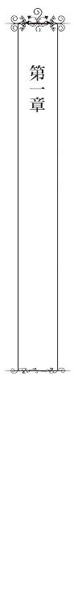
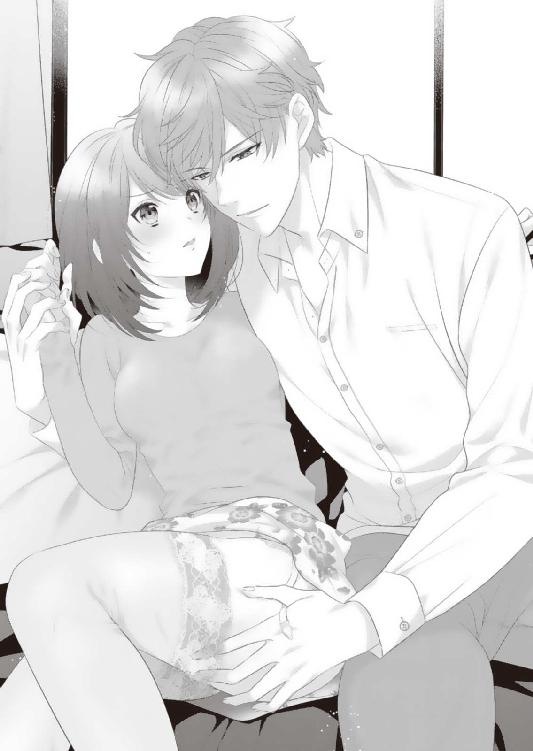

| 執愛コンフィチュール【SS付】【イラスト付】 (チュールキス文庫) | |
| 栢野すばる | |
| 株式会社ジュリアンパブリッシング (2018) | |
この物語はフィクションであり、実在の人物・団体・事件等とは、いっさい関係ありません。
イラスト・水野かがり
人気のない大学構内の渡り廊下で、背の高い若者の腕にとらわれたまま、花田貴緒は言葉を失っていた。
──どうしよう、どう、しよう、どうして......。
胸の鼓動が高鳴る。
今、貴緒を抱きしめているのは......友達、のはずの男だった。
びっくりするほどの美形なのに、気取ったところがなくて、明るくて、一緒にいると楽しい、一つ年下の男の子。彼が何故、こんな真似をするのだろう。
「貴緒さん。俺、貴緒さんが好きなんです。暁人先輩と別れて、俺と付き合って下さい」
少年の面影を僅かに残した美しい顔が、貴緒に近づく。
夕暮れの光に、諫早の淡い色の髪が透けて茜色に輝いた。
「あ、あの、諫早君......」
貴緒はどうして良いのか分からず口をつぐむ。
「絶対、暁人さんより俺の方が、貴緒さんのこと好きだから」
貴緒の恋人は、暁人という同じ大学の四年生である。
同じゼミの先輩で、独特の魅力を持った男だ。
だが、自由気ままで女性関係も派手な暁人に、貴緒は何度も泣かされてきた。
多分、このまま暁人と一緒にいても、特別に大事にもされないし、結婚もしないだろう。何の展望もない関係であることは分かっている。
だが貴緒は、プログラミングの天才で、教授からの覚えもめでたく、どんな難題でも魔法のように解いてしまう暁人に、抗いがたい魅力を感じていた。
暁人からは、まるで雑用係のごとく日々いいように使われている。恋愛経験のうすい貴緒でも『都合のいい存在』扱いされていることは分かっていた。
優等生で大人しい貴緒は、多忙でアイディアに溢れた暁人にとって、単純作業を気軽に押し付けられる便利な道具にすぎないのだ......と。
しかし、情報工学を学ぶ人間にとって、暁人は憧れの存在だ。
暁人の研究を、もっと側で見てみたい。恋人という立場であれば、他の人よりもそれが叶いやすい。暁人のような有名人の側にいられる機会なんて、そうそうない。
だから貴緒はぐずぐずと暁人から離れられない。身体の関係は、未だにないのだけれど。
「やめて......そんなこと言われても、困る......」
途切れ途切れにそう答えた貴緒の目の前で、諫早が表情を翳らせた。
「ダメ？」
「あの、ダメとかじゃなくって......私、暁人と付き合ってるから......」
「知ってるけど......知ってるんだけど、俺のことを見てくれない？」
諫早の美しい顔が歪む。彼の腕は、やせて小柄な貴緒の力ではびくともしなかった。柱に押し付けられた貴緒の腕から、ノートが滑り落ちる。
「離して。人が来る。こんなところ見られたら困る」
「暁人さんがそんなに好き？」
低い声で尋ねられ、貴緒の身体がビクッと震えた。
痛いところを突かれた、と思った。
──一応......好き......なはず。だって付き合ってるんだもん。
黙りこくった貴緒をじっと見つめ、諫早が震え声で言う。
「俺じゃ駄目なの？」
貴緒は、足の震えを抑えて頷いた。諫早の真剣な目が怖かったのだ。
「ねえ、俺が暁人さんよりいい男になれたら......貴緒さんは俺の方を見てくれる？」
茜色の光を背に、熱に浮かされたように諫早が呟いた。
「俺が暁人さんより良い男になったら、貴緒さんは俺を選んでくれる？」
吐息が触れそうなほどすぐ側で、諫早が囁いた。やめて、というべき場面なのに、何故かその一言が口に出来なかった。
諫早は、一年浪人してこの大学に入った貴緒より、一つ年下だ。
とても綺麗な顔をした可愛い男友達......であるはずの彼が、急に見知らぬ存在になってしまったようで落ち着かない。
「え、選べるわけ、ない......でしょう」
「どうして？ 暁人さんがいるから？ ......そんなの嫌だ。あの人のことなんかもう見ないで。俺のことを見てよ、お願い、貴緒さん」
貴緒は強く首をふる。この美しい青年の誘いに乗っては駄目だ。
「ご、ごめん......なさい......」
多分、貴緒は諫早と仲良くしすぎたのだ。
暁人に放っておかれる時間が長い分、諫早と行動する時間が長かったことは否めない。
二人で研究室に残って勉強したり、学食に誘われて二人でお昼を食べたり。
気が合うからと、毎日一緒に行動していた貴緒に、隙があったのかもしれない。いくら暁人に対する気持ちが冷めていても、彼氏以外とこんなことをしてはいけなかったのだ。
正直に言えば、貴緒は美貌の優等生と仲良くできてちょっぴり鼻が高かった。
人気者の諫早が『一緒にご飯食べよう』と声を掛けてくれるのは嬉しかったし、一緒にいると楽しい。彼とちょっとした待ち合わせをする度にドキドキした。
でもそれは恋ではないはず。恋は......暁人にしているはずなのだから。
「諫早君、手を離して」
「嫌だ」
諫早が強い口調で言い、貴緒に顔を近づけた。
抵抗する間もなく、貴緒の唇に、諫早の唇が重なる。心臓が、怖いくらい大きな音を立てて、胸の中で暴れ出した。
諫早のキスは、嫌ではなかった。むしろ、ひどく心がときめいた。
このまま受け入れてしまえばいい。そうすれば......。
今までに感じたことのない、甘い気持ちが胸いっぱいに広がる。
──そうしたら......私は......諫早君と......ずっと......。
そこまで考えて、貴緒は我に返った。
「離して！」
渾身の力で諫早の手を振り払った。
彼の誘いに乗ったら、貴緒は浮気をしたことになってしまう。
彼に頷くのは、暁人と別れてからだ。そして貴緒には、暁人と別れる勇気などない。
諫早の整いすぎた顔が、傷ついたように歪んだ。なめらかな白い肌からは血の気が失せ、薄い色の瞳は貴緒を映したまま凍りついていた。
「......分かった。じゃあ俺、これからもっと良い男になる。......だって暁人さんじゃ、貴緒さんを幸せにできないもん。俺は貴緒さんを傷つける奴は絶対許せない」
「どういう意味？」
貴緒の問いには答えず、諫早の痩せた身体がゆっくりと離れた。
「じゃあね、さよなら」
後ずさった諫早が、貴緒に背を向けて走り出す。
待って、と叫びそうになって、貴緒は胸の前でぎゅっと手を握りしめる。
諫早の細い背中が見えなくなるまで、貴緒は茜色の世界に立ち尽くしていた。
──どうしよう。明日からどんな顔して諫早君に会えばいいの？
どくどくと高鳴り続ける胸を押さえながら、貴緒はそう思った。
けれど、諫早はその日以降、大学に来ることはなかった。
彼が大手企業の重役だという父親に従って、家族でヨーロッパに引っ越してしまったことを暁人に聞いたのは、しばらく経った後のことだった。
......思えば、あの時こそが貴緒の人生最高潮のモテ期だった。
優秀な彼氏がいるのに、別のイケメンに迫られるなんて。
貴緒は大学時代の前半戦で、残りの人生のモテ運まで使い果たしたに違いない。

ソフトウェア開発を主業務とするベンチャー企業「ブルー・プライズ」の朝は若干遅い。
業績がイマイチなのに、こんなにのんびりしていて良いのだろうか。
危機感を感じているのは貴緒だけなのかもしれない。
相変わらずゆるい雰囲気の朝のミーティングが終わり、貴緒は化粧室へ向かった。
鏡には、つり気味の大きな目をした、やせた小柄な女が映っている。
幼げな印象を打ち消そうと精一杯スーツで武装した二十八歳の女。それが、今の自分だ。
──今日も忙しいんだろうな。
ちょっと疲れを感じつつ自席に戻り、私物のスマートフォンを立ち上げた貴緒は、メールを確認し、顔をしかめた。
──面倒なヤツから面倒な誘いが......！
メールをよこしたのは、大学時代の元恋人、高辻暁人だった。
日本でも指折りのエンジニアとして有名な彼は、その精悍な容姿も相まって、メディアでも引っ張りだこだ。ＩＴ関係のサイトを巡回すれば、彼の顔を見ない日はない。
彼の顔を見かけるたびに二十八歳になった貴緒の心には薄暗い感情がよぎる。
『あんな奴に純情を捧げて、学生時代の私はバカだった』と。
結局、貴緒は暁人に浮気され、捨てられた。
二股ならまだいい。三股でも......まだ許せたかもしれない。
だが暁人がかけていたのは四股だ。そして彼は、大学院在学中に、その中で一番裕福な家のお嬢様とデキ婚した。貴緒は『さよなら』も無しで彼に捨てられたのだ。
しかも、暁人には貴緒ときっぱり他人になったつもりはないらしい。
『恋人をやめただけで、これからも友達だけど？』と当たり前のように言い放たれた時は、開いた口がふさがらなかった。
そんな暁人は、今も平気で貴緒に連絡を取ってくる。
何の罪悪感もない顔で、『俺の会社に入れよ』なんて言ってきたり、エンジニア向けのイベントの無料チケットを送りつけてきたり、これ見よがしに貴緒の会社に仕事を回してくれたり、ひどい時は今日みたいに二人で食事に行こうなんて誘ってくる。
──いつになったら切れるんだろう、この腐れ縁......。
貴緒はこめかみを揉み、パソコンのディスプレイに向かう。
メールが大量に届いていて、今日の午前中もこの対応で終わってしまいそうだ。
もう一度私物のスマートフォンが鳴る。暁人だ。貴緒はメールを確認して、誰にも聞こえないくらいの音で小さく舌打ちした。彼からのメールにはこう書かれていた。
『今日は面白い話があるから来いよ』
もしかしたら、貴緒の会社に新しい仕事を回してくれる......のかもしれない。
悔しいことに、暁人のエンジニアとしての実力と才能は本物なのだ。
会社の業績があまり良くない今は、こんな男の力でも借りねばならない。
役員や上司も『高辻暁人とコネがあるなら、ガンガン使ってくれ』なんて煽ってくるし......何とか切りたい関係なのに、どうにもならないのだ。
貴緒は眉根にシワを寄せ、短く返事を打ち込んだ。
『面白い話って何？』
すぐに暁人からの返事が来る。
『多分お前が喜ぶ話。じゃあ今日の二十時に有楽町のいつものバーな』
また良いように彼のペースに巻き込まれてしまった。
貴緒は『分かった』と返信し、スマートフォンを鞄の中に投げ込むと、コーヒーを一口飲んで業務メールの返信に集中することにした。
──八時に有楽町か。間に合うかな。
無理そうだったらドタキャンすればいいか、と思いつつ、貴緒はキーボードを叩いた。
その日も、貴緒の一日は多忙なまま過ぎていった。
ミーティングやら開発作業やら、メールの処理などに追われていたら、あっという間に二十時近くなっている。時間通りにはたどり着けないなと判断し、貴緒はスマートフォンを取り出して、暁人に連絡を入れた。
『ごめん、三十分遅れる。待つのが嫌なら別の日でお願いします』
スマートフォンを机に置いてパソコンに向かっていると、しばらくして返信があった。
『大丈夫！ コイツと先に飲んでいるから』
そのメールには画像が添付されている。何だろうと思って開くと、そこに映っていたのは、暁人とスーツ姿の男の姿だった。
暗い場所でピントもぶれており、顔がはっきりと写っていない。だが、淡い色の髪を持ち、とても整った顔立ちをしているのが分かる。暁人に肩を抱かれて笑みを浮かべているその顔を、どこかで見たような気がした。
──誰だっけ......すごいイケメンさんっぽいけど。
だが、思い出している暇はない。貴緒は『ごめんね』と返信して、再びパソコンに向かった。
仕事が全部終わったのは、二十一時過ぎだった。
貴緒はジャケットを羽織って会社を飛び出す。別に暁人を待たせても罪悪感はないのだが、もう一人写真に写っていた男が気になる。暁人がわざわざ呼んだのなら、有名なエンジニアやコンサルタントである可能性が高い。
──この業界、意外と狭いから、挨拶だけでもしておこう。
貴緒は地下鉄の駅に走った。有楽町の駅で降り、待ち合わせのバーに駆け込む。
暗い店内は見通しが悪く、貴緒は暁人の姿を探して左右を見回しながら歩いた。その時カウンターに座っていた男が身を乗り出し、貴緒に手を振る。
「おーい、貴緒。こっちこっち」
見慣れた暁人のがっしりした身体の傍らに、痩身の男の姿があった。姿勢が良く、仕立ての良さそうなスーツを身にまとっている。
──お金持ちそうな人。これはしっかり顔売って、ツナギを作っとかないとな......。
貴緒はいつも暁人に見せているものとは違う、営業用の華やかな笑みを浮かべた。
「こんばんは、遅くなってごめんなさい」
作り声でそう挨拶しつつ、暁人の傍らの男に目をやった。
一言で言えば、美しい男だ。だが、彼の際立って端整な顔立ちには、見覚えがある。
「いや、じゃあお姫様は諫早の隣に座ってもらおうかな」
暁人の言葉に、貴緒は目を見張った。
──諫早君？ 嘘......もっと中性的で可愛かったよね？
七年前とは別人のように大人びた美貌の男が、薄い色の瞳で貴緒を見つめて微笑む。
「お久しぶりです、貴緒さん」
声だけは昔と変わらない。諫早だ。貴緒は懐かしさに口元をほころばせた。
夕方のサークル棟の狭い部屋で、持ち込んだノートパソコンを覗いていた諫早の、少年のような笑顔が貴緒の中に蘇った。
「びっくりした......大人っぽくなったから！ 久し振りね、諫早君」
まるで蛹から脱皮した蝶のようだ。見事に成長した姿に、貴緒はつい見とれそうになる。
──昔も綺麗だったけど、こんなにいい男になったんだ。すごいな、時の流れって......。
「先週日本に帰ってきて、暁人さんに連絡を取ったんです。そしたら貴緒さんも呼んでくれるって。会いたかったから嬉しい」
諫早がそう言って、貴緒を見つめて微笑んだ。
別人のように大人っぽくなった彼の笑顔に、不覚にも貴緒の心臓が一瞬高鳴った。
七年前の、諫早との別れの日のことを同時に思い出す。
『俺の方を見てほしい』と言っていた諫早の、真剣な眼差しが蘇る。
──私、大きな魚を逃したのかも、なんて......。
笑顔を保ったまま、貴緒は諫早の様子を探る。
しかし、諫早の笑顔は程よく距離感のある社交的なもので、貴緒に対する特別な感情は感じられない気がした。
──私に言ったことなんてもう忘れてるよね。若い頃の気の迷いよ、あの告白は。
そう考えたら、あっさり納得できた。貴緒は暁人と二人で諫早を挟む席に座り、飲み物のメニューを手に取った。
「二人とも何を飲んでるの？」
「俺はジンフィズ。諫早は普段酒飲まないんだってさ」
貴緒は頷き、バーテンダーにオールドパルを注文した。『古い友情』という名前のカクテルを頼んだのは、ちょっとした感傷からだ。
置かれたグラスを掲げ、貴緒は乾杯、と口にした。暁人と諫早も、手元のグラスを持ち上げて、近づけるそぶりをしてくれる。
「びっくりした。諫早君、日本に帰ってきたのね。東京に住むことにしたの？」
諫早は確か、大学時代から一人暮らしをしていたはずだ。
「いや、まだホテルに泊まってて」
控えめな笑みを浮かべて諫早が言うと、暁人が笑いながらグラスを傾けた。
「ホテルまでの帰り道が分からないんだろ？ 大丈夫かよ、お前」
「ええ。未だに地下鉄の乗り方が分からなくて。俺たちの大学は山の中だったでしょう」
大人びた諫早の意外な言葉に、貴緒は噴き出す。
「確かに地下鉄は難しいわよね。私も働き始めた頃は、客先に行くルートで迷ったわ」
「なあ諫早、貴緒のヤツ冷たいんだぜ、何度誘っても俺の会社入ってくれねえの」
少しお酒の回った口調で暁人が言った。
なんと答えて良いのか分からないように、諫早が貴緒と暁人を見比べて困ったような笑みを浮かべる。
そう言えば彼も、暁人と貴緒が大学時代に付き合っていたことは知っているのだ。
なんとなく気まずい思いで、貴緒は曖昧に微笑んだ。こんな話題を持ち出して平然としているのは、無神経な暁人だけだ。
グラスに残っていたお酒を飲み干した暁人が、不意に機嫌の良い声で言った。
「じゃあ、諫早さぁ、帰りは貴緒に送ってもらえよ。俺はそろそろ帰るわ。さっき嫁からメールがあってさ、チビが風邪気味だから早く帰ってこいって言われちゃって」
妻子の話をする時の暁人は幸せそうだ。仕事にも家庭にも恵まれ、今では二児の父になった暁人。その幸せが、貴緒を振り回してあっさり切り捨てた末に得たものだと考えると、忸怩たるものがある。
いや、暁人との関係はとうの昔にケリがついたのだ。そう思い直し、貴緒はもう一度愛想笑いを浮かべ直す。
「......俺、さっき、暁人先輩が大学院の頃に結婚したって聞いて、びっくりしました」
諫早がそう言って、目の前に置かれたグラスに口を付ける。
「まー、ガキが出来ちまったからな。チビたち、可愛いぜ。今度俺んちに遊びに来いよ、諫早」
「ええ、ありがとうございます」
暁人の言葉に明るく応じた諫早が、視線を落とし口元を指先で覆った。
口でも拭ったのかと思ったが、そうではない。彼は、はっきりと笑っていた。
その笑顔に貴緒は違和感を覚える。暁人の話からは脈絡のないタイミングでの笑顔だったからだ。
諫早は、それを暁人と貴緒の視線から隠そうとするように、一瞬深く俯いた。
「ん？ どうした？」
諫早の様子に気づいたのか、暁人が首を傾げる。
貴緒も手元のカクテルをちびちびと味わいつつ、諫早の様子を見守った。
──どうしたのかな。諫早君の笑いのツボがいまいち分からない。
「あ、いえ、何でもないです。そっか、暁人先輩、もう二児の父なんですね」
顔を上げた諫早は、もうさっきまでの穏やかで上品な表情に戻っていた。
だが、貴緒にまとわりつく違和感は消えなかった。諫早は何が嬉しくて、あんなこらえ切れないと言わんばかりの顔で笑ったのだろう。
「そうだよ。休日がチビ共のお世話で潰れるんだぜ？ 小遣い制だしさぁ......ま、とにかく俺は帰るよ。お前らは適当に飲んでって」
暁人がそう言って、残りのグラスを傾ける。
ダラダラ飲んでも疲れるだけだ。明日も忙しいし長居はしたくないと考え、貴緒はすかさず暁人の言葉に従った。
「じゃあ私たちもそろそろ帰る。諫早君、どこまで送っていけば良いのかしら？」
貴緒は、テーブルに置かれた残り物のカナッペや、ソーセージを口に運んだ。
家に帰ったら中途半端な時間なので、ここである程度お腹を膨らませておこう。
「えっと......この駅がホテルの最寄りなんですけど」
スマートフォンをいじっていた諫早が、貴緒の前に画面を差し出した。不意に触れた肩が意外なたくましさで、柄にもなく貴緒はどきりとしてしまう。
「あら、このホテルなら、ここからすぐよ」
示されたホテルの場所を見て、思わず貴緒は笑ってしまった。下手をすれば歩いてでも帰れそうな距離だ。諫早はずいぶん大人になったように見えるが、可愛らしいところは昔のままなのかもしれない。
「ごめん......どうしても都心の地理に自信がなくて」
花咲くような諫早の笑顔に引き込まれそうになり、貴緒は慌てて高鳴りかけた胸を押さえる。本当に、七年の間に大人の男になってしまって......落ち着かない。
「さ、呑んだら出ようぜ。俺早く帰らなきゃ、マジで嫁に怒られるわ」
そう言って暁人が立ち上がった。
貴緒と諫早も立ち上がり、経費で落とすから奢る、と言う暁人にお礼を言って、店を出た。夜の街は会社帰りのサラリーマンの姿でいっぱいだ。
「悪いな、俺が誘ったのにすぐ帰らなきゃならなくて。最近嫁の尻に敷かれててさぁ。じゃあまたな、二人とも」
そう言って、暁人はＪＲの駅に消えていく。
相変わらず本当に勝手な男だ。だが、彼との関係は会社の利益になってくれる。たまに食事するくらいは我慢しなければ。
そう自分に言い聞かせ、貴緒は諫早を振り返った。
「さて、次は諫早君をホテルまで送ればいいのね」
なんとなく浮き浮きした気分で貴緒は言った。
見惚れるほどいい男に育った諫早と喋っていると、ちょっぴり気分が高揚してしまう。イケメンというのは、居るだけで女を浮き浮きさせる存在なのだな、と思う。
地下鉄の駅に入り、諫早に路線を簡単に説明した後、貴緒は尋ねた。
「諫早君は外国では何をしていたの？」
「新しいサービスを作って、それをインターネットで実現するような仕組みを考えてたんだ。例えば仕事が欲しいクリエイターのニーズと、発注したい一般人のニーズをマッチングさせるサイトを作って、それをどうすれば一番効率化できるかとか」
諫早がそう言いながらスマートフォンに触れる。
「見て、俺が三年目に開発したこのサイトなんかは、まだまだ現役で運用されてる」
英語のサイトを貴緒に示しながら、諫早が言った。
美しい顔が近づき、男物のオーデコロンの香りが貴緒の鼻先をくすぐる。
──ああ、大人の男、って感じ......でも、喋ってると、昔の諫早君と同じ。
諫早の身体つきは別人のようにたくましくなったものの、こうして肩を寄せ合って一つの画面を覗き込んでいると、大学時代に帰ったような気分になる。
きっと、諫早が昔のように人懐っこい笑みを浮かべているからだ。
──可愛いんだよね。なんでだろう。ルックスは非の打ち所のないイケメンなのに。
貴緒は昔から、諫早のきらきらした笑顔を見ていると、なんだか微笑ましい気持ちになってしまうのだ。今もその感覚は変わらない。
諫早に相槌を打っているうちに、やがて地下鉄は彼のホテルの最寄り駅に滑り込んだ。
「着いたわよ、後の道は分かるでしょう？」
電車がホームに止まる前に、笑顔で貴緒は言った。
久しぶりに会えて楽しかった。それに、なんだか名残惜しい気がする。
「......じゃあね、諫早君。日本の仕事頑張ってね」
また会おう、と言いかけてやめた。今日は偶然彼と会えただけ。縁があれば、またどこかで会うこともあるだろう。
「あ、あの......」
諫早が慌てたように、貴緒の目を見つめて真剣な早口で言った。
「えっと、何を言ったらいいんだろう......今日、久しぶりに会えて嬉しかった。貴緒さんがすごく綺麗になっててびっくりした、俺、本当に貴女に会えて嬉しくて」
その言葉に、貴緒の心臓がどくん、と音を立てた。
──待って、落ち着け。私、男の人のお世辞に過剰反応しすぎ......。
貴緒は自分にそう言い聞かせ、大きく息を吸って肩をすくめて見せた。
「そういうの、ヨーロッパで覚えたの？」
見た目は確かにそこそこ綺麗なキャリアウーマンに仕上がっているかもしれないが、中身は枯れ果てて半分おっさんになっている女だ。
可愛くないことなど、痛いくらいに自覚している。だから、お世辞は要らない。
そう思いながら、貴緒は開いたドアから諫早の身体を押し出す。
「ほら、ドア閉まっちゃうから早く。じゃ、気をつけてね！」
「あ、あの！ 貴緒さん、待って......」
何かを言いかけた諫早と貴緒の間で、扉がピシャリと閉まる。
貴緒は笑顔で、立ち尽くす諫早に手を振った。
彼は、少し眉をひそめて、扉の向こうから貴緒を見ていた。
......寂しそうに見えたのは、きっと気のせいだろう。
──昨日飲み過ぎなくってよかった。
貴緒は朝のミーティングを終え、自席でミネラルウォーターを一口飲んだ。忙しい中、お酒で調子を崩すと後がキツい。まだ木曜日なので、もうひと踏ん張りだ。
──今週は、休日出勤がないと信じたい......。
気合を入れ直した時、隣の席の加藤が貴緒に話しかけてきた。
「花田ちゃん、社長、出張から帰ってきたんだね」
「ええ。リフレッシュコーナーにお土産のお菓子がおいてあったわよ」
貴緒がそう告げると、大柄な加藤が立ち上がった。
「何だろう。貰ってくる」
彼は食べることが大好きだ。お土産と聞いて居ても立ってもいられなかったのだろう。微笑ましく思った、その時だった。
「はーい皆さん！ 今日は新しい社員を紹介します」
人事部の女性社員が、フロアの真ん中に立って声を張り上げた。
彼女の傍らには、社長の姿と、姿勢の良い青年の姿がある。
その姿を見て、貴緒は一瞬言葉を失う。
皆の前に立っていたのは、スーツ姿の諫早だった。
「初めまして。諫早薫と申します。女性みたいな名前ですが、見ての通りむさ苦しい男です。大学二年生の時に留学して、そのまま二十七歳の今までヨーロッパでＩＴ系の仕事をしていました。ＩＴ系が盛んなのは、実はシリコンバレーだけじゃないんです。良かったら、今後皆様にも海外のＩＴ業界について説明しますね。ブルー・プライズさんでは、主にサービス企画の仕事をさせていただくことになると思います。未だに自力で地下鉄に乗れないような田舎者なので、皆さんお手柔らかにお願いします」
その自己紹介に、あちらこちらから笑い声が立ち上がる。
貴緒の後輩の女子社員たちが、笑顔で何か囁き交わしている。はしゃいだ彼女たちの笑顔に、貴緒は内心、ため息をついた。
──大学の頃から美少年ではあったけど......改めて明るいところで見ると男前だな。
「そういえば、諫早君は、三課の花田さんと同じ大学なんだよね」
社長が笑顔で貴緒を指し示す。皆が振り返ったので、貴緒は姿勢を正した。
「あ、はい、しばらく一緒の大学でした」
貴緒は、無難な答えを返してニッコリと笑った。諫早が貴緒を見つめて笑顔を返す。
......やはり、男前すぎる。無性に心臓がドキドキして、貴緒はさりげなく目をそらした。
「何かあったら諫早君の面倒見てやってくれ。じゃあ解散。今日も一日頑張りましょう！」
社長の言葉に、皆が一斉に礼をした。
貴緒は驚きを引きずったまま、自席に戻ってメーラーを立ち上げる。
──い、諫早君が、うちの会社に勤める予定だったなんて知らなかった......。
なんにせよ、新しいメンバーは歓迎だ。ブルー・プライズ社は創立七年目のベンチャー企業なので、人も少なく営業力も弱い。補強してくれる人材が参加してくれるのは心強い。会社が傾きつつある今ではなおのことだ。
ボーナスが出るかも分からないような経営状況では、諫早に若干申し訳ない気がするが......。
「ねえ花田ちゃん、このページ、諫早さんのことが書いてある。彼ってばすごいエリートだよ」
加藤が隣の席からこそこそ声をかけてくる。彼の指し示すディスプレイには、今よりやや若い諫早の写真と、長い英文が表示されていた。
「なんて書いてあるの？」
「フランスの有名なベンチャーキャピタルから、彼とそのチームは二十五歳以下で初めて三年以上の継続支援を受けた......って書いてあるよ。若いのにすごいね」
高校までアメリカに居たという加藤は、英語に堪能だ。貴緒はなんとか英語の文章を読んでみようと頑張ったが、ネイティブ向けのサイトの解読は困難を極め、早々に諦めて自分の席に戻った。
ふと顔を上げれば、営業部に置かれた諫早の机の側には、早速何人かの若い社員が詰めかけている。海外から帰ってきたばかりの新しい仲間に興味津々なのだろう。
──後で時間があったら、私も諫早君に話しかけてみようかな......。
貴緒はそう思い、ディスプレイに向き直った。
仕事に集中していると時間が経つのはあっという間だ。ふと気づけばもう二十一時近い。
社内には人影もまばらだった。仕事人間の貴緒と違い、皆、色々予定があるのだろう。
──男もいないワーカホリックのアラサーの人生なんて、こんなものかも。
自虐的な気持ちで、貴緒はため息をつく。
気づけば友人ともほとんど出かけていないし、ジムにもあんまり通えていない。
──私、心のどこかで暁人を見返したいんだろうな......同じ職種にしがみついているのも、きっと意地なんだろう。
これまでに何度か、暁人に『そんな会社じゃなくて俺の会社に入れよ』と誘われたことを思い出し、貴緒は面白くない気分でファイルを閉じた。
今や、貴緒の選んだブルー・プライズ社は負け組で、暁人の興したコレクトインフォ・テクノロジーは軌道に乗っている。しかも暁人を見返すどころか、彼の知名度を借りて仕事をもらっている状態なのだ。
だが、暁人から見下されるようなエンジニアにだけはなりたくない。
その時、貴緒は視線を感じて振り返った。後ろの席にいた後輩の信田有美が、慌てたように椅子に座り直す。
──あれ？ 私のこと見てた？
貴緒は首をかしげ、再びディスプレイに向き直る。今開いているのは、メーラーと、確認中のプログラム、それとエクセルだ。とくに有美が興味を示しそうなものはない。
──気のせい......かな。
気分を切り替え、貴緒は再び、仕事に集中する。
作業に没頭しているうち、あっという間に長い時間が経過した。
──うー！ 肩こったなぁ......。
ようやく仕事を片付けた貴緒は、久しぶりにＳＮＳのページにログインした。友人たちの近況を確かめると、皆、恋人や家族、友人と過ごした楽しい思い出を綴っていた。愛らしい赤ん坊の写真をアップしている友人もいる。
誰も彼もがキラキラしていて、うらやましい。
貴緒は基本、友達の記事にコメントする以外は、食べたものの写真やニュース記事の感想を投稿しているだけだ。
──私に足りないものって何なんだろう。魅力かな、愛情深さ......？ それとも、男運？
仕事の予定しかない自分を顧みると、自虐的な思いがますます深くなってしまう。
──全部かな......私って、甘くなり損ねたまま、食べられずに廃棄される果物みたい。
外見をそれなりに女らしく装っても、きっと何かが足りていないのだ。
他の女の子が甘くて美味しい桃なら、貴緒は硬くてまずい、熟していない苺のようなモノなのかもしれない。
ＳＮＳを見ていた貴緒は、ふと手を止めた。
偶然開いたページで、暁人の妻が、子供に囲まれた幸せそうな様子をアップしている。付き合いで仕方なく暁人と繋がっているせいで、彼女まで表示されたのだろう。
『高辻十代子』と表示されたページには、彼女の美しい顔と、腕に抱かれた可愛い子供たちの写真が何枚も表示されている。
同じ大学にいた十代子はその頃から美人で有名だったが、専業主婦として愛され、満たされて暮らしている今は、ますますその美しさに磨きが掛かったように見える。映り込んでいる家のインテリアも、いかにもセレブな感じで住み心地が良さそうだ。時々、暁人の姿も映っている。
──選ばれた女の人の人生って、こうなんだな......。
無表情でそれをしばらく眺め、貴緒はＳＮＳの画面をオフにした。
そもそも貴緒は、子どもを持つ以前に、そのための行為すらしたことがないのだ。
『お前の痛がり方、めちゃくちゃ萎えるんだよ。なんだか俺が悪いことしてるみたいじゃん』
昔、暁人に投げつけられた言葉を思い出した瞬間、猛烈に腹が立った。
──お前こそ下手なんだろ！ 他の男のえっちなんか知らんけど！
暁人とは、結局最後までできなかった。痛くて我慢できなかったのだ。
彼は自己中だったし、貴緒も自分から彼と抱き合いたいとは思わなかった。
そんな状態を半年近く繰り返すうちに、暁人との仲はどんどん悪くなっていった。
いざコトを成そうとして失敗するたび『ヤれないなら別れたい』と何度も言われ、『暁人が乱暴なんだよ！』と言い返して大げんかした。
そして、『本命』ができた暁人から、貴緒は距離を置かれるようになり、最後には別れの言葉もないままに捨てられてしまったのだ。
──唯一の恋愛経験がこれって......最悪......マジで。
友人から『高辻さん、結婚するんだって？』と突然聞かされた時はショックだった。結婚するなら一言くらい言うべきではないのか。
そもそも泣いて痛がってる処女に対してあの態度は最低すぎではないのか。
貴緒は、あの一件以降、完全に男に対して心を閉ざした。恋愛沙汰はもう勘弁してほしい。今の貴緒は、女の皮を被った仕事一筋のおじさんのようなモノに成り果てた。
──あー、思い出したらまた腹が立ってきた！ 結局私はこじらせて処女のままだよ！
ＳＮＳに『仕事終わったからラーメン食べて帰りまーす！』と書き込み、帰り支度を始めた。その時だった。
「あの......貴緒......じゃなくて花田さん、遅くまで頑張ってたんだね。もう帰る？」
穏やかな男の声に貴緒は顔を上げる。そこに立っていたのは、諫早だった。
「うん、今ちょうど仕事が終わったところだから」
貴緒は慌てて笑みを浮かべ、暁人への怒りを心の底に押し込めた。こんなふうに過去を思い出してイライラするのは、疲れている証拠だ。
「良かったら、俺と一緒に帰らない？」
完璧すぎる綺麗な笑顔でそう言われ、貴緒は頷いた。
「ちょっと待ってて」
机の上に広げた資料を引き出しに片付け、パソコンの電源をオフにする。
「お待たせ、帰りましょう。お先に失礼します」
残業をしている別のチームの同僚に声を掛け、貴緒は諫早と並んでオフィスを出た。
「諫早君は、出勤一日目から残業したの？ お疲れ様」
「資料をしっかり読んでおきたくて。日本で仕事をするの、初めてだし」
「びっくりしたわ。まさか諫早君がこの会社に入ってくるなんて思ってなかったから」
貴緒はそう言って、諫早の色の薄い瞳を見上げた。
見ているだけで吸い込まれそうな、美しい榛色の瞳は昔と変わらない。
「うちの会社って、正直海外帰りのエリート様が入るような会社じゃないじゃない？ 諫早君はどうしてうちを選んだの？」
貴緒がそう尋ねると同時に、エレベーターのドアが開いた。
乗り込んでドアを閉めた後、貴緒は傍らの諫早に続けて尋ねた。
「社長にでもスカウトされたの？ うち最近、中途の採用かけてないよね？」
「いや、あの、なんて言うか......色々と交渉して入社させていただいたんだ」
諫早が落ち着かない様子で視線を左右させる。
──どうしたんだろう、変なことを聞いちゃったかな。
首をかしげた貴緒をじっと見つめ、諫早が言った。
「あのね、家族の中で俺だけヨーロッパに残って働いていたから、そろそろ日本に帰ろうと思ってたんだ。その時にこの会社を知ったんだよ。ここで働きたいなと思って、自分から打診して、採用してもらって......。まあ、うん......そんな感じ」
諫早が何かを言いかけ、唇を噛んで黙りこんだ。
同時にエレベーターが一階に着く。ビルの一階フロアには誰も居なかった。
夜の八時を過ぎたら、表玄関がロックされて裏口から出なければならないのだ。一応そのことを諫早にも教えておこう。貴緒はセキュリティカードを手にしたまま諫早を振り返った。
「諫早君、この時間の出口はこっちなの」
表玄関の方に向かおうとしていた諫早が、早足で戻ってきた。
「そっか、なんだかエントランスが暗いなと思ってた。あ、そうだ、貴緒さん、今日夕飯を食べて帰らない？ 俺、ちょっと話がしたいな。この会社のことでいろいろ貴緒さんに質問したいことがあって」
穏やかな声でそう提案され、貴緒は頷いた。
「いいわよ。私で答えられることなら。あ、でも、会社の外で社外秘の情報を喋ったらダメよ？」
貴緒はセキュリティカードをかざして裏口のロックを開け、諫早を振り返った。
「お店、隣の駅のカフェでいいかしら？ ご飯も食べられるし、そこそこ長居できるから」
「ラーメンじゃなくていいの？」
突然妙なことを聞かれ、貴緒はぱちくりと瞬きをした。
「え......諫早君はラーメンがいいの？」
確かにさっきまでは、一人でラーメンでも啜ろうと思っていたが......偶然食べたいものが重なったのだろうか。戸惑う貴緒の前で、薫が慌てたように首を振って見せた。
「あ、な、なんでもない。了解。日本のご飯は美味しいから、なんでもいい」
どうやら、ラーメンの話は偶然だったようだ。頷く諫早に笑顔を返し、貴緒は地下鉄への道を歩き始めた。
「なんだか、デートみたいだね」
お世辞はとても上手になったようだ。諫早の明るい声に、貴緒は笑顔で答えた。
「相手が私で良ければ、デートってことにしましょうか」
その言葉に諫早がほんのり頬を染める。
「......ありがとう。嬉しい」
そう呟いた諫早の表情は、昔の、可愛い男の子だった頃にそっくりだ。
冗談を言った貴緒まで、釣られて赤くなってしまう。
「い、いや、私みたいな枯れ女で良ければ、ね。さあ行こう！ お腹空いちゃった」
妙にドギマギした気持ちで、貴緒はわざと明るい声を出した。
「枯れ女？ 何それ。貴緒さんは昔と変わらず......可愛い人だと思うよ」
突然の甘ったるいセリフに、貴緒は絶句する。
──いちいち動揺するなって......こんなんだから恋愛初心者マークが外れないのよ！
貴緒は気を取り直し、余裕があるふりをして諫早に答えた。
「ほ、褒めたって奢らないからね。ボーナス前なんだから！」
「奢り目的じゃないよ、今のは俺の本音」
貴緒の言葉に、諫早が笑ってそう言ってくれた。相変わらず優しい彼の白い耳は、綺麗な赤に染まっていた。
こんなやり取りでも照れるなんて、やはり、諫早の可愛らしいところは変わっていない。
なのに、怖いくらい美しい大人の男になってしまって......落ち着かない。
貴緒は諫早と共に、そわそわした気持ちで行きつけのカフェへと向かった。
人の少ない裏道を二人で歩いていると、大学時代に戻ったような不思議な気分になる。
──すごくイイ男になっちゃったけど、やっぱり相変わらず可愛いな、諫早君。
そう思いながら、微笑みかけてくる諫早の顔を横目で見つめる。
非の打ち所がない、いい男だ。地下鉄に乗り込んだ後も、乗客がちらちらと諫早を見ているのが分かる。なんだか、芸能人を連れて歩いているような気分になってきた。
──落ち着かない......大学の頃より格好よくなったから、すごく目立つ......。
隣駅のカフェは、程よい混み具合だった。壁際の四人掛けの席に腰掛け、いつものベジタブルプレートを注文する。日本のメニューがピンと来ないのか、メニューを手に首をかしげている諫早に、貴緒は比較的ボリュームのあるメニューを指してみせた。
「このプレートは、ミートローフも乗ってて良いわよ。お腹空いてるんでしょ？」
「それにしようかな。ありがとう、貴緒さん」
整いすぎた諫早の笑顔に、貴緒の心臓が一瞬だけ高鳴った。
あわてて気まずさを押し隠し、貴緒は慌てて話題を探す。
「それにしても、諫早君がうちの会社に入ってくるなんて......暁人の会社に入れてもらえば良かったのに」
しかし貴緒の言葉に、諫早は首を振った。
「誘ってもらったけど断ったんだ。オファー内容は魅力的だったけど」
「勿体無い、どうして？」
暁人の会社は業界でも飛ぶ鳥を落とす勢いの、最高ランクの技術力を持つベンチャー企業だ。彼の会社に入りたいと憧れているエンジニアはたくさんいるし、海外帰りの諫早なら、きっと活躍できたに違いないのに。
「俺なりに、いろいろ考えた結果」
諫早には、答えをうまくはぐらかされてしまった。
「そうなんだ。昔からの知り合いの下で働くなんて、やりづらい部分もあるものね。ところで私に聞きたいことって何？」
「あ、うちの製品の機能のことなんだけど......」
諫早がノートを取り出す。貴緒はびっしりと書き込みのされた紙面を覗き込んだ。
大学の頃と変わらない字だ。ふと懐かしい気持ちになって、貴緒は思わず口にした。
「諫早君、相変わらず綺麗な字ね」
「......貴緒さん、俺のこと、意外と覚えていてくれてるんだね」
嬉しそうに諫早が言い、付箋を貼ったページを開く。今日一日でこれだけの量を書いたのだろうか。ぎっしりと取られたメモや不明点の列挙に、貴緒は内心舌を巻く。大学の頃から頭のいい子だと思っていたけれど、社会人になり、海外での仕事も経験したせいだろうか、より洗練された知性を身に付けたような気がする。
「ここなんだけど」
諫早の長い指がノートの一部を指す。そこには、貴緒の会社の中堅商品の名前と、顧客からもよく指摘を貰う、データ取り込み機能についての問題点が書かれていた。
「あのソフト、データの取り込みが面倒くさくないかな？ 加工するのに手で編集しているお客さんも居るかも」
「加工用のツールも一緒に提供してるんだけど、使い方がちょっと面倒で」
「内部で他のシステムにも流用できるような、標準的なデータ交換フォーマットに変換したら？ システム連携先も簡単に増やせるし。俺がオススメするのは......」
気づけば貴緒は、運ばれてきた料理に手を付けるのも忘れ、ノートを熱心に覗いていた。
「あー......たしかに諫早君の言った通りだよね。このやり方だと処理効率が悪いかも」
貴緒は頷き、四人掛けの席の隣をポンポンと叩いた。
「ちょっとその位置だと、向かい合ってノートが見づらいからこっちに来て」
「......あ、う、うん」
諫早が言われた通りに頷き、そっと貴緒の隣に腰を下ろす。
貴緒は様々な指摘がまとめられたノートを真剣に読み込みつつ、解決法があるものには諫早に借りた赤ペンで小さく印をつけていく。
一部の指摘内容は、明日の製品会議に早急に提出したい。もちろん、諫早からの指摘だということは明確にして、彼のシステム仕様分析能力が非常に高いことを、会社の幹部にも印象づけるつもりだ。
「......おさん、貴緒さん」
一心不乱に情報の選別をしていた貴緒は、名前を呼ばれて我に返った。
「ごめん！ ねえこれ、明日の会議に出そう？ 諫早君、一日でこんなに気づくのすごいよ」
「そうかな......ありがとう」
褒められてまんざらでもない風に、諫早が柔らかな表情で笑う。
その瞬間、貴緒は二人の距離がとても近いことに気づいた。まるで恋人同士のような距離で、一つのノートを覗き合っているではないか。
仕事に夢中になりすぎて、意識していなかった。今更ながら、猛烈に落ち着かなくなる。
「あ、あの、ノートも取り上げちゃってごめんね。もういいよ、元の席に戻って」
「俺なんかより、暁人先輩の方が凄いんじゃないの？」
諫早が微笑みを消して、小さな声で呟く。
「えっ？ 暁人がどうしたの？」
唐突な話題の転換に首をかしげた貴緒に、諫早が畳み掛けるように尋ねた。
「暁人先輩は日本では有名なエンジニアなんでしょう？」
貴緒は最近の暁人の業績を思い浮かべる。彼が前線に立っていたのは一年くらい前までで、今はその頃に起案したプロジェクトにアドバイザーとして関わりながら、会社経営に専心しているはずだ。
「まあ......暁人は昔から別格だよね。大学の頃からずば抜けてたもん。やることなすこと」
彼はいわゆる、天才型の変人だ。男前で人たらしな反面、飽きっぽくて残酷だ。
暁人の『何をしても自分ならば許される』と心の底から信じているであろう傲慢さも、それでいて妙に面倒見がいいところも、魅力的であることは認める。だが、散々振り回された貴緒としては、彼を全面的に肯定しようとは思えない。
「そう。貴緒さんはまだ暁人さんを......あの、尊敬とか、してるんだね。彼のこと好き？」
「え？ 別に？ もうだいぶ前に別れたし」
貴緒はそう言って、冷め切ったプレートのキッシュを口に運んだ。
『仕事上都合がいいから、適当に付き合ってるだけだよ』
内心でそう付け加え、お皿に添えてあったカポナータも一気に食べ切ってしまう。
「本当に？」
諫早が貴緒と目を合わせずに呟いた。その様子がなんだか切羽詰まっているように見えて、貴緒は心の中で小首をかしげる。
「......どうしたの、諫早君」
「うちの会社、経営状態があまり良くないよね」
また、唐突に話が変わった。貴緒はまばたきをし、入社してきたばかりの諫早にどうやって事実を伝えたものかと考える。
今期の目標を達成できれば、あと三ヶ月は何とか通常運行でいけるはずだ。
エンジニアには経営状態にあまり興味がなく、会社がなくなれば他へ転職すればいいと思っているタイプもたくさんいる。
だが、ブルー・プライズの立ち上げ時期から働いている貴緒は、この会社に愛着があるし、社長にもそれなりに恩義を感じているのだ。
──今、諫早君にやる気なくされたら困るなぁ......色々良い企画出してくれそうだし、こんなエリート君を営業同行させたら、お客様のアポ率もちょっとは上がりそうだし......。
考え込む貴緒の傍らで、諫早がノートの別のページを開く。
「見て。さっき計算したんだ。人件費は日本のエンジニアの年齢別平均年収からの概算で、売上高は経理の人に貰った前期末の財務諸表とキャッシュフローだけだけど......このまま予算を今期中に達成できないと、半年先以降は、収益性の低い社員さんを十人以上解雇しないと駄目になると思う」
深刻な口調に、貴緒も思わずノートを覗き込む。
諫早が会社の売上についても真剣に考えていることに内心驚いた。
見せられた数字の意味はすぐにはよく分からないが、今後新しい受注が望めなかったら会社の展望が厳しいのは確かだ。
貴緒は周囲の席に人が居ないことを確かめ、小声で答えた。
「暁人の会社の下請けをさせてもらう話があるわ。そのプロジェクトに私も参画する予定」
この案件も一応、貴緒が彼の機嫌を取り続けてなんとか恵んでもらったものだ。
あんな奴にニコニコしなければならないのは内心腹立たしいのだが、売上達成のためなら涙を呑むしかない。
「へえ、そうなんだ。いくらくらいのプロジェクトになるんだろうね」
「分かんないけど、そこそこは助かるんじゃないかな」
そう答えつつ、貴緒は思った。諫早はまるで経営者のようだ......と。うまく言えないけれど、少なくとも彼の言動は、経営側に回ったことがある人間のものに思えた。
──海外のベンチャーで働いてたってことは、経営にも参画してたってことかもね......だから詳しいんだろうな。
なんとなく納得した貴緒の前で、諫早がさっとノートを閉じて微笑んだ。
「そうだ、貴緒さん、週末忙しい？」
「え......？ 暇だけど」
思わず本当のことを答えてしまい、貴緒は内心後悔する。
──私の予定は、お取り寄せした高価なスルメを炙って食べるだけなんだけど......そんなの知られるの癪だよね......。
週末何の予定もなく、ただ家でボーッとするだけだなんて、他人に哂したくない。その相手がこんな美青年なら尚更だ。
「じゃあ、一緒に部屋探し手伝ってもらえない？ 日本のこと、まだよく分からなくて」
「え、っ......？ ま、まあ、いいけど」
家を一緒に探してほしいとは......予想外にプライベートなお願いだった。驚いて反射的に頷いた貴緒を諫早が笑顔で見つめる。
「嬉しい」
諫早が低い声で囁き、貴緒の方に僅かに身を乗り出した。
「俺、ずっと貴緒さんに逢いたかったから」
ドキン、と心臓が鳴る。当たり前だ。こんな男前に近づかれたら誰だってそうなる。
「そ、そう、ありがと」
「......覚えてる？ 昔のこと」
頬に血が集まるのを感じながら、貴緒はそっけなく尋ね返した。
「なんだっけ？ 覚えてないかも」
「俺、貴緒さんのこと大好きだったんだ」
諫早がため息のような口調で言い、貴緒の顎に手を添え顔を自分の方に向かせた。
「思い出してくれた？」
自分でもびっくりするくらいの音を立てて、心臓が鳴った。
──な、何この雰囲気......お、落ち着け......。
「さあ、あんまり覚えてないわ」
貴緒は、努めてそっけなくそう答え、諫早から目をそらす。
あれは七年も前のことで、明らかに今蒸し返す話ではない。むしろ、諫早にとっては黒歴史に近いのではないだろうか。
「思い出してよ」
「そのうち思い出すかもね」
心臓をバクバク言わせつつ、貴緒は懸命に冷静なふりをして、諫早の手をそっと押しのけた。
男心に疎い貴緒にも、からかわれているだけなのは分かる。だが諫早は男前すぎるので、あまり女を勘違いさせるようなことはしない方がいいのではないだろうか。
「あの、貴緒さんは今、彼氏いないんでしょう？ ＳＮＳに書いてるの見ちゃった」
「い、いないけど。それが何か？」
諫早のからかい言葉に、気の利いた言葉一つ返せない。そんな女として未成熟すぎる自分を情けなく思いつつ、貴緒はぷいと顔をそらした。
規格外なイケメンというのは、枯れ果てた女心を無駄にドキドキさせすぎだ。
「......これ食べ終わったら、帰ろうか。明日は金曜だからようやく一週間も終わりだね」
突然、ころりと話が変わった。脱力した貴緒の耳に、明るい諫早の声が届く。
肩透かしを食らったような気分になりつつ、貴緒は彼に愛想笑いを返した。
「そうね。今週も疲れた。忙しくって」
「このお店、食べ物もどれも美味しい。また一緒に来ようね、貴緒さん」
諫早の笑顔は無邪気だった。さっきまでの妖しげな雰囲気は感じられない。
──何考えてるの。まったくもう......。
動揺を押し隠しつつ、貴緒はできるだけ冷静な口調で答えた。
「そうね。また今度」
諫早は端整な顔にかすかな笑みを浮かべて、貴緒に言った。
「俺さ、どうしても食べたいものがあるんだ、だから日本に帰ってきた」
不思議な言葉に、貴緒は小首をかしげる。
「え、何？ 天ぷらとか......？」
「ちがうよ」
諫早は貴緒の言葉に笑って、美しい切れ長の目を伏せた。
「じゃあなあに？ お寿司？」
「さあね......何だろう」
ますますよく分からず、貴緒は腕組みをした。
だが諫早はそれ以上、『どうしても食べたいもの』の話をしようとはしなかった。
そして週末の金曜が来た。仕事が終わったのは二十三時過ぎだった。
やっと家に帰り着いて一息ついたら、もう日付が替わっているなんて。平日はいつどこに消えているのだろう。貴緒はあくびをして、諫早から来ていたメールを確認する。
『明日だけど、予定通り家探しに付き合ってもらえそう？』
『遅くなってごめんなさい。了解です。今帰ってきたからお昼くらいでいい？』
そう打ち返すと、すぐに返事が来た。
『大丈夫です。俺が住むとしたらどのあたりが良いかな？ 貴緒さんのおすすめ、ある？』
──おすすめの街、か。どういうところに住みたいのかな。
貴緒は、若い男性の暮らしやすさを思い浮かべ、返事を送った。
『会社の近くにすれば？ それから、夜遅くまで開いててお惣菜が買えるスーパーとか、土日に気軽に入れるレストランがたくさんあるところ』
貴緒はスマートフォンを投げ出し、重い身体を引きずってバスルームへ向かって、ようやく熱いシャワーを浴びた。
──あー、疲れた......明日、諫早君の用事が終わったら、エステに行こうかな。
典型的なお独り様の予定を思い浮かべながら、貴緒はボディソープを泡立てた。
高級品のボディソープは、いい匂いだ。ちょっと高価なバスグッズに化粧品。自分のことにだけお金を使う気軽な生活は悪くない。
土曜も日曜も自由で、好きなことだけして暮らす毎日に馴染むと、こういう生き方はやめられないだろうな、とぼんやり思う。
その反面で、恋人とのノロケやら、結婚生活の幸せな話やらを聞くと落ち込んでしまうのも事実だ。
積極的に恋愛したいわけではないのに、恋愛から切り離された人生を寂しくも感じる。
自分は、見た目はそこそこでも、囓ってみたら青臭くて酸っぱくて食べられたものではない......そんな女なのではないか、と思えてしまう。
──そもそも二十八歳で男知らないとか、ありえないでしょ......こんなに性に自由な時代に私ってヤツは......。
自分はいつまでこのままなのだろう。一生、処女のままなのだろうか。それはそれでなんだか恐ろしい。周囲が知っていて当然のことを知らぬまま人生が終わるなんて。
──でもホント痛かったんだよなぁ、思い出すたびにマジでムカつくんだけど......暁人、乱暴すぎでしょ......。
熱いシャワーを浴びながら、貴緒は己の黒歴史に顔をしかめる。
普通の女子大生は、彼氏にもっと大事にされるのではないか。
何故自分はあんな男に執着していたのか。
思い出せば出すほど、腹が立つばかりだ。
──ホントもう嫌。やっぱり恋愛とかもういい。私、可愛くないし、胸も色気もないから愛されないもん！ いっそカラダだけの関係になってくれるお金持ちのイケメンとか居ないかな。痛いからガシガシ突っ込んでこない程度に枯れてる人......とか......。
さすがにこの年齢になると、キヨラカなカラダなど持て余すだけだ。誰か貴緒が処女だということに気づかずに、適当に相手をして貫通させてくれないだろうか。一回やればいい。『使用済み』のはんこが押されれば文句は言わない。
そう思いながら浴室を出て、貴緒は髪を拭きながらもう一度スマートフォンを確認する。
『明日の朝は、俺の泊まってるホテルまで来てもらっていい？ フロントフロアの「ジャルダン・ブラン」っていうティーラウンジで待っててもらえると助かります』
諫早のホテルの場所は、貴緒の家からそれほど遠くない。
久々に高級ホテルのラウンジでお茶するのも楽しそうだ。
諫早からの文面に『はーい』と返事をして、貴緒は顔に美容液を叩き込んだ。
──にしても、諫早君はすごいホテルに泊まってるなぁ......お金足りるのかな？
ちらりとそう思ったものの、ま、いいか、私には関係ないし、と思い直す。
最近は忙しいせいか『肌荒れなんか化粧で隠せば平気』という気持ちになってきていて、本当にまずい。歳相応の色気すら枯渇してきたと感じる。
──明日、やっぱりエステに行こう。予約取れるかな？
満足するまで顔に高い化粧品を塗りたくって、貴緒はベッドにごろりと横になった。
ようやく待ちわびた週末だ。解放感に思い切り伸びをしつつ、貴緒は目をつぶった。
翌朝、貴緒は簡単に家事を済ませ、のんびり家を出た。女子力は底辺だが、美味しいものが好きなので料理は好きだ。作り置きの惣菜を冷蔵庫に蓄えるのは結構楽しい。
──お惣菜の仕込みの続きは、帰ってからしようっと。
そう思いつつ、貴緒は新作のスカートを満ち足りた気分で眺める。
──これ可愛い。似合ってないけど買って良かった。
目が大きくちょっとつり目でネコ顔、多少きつい顔立ちの貴緒だが、今日は服装だけは可愛くまとまった気がする。店員さんに勧められるがままにクレジットカードを切ってしまったベージュのニットにピンクの花柄のスカート。いかにも春らしくて気分がいい。
会社ではデキる女を演出したいので、こういう服は着て行かない。
しかし、休みの日くらいは女子気分を味わいたいし、衝動買いしたフェミニンな服を着て洒落た場所に出かけたい。
それから下着も今日は奮発した。『いい下着をつけることで運気が上がる』というネットの記事を真に受け、高価な下着を何セットか衝動買いしてしまったからだ。
しかしガーターベルトを仕事に着けて行って、客先で外れでもしたら大惨事が想像される。なので、休日の今日、晴れてデビューさせてみた。
ストッキングを留めるのに四苦八苦したが、馴れたらうまく留められるだろう。
──エステはやっぱり満員だったなぁ......銀座あたりに服を見に行こうかな。
頭の中でそんな予定を組み立てながら、貴緒は電車に乗る。
目的の駅にはすぐに到着した。ホテルのロビーに直結した出口を上がると、別世界のように華やかな光景が、大きなガラス戸越しに見える。
浮き浮きした気分で、貴緒は指定されたラウンジに向かった。見回せばほぼ満席で、昼過ぎには埋まってしまいそうだった。
貴緒は店員に『待ち合わせしてます』と告げ、席に着いてメニューを開いた。
ポットで提供される高級な紅茶や、華やかな名前のつけられた軽食やスイーツの写真が並んでいて、非日常感にわくわくしてきた。
どれを食べようかと小さく唇を舐めた瞬間、諫早へ連絡しなければ、と思い出した。
『着いたよ』
一言メールを送り、早速パスタにティーポットとデザートが付いているセットを頼んだ。三千円という値段も、場の華やかさを思えば十分納得できるものだ。
『今行く』
諫早からはすぐに返事が来た。諫早は何を食べるんだろうと思いながら、貴緒は柔らかな背もたれに寄りかかる。
しばらくすると注文したお茶が運ばれてきた。真っ白な茶器と蒸らし用の砂時計の美しさに期待が高まる。
──これこれ、高級ホテルでのお食事ってこうでなくっちゃ。
わくわくしながら砂時計が落ちるのを待っていた時、諫早が早足で目の前に現れた。
「ごめんね、貴緒さん、待たせちゃって」
今朝の彼は、白い麻のシャツにデニムといういでたちだった。シンプルな服装だが、彼の周囲にだけ光が差したかのように美しい。
俳優かモデルのようだ......と思いつつ、貴緒は笑顔で挨拶した。
「おはよう」
「ごめんね。わざわざ来てくれてありがとう」
少し落ち着きのない様子で諫早が言い、貴緒の目の前の椅子に腰を下ろした。果実のような、もっと深みのあるような、不思議なさわやかな香りが貴緒の鼻先をくすぐる。
「貴緒さんは何か食べるの？」
「食べるよ。パスタ頼んだ。諫早君は？」
貴緒が笑顔で答えると、諫早が一瞬落胆したような表情を浮かべ、背後を振り返った。
「キャンセルできるかな......店員さん呼んでいい？」
「えっ？ 何で？」
目の前のごちそうを取り上げられたような気分になり、貴緒は眉根を寄せた。
何故彼はこんなに慌てているのだろう。余裕がないように見える。
「一緒に何か食べてから出かけようよ。そんなに物件探しを急いでるの？」
「いや、あの、今日はどうしても大事な話があって......俺の部屋で話さない？」
そう言いながら、諫早が背後を振り返って店員を呼ぶ。
「すみません、料理キャンセルできますか。ダメなら、この部屋宛てに代金を付けておいて下さい」
店員にルームキーを見せながら、諫早が早口で言った。
「諫早君、ちょっと！」
「行こう、貴緒さん」
諫早が貴緒の手首を掴んで席から引きずり出し、スタスタと歩き出す。
急ぎ足の諫早を、周りの人が驚いたように振り返った。
──なんなの？ うう、目立ってる、私たち......というか諫早君が！ オフの芸能人にしか見えない諫早君に人の視線が！
貴緒は諫早に手を引かれつつ、彼を睨みつけて小さな声で言った。
「どうして勝手にキャンセルしちゃうの？ 美味しそうだったのに！」
「ごめん、話が終わったら上の階のレストランでご馳走するから」
上の階のレストラン、という言葉に、貴緒の怒りが一瞬でスッと引いた。
このホテルの最上階のレストランといえば......超高級フレンチではないか。
でも予約が今から取れるのだろうか。そこまで考えた瞬間、己の現金さと食い意地に若干情けなくなる。
諫早に腕を取られたままエレベーターに乗り込むと、彼はカードキーをかざして『エグゼクティブフロア』と書かれたゾーンのボタンを点灯させ、三十階を押した。
──えっ？ 借りてる部屋、シングルじゃないの？ スイートルームのフロアじゃん。
唖然とした貴緒を振り返り、諫早が言った。
「ごめんね、人がいるところだとしにくい話だったから」
「別にいいけど......何の話？」
諫早は答えない。エレベーターはあっという間に三十階に着いた。
貴緒は、諫早の後をついて歩きながら、特定の宿泊客しか入れない廊下をきょろきょろと見回す。
やはり高級ホテルの重厚さはすごいな、とのんきに考えていると、諫早が奥の部屋の扉を開けた。
「貴緒さん、入って」
そう言われて、貴緒はふと我に返る。
たとえ旧友で同僚とはいえ、気軽にノコノコと男の部屋に入って良いものだろうか。
──まあ、諫早君なら大丈夫だよね......。
一瞬躊躇したものの、貴緒は特に警戒せず部屋の中に入った。
「お邪魔します」
ホテルの一室なのに、部屋の中には長い廊下があり、その先に広い居間があった。一面ガラス張りの窓の外には東京の空と景色が広がっている。
あまりのゴージャスさに、貴緒は思わず感動して声を上げてしまった。
「うわー、すごい部屋」
「座って、お茶入れるから」
しかし何故諫早はこんなゴージャスな部屋に泊まっているのだろう。一泊で貴緒の月収が軽く吹っ飛んでしまいそうなのだが。
貴緒は言われた通りソファに腰を下ろし、準備をしている諫早を振り返った。
「ねえ、人前でできない話って何？ 会社の数字のこととか？」
もしそうなら、休日に面倒くさいなぁ......と思ったが、諫早の真剣な表情を見るに、大事な話なのかもしれない。
「はい、コーヒーでいい？」
差し出されたカップを受け取り、貴緒はお礼を言った。
「ありがとう......で、話って何なの？ さっさと済ませて部屋探しに行こうよ。せっかくの土曜日なんだし」
「......うん、俺、この会社に来て、給与が三分の一になったんだよね」
貴緒の向かいに腰を下ろした諫早が、沈んだ声で言う。
一体何の話を始めるのか、と身構えた貴緒に、諫早が微笑みかけた。
「それでも俺に払う給与は高過ぎるって、経理からは文句言われてるんだ。営業の人にも確認したけど、ウチの会社は大企業への販路もなく、技術力も平均かやや上くらいで、画期的な新製品か強力なコネがないと飛躍的な成長は望めない。ブルー・プライズはこの業界でよく七年生き残ってきたよね」
何の話かと思いきや、わりとシビアな話だ。貴緒は姿勢を正し、頷いて答えた。
「でも貴方も納得して入社したはずでしょう？ 嫌なら辞めればいいじゃない。諫早君ならすぐに次の仕事が見つかるよ」
諫早が、自分の傍らに置いてある大きな封筒を持ち上げた。
「はい、これ。社内全体のプロジェクト全体計画書を見直したやつ、昨日の夜からずっと作ってたんだ。ブルー・プライズは急いで新規案件を取らないと駄目だと思う」
諫早が差し出した紙束を、貴緒は恐る恐る受け取る。
「今のままの行動計画だと、案件の質から言っても、収益から言ってもまずい」
「えっ、そんな資料を、わざわざプライベートの時間を使って作ったの？」
驚きつつ、貴緒はびっしりと書き込まれた数字や、新計画の概略案に目を通す。
目がチカチカするほど細かい資料だった。
他社の下請け案件だけでなく一次請けの仕事を取れるようにと、ブルー・プライズでもコンペに参加できるような公募案件について、詳しく書き込まれている。
他にも、予算達成のためにブループライズに必要とされる技術、期間、人数の設定目標。そして、計画達成を果たした場合の予想収益。今後会社がどうやって仕事を獲得していくべきか......そんな内容が、五十枚近い紙に詳細にまとめられていた。
「一日で書いたの......？」
「いや、会社から帰ってから、ホテルで少しずつ書いた」
「すごいね、諫早君、頭いいんだね」
それ以外にコメントのしようがなかった。諫早のこの情熱はどこから来るのだろう。
貴緒はため息をつきつつ書類の束を眺める。
──何故うちの会社のためにここまでしてくれるのかな？
「ねえ、貴緒さんは今の会社を気に入ってるんでしょう？」
貴緒は、諫早の質問に頷いた。会社は気に入っている。新卒で入った会社だし、同僚や上司とはうまく行っているし、オフィスも家から近い。
「うん。まあ、嫌いじゃないよ」
「じゃあ俺、貴緒さんの好きな会社のために頑張る。この会社を、俺が立て直す」
「いや......いいよ、気持ちだけで。諫早君は新しい会社を探せばいいじゃない。海外帰りのエリートがしがみつくような会社じゃないから、うちは......」
貴緒は遠慮がちにそう申し出てみた。
諫早が仕事ができるということは分かった。ブルー・プライズには勿体無い人材であることも分かった。だが、そこまで心底好きな会社というわけでもないので、諫早の身を犠牲にしてまで頑張ってもらう必要性はないのだが......。
「いや、変な前置きしちゃってごめん。辞めたいとか会社に不満があるとかじゃないんだ。俺が頑張るのは、お金のためでも達成感のためでもない、ってことなんだ」
じゃあ何のために働くのだろう。貴緒は内心、思いっきり首をひねる。
「貴緒さんの隣行っていい？」
唐突に尋ねられ、貴緒は反射的に頷く。
──え？ あれ？ 隣？ なんで？ 普通のソファーセットなのに......？
諫早が立ち上がって、混乱し始めた貴緒の隣に腰を下ろした。
改めて間近で見ると、本当に綺麗な男だった。高価な美容液を塗りたくっている貴緒より肌が美しいような気がする。
諫早さんってモデルみたい！ と大騒ぎしている社内の女の子たちのことをふと思い出す。確かに、女を空回りさせる妖しげな美しさが諫早にはあるような気がする。魔性、とでも言うべきか。
「あの、貴緒さんの今日の服装可愛いね。会社で見るのと印象が違うよ」
何故か赤くなりながら諫早が言った。
釣られて赤くなりながら、貴緒はぎこちなくお礼を口にする。
「え？ あ、ありがと......」
言い終えた貴緒は、何故かじっと足を見ている諫早の視線を恐る恐るたどった。
──げっ......！ ガーターベルトの留め具が外れてる......っ！
ふくらはぎの半ばまでストッキングがずり落ちているではないか。何故違和感に気づかなかったのか。
「あ、ご、ごめん、脱げちゃった。これね、ストッキングがガーターベルトで留め......なんでもない」
余計なことを口走りそうになりながら、貴緒は慌ててストッキングを引っ張り上げた。見た目は可愛いけれど、ガーターで留めないと落ちてくるストッキングなんて非・機能的この上ない。内心イライラしながら、貴緒は笑顔で諫早に言った。
「お手洗いで直してくるね」
「待って」
不意に、諫早の手が貴緒の腿の上に置かれた。
諫早が、何かを決意したかのように表情を引き締め、息を呑む。
──っていうか、こんなところに、手！
驚愕して払いのけようとした貴緒のもう片方の手を掴み、諫早が早口で言う。
「あのさ、俺......言ったよね？」
「な、何を？」
「七年前。今より良い男になるって。少しはなった？ 俺、貴緒さんから見て、ガキの頃よりマシになった？」
──な、何？ 七年前......？ 七年前って......大学の時の話？
唐突に切り出された話と、腿の上、薄いスカート越しに置かれた手のひらの感触に、貴緒の思考が激しく混乱する。
だが、諫早の薄い色の瞳から目が離せない。
「俺が欲しいご褒美は、七年前から貴緒さんだけなんだ。俺の告白、覚えてるよね？」
空耳かな、と思った瞬間、貴緒は大きな身体に抱きすくめられていた。
「ひっ」
男に抱きしめられたのなんて、泥酔した営業部長の高橋というオッサンに抱きつかれて、相手がベロベロに酔っているのをいいことに蹴り飛ばした時以来だ。
最後に男性と接触した記憶が、酔っぱらいのセクハラだなんて悲しすぎるが。
「ごめんね、びっくりさせてごめん、貴緒さん。でもそんな可愛い格好して部屋に入ってきてくれたら、期待しちゃうよ、俺はずっとずっと、食い物の話しか書いてない貴緒さんのＳＮＳの書き込みだけで我慢してたんだから」
貴緒を抱く諫早の身体から、異常に速い鼓動が伝わってくる。
──ＳＮＳって何のこと？ 確かに私、ＳＮＳには食べ物の話しか書いてないけど......！ あれ？ このシチュエーション、マズくないかな......？
さすがに鈍い貴緒も、遅まきながら事態の危険さを悟った。
全身に汗をかきながら、そっと諫早から離れようとする。だが、身体に回った腕はすごい力で、びくともしない。
──い、いや、枯れ女の私がそういうコトされるわけないし......！
貴緒は必死に、自分にそう言い聞かせようとした。
しかし、頭が真っ白になって、何も考えられない。
「何言ってるんだろう、俺。ちょっとおかしいよね。でも、貴緒さんに逢いたかったんだ、七年間ずっと逢いたくて」
諫早が貴緒の髪に顔を埋め、低い声で呟いた。
「え、あ、あの......？」
「......めちゃくちゃ逢いたかった。貴緒さんに」
とても、甘いセリフだった。
諫早がいる場所だけ切り取れば、ドラマのワンシーンのようだ。
しかしこのドラマ、ヒーローはセクシーなイケメンで誠に結構なのだが、ヒロインが平凡すぎる。しかも貴緒には状況がよく理解できないまま話が進んでいく。
「い、いや、そうは言うけどさ......諫早君は私に電話もメールもよこさなかったじゃん？ 私も、貴方はヨーロッパで楽しくやってるのかと思ってたんだけど」
「冷たいね。良い男になるために頑張ったのにさ」
諫早が自嘲的に呟く。
──そ、そんなこと言われても......。
あわあわしている貴緒をますます強く抱きしめ、諫早は言った。
「俺は、暁人先輩より良い男になれるまで、絶対貴緒さんには連絡しないって決めてたんだ。好きな人に再会する時は、最高の男になっていたかった」
苦しげな声で紡がれたその言葉に、一瞬貴緒の胸が高鳴る。
「でも毎日貴緒さんのＳＮＳをチェックしてたら、ふと『俺がこんな異国でぐずぐずやってる間に貴緒さんは結婚してしまうかもしれない』って思ったんだ。だからすっ飛んで帰ってきた」
呆然としていた貴緒は、意味不明のセリフで我に返った。
「え？ さっきからＳＮＳのこと言ってるけど、普通に友だち申請してくれればいいのに」
「いや、俺はＳＮＳはやらない。そんなことより、言わせてもらうけど貴緒さんはプライバシーを保護しようという意識が低すぎる。あんな写りのいい、可愛い写真をプロフィールに使って何考えてるの？ 俺みたいな男がダウンロードして保存して使ってたらどうするんだよ！ それに会社名までバッチリ記載して......俺みたいなストーカー野郎が見たら......入社してくるに決まってるだろ......！」
「ちょっと待っ......何言ってるの？」
貴緒には彼が何を言っているのかさっぱり分からなかった。
俺みたいなストーカー野郎とは、どういう意味なのか。
──理解したくないんですが......？
蒼白になった貴緒に、諫早が怒りさえ感じさせる低い声で告げた。
「貴緒さんのＳＮＳのプロフィール写真は綺麗に写りすぎてるって話をしてるんだ」
──清々しいほど失礼だな。確かに一番写りの良い写真を選んだけど......！
ムッとした貴緒は、抱きすくめられたまま必死で反論する。
「だって変な顔のやつ飾るの嫌じゃん......それに実名で登録して何が悪いの？ 大学の友達とかお客さんとか取引先の人に見つけてもらって、ネットで繋がりたかっ......んっ......」
言いかけた貴緒の唇が、柔らかな唇で塞がれた。
──き、キスされてる......？ ウソ！
貴緒は思わずぎゅっと目を閉じた。絹のようになめらかな彼の唇に唇をこじ開けられ、熱を帯びた舌が口腔に侵入してくる。
──や、やだ......何、これ......何してるの、諫早君......。
諫早の唇が音を立てて貴緒の無抵抗な唇を貪る。
押しのけなくては、と思うのに、貴緒の身体からゆるゆると力が抜けてしまう。
諫早の身体から伝わる温度と鼓動が、貴緒の抵抗をゆっくり溶かしていくように感じてしまい、不本意ながら呼吸まで乱れてくる。
「ん......う......」
息を止めていた貴緒は、鼻で呼吸すればいいのだと気づいてなんとか窒息死を免れた。力一杯抱き寄せられた拍子に薄いスカートが捲れ、腿のあたりまで丸出しになっている。
貴緒は諫早に気づかれないよう、スカートの裾にそっと手を伸ばそうとした。
その時だった。
「......っ！」
諫早の片腕に戒められたまま、貴緒の身体はビクリと跳ね上がった。
スカートの中に諫早の手が忍び込んでいる。

──こ、こら、どこ触ってんだ！
そう思いつつ、貴緒は慌てて諫早の大きな手を振り払おうと、その手首を握りしめた。
けれど手のひらは離れない。ゆっくりと貴緒の腿の上を滑り、外れてしまったガーターベルトの紐のところでぴたりと止まった。
離せ、離せと念じながら諫早の手を引き剥がそうとするが、やはり彼はびくともしない。
ソファーに隣同士で腰掛け、身体をひねるようにして抱きしめられているせいで、片腕しか自由にならない。もう片方の手は無意味にソファーの背もたれを掴んでいるだけだ。
──あ、これ......大ピンチだ、多分......。
諫早の舌が、されるがままになっていた貴緒の唇を一度舐め、口の中から消えた。
「......貴緒さん、この下着エロいね。何で今日はこんな恰好なの？ デート？ このあと、他の男と待ち合わせ？」
ゆっくり顔を離した諫早が、貴緒の太腿を撫で回しながら呟いた。優しい声だが、目は全く笑っていなかった。それに、熱でもあるのかと聞きたくなるくらい彼の体温は高い。
それに、貴緒だって汗だくだ。突然暁人にもされたことのないようなものすごいキスをされて、動揺で頭がひっくり返りそうだ。
「ち、ち、違う！ デートの予定なんかないし！」
正直に答えてしまった貴緒の顔を見つめ、諫早が唇にだけすっと笑みを浮かべた。
「そう？ ならいいんだ。ねえ、貴緒さん」
「な、何、っていうか、スカート直したいから手を離して」
「俺、もっと頑張ってこの会社の経営を立て直す。そういうこともできる男になったんだって、貴緒さんに分かってもらう。だから、成長したご褒美に、俺に貴緒さんをちょうだい」
貴緒の頭を広い肩に抱き寄せたまま、諫早がうっとりと呟く。
──なっ、なっ、何言って......っ......落ち着け、落ち着くんだ諫早君......！
動転し、硬直したまま、貴緒は息を呑む。
「俺を褒めて。俺が良い男になって帰ってきたことを認めてよ。......俺だって死ぬほど頑張ったんだ。もう限界......写真だけじゃ我慢できない」
何かが危険水域に達したようだ。
写真がどうとか、何の話だろう。理解したくない。
だが、諫早が頑張っていることだけは認める。
貴緒なんて及びもつかないようなスーパーエリート様になってお戻りになったのだから、すごいと思う。むしろブルー・プライズで働くのは勿体無い。
──て、いうか......あの......っ......。
諫早に悟られないよう、貴緒は小さく息を呑んだ。
何よりもまず、さっきから下腹の辺りで存在を主張している何かの存在が気になってしかたがないのだ。
もちろんソレの正体は貴緒も知っている。
暁人がねじ込んでこようとしては、毎回失敗して大げんかになったモノだ。それくらいは分かっているのだが。
──き、気まずい......！ この状況気まずい......ッ！
じっとりと汗をかきながら、貴緒は諫早の腕から抜け出そうと試みた。
「も、もう納得した。諫早君はすごくかっこよくなったよ。だから、ご飯食べに行こう？」
「俺......貴緒さんが欲しい。頑張って半期分の行動計画立てたし、月曜からガンガン営業回りもする。だから、そのエネルギーを貴緒さんで充電させてほしい」
「ど、ど、どういう意味かな？」
「ランチじゃなくて、貴緒さんが食べたいって意味。俺は七年間写真で我慢したんだから......苦しかったよ、会いたくて......」
さっきから諫早は何を言っているのだろう。写真で我慢、とは何のことだろう。
──本当に、深く考えたくない......！
貴緒は羞恥のあまり汗だくになっていた。
それに自分なんか食べても美味しくはないはずだ。
Ｈに失敗した暁人の罵詈雑言が、鮮やかに脳裏に蘇る。
『痛い痛いってうるさいな、俺だってこんな貧相な身体じゃ勃つもんも勃たねーんだよ！』
思い出すたび未だにムカつくが、確かに男心をそそる身体ではないと自分でも思う。
男性一般の好みはもっとこう、ふわふわ豊満なマシュマロボディのはずだ。
諫早の想像の中ではどう映っているのか不明だが、貴緒はガリガリだし、実際は胸もちょっと盛っている。囓っても美味しくない、青臭く酸っぱい果実なのだ。
──お求めの美味しいモノは提供できません、って言えば諦めてくれるかな。
諫早の様子に焦りつつ、貴緒は正直に答えた。
「いや、私じゃ、諫早君のご褒美になんかならないと思うよ」
「......なるよ、最高のご褒美だ」
諫早が、低い声できっぱりと断言した。同時に彼の引き締まった喉元が上下する。
──や、やばい。諫早君もしかして溜まってるのかな......男の人って溜まるとどうにもならないって暁人に聞いたし。......暁人の場合は浮気の理由付けだったわけだけど。っていうか、うう、どうしよう？
諫早の抱擁の激しさに、頭が混乱してきた。知らない人に抱きしめられているみたいだ。それなのに鼻先をくすぐる匂いは仲良しだった優しい男友達のもので......。
貴緒はたくましい腕に抱きしめられたまま、ひたすらパニックを抑え込む。
自分を食べても諫早の『食欲』が満たされるとは到底思えない。色気はなく、肉もなく、処女で何のテクニックもないと三拍子そろったお粗末すぎる女なのだから。
しかし考え方を変えてみれば、相手に熱烈に『ヤらせろ』と要求されている今こそ、持て余してきた清らかな身体を処理できる時なのかもしれない。
黙っていれば多分処女だとはバレないだろう。
もしちょっと血が出たら『久しぶりだったから』とか、『大きかったから』と言えば追及されない......と思う。
それに、一回ヤッてしまえば、一応経験者として振る舞うことができるのだ。無意味な惨めさ、劣等感を感じなくて済むようになるかもしれない。
もし、今日ヤッてみて、諫早相手でも痛くて無理なら、もう男は完全に諦めればいいのではないだろうか。
長い沈黙が貴緒にのし掛かる。諫早がじっとこっちを見ているのが落ち着かない。今すぐにでも、ぺろりと頭から食べられてしまいそうだ。
焦った貴緒の頭の中に、不意にぽんと一つの結論が浮かんだ。
──まあいいか。諫早君は昔からの友達だし......って、友達相手ならいいの？ えっと、あれ？ で、でも、今しか、処女捨てるチャンス......なさそう......だし。
ぐるぐる空回りする頭が、一つの回答を指し示す。
もうこんな機会はないかもよ、と、天使なのか悪魔なのか分からない声が貴緒に囁く。
──い、一生処女は、さすがに......寂しすぎる......！
貴緒はゆっくり息を吸い、小さな声で答えた。
「痛かったらやめてくれる？ それならいいよ」
「え！ いいの？」
何故か仰天したように諫早が言う。貴緒を抱く彼の腕に、ますます力がこもった。
「い、痛かったらやめてね、お願い。あと、カーテン閉めてできるだけ暗くして」
我ながら注文が多いと呆れてしまうが、できれば胸は見ないでほしいのだ。
「き、貴緒さん、ホントにいいの......警察とか呼ばなくて......」
諫早は何を言っているのだろう。彼も動揺しているのだろうか。頭が痺れて働かないまま、貴緒はこくりと頷いた。
「......う、うん......あと全体的に不細工だからあんまり見ないでね、って......！」
不意にふわりと貴緒の身体が持ち上がった。七センチヒールのハイヒールが片方床に落ちる。
「良かった、俺、軽蔑されたかと思って焦っちゃった......うん。絶対優しくするよ」
貴緒の身体は、そのまま大きなベッドの上に運ばれてしまった。諫早の手が片方だけ残ったハイヒールを脱がし、そっと床に置く。
そのまま、彼の身体は貴緒に覆いかぶさってきた。
昔は華奢だったのに、今は別人のように大きくたくましく感じる。
──七年で、随分変わっちゃうんだなぁ......なんか身体が分厚くなってる......。
七年前、必死の告白をして自分を抱きしめた諫早の、折れそうに細い身体を思い出す。
自分を好きだと言ってくれたあの男の子が、見ほれるほどの美青年に成長して、今でも好きだと言ってくれるなんて、夢のようなシチュエーションだ。
彼が本気で好きと言っているかどうかなんて分からないが、少なくとも身体を許す理由としては十分な気がする。
──ま、まあいいよね。でも気をつけないと......顔と頭のいい男なんて、相手に不自由してないだろうし......ヤリ捨てみたいな態度を取られても、平気な顔でスルーしなきゃ。
貴緒は必死に自分に言い聞かせる。
いや、そんな予防線は張らなくても大丈夫かもしれない。
優しくて可愛い諫早なら、手ひどく自分を傷つけるようなことはしないはず。
この一回だけで適度に欲求も解消されて、また程よい距離の、優しい友達に戻ってくれるはず......貴緒は必死に、そう思い込もうと努力した。
──好きって言ってくれて、優しくしてくれて、処女じゃなくしてくれるなら、それでいいじゃん。うん。そう。これはお互い納得ずくの行動。
そう思いながらも、身体が諫早の熱い肌に引き寄せられていく。
唇を唇で塞がれ、貴緒は男の身体の熱と、僅かに傾けられた重みに身じろぎした。
どきどき言っている諫早の鼓動が貴緒にも伝わってきて、つられて息苦しくなる。
「ん、うぅ......っ......」
ねっとりと舌を絡ませられ、貴緒は恥ずかしくなって諫早のシャツの袖を強く掴んだ。
──このキスってヨーロッパの人がするやつなの？ なんか、変な声出る......！
それに、妙に体の芯が火照ってくる。足の間がうずくようなむず痒いような感じがして、自分まで呼吸が乱れてしまう。
諫早が唇を離し、シャツを脱ぎ捨てた。見事な身体のラインから、慌てて貴緒は目をそらす。
「......っ、あ......あの、カーテン閉め......」
「見たいんだ、貴緒さんの身体」
「ダメだってば、約束......あぁ......ッ......！」
スカートの中に滑り込んだ手で内股を撫で上げられ、貴緒は甘ったるい声を上げてしまった。
とっさに足を閉じようとした瞬間、足の間に諫早の体が割り込んでくる。
──ちょっと待って！ 本当に貧乳なの！ 暁人から苦情を寄せられるくらいの貧乳なんだってば......！
混乱と緊張と、得体の知れない胸の高鳴りで、貴緒はひたすらベッドの上で身を硬くする。
そんな貴緒をすぐ近くで見つめながら、諫早がかすれた声で呟いた。
「大好き......貴緒さん......」
男の人はセックスのためならいくらでも『好き』と言えるとネットのコラムで読んだ。
貴緒だって理性では分かっている。
ストレスやらナニやらが溜まっていて、顔見知りの女を抱きたいだけの諫早と、持て余していた処女を捨てたいだけの自分の間には、都合の良い合意しかないことは。
だが一方で、枯れ果てていたはずの貴緒の心は、諫早の異様に真摯で情熱的なまなざしに、半端なく揺らいでしまっていた。
──へ、平気、合意......合意の上の......欲望処理だからっ......！
貴緒の唇がまたしても塞がれた。諫早の手が伸び、スカートの下で下着に掛かる。
そのままするりとショーツが下ろされた。
キスされたまま男の裸の上半身に抱き寄せられ、貴緒は真っ白になった頭で諫早の背中にしがみつく。
「あ、や、恥ずかし......っ」
足からショーツが引き抜かれると同時に脱げかけていた左足のストッキングが離れていった。ガーターベルトと右足のストッキングは残されたままだ。片方だけガーターで留めているのはマヌケなので何とか体勢を立て直したいと思うが、こんな状況ではどうしようもない。
諫早の手が、スカートのホックに掛かった。薄い生地なので丁寧に扱ってほしい......と思ってハラハラしたが、こちらも慎重に貴緒の腰を浮かせて脱がせてくれた。ホッとしたものの、下半身はガーターベルトとストッキングの片方以外何も身に着けていない状況であることに思い至り、貴緒は凍りついた。
「あ、あ、あの......っ」
「これも脱いで」
身体を起こした諫早が、淡い笑みを浮かべてセーターを貴緒の身体から引き抜く。同時に背中に手を回され、高機能かつ高価なブラも無言で取り払われてしまう。
ガーターベルトは取らなくていいのだろうか......と一瞬考えた貴緒の身体に、諫早が勢い良く覆いかぶさった。
「想像以上だ、可愛い。綺麗。やっぱり俺、貴緒さんが大好き」
なめらかな肌を胸に押し付けられ、貴緒はごくりと息を呑む。人肌にこんな風に体中で触れたのなんて大学生以来だし、その記憶は黒歴史なのだが。
──大丈夫かな、できるかな、今日は......。
下腹の辺りに押し付けられている生々しい感触はかなりの大きさのように思えるが、果たしてこのまま無事にイタせるだろうか。ここまで盛り上がっておいて途中でやめてと叫んだら、さすがに温厚な諫早もキレるのではないか。
「我慢できない、貴緒さん......触らせて」
諫早の手が貴緒の足の間に触れ、熱を湛えた花芯に触れた。思わず全身に力を入れた瞬間、諫早の指が、埋もれた何かを軽く押しつぶす。
何をされたのか分からないまま、貴緒の腰が勝手にビクンと跳ねた。
「あ、っ......ああ......ッ......！」
「ねえ、貴緒さん、最近した？」
耳元で囁かれ、貴緒は思わずシーツを掴む。
「っ、な、何を？」
「セックス」
その言葉と同時に、諫早の親指が、震える裂け目に沈んでゆく。クチュッという淫猥な音が響き、かなり濡れていることを思い知らされる。貴緒は大きく開いた足に力を入れ、首を振った。
「し、してない、......やぁ......っ」
二十八年間していないのだが、それだけは口が裂けても言いたくない。
「そうだよね......すごいキツいもんね、貴緒さんのここ......。信じるよ、俺。少なくとも最近は貴女に触れた男はいないんだ、それならいい、それならまだ、我慢できる......」
低い声で諫早が呟き、弄ぶように指を根元まで挿れた。そのままいやらしい音を立てて中をかき回され、貴緒の目に涙がにじみ出る。
「っ、やあ、っ、何、っ......ああ......っ」
お腹の中だけでなく、吐き出す息まで熱くなってしまう。自分の変化に戸惑い、貴緒は首を振った。
「やだぁ......やめて......っ、いさはや、くん......」
身体をよじっても押しのけようとしても、諫早の身体はびくともしない。
首筋を諫早の唇が這う。絹みたいにさらさらした明るい色の髪が触れ、甘い爽やかな香りがあたりに漂った。
「何でそんな可愛い声出すの？ 余計煽られる」
「だ、だって、首、くすぐった......っ......」
貴緒の訴えに耳を貸さず、諫早の頭が下の方へと下がってゆく。
「やぁ、だめえっ」
胸の先端を軽く吸われ、貴緒は思わず鋭い声を上げた。
「なんでダメなの？ 綺麗だよ、想像してたよりずっと綺麗だ」
長い指が貴緒の中からずるりと抜ける。その刺激だけで身体がびくびく震えて、さらなる涙が勝手に流れ落ちた。
諫早が手を伸ばし、引き出しから何かを取り出して、バサッと何かを蹴り落とした。たぶん、デニムを脱ぎ捨てたのだろう。
「貴緒さん、ゴムつけたから挿れていい？ 次はもっと丁寧にするから許して」
恐る恐る顔を上げ、貴緒はすぐ側にある諫早の顔を見上げた。
部屋の中はそんなに暑くないのに、諫早のなめらかな額や引き締まった喉元には、うっすら汗が浮いている。
「あ、あの......いいけど......」
我慢できないくらい痛かったら本当にやめてくれるのだろうか、と不安になった瞬間、先ほどまで指で愛撫されていた蜜口に熱いものがあてがわれた。
──うう、無事済みますように......お互いのために......。
貴緒はぎゅっと目をつぶった。
お腹の中を押し広げるようにして、異物が押し込まれるのが分かる。
なんだか、棒で無理やりこじ開けられているようだ。痛いし、怖いくらい違和感がある。
諫早が枕をぎゅっと掴んでいる貴緒の両手首を、大きな手で掴んだ。
「痛い？」
「だ、大丈夫......」
凄まじい圧迫感をこらえながら、貴緒は蚊の鳴くような声で答えた。
昂った男の情欲で、不慣れな身体がぎちぎちと音を立てて開かれてゆく。反射的に歯を食いしばった貴緒の頬に、優しいキスが落とされた。
「貴緒さん、大丈夫だから力抜いて」
「っ、うん......」
貴緒は言われた通りにリラックスしようと虚しく努力した。
じゅぷ、と湿度の高い音を立てて、更に奥深くまで硬い彼の一部が押し入ってくる。
体中が緊張で強張ってしまう。気づけば貴緒も諫早と同じく汗だくだった。
「もう少し足開ける？」
頷いて、言われた通りに足を開いた瞬間、押し広げられる感覚が強くなる。これ以上は入らないのではないか、という不安で、震えが止まらなくなる。
体の中は諫早のものでいっぱいになってしまった。
貴緒は元々小柄でガリガリだ。なので、もしかしたらその部分も人より狭いのかもしれない。無理矢理挿れられて、裂けて大惨事になったらどうしよう。自分も痛いだろうし諫早も萎えるどころではないだろう......。
色々な不安がこみ上げてきて、更に身体中から汗が噴き出した。
だが、蜜窟を暴かれる痛みは、そこで終わった。
「挿入ったよ」
かすかに息を乱しながら諫早が言う。
貴緒は諫早の首筋に腕を回して、しがみついてみた。枕を掴んでいるより、この姿勢の方が楽だった。
「あっ、痛くないや......大丈夫だった」
貴緒は涙のにじんだ目を開け、ほっとして呟いた。
みっちりと身体の中が満たされているものの、痛みはあまりない。
力を抜いた瞬間、諫早が首筋に顔を埋めてきた。
音を立てて何回もキスをされ、貴緒はくすぐったさに体をよじる。
「可愛いこと言わないで。こんなに可愛いなんてずるい。俺が想像してたどの貴緒さんより、本物が一番可愛い......」
一度収まったはずのものが、ぬるついた内側をゆっくりとこすりながら前後し始めた。
そうか、挿れただけで終わりではないのか。
そう思って貴緒は、しがみつく腕に力を込める。
熱を帯びた諫早のものが行き来するたびに、狭い襞のあわいが、彼の熱にだんだん馴染んでいくような気がする。
諫早の動きとともに、ぐちゅぐちゅという淫らな音が耳に届き、恥ずかしくていたたまれない気分になる。
「あ、あっ......この音、やだ......っ」
乱れていく息の下でそう訴えると、諫早が貴緒のこめかみに頬ずりして答えた。
「だって貴緒さん、すごく濡れてるもん......しょうがないよ」
自らの言葉に興奮したかのように諫早の動きが速くなった。先ほどまでの痛いくらいの違和感はもう感じないが、彼を受け入れている部分がひくひくと痺れ始めている。今まで感じたことのない快感が貴緒の身体を突き動かし、勝手に甘い声を漏れさせる。
「......っ、すげぇ、駄目だ、気持ちいい」
絞り出すような声で諫早が呟く。片腕で身体を支え、もう片方の手を貴緒のそれと握り合わせて、諫早がもう一度言った。
「すごい気持ちいい。貴緒さん大好き。すっごい好き......逢いたかった......」
なんだか気恥ずかしくて認めたくないが、貴緒も少し気持ちが良くなってきた。何より、男の汗ばんだ身体に抱かれるのが、こんなに興奮をそそるものだとは知らなかった。
「んっ......あ、あ......っ」
思わず声を上げると、諫早が貴緒を強く抱き寄せる。
彼の昂りを受け入れた部分から、ぬるい蜜が溢れ出して止まらない。
どうしていいのか分からずに、貴緒は諫早の背中に縋り付いた。
「あんっ、あ......やぁ、あっ......」
蜜の音を立てながら、諫早が貴緒の反応を楽しむように、ゆるゆると抜き差しを繰り返した。
貴緒の意思とは裏腹に、ぬるつく襞が諫早に絡みつこうとわななく。彼のものが沈み込むたびにじゅぷっという蜜の音が響いて、恥ずかしさにいたたまれなくなる。
──っ、ダメっ......
嬌声を上げまいと貴緒は唇を噛んだ。その唇も、汗に濡れた諫早の唇で強引に開かれてしまう。大きな手が貴緒の手のひらに改めて重なり、指を絡めてぎゅっと握りしめた。
「ああ、やばい、めっちゃ中きつい......。ごめん、興奮しすぎてすぐイキそう......」
耳元で囁く諫早の声が、呼吸が、余裕を失ったように乱れた。
貴緒の目から、幾筋も涙がこぼれ落ちていた。
何故涙なんか出るのだろう。不安のせいなのか、生理的なものなのか、それとも......得体の知れない快感に翻弄されているせいなのか、それは分からない。
「い、いさはや......く......」
貴緒は引き締まった身体にすがりついたまま、ぎゅっと目を閉じて諫早の名を呼んだ。
このままではおかしくなってしまう、もう解放して......そう思う理性とは裏腹に、本能はくわえ込んだ彼の身体をより強く、締め上げようとする。
しなやかな腰を無意識に両足で挟み込みながら、貴緒は広い背中に爪を立てた。
身体を穿つ肉杭が硬くなり、反り返って、貴緒の狭い場所をいっぱいに満たす。その熱が、身体を内側から焼くように感じて、貴緒は思わず声を上げてしまった。
「あ、あぁ......かた、い......ッ......」
貴緒の唇が、汗に濡れた諫早の唇で塞がれた。
荒い息が伝わる貪るようなキスに、繋ぎ止められたままの貴緒の身体が震える。
繋がり合った部分がぬかるんで、熱くて蕩けてしまいそうだ。目を開けると、白くぼやける視界の片隅にのしかかる諫早の髪が見えた。
──何されてるのか、もう、分からない......。
繰り返し、刻みつけるように貫かれ、貴緒の身体から力が抜けていく。突き上げられるたびに身体が揺さぶられ、意味をなさない声が貴緒の唇から漏れる。
組み伏せられた貴緒の身体が諫早の汗で濡れる。
羞恥心を煽るような蜜音が貴緒の耳に届く。下腹部の疼きに耐えかねて、諫早を抱く腕にますます力が込もってしまう。
「あ......やだ、私......変な......あぁ......っ」
不意に、こじ開けられた蜜路がひくひくと痙攣を始めた。自分の意思では止めようのない収縮とともに、貴緒の身体は味わったことのない愉悦に呑み込まれる。
「貴緒さん、やっぱ、貴緒さんが世界一可愛い......大好き」
かすれた声で諫早が呟く。
蕩けた貴緒の身体のいちばん深い場所で、諫早が動きを止めた。
貴緒を強く抱きしめ隙間なく肌を合わせたまま、諫早が息を弾ませる。
「くそ、このまま、一生閉じ込めたい......ッ......もう嫌だ、他のやつに見せるのも嫌だ」
硬く反り返っていたものが、皮膜越しに脈打ちながら爆ぜる。
......少しして、もみくちゃにされていた貴緒は、彼の荒い呼吸で我に返った。
「めちゃくちゃ興奮してたから、もうイッちゃった。ごめんね、こんな真似して」
涙と汗とで濡れ、焼けるように火照った貴緒の頬に、諫早の頬が押しつけられる。
──別にいいのに......一応......同意の上だし、痛くなかったし......。
だが、口にする間もなく、何度目か分からないキスが降ってくる。貴緒の意識を押し流しそうな勢いで、何度も何度もキスされる。
食べ尽くされそうな激しいキスの後、ずるりと音を立て、諫早の身体が貴緒から離れた。
「貴緒さん。可愛い。貴緒さん......もう俺、日本語分かんなくなってきた......好き......」
汗だくの身体に抱き寄せられ、脱力したまま貴緒は目をつぶる。
肌が触れ合っていると、安心する。気を抜いて良い状況ではないのに、なんだか身体中が緩み切って、気が遠くなってしまう。
きっと諫早の肌がなめらかであったかくて、気持ちが良すぎるせいだ。
それに彼の腕がひどくたくましくて、貴緒を守るように抱いてくれているから......。
貴緒は何も考えずに、ほとんど裸同然のまま、諫早の抱擁に身を任せた。
赤ちゃんの頃に、母に抱かれて眠っていた時も、こんな風に根拠のない絶対の安心感を感じていたに違いない。
──ああ......身体が重い......。
諫早の身体から伝わってくる鼓動を聞いていると、とても落ち着く。ぬくもりに誘われて、貴緒は目をつぶった。まぶたが重くて、睡魔に抗えない。
「ねえ、俺のこと少しは覚えててくれた？ 思い出したりとか......してくれた？」
不思議な問いに、貴緒は素直に首をかしげ、小さく頷いた。たまに思い出すけれど忘れていた、というのが正解のような気がする。むしろそんな距離感の相手に『喪失のお手伝い』をしてもらって申し訳ないくらいだ。
「たまにしてたよ......」
あくびをかみ殺した貴緒の耳元で、諫早が小さくため息を吐いた。
「だよね、その程度だよね......知ってた。でも俺は貴緒さんのことばっかり考えてたよ、ずっと、貴緒さんが、欲しくて」
眠りそうな貴緒の耳に、諫早のそんな妙な独り言が飛び込んでくる。
どういう意味かな、と思いながらも、諫早の体の温かさにひどく眠気を誘われた貴緒は、とろとろと意識を手放してしまった。
そして、数時間後。
──逃げてきちゃった......黙って......！
貴緒は自宅で頭を抱えていた。
結局、諫早に思う存分抱かれた後に眠ってしまったらしい。
目が覚めた後、同じく寝ていた彼の側をそっと抜け、「シャワー浴びてくるね」とうそぶいて、ホテルから飛び出してきてしまった。慌てすぎて素足にヒールを履いて走ったので、若干かかとに靴擦れができている。
諫早からは何度か電話がかかってきたようだが、一度も出なかった。
──気まずい、ものすごく気まずい。どうしよう。
メールも来ている。何故帰ったのかとか、何か嫌だったのか、電話をかけて良いか、などと書いてあって心の底から申し訳なくなった。
ヤリ逃げされて傷つく心配をしていたくせに、実際ヤリ逃げしたのは貴緒の方だ。
貴緒は勇気を振り絞って、メールに返信した。
『ちょっと用事があるからゴメン。また連絡します』
彼に対して、どう振る舞っていいのか分からない。それに、見せてしまった痴態を思い出すだけで、恥ずかしさのあまり変な声が出そうになる。
冷静になって考えると、裸で抱き合うなんて恥ずかしさの極みなのに......何故、処女を捨てられるならまあいいか、などと軽く考えてしまったのだろう。
──月曜は普通の顔で会社に行かなきゃ......。
狭い会社ではあるが、諫早とは別の部署、別の職種で良かったと貴緒は思う。
──落ち着け、落ち着くんだ、いつも通りのお独り様の休日に戻るんだ。
貴緒は自分にそう言い聞かせながら、汗を流そうとシャワーを浴びた。熱いお湯が肌に触れた瞬間、諫早の匂いがふわりと鼻先をかすめる。
その匂いを嗅いだ瞬間、不意に切ない気持ちが湧き起こった。
──どうしてさっきまで抱き合っていたのに、今は離ればなれなんだろう。
身体の芯がさっきの続きのように疼き、貴緒は反射的に足を閉じ合わせた。
貴緒は戸惑い、慌ててお気に入りのボディソープを泡立てる。
今自分は何を考えたのだろう。一回したくらいでその相手に特別な感情など抱いてはダメだ。暁人に散々な思いをさせられ、男にはもう懲りたではないか。一度セックスしたくらいで、今度は諫早にフラッと行ってしまうなんて、学習能力が無さすぎる。
今は、身体を重ねるという行為のインパクトが強すぎて、雰囲気に流されてしまっているだけに違いない。
──いつものペースを取り戻さなきゃ。明日は今日行けなかった銀座に行って買い物をして、それから......。
週末にやりたかったことが次々に浮かんでくる。貴緒はやっと息を吐き、気を取り直して身体を丁寧に洗い始めた。
──何も変わらないよ。変わらない。大丈夫。
自分にそう言い聞かせ、貴緒はため息をつく。
でも、忘れようとしても、身体中にたくましい身体の感触が残っている。貴緒はシャワーを浴びたまま、何もせずに立ち尽くしていた。
一つ分かったことがある。
割り切ったセックスが出来るのは、たぶん一部の人間だけだ。
貴緒にはおそらく、その才能はなかった。
濡れた肌を抱きしめ、シャワーに打たれながら貴緒は唇を噛みしめた。
──もうやめよう、あれっきりにしなきゃ駄目。ヤってみてよく分かった。セックスは気軽にしちゃ駄目なものだな。
そう自分に言い聞かせる貴緒の耳に、シャワーの無機質な水音がいつまでも響き続けていた。
『やらかしてしまった』
そう思いながら、貴緒は憂鬱な月曜日を迎えた。
せっかくの買い物も、リラックスにと入ったマッサージ屋でも、いつ諫早から電話が来るかと思うとあまりくつろげなかった。
諫早には『携帯忘れて出かけちゃった』とか、『メールしないでごめん。来週一緒にランチ行こう』なんて、適当なメールを返してしまっている。
会社にたどり着いて、貴緒はいつものようにメーラーを立ち上げた。協力会社の人は土曜も会社に出社していたようだ。何通もメールが来ている。慌てて返信を打ち込みながら、自分も今週末は出勤になりそうだな、とため息をつく。
──週末の土曜って、二日目に被りそうなんだよなぁ......うう、お腹痛いなか休めず仕事なんてキツイ......。
その時貴緒のスマートフォンが鳴った。
『きおへ。おじさんに苺や山の幸をもらったので、いっぱい送ります。忙しいだろうから日曜午前着にします。苺はお友だちと分ける、ジャムにするなどして下さい。母より』
貴緒の実家は山の中で、親戚も皆近所に固まって住んでいる。そのため、季節ごとに大量の農作物が集まるのだ。
おすそ分けとして、東京に出てきた貴緒にも果物や山の幸が大量に送られてくる。これがまたものすごく美味しいのだが......いかんせん相当な量なのだ。
母にお礼のメールを返し、日曜に届く山の幸をどう処理しよう......と思った時だった。
「貴緒さぁん」
甘ったるい声で名前を呼ばれ、貴緒は振り返らずにかすかに顔をしかめた。
声を掛けてきたのは後ろの席の有実だ。彼女は貴緒より三つ年下で頭も良く、一流大学を出ているのだが、普段は仕事の手を抜きまくり「この会社は婚活するには不適切だった」と言って合コンに励んでいる美女である。
仕事に対する姿勢もルックスも貴緒とは正反対で、正直に言えば彼女とは合わない。
酒の席で、他の誰にも聞こえない小さい声で『貴緒さんみたいに売れ残る前に早くいい旦那さん見つけなきゃ』と言い放たれたことを思い出し、貴緒は全身全霊の力を振り絞って愛想笑いを浮かべ、振り返った。
「なあに？」
「諫早さんと同じ大学だったんですかぁ？」
「え、あ、うん......彼、途中で外国行っちゃったけど」
有美の口から諫早の名前が飛び出してきてギクリとしたが、努めて平然と貴緒は答えた。
「諫早さんって彼女居るんですかね？」
「知らないわ」
貴緒は、有美から目をそらす。
──今のあの人のことと言えば、どんなセックスするかしか知らない。
思い出してはいけない場面を思い出し、体中から汗が噴き出しそうになった。
「同僚のプライバシーだから、いちいちそんなこと聞かないし」
「ですよねぇ。ならいいですぅ」
有美は、到底貴緒には作れないような愛想たっぷりの笑みを浮かべて、くるりと背を向けてしまった。
──あれ？ 合コンでどっかの商社マン捕まえたんじゃなかったけ？ 次は諫早君がターゲットなの？ ......何したいんだろ？
貴緒は腑に落ちない気持ちでパソコンに向き直り、横目でちらりと諫早の席を見た。
勤怠状況を書き込むボードには『客先直行、戻り十四時』という文字が書かれている。事務の子の代筆のようだが、いつの間にアポを取ったのだろう。
少なくとも、諫早は本当にやる気らしい。
今日は会社で顔を合わせずに済みそうで良かった、と思い、貴緒は頭を切り替えて仕事に手を付け始めた。
その日はほとんど諫早の姿も見ず、翌日もほとんど姿を見かけず、気づけば仕事に追われてあっという間に一週間が経っていた。
今日は土曜出勤のせいか、社内に人影はほとんど見られない。
──お腹痛い......予想通りに生理来たけどすごい痛い......。
貴緒は諸々の悩みを頭の片隅に押しやって、ギュッと眉根を寄せた。あまりにお腹が痛くて脂汗がにじんでくる。
机にもたれたままパソコンを立ち上げ、カバンから出した鎮痛剤を口に押し込んでミネラルウォーターで流し込んだ。
薬を早めに飲めば良かったと思いつつ、貴緒は気力を振り絞ってメールを立ち上げた。
昨日も終電だった。体力が落ちている今は寝不足がとてもきつい。
「基盤側の設計書の修正は私の方で引き受けます、っと......」
新たな仕事を抱え込むメールを送信し、貴緒はがっくりとうなだれた。お腹が痛い。目の下のくまもすごいし、本当に辛い。
頭を斜めに傾け、ぼんやりと画面を見ながら、貴緒はキーボードを叩く。
──駄目だ、朦朧としてきた。コーヒーでも買いに行こうかな......
しかし、立ち上がる気力も出ない。貴緒はミネラルウォーターだけをちびちび飲みながら、何時間もパソコンを叩き続けた。
疲れているせいで、逆に余計なことを考えず仕事だけに集中できた。おかげで予定よりかなり早く作業が進んでいる。これならば夕飯の時間には帰れるかもしれないと、貴緒は水を飲んで再度意識を集中する。
──頑張れ、明日は苺が来る。ジャム作ってパイ作ってババロアも作れるし！
料理は好きなので、それなりに楽しみだ。苺なら色々アレンジできる。苺のレシピを考えていると、どんどん食べたいものが浮かんできて、空腹感を覚えた。
何か食べようかな、と会社の近所の店を思い浮かべた時、ふと思い出す。
諫早とランチに行く約束をしたけれど、多忙で有耶無耶のままになっている。諫早が何も言わないことをいいことに、貴緒は一度も自分から声を掛けなかった。
これでは諫早を無視しているも同然だ。悪いことをしていると思うけれど、あんな関係になってしまって、どうして良いのか分からない。
多分、安い女としてまた呼び出されるのも怖いし、ヤリ捨てのような扱いを受けるのも怖い。だから、彼の反応を知りたくないのだ。
──まあ実際は私が逃げ回ってるんだけど......ヤリ逃げ犯は私なんだけど......うぅ......。
大学の頃、諫早を振った時から何も変わっていない。小心者で、傷つきたくなくて、大胆な行動もできない、硬くてまずい苺みたいな女のままだ。
結局、夜の八時近くまで作業をして、しくしく痛むお腹を抱えて貴緒は立ち上がった。
──ワイン飲みに行く気力すらない......帰ろう......だるい。
貴緒は全てのメールを送り終え、よろよろと立ち上がって、残っている同僚に挨拶をして会社を出た。
いつも思うが、女性で土日も会社に来ているのなんて貴緒だけだ。
この会社でチームリーダーにまで出世している女性も貴緒だけだし、女子社員の数もとても少ない。
──他の子ってやっぱり、旦那さんとか彼氏とかと過ごしてるんだろうな......。
こんな時に、ＳＮＳに幸せそうな姿を投稿している暁人の奥さんのことが頭に浮かぶ。
ああいうのを勝ち組女子というのだ。
有美も、貴緒みたいなずっと仕事漬けの人生から逃げ出すために、条件のいい旦那様を探して頑張っているのだろう。
──ま、いいか。私は仕事好きだし......。
貴緒はビルを出て、華やかに照らされた春の街を歩き出した。
その時、鞄の中でスマートフォンが震えた。
慌てて取り出すと、諫早からの電話だった。
何を言われるのかと不安な気持ちを押し殺し、貴緒は通話ボタンを押す。
「はい、もしもし」
『あ、ごめん、貴緒さん......何回か電話しちゃって』
遠慮がちな低い声が電話の向こうで聞こえる。貴緒は慌てて明るい声で答えた。
「ううん、ごめん。今気づいた。何か用？」
嘘だ。連絡を返すのが嫌で、見ないふりをしていたのだ。
『いや、どうしても貴緒さんと話したくて......今日か明日会える？』
諫早のその言葉に、どきんと心臓が鳴った。
もしかしてまた『ご褒美をくれ』と言われるのだろうか。
だが、あんな関係をダラダラと続けるのはやめたい。
一回してみてしみじみ思ったが、ああいう行為は他人同士の間柄でするべきではない。
諫早は良くても貴緒の方が──うまく言えないけれど......身体に心が引きずられていきそうで不安なのだ。このまま行ったら、良くてセフレ、悪くてそれ以下の、超・都合のいい存在になり果てる気がする。暁人と付き合っていた頃より悪いではないか。
何より明日求められても、肉体の事情的に絶対無理だ。
貴緒はできるだけ平静を装って、明るく答えた。
「あ、ごめんねー、ちょっと無理なんだ」
『......そう』
失望したような諫早の声が聞こえた。貴緒の胸にも、なんとも言えない痛みが走る。
心の中で何度も謝りつつ、貴緒はなるべく感じ良く言葉を付け加えた。
「そうなの。ごめんね。来週時間があったら一緒にランチ行こ。他の人も誘って皆で行こうよ」
『うん、分かった。邪魔してごめん。おやすみ』
諫早が穏やかな声でそう答えてくれたので、貴緒はほっと胸を撫で下ろす。
「うん、おやすみ！」
はあ、と息を吐き出し、貴緒は鞄の中にスマートフォンを放り込む。
頑張って自分の意見を言えた。セフレには、ならずに済む。
そう思うと同時に、理由の分からない寂しさが貴緒の胸に広がった。
翌朝、なんだかあまり寝付けないままに貴緒は目が覚め、朝一番の宅急便で実家からの荷物を受け取った。
苺はいくつかのパック分けになっており『甘い』『甘くない』『分からないので食べてみて』と母の字でラベルが貼ってある。
いくつか摘まんで確かめてみたが、確かに『甘くない』の苺は、ちょっとまだ未成熟な感じがした。
──これはジャムにしよっと。あ、この前ネットでコンフィチュールのレシピをブクマしたんだ......ちょっとジャムと違うんだよね。アレ作ろう！
貴緒が見つけたレシピは、スーパーで買うジャムとちょっと違って、もう少し果実感を残して、あっさりさらさらに仕上げる〝コンフィチュール〟の作り方だった。ジャムとして使うだけでなく、そのまま食べたり、炭酸割りにして飲んでも美味しいらしい。
スマートフォンを片手に作り方を調べつつ、貴緒は苺の下処理を始めた。買い置きのレモンを搾り、砂糖と馴染ませ、一時間ほどして煮込みを始める。
──大きい瓶に入れて保存したら可愛いかも。気分が上がりそう。
吹きこぼれないよう鍋の様子を見つつ、椅子に腰を下ろしたその時、卓上のスマートフォンが鳴った。
──う、また諫早君だ......。
一瞬身構えたが、貴緒は深呼吸をして電話を受けた。
『もしもし、貴緒さん？』
疲れたような諫早の声が電話の向こうで聞こえる。その様子が気にかかり、貴緒は思わず尋ねた。
「おはよう。元気ないけどどうしたの？」
『......落ち込んでるだけ、諸事情で』
大きなため息と共に、諫早が続けた。
『やっぱり話したくて電話した。しつこくてごめん、今日会えない？』
緊張のあまり、心臓のあたりが苦しくなってきた。何と答えようかと、貴緒はしばし考え込む。一方的に諫早を避けているので、気まずいのも確かだ。
「じゃあ夜にちょっとなら......。明日会社だから、お酒を飲むのはやめとくけど」
貴緒の答えに、諫早の声がますます沈んだ。
『え、今はダメ？ 忙しいの？』
「うん、ちょっと今は忙しくて......」
残りの苺も別のレシピでジャムにしたり、洗ってヘタを取って冷凍したりと、今日のうちに処理を終えてしまいたい。
その時ふと閃いた。
──電話とメールを無視してたお詫びに、何かご馳走してあげようかな......？
ちょっと迷いつつも、そのアイディアを素早く頭の中で検討する。
諫早だって、嫌だとはっきり言えば、もう変な真似はしてこないはず。この前は貴緒が同意したからあのようなことになっただけだ。
「あ、ねえ、諫早君、お腹空いてる？」
『何の話？』
不思議そうな諫早に、貴緒は勇気を出して言った。
「ごめんね突然。実家から色々食材が送られてきたの。良かったらご馳走するから、うちで食べながら話さない？ あ、で、でも、今日はこの前みたいなの無しね！ ご飯食べるだけでいいなら」
『貴緒さんの......家......？』
電話の向こうで諫早がかすれた声を出す。
「うん。もしもうちに来るの面倒くさかったら、夕方待ち合わせしよ」
『貴緒さんの......家......』
「そう。変なことしないなら来ていいよ。ご飯食べに来て」
本当に大丈夫だろうか。諫早は明らかに上の空なのだが......。
念を押しているうちに不安になってきたが、貴緒は努めて明るくそう告げた。
『うん分かった。絶対何もしない、話だけしに行く。......ありがとう』
暗かった諫早の声が、貴緒に釣られたように僅かに明るくなった。その反応に貴緒はほっと息を吐き出す。
「うん、じゃあ住所メールで送るね」
『ありがとう。俺、ホントに貴緒さんに逢いたかったんだ。プレゼンの準備してすぐ行く。すっ飛んでいくから。じゃあまた後で！』
「は？ 待って、もしもし？」
電話は切れた。聞き間違いだろうか。プレゼンの準備をしていくと聞こえたのは。
「なんだろ......疲れてるのかな諫早君。いや、私の空耳かな」
貴緒は呟き、自分の住所をメールに書き込み、『ロビーで部屋番号を押した後、インターフォンを押して下さい』と添えて諫早に送った。
──あ、あれ、なんか緊張してきた。まいっか、大丈夫だよね。
貴緒は立ち上がり、とりあえず調理に集中することにした。
さっきから心臓がドキドキ言って止まらない。
焼けるように熱くなった顔を覆い、指の隙間から赤く染まったコンフィチュールの様子を眺める。苺は、粗熱が取れたら瓶に移して、冷めたら冷蔵庫に入れればいい。
──そうだ、ごはんも作ろう......諫早君、何か食べるよね、お昼だし。
貴緒は母から送られてきた箱を覗き込み、筍の水煮を取り出した。
──ここの水煮、美味しいのよね。あ、これでグリーンカレー作ろうっと。
落ち着かない気分で筍の水煮と買い置きのルーでグリーンカレーを仕立てつつ、苺の様子を見守っているうちに、一時間ほど経っただろうか。
大きな音でインターホンが鳴った。
ドキドキしていた貴緒は飛び上がりそうになり、呼吸を落ち着けて受話器を取り上げる。
『こんにちは』
小さなディスプレイに諫早の姿が映っている。貴緒はボタンを押してロックを解錠し「いらっしゃい、そのまま部屋まで入ってきて」と告げた。
チャイムが鳴って、諫早を玄関に迎え入れた貴緒は、まず目を丸くした。
「お待たせ、結構、近、かった」
──結構近かった......って、汗だくじゃんっ！
貴緒は、ゼエゼエ言っている諫早に、内心そう突っ込みを入れた。どれだけ慌ててすっ飛んできたのだろう。慌てて洗面所に走ってタオルを手にし、諫早に差し出す。
「ごめん......ちょっと汗かいちゃって」
「そんなに急いでこなくてもいいのに」
呆れてそう言うと、諫早が笑った。
「貴緒さんに早く会いたかったから」
端整すぎる顔に浮かんだ飾り気のない笑みが、そのまま貴緒にさくりと突き刺さる。
イケメンのナチュラルな笑顔なんて反則だ。
心臓が口から飛び出しそうになったではないか。
「っ、あのっ、タオル貸して！ 洗うから！」
今のしゃべり方は自然だっただろうか。変に緊張してはいないだろうか。どうでもいいことが異様に気になってしまう。諫早からタオルをひったくって洗いかごに投げ込み、貴緒は諫早を先導して短い廊下を歩き出す。
「お茶出すから、適当に座ってて」
「突然ごめんね、お邪魔します」
相変わらず諫早は、さわやかな香りをまとって品のいい格好をしている。
『ヨーロッパ帰りのエリート』という肩書がこんなに似合う男もそういないだろう。
グレーの細い縦縞のシャツに濃いカーキのカーゴパンツという地味な格好だが、立っているだけでライティングされているかのようにキラキラして見える。
諫早が遠慮がちにソファに腰を下ろすのを見届け、貴緒は台所に再び立った。
──美味しいと思うんだよね、これ。
なすと筍、それにマグロ缶を入れただけのシンプルなグリーンカレーだが、炊きたての御飯に合わせると美味しいはずだ。
ナンプラーと唐辛子は控えめにしたので、そこそこ食べやすいとも思う。
「貴緒さん、何......料理してた？ 俺も何か手伝う？」
「ううん、グリーンカレー作ったから、食べよう」
「ありがとう」
妙に青白い顔で諫早が言った。貴緒は彼を見上げ、眉をひそめる。
「疲れてるわね、どうしたの」
「いや、資料徹夜で作ってたからあんまり寝てなくって......どうせ眠れないし......」
「不眠症？ 大丈夫？」
「平気だよ。それより貴緒さんってあの、その、会社の同僚を、結構頻繁に家に呼ぶの？」
諫早が落ちつきのない様子で家の中を見回している。貴緒は頷いて、炊き上がりを知らせる炊飯器のアラームを止めた。
「呼ぶよ」
「男性も呼ぶの？」
「うん、呼ぶよ、みんな」
女子だけ呼んで飲みながら喋っていることもあるが、皆でゲーム大会をする時も持ち回りだから、何度か会場を提供している。貴緒の家は会社から近くて、そこそこ広さもあるので集まりの時は好評なのだ。
「......そうなんだ......じゃあ俺......邪魔しちゃったかな......」
諫早が貴緒から視線をそらして、暗い顔で呟く。
「そんなことないよ、今度諫早君もおいでよ」
妙にテンションが下がっている諫早に明るく声をかけながら、貴緒はお皿にご飯とカレーを盛り付けて居間へ向かった。
「食べよう」
「あ、ありがとう。ごめんね、ご馳走になっちゃって」
あまり顔色が良くないまま、付いてきた諫早が笑顔で腰を下ろした。
それから、カレーを前にして鞄からノートパソコンを取り出す。
──仕事かな。今しなくてもいいのに。
そう思いつつ、貴緒は作りたてのグリーンカレーを頬張る。なすも筍も美味しい。
「諫早君食べないの？」
「ごめん、ちょっと、食べながら見てほしくて」
そう言いながら諫早がノートパソコンを二人から見える位置で広げる。
「諫早君てば、またお休みの日も仕事してるの？ 顔色良くないから休んだ方が良いと思うけど......」
貴緒は諫早の青白い横顔を見ながら言った。しかし彼はどうも、パソコンの中身を貴緒に見せたくてしかたがないようだ。この前見せられた文字がぎっしりの営業計画の草案を思い出し、貴緒は内心ため息をつく。
──休みの日くらい、仕事から離れたいんだけどな......。
そう思った時、諫早が一枚のドキュメントを画面に表示した。
「見て」
ドキュメントのタイトルを見て、貴緒は目を丸くする。
「え？ 何......『諫早薫のご紹介』......？ 何これ、会社の宴会か何かで使うネタ？」
諫早は貴緒の言葉に答えず、ページを進める。何故か出身大学とこれまでの職歴、受賞歴、持っている資格などが書き連ねられているが、全部英語だ。だが、一番下に日本語で一言、まとめの言葉が書いてあった。
『現状を維持した場合の二十代後半から三十代前半の予想年収：六百～二千万（最低値と最高値はこれまでの実際の支給額を採用）』
貴緒はそれを見て首をかしげた。
転職の相談に乗ってほしいという話なのだろうか。それならば転職経験のない貴緒より、他の先輩などの方が良いのではないか。
「俺、病気さえしなければ、経済的には奥さんとか恋人にそこまで苦労させないよね？」
「えっ？ あ、う、うん、たぶん」
次のページには大きく『四人兄弟の三男』と書かれている。その下に、兄二人と妹は既婚、甥と姪が合計五名、と書かれ、こう結論付けられていた。
『家出しているので、実家の干渉はほとんどないです』
──転職に関係あるのかな？ こんな情報。
諫早の顔を見上げると、真剣な口調で「ちゃんと読んだ？」と聞いてきた。
訳が分からないまま、貴緒は頷いた。
「い、諫早君、家出してるの？」
おずおずと尋ねると、諫早が何でもないことのように頷いた。
「うん。お見合いを三十回連続で断ったんだ。理由も言わず。そしたら激怒した母親に『理由も言わずに断ってばかり、いい加減にしなさい、早くお見合いでいい人を見つけて！』って言われて、俺がキレて、それっきり」
それはお母さんに謝った方が......と思う貴緒を尻目に、資料が次のページに進められる。そこには『検診結果』『ブライダルチェック結果』と書かれている。なんだかよく分からないが、健康なようだ。感染症などにもかかっていないらしい。一番下には『概ね肉体的には問題なし』と書かれている。
貴緒は画面と諫早の顔を見比べながら口をつぐんだ。
彼が何をしたいのかさっぱり分からない。
「健康なら......大丈夫だと思うよ......」
「じゃあ次のページ」
諫早が真剣な表情で言う。カレーを食べないのだろうか。
そのページには『長所、集中力・根気』『短所、諦めが悪い』とある。
コメントのしようもなかった。長所も短所も結局同じことが書いてあるのだから。
「これ転職用に作ったんだよね？ だとしたら、諫早君にはもっとアピールできるポイントがあるんじゃないかな。英語が得意とか、コミュニケーション力があるとか......」
「いや、この資料は貴緒さんに見てほしくて作った。貴緒さんに俺のことを、もっと体系的に知ってほしくて」
貴緒の目をじっと見つめて、諫早がふわりと微笑む。訳の分からない資料を見せられていたことも忘れ、貴緒は思わず頬を赤らめた。
「......じゃあ、続き見て」
諫早が優しい声で言い、資料のページを進めた。
そこにはこう書かれていた。
『俺は大学の時、生まれて初めて、本気で女の人を好きになりました。
彼女と出会う前、付き合った女性は何人か居たのですが、誰とも続かず、冷たすぎると振られても追いかけもせず......という感じでした。
でも、その女の子に出会って、俺は、今までの恋愛は錯覚だったのだと悟りました。
彼女は、赤いリボンを結んでもらって、おすましをしている子猫のような女の子でした。少なくとも俺の目には天使に見えた。
彼女の第一印象は、顔が小さくて目が大きくて可愛い......だったかな。ルックスがとても好み、という、普通の一目惚れだったのです。
だけど、そのうち、彼女のマイペースなところも、生真面目なところも、裏表がないところも、優しいのに大雑把なところも好きになって、どうしようもなくなってしまいました。
でも彼女には俺よりかっこいい彼氏が居たので、俺は相手にされませんでした。
毎日毎日、彼女の隣に座れるだけで幸せ、会話できるだけで幸せ、と思い込もうとしたけれど、どうしても気持ちを抑えられなくなりました。
それで、俺は彼女に告白して、見事玉砕しました。
でも、やっぱり、彼女に対して未練がありすぎて......。もっと良い男になってみせる、なんてありきたりなセリフを吐いて、俺は日本から逃げ出しました』
「こ、これ、何？ すごいね」
感想はそれしかない。
これは一体何なのだろう。賞に応募予定の、恋愛小説の下書きだろうか。
「すごいかな......俺の気持ちの半分もこもってないんだけどね」
諫早が照れたように頬をかく。その仕草で、一拍遅れて貴緒は気づいた。
──えっ......待って、これって......私のこと......？
貴緒は、資料に書かれた内容を、改めて目で追う。
──うん、わ、私の......こと......だよな......。
「読んだ？」
耳元でそう尋ねられ、距離の近さに貴緒の胸がドキンと鳴る。
「う、うん、読んだ」
顔が火照るのを意識しながら、貴緒は頷いた。
諫早が無言で手を伸ばし、ページを一つ進める。
続きには、こう書かれていた。
『俺は家族と一緒にフランスに引っ越した後、半ば引きこもりみたいにして暮らしていました。毎日好きな人のＳＮＳのページをチェックしては、彼女はいつ、彼氏と結婚してしまうのだろうと思い悩み、髪をかきむしっていました。
何をしていても、何も手に付かなかったです。考えるのは日本で俺を振った、好きな女の子のことのみでした。いい男になって日本に帰っても、貴緒さんは別の男のものなんじゃないかって......ずっとそう思って、煮えたぎるような気持ちで生きていました。
もちろん、そんな人生からは救われたいと思ってた。だから、失恋のトラウマを克服するというドクターのプログラムに参加したり、別の女の子を好きになれるようにカウンセリングを受けたりした。けれど、俺に対しては全く意味がなかったんだ。なんとか彼女っぽい存在を作ってみたりしても、これまた意味がなかった。本当に申し訳ないけれど、全然好きになれなくて。
その頃の俺は、病院で治療を受けた帰りも、彼女とデートした帰りも、スマートフォンで貴緒さんのＳＮＳのページを開いて、新しい貴緒さんの写真がアップされていれば、それをダウンロードして飽きずに眺め続ける変態に成り果てていました。
「かっこよくなって帰るから、どうか待ってて。俺のことを覚えてて」
......俺は本物の貴女のストーカーです。ごめんなさい。
一方、外国での生活自体は俺に合っていたみたいで、分不相応なくらい色々な仕事やプロジェクトに参加させてもらえて、成果もそれなりに残せて、良い評価をもらえました。
でも、俺の心の中はドロドロで真っ暗なままでした。
だってフランスの空の下には、俺の好きな人がいないから。
俺が日本に帰ってきた理由は一つだけ。
去年の末のＳＮＳの投稿に、貴緒さんが「友達の結婚式に出た。幸せのおすそ分けたっぷり頂き、私まで幸せいっぱいになれました。私も彼氏欲しい！」って書いてたからです。
その記事を見て、俺は末恐ろしくなるくらいの希望を感じました。
だって貴緒さんが未婚で、彼氏もいないんだってことが、初めて明確に分かったから。
もしも貴緒さんが「恋人が欲しい」と思っているなら、俺に立候補させてほしい、最後のチャンスを俺に下さい。
俺は今もずっと貴緒さんだけが大好きです。気持ち悪かったらごめんなさい。ここまでくると病気かもしれません。いや「かもしれない」じゃない。俺は、本当に病気です。
ちなみに医者からは「君が初恋の人に抱くロマンチシズムは個性だから、飽きるまで大事にしなさい」と言われて、見捨てられました。よく分からないけど、俺のストーキングは不治の病なんだなと思いました。こんな俺で、ごめんなさい。大好きです。』
......ぎっしり書かれた文字に、貴緒は言葉を失った。
「突然ごめん。最近ずっと避けられてたし、もうあまり俺の気持ちを伝えるチャンスはないかと思って、昨日こんな資料作ったんだ。印刷して渡して、読んでもらおうと思ってた」
パソコンの画面を見つめたまま、諫早が呟く。
「あ、そ、そうなんだ、びっくりした」
どストレートすぎるプレゼンの内容に、度肝を抜かれたまま貴緒は言った。
だんだん恥ずかしさがこみ上げてくる。
彼は何故こんな資料を作ってきたのだろうか。好きだと言ってくれるのなら、普通に口で言えば良いのに。
確かに彼に関することが整理されていて分かりやすいが、こんな恋の告白の仕方は見たことも聞いたこともない。
「ここにまとめた内容、良いことも悪いことも、全部真実だと誓うよ。俺は本当に昔から貴緒さんが好きなんだ。びっくりさせてごめん」
そう言いながら、諫早がキーを押して、ページを一つ進める。まだ続きがあるらしい。
「これが、今後のプラン」
「プラン？ 何の？」
貴緒は驚いて声を上げた。
画面にはこう書かれている。
『今回は、一週間お試しプランについて提案させて下さい。この前の件に関しては、やり過ぎたと反省しています。あの時の俺は理性が飛んでいました。ああいうことは絶対にしないので、一週間だけ、試しに俺と付き合ってもらえませんか。基本的に、犯罪以外は貴緒さんの言う通り何でもします。俺からは貴緒さんに触りません。それと、俺のことが生理的に無理だったら、諦めて去ります』
──う、うう......こんなの読まされても困る......。
顔が熱くてたまらず、貴緒は俯いた。
「ねえ、貴緒さん」
頭の上に、諫早の静かな声が降ってくる。
「迷ってるなら、一週間だけお試しプランに付き合って」
「や、やだ......恥ずかしいもん、こんなの」
蚊の鳴くような声で答えた貴緒に、諫早がかぶせるように言う。
「俺を助けると思ってさ。俺は貴緒さんへの片思いを七年こじらせてたんだから。また振られるにしても、こう......俺がショックで死なずに済むように、猶予期間をちょうだい」
貴緒は俯いたまま首を振る。
「だって私、諫早君が思ってるような可愛い女の人じゃないよ。何か誤解があると思う」
「俺の気持ちは俺が決めるんだよ。貴緒さんを可愛いと思うかどうかも俺が決める。それは、貴女が決めることじゃない」
意外と冷静に言い返されてしまった。
諫早の言動は明らかに変だと思うのだが、目の前にいる彼は妙に落ち着いているし、貴緒の方が混乱してきた。
それから、貴緒にだけ交際の選択肢があるかのような提案は、公平ではないと思う。
「あ、あの、一週間試しに付き合ってみるって、諫早君の方から断ることもできるんだよね？」
「うん。俺が貴緒さんのことを好きじゃなくなったら、はっきりそう言う。そんなこと起きないと思うけど」
諫早がちょっと笑う気配がした。
「ありがとう。俺のことまで気にしてくれて。貴緒さんのそういう律儀なところ、俺は好き」
──うう、恥ずかしい、恥ずかしいよぉ......。
恋愛経験がほぼないに等しい貴緒にとっては、黙っていればイケメンすぎる男子から熱烈に迫られるなんて、濃すぎる状況だ。
そうでなくても根は気弱なのに。反射的に逃げ腰になってしまう。
「一週間だけ俺のこと試してみてよ。気軽に。そうやってちょっとずつでいいから、俺のことを気にしてくれないかな」
ふと気づけば、諫早の端整な顔がすぐ近くにある。貴緒はバクバク言う心臓を抱えたまま、ジリジリと後ろにずり下がった。
諫早は変だ。それは間違いない。だがこの状況は、干物女子がまともな恋愛経験をするチャンス......なのかもしれない。
──べ、別に、私、あんなプレゼン見て、喜んでない......。
言い訳が、心の中に湧き上がる。不思議と浮き立つ心を抑え込み、貴緒は小さな声で答えた。
「じゃあ、い、一週間だけ......なら......」
言いかけて息を呑む。一体、今、何を言おうとしたのだろう？ こんな提案に乗ってみてもいいと思うなんて。
「本当？」
からかうように尋ねられ、貴緒は火照った顔をプイと背けた。
「そんなに言うなら、変なことしなくていいなら、ひ、暇だし、一週間くらいなら......付き合ってみてもいいよ」
ああ、言ってしまった。そう思いつつ、貴緒は心の中で言い訳する。
自分は、このプレゼン資料の姿を借りた熱烈なラブレターに驚いただけだ。
だから、少しの間なら付き合ってもいいと思っただけ。それ以上の気持ちなんか何もない。セックスしたから絆されたわけじゃない。
「俺のイカれたストーカー宣言ラブレターにドン引きして、押し負けた？」
諫早がちょっと寂しげに笑い、貴緒の顔を覗き込む。
「え、あ、あの、そうかも......」
多分そうだ。彼の勢いに流されただけだ。そう思いつつ、貴緒は小さい声で言い添えた。
「......一週間よろしく。カレー食べよ！」
「ありがとう、貴緒さん」
諫早が、唇が耳に触れるか触れないかの位置でそう囁く。その低い声音に、貴緒の体がびくりと震えた。
「とりあえず一週間......いい『彼氏』になるよ」
貴緒はぎこちなく頷いた。動悸が治まらない。
この一週間、一体何をして過ごせばいいのだろう。
すぐ側に諫早の体温を感じながら、貴緒はおずおずと顔を上げた。
「私、何すればいいの？」
「うーん、毎晩寝る前に電話しようか。おやすみって」
幸せそうな笑顔で顔を覗き込まれ、貴緒は慌てて諫早から目をそらす。
「い、いいけど。じゃあ電話するね」
「待ってるよ。約束通り、俺からはなるべくアクションしないから」
諫早の言葉に、貴緒は小さく頷いて、冷めてしまったグリーンカレーを頬張った。
大丈夫。一週間だけ。その後のことはこれから考えればいい。こんな風に好きと言ってくれるのだから、ちょっとだけ、彼の変わった提案に乗ってみるだけだ。自分に言い訳しながら、貴緒はひたすらカレーに意識を集中した。
「ねえ、貴緒さん」
「な、何......」
「この後どうする？」
自然な口調で聞かれ、ああ、そうか、今は『彼氏』なのだと思い出し、貴緒は可能な限り自然な口調で答えてみた。
「べ、別に、明日会社だし......」
諫早君は帰れば、と言いかけて、慌てて言い直す。これではあまりに優しくない。
「良かったら......お散歩でも行く？」
「分かった、そうしよう」
諫早がそう言って、グリーンカレーを一口食べる。
「あ、美味いこれ！ すごい美味しいよ貴緒さん」
嬉しそうな顔で平らげる諫早の様子に、貴緒はホッとして笑みを浮かべた。
「たくさんあるからお代わりしていいよ」
自分もスプーンを口に運びながら、貴緒は思う。
諫早はいつ、貴緒にこれといった魅力がないことに気づいてしまうのだろうか。もし『たいしたことない』と思われたら、彼はどんな風に冷たく去っていくのだろう。
──そうなったら嫌だな......。
貴緒はちらりと、カレーを夢中で食べている諫早の様子を確かめる。
優しい諫早に冷たいことを言われたら、どのくらい傷つくのだろうか。暁人にポイ捨てされた時より傷つくかもしれない。
そう思うと、なんだか胸が苦しくなってしまう。そんな未来は来ないでほしいと思う。
並んで座っていると、諫早と身体を重ねていた時間を思い出す。温かくて、心地よくて、彼の肌に触れている間は、別の世界に連れていかれたような気持ちだった。今も彼の側にいると、同じぬくもりを感じる。
──私、諫早君のこと、ちょっとだけ好き、なのかな......。
貴緒は、そう認めざるをえなかった。
カレーを食べ終えた後、何故かお皿を洗ってくれた諫早にお礼を言い、コンフィチュールを冷蔵庫に入れて、二人で家を出る。
「初デートだね。どこに行きたい？」
何気ない諫早の言葉に、貴緒は飛び上がりそうになった。だが、慌てて抑える。
──あ、あんまりウブすぎる反応すると、バカみたいだから！ 落ち着いて！
二十八歳という自分の年齢を思い出し、貴緒は彼から顔を背け、短く答えた。
「え、駅ビル......とか......かな」
「いいよ、じゃあ駅ビルに行こう」
頷きかけた貴緒は、再び飛び上がりそうになる。
さりげなく手を繋がれてしまったからだ。そっと手を振りほどこうとしたのに、きゅっと握り込まれて、離せない。
あっという間に頬が熱くなってきた。耳も焼けるようだ。
──手を繋いだだけでこんな反応したら、おかしいって......！
これでは『男性に不慣れです』と自己紹介しているようなものではないか。なんとか落ち着こうと、貴緒は諫早の傍らでぎくしゃくと足を動かす。
「いい天気で良かった」
微笑む諫早は、映画のワンシーンのように美しい。寝不足と言うだけあって顔が白いが、非の打ち所のない容姿の持ち主だと改めて思う。
自分とは全然釣り合っていないと思いながら、貴緒は黙々と駅ビルに向かった。
「ざ、雑貨屋を見たい、かな......」
ぎこちない口調で宣言すると、手を繋いだままの諫早が微笑んだ。やっぱり憎たらしいくらい、いい男だ。無駄にバクバク言う心臓をなだめつつ、貴緒はよろよろとエスカレーターに乗り込む。
「貴緒さん、前に乗って」
優しくエスコートされ、貴緒は緊張でロボットのようになりながら、ちょこんとエスカレーターに立った。背後の諫早は、一段階段を上った貴緒よりも、まだ少し背が高い。
「こうやって近くで見ると、綺麗な髪だな」
貴緒の頭を眺めていた諫早が、甘い声でそう囁いてくる。
「じ、丈夫なの、髪とか肌とか」
褒められて嬉しいくせに、そんな答えしか出てこない。
貴緒はエスカレーターを降りて、いつも見に行く大型の雑貨チェーンに足を踏み入れた。
『ハンドメイドマルシェ』と書かれた看板が目に入る。特別催事が行われているようだ。
「へえ、手作りアクセサリーだって。一品物なんだ。上手に作るんだね」
諫早が感心したように陳列された可愛いアクセサリーを覗き込む。
──あ、可愛い......。
貴緒の目に留まったのは、すみれの花を模した大ぶりの花が付いたネックレスだった。透明のプラパン細工で、本物の花のような造形だ。
「こちら、とても人気の作家さんの作品なんですよ。綺麗ですよね」
店員の女性が笑顔で教えてくれた。深く心引かれて、貴緒はそれをそっと手に取る。
──ホントに綺麗。パール加工かな？ 光が当たると色が変わる......。
「着けさせてもらえば？」
諫早の声に、貴緒は慌てて首を振る。彼の前でアクセサリーを選ぶのが気恥ずかしい。顔に似合わず少女趣味だ、と思われたくない。
「どうして嫌なの？ ちょっと貸して」
そう言って、諫早がネックレスを摘まんで、貴緒の胸元に持っていった。
「彼女、この色似合いますよね」
「はい。色が白くていらっしゃるので、とてもお似合いですね」
諫早と店員の言葉に、ますます顔が熱くなってしまう。
「ほら、似合うって」
示された通りに鏡に目をやったが、気恥ずかしさが勝って、落ち着かない。
ありがとう、とか、やっぱり似合う？ とか、気の利いた返しがさらっと出てくればいいのに。焦れば焦るほどますます口が重くなってしまう。
「これ下さい。ラッピングはいいです」
突然の言葉に、貴緒は驚いて顔を上げた。見れば、諫早がアクセサリーをトレイに置き、財布を取り出すところだ。
「ま、待って......」
小さな声で引き留めようとしたが、こっそり諫早にウインクされて動けなくなった。
キザすぎる。だが、そんなキザな行動も似合いすぎる......。
「お待たせしました」
諫早が、ネックレスを受け取り、それを首に掛けてくれた。
男の人に、こんな風にネックレスを着けてもらうなんて人生初めてだ。

──ネックレスの金具って、どうしてこんなに小さくて留めづらいんだろうと思ってたけど、世の中の女子は、旦那さんや彼氏に付けてもらってたのかな......。
今更、貴緒はそんな『事実』に気づいてしまった。自分の人生の不毛っぷりを情けなく思いつつ、貴緒は財布を取り出し、諫早にネックレス代を差し出そうとした。
「プレゼントさせて」
諫早の手が、財布を持った貴緒の手を押さえ、そのまま鞄に戻させる。
「あ、あの......でも......」
理由もなく買ってもらうのは気が引ける。困り果てて、貴緒は眉根を寄せた。
「......そんな顔しないで。嘘でもいいから喜んでみせて」
唐突な言葉に、貴緒は目を丸くした。お金を払わせてヘラヘラ笑うなんてできない。途方に暮れる貴緒に微笑みかけ、諫早が優しく言った。
「俺は、何度も言うけど貴緒さんが好きなんだ。だから、可愛いものをプレゼントできて嬉しい。離れている間は、そんなことすらできなかったし」
再び、どうしようもなく頬に血が集まってくる。気まずさと恥ずかしさと、贈り物を貰って嬉しい気持ちが同時にこみ上げてくる。貴緒は諫早から目をそらし、深呼吸した。
──そっか、頂き物をしたんだから、素直にお礼をしなくちゃ......。
乾いた唇を舐めて、貴緒は諫早の目を見つめ、小さな声で言った。
「あ、ありがとう。嬉しい」
本気で、どんな顔をしていいのか分からない。緊張して笑顔も作れない。
──情けないな......私ってなんでこう......融通が利かないんだろう。
心の中でいつものダメ出しが始まった瞬間、貴緒の手が引っ張られた。
「行こう」
諫早がそう言って、貴緒と手を繋いだまま歩き出す。
見上げると、彼の耳も真っ赤に染まっている。
しばらく手を繋いだまま無言で歩き続け、貴緒と諫早は、休憩スペースの椅子に腰を下ろした。
貴緒の傍らに腰掛けた諫早が、両手で顔を覆って、深くため息をつく。
「どうしたの、諫早君。疲れた？」
不慣れな状況に半ばパニックになっていた貴緒は、諫早の疲れた様子に我に返った。
「いや、なんか、貴緒さんにプレゼントするの緊張した......受け取ってもらえてよかった」
顔を覆ったまま、諫早が低い声で呟く。
言葉を失った貴緒の前で、彼はゆっくりと顔から手を外す。秀麗な頬は紅潮し、澄み切った目は、かすかに潤んで見える。
「七年前から昨日までの俺に教えたい。お前にも将来、結構いいことあるぞって」
何と答えていいのか分からず、貴緒は視線をさまよわせた。
「俺、本当に煮詰まってたんだよ。貴女が好きすぎて」
窓の外の空を見つめていた諫早が、貴緒の方を振り返って微笑んだ。
「......提案内容につまらない条件を入れるんじゃなかったな。俺からキスできない」
「こ、こんなところでされても......困ります」
案の定、つまらないことしか言えない貴緒の手に温かな手を重ね、諫早は言った。
「別の場所でなら、いいの？」
からかうような口調に、貴緒にしか見せない甘さがにじんでいる。
貴緒の脳裏に、さっきまで作っていた苺のコンフィチュールが浮かんだ。諫早の声を、あのシロップのように感じる。硬くて酸っぱい苺も、こんなシロップで煮込まれたら柔らかく甘ったるくなってしまいそうだ。
もはや首筋まで赤くなった貴緒に、諫早が言った。
「ごめん。冗談だよ。そんな可愛い顔で怒らないで」
そんなことを言われても、やはりどうしていいのか分からない。
「怒ってないわよ」
だが、ついツンツンした態度を取ってしまう貴緒を、諫早はその日一日、幸せそうにずっと見つめていた。
貴緒は自席のパソコンを立ち上げ、メールをチェックした。
案の定今週も忙しくなりそうだ。お試し恋人期間はあっという間に終わるような気がする。
──でも楽しかったな、雑貨屋でネックレス貰ったのも嬉しかった......。
気づけば、諫早と別れたあとも、彼のことばかり考えてしまっている。
次に二人で会ったら何をしようかな、とか、何を話そうかな、とか思い浮かべると、柄にもなく心が躍るのだ。
引き出しにひっそりと眠っているすみれの花を思い出し、心が温かくなった時だった。
「来たばかりなのに勝手なことしないでくれるかな！」
営業部長の高橋の怒鳴り声がして、皆が驚いたように顔を上げる。貴緒もびっくりして声のする方に目をやった。
怒鳴りつけられているのは、スーツ姿の諫早だった。今からどこかに行こうとしていたのだろう、手にはカバンを提げている。
「何ですか、いきなり」
諫早が平然とした口調で応じた。あまり驚いている様子はないようだ。
「なんで過去の営業経緯を、俺に断りもなく探ってるんだ？ あんた、新規事業の企画担当で採用されたんだろ！ 営業の真似事したいなら、まずテレアポでもやってくれよ。目立ちたいのか何なのか知らないけどさぁ、何を会社の中引っかき回してるんだよッ！」
「既存の提案案件の掘り起こしって、怒鳴られるようなことなんですか？ むしろ、どんどんやらなくちゃ駄目でしょう。再提案できる客先があるかもしれませんし」
社内の皆がゴクリと息を呑むのが分かった。いつもニコニコしている優しげな美青年が、冷淡な口調で自分の意志を主張したことに驚いたのだろう。
だが、営業部長は一応この会社の権力者なのに、大丈夫なのだろうか。
見ている貴緒の方が不安になってきた。もしかしたら諫早は海外暮らしが長いせいで、日本の会社独特の上下関係を理解できていないのかもしれない。
「高橋さんのおっしゃる通り、俺の仕事は新規事業立ち上げと案件獲得です。ノルマは今期中に八千万の売上見込みを立てることなんですけど、今期分はもう仕込みが終わってないとまずいですよね。というわけで、お話の続きはメールで送っておいて下さい」
「待て！ どこに行くんだ！」
言いたいことだけ言ってスタスタと出ていく諫早を追い、営業部長が廊下で何か喚いているのが聞こえてくる。貴緒は、隣の席の加藤と思わず顔を見合わせた。
「なんか高橋部長やばくない？」
加藤の言葉に、貴緒は頷く。
「前からちょっとあれだけど、最近いらいらしてる気がする......」
高橋は、二年前に銀行の渉外部から出向してきた。融資を受けるついでに、会社の財務体質改善のアドバイスを頂くため......というのは建前で、銀行で行き先のなくなった行員を、役職者として厚遇するためだ。貴緒は過去、高橋部長に酔った勢いで抱きつかれたことがあるので、彼のことは苦手である。
「花田ちゃんもそう思う？ 高橋さんて良く言えば体育会系、悪く言えばパワハラ体質だしね。諫早君、イケメンだから目をつけられたんじゃないの？ 大丈夫かね」
──加藤君の言う通り、高橋部長って、セクハラ野郎だし若干モラハラ入ってるし、諫早君大丈夫かなぁ......一応フォローしとこ......突然怒鳴られてショック受けてるかもしれないし。
少し迷った末、貴緒はスマートフォンを取り出して諫早にメールを送った。
『大丈夫？ 部長のことは気にしなくていいよ。あの人、前からイケメンとか仕事できる人に嫌がらせするんだよ。お仕事頑張ってきてね！』
余計なお世話かなと思いつつ、勇気を出して送信する。
返事は、数分後に来た。
だが、メールの本文がハートマークだらけだったので、貴緒は焦って画面を閉じた。
──い、い、諫早君ってば、何これ......！ 人に見られたらどうするの！
誰も自分のスマートフォンを覗いていないことを確認し、再度貴緒は画面を開く。
『ありがとう！ 貴緒さん大好き。あまりひどいようなら時間を取っていろいろ話し合う。心配しなくて平気だよ。今日、夜ご飯食べに行こうね。愛してる』
大量のハートマークが打ち込まれていて目が痛いことこの上ないが、文章を見る限り、先ほどの件はそんなに気にしていないようだ。
『それならいいんだけど。あと、ハートは恥ずかしい。画面を覗かれたら何かと思われちゃう』
そう送ると、すぐに返事が来た。
『ごめん。メール貰って浮かれてた。でも本当に大好きだよ。これからは言葉で書きます』
顔に血がのぼるのを感じ、貴緒は慌ててスマートフォンを鞄に放り込んだ。
それにしても諫早は、気軽に好きとか愛してるとか言いすぎではないのか......。まんざらでもない自分に若干不安を覚えつつ、貴緒は意識を切り替え、仕事に集中した。
──夕ご飯かぁ......彼氏と夕飯なんて初めてだな。
頑張って早く仕事を終えられるようにしよう。そう思いながら、貴緒はひたすらドキュメントの仕上げに腐心する。デスクで朝買ってきたパンを囓り、仕事に集中しているうちに、気づけばもう夜の八時を過ぎていた。
抱えている仕事は、かなり前倒しで終えることができた。立ち上がって見回すと、諫早がデスクに向かって真剣な顔をしている様子が見えた。
──忙しそうだな。先に出てようっと。この前行ったカフェで待ってればいいかな。
貴緒は会社を出て、諫早にメールを送った。
『この前一緒に行った、隣の駅のカフェで待ってるね』
そう送って、ふと視線に気づいて顔を上げた。裏口の向かいにあるコーヒーショップのスタンドに、有美が座っている。あんなところで何を、と思った瞬間、有美がフイと目をそらした。
──あの子、時々私のことをじーっと見てるんだよね......なんだろう？
仕事中、頻繁に視線を感じて振り返ると、背後の席の有美に見つめられていることがあるのだ。彼女は一体何がしたいのだろうか。
貴緒は釈然としない気分で有美に会釈し、地下鉄の改札に向かった。
──信田さんも、こんな時間まで会社の近くにいるなら、仕事すればいいのに。って、違うチームの私に、そんなことを言う権利はないけど......。
地下鉄に揺られながら貴緒はため息をつく。
有美は貴緒に気づいていたのに、会釈すらしてくれなかった。彼女は、棘がある言葉を貴緒にしか聞こえないように言ってくるし、どうやら本格的に貴緒を嫌っているようだ。
気にしても仕方ないと分かってはいるが、同僚女子に嫌われているという事実は落ち込む。
──考えるのやめよう。しょうがないよ、誰とでもうまくいくわけじゃないし......。
貴緒は待ち合わせしたカフェの窓際席に腰を落ち着け、紅茶をオーダーした。
「待ち合わせなので、後で一人来ます」
店員にそう断って、カバンから出した技術書を広げる。会社のライブラリから借りてきたものだ。
暁人が勉強しておいた方がいいと主張している言語なので、念のためある程度の基本は押さえておきたい。ちなみに本の著者は、暁人本人。これは彼がたくさん出している技術書の新刊だ。要するに暁人は、日本でこれを流行らせたいのだろう。
──うーん、この辺の技術、大学の頃と本当に変わっちゃったよなぁ。変化が早いなぁ。
紅茶の香りを楽しみながら、貴緒は本を読みふけった。暁人一押しの技術を使いこなすには、そうとう勉強しないといけないようだ。
ふと気づくと、一時間ほど経っていた。スマートフォンを確認すると、二十分前に諫早からメールが来ている。
『会社を出ました。この前のお店に行きます』
そのメールを見ておや、と思う。会社からこの店までは、十分もかからない。随分時間が経っているのにどうしたのだろう。
その時だった。
「貴緒さんお待たせ。ごめんね、会社の外で捕まっちゃって......」
顔を上げると、疲れた顔をした諫早が向かいの席に腰を下ろすところだった。
「お疲れ様。どうしたの？」
「信田さんだっけ？ 会社を出たら、あの子がいきなり追いかけてきて、飲みに行こうとかしつこくて。追い払うのにすごく時間がかかった。この店にも付いていきたいっていうから困っちゃって。プライベートだって言ってるのに......」
諫早は、明らかに不機嫌そうな顔をしている。
貴緒は相槌を打ちながら、メニューを彼に差し出した。
「今日は色々災難だったね」
頭の中に、コーヒーショップのスタンド席で、会社の裏口をじっと見張っていた有美の姿が浮かんだ。
──信田さん、本気で諫早君をターゲットにし始めたのかもしれない。
有美が男性にだけ見せる可愛いらしい笑顔が頭に浮かんで、もやもやした気分になる。
「まあ、忘れることにするよ。せっかく貴緒さんとデートできるしね。何かお酒飲む？」
明るい口調の諫早に頷き返し、貴緒はドリンクのメニューを覗き込んだ。
今後も、諫早狙いの女の子は大量に出現するだろう。暁人が自分も含めて周囲に侍らせていた大量の『彼女』のことを思い出し、複雑な気持ちになってしまう。
そう。イケメンは、モテるのだ。
貴緒は諫早の端整な顔をじっと見つめる。
多分、彼がその気にならなくても、異性なんか選び放題、女の子のほうからやってくるに違いないのに、何故彼は貴緒がいいと言ってくれるのだろうか。
「貴緒さん、本読んでたの？」
諫早に尋ねられ、貴緒は読みかけの分厚い技術書を彼に差し出した。
「へえ、貴緒さんって、こういうの大学の時から熱心に読んでたよね」
「読み始めると結構面白くて。昔から興味があって好きなの」
貴緒の言葉に、諫早が笑顔で技術書のページをめくる。
「こういうの、暁人さんが得意そうだね」
「だって暁人が書いたんだもん」
「......ふーん......」
興味深げに本をめくっていた諫早が、不意に表情を消してパタンとページを閉じた。
「どうしたの？」
「なんでもない」
その顔がなんだか不機嫌に見えて、貴緒は落ち着かなくなった。
何故、彼の機嫌がこんなに気になってしまうのだろう......。
オーダーを取りに来た店員に料理や飲み物を頼みながら、貴緒は横目で諫早の様子をうかがう。彼は冴えない表情で、無言でスマートフォンを見ている。
──どうしたの？ 急に......。
「暁人さんと二人で会ったりしてるんだ」
「まあね、暇つぶしに呼び出しかけてくるから、あの人」
貴緒はため息をつく。仕事の関係上断れないのを知っていて、自分が自慢したいことがあったり、友達に予定をキャンセルされて暇になったような時だけ呼び出してくるのだ。三回に二回は断っているけれど、毎回断るのも角が立つような気がして難しい。
自分をひどい振り方で捨てた、既婚者の元カレの機嫌をひたすら取るなんて、全く楽しくないのだけれど......。
「諫早君、疲れた？」
無表情になった諫早に、貴緒は恐る恐る声を掛けてみた。
今日は高橋部長にいきなり因縁をつけられたりして、くたびれているのかもしれない。そう思って首を傾げる貴緒を見つめ、諫早が気を取り直したように笑みを浮かべた。
「あ、うん、ちょっと。大丈夫だよ」
「高橋部長はしつこいから、嫌なことあったら愚痴っていいよ？」
明るい声の諫早の返事に安心しつつ、運ばれてきた飲み物を受け取り、貴緒は口を付けた。
「私このお店のサングリア大好き！ 巨峰が皮剥いて入ってるからいいの」
サングリアの甘くさわやかな口当たりに満足し、思わず笑顔になる。
「ねえ貴緒さん」
「なあに？」
サングリアのグラスから少し口を離し、貴緒は明るい声で尋ねた。
「俺のことは好き？」
突然そう問われて、驚きのあまりグラスを落としそうになる。
榛色の瞳に射抜かれたように感じ、貴緒は身動きできないままぎこちなく答えた。
「な、何、突然......」
グラスをテーブルに置き、貴緒は無意味にストローでサングリアをかき回す。じわじわと汗が噴き出してきた。どうしていきなり諫早はそんなことを聞いてくるのだろう。
「俺のことも、その飲み物程度には好きでいてくれるのかな、って思って」
「え？ いや、あの......諫早君のことは、き、嫌いじゃない......よ......」
つっかえつっかえそう答えただけで、羞恥心でどうにかなりそうだった。落ち着かなくて目をそらそうとするけれど、それができない。
「......好きかどうか聞いてる」
透き通るような目で見つめられた瞬間、心臓が跳ね上がる。抗えずに諫早の目を見つめたまま、貴緒はぎこちなく答えた。
「な、何でそんなこと聞くの、急に」
「俺にとっては一番大事なことだから」
諫早が、真面目な表情で言った。貴緒はようやく彼から目をそらし、こんな会話が周囲の人に聞かれていないか確かめる。周りの席に人の姿はなく、特に貴緒たち二人の話を聞いている人もいないようだ。
「貴緒さん」
静かに名を呼ばれ、落ち着かなくキョロキョロしていた貴緒は、恐る恐る諫早を振り返った。
「俺のこと好き？」
重ねて問われ、貴緒は小さく唇を噛みしめる。
嫌いじゃない、だけではダメなのか。それに好きかどうかと聞かれても......。
貴緒は諫早の目を見つめたまま、息を止めて考えた。どんどん顔が赤くなっていくのが自分でも分かる。何か言わねばと、貴緒は口を開いた。
「す、好きだけど......それが何か？」
第一声で飛び出したセリフに舌打ちしたくなる。
こんなに可愛くない言い方しかできないから、枯れ女を卒業できないのだ。
後悔して、貴緒は俯いた。今の質問、普通の可愛い女性であれば、何と答えるのだろう。
しばらく下を向いていた貴緒は、諫早からの返事がないことを不審に思ってそっと顔を上げた。
「ど、どうしたの」
質問してきたくせに、驚愕した顔になっている諫早を見て、貴緒は驚いて目を見張る。
「びっくりした」
「なんでよ！」
貴緒は顔を火照らせたまま、わざと冷たい声で尋ねた。ああ、こういうところが可愛くないのだ。そう思うのに、暁人からも嫌がられた小生意気な態度を、どうしても改めることができない。
「だって、そう言ってくれると思わなかったから」
何故か諫早が動揺したように口元を覆い、落ち着きなく飲んでいたアイスティのストローを弄り出す。何故か彼の耳の先までもが赤くなっている。
貴緒は灼けるように熱い耳を意識しながら、小さい声で言った。
「い、言うけど。別に。私は諫早君......のこと......好きだし」
──可愛くなさすぎる！
貴緒は再び彼から目をそらし、拳をギュッと握った。
──やり直したい、このセリフ最初から......！
落ち着かない気持ちで、貴緒は片手のストローでサングリアをかき混ぜた。
「貴緒さん」
穏やかな声で名を呼ばれ、貴緒はそーっと顔を上げた。
諫早の榛色の目には、温かな光が浮かんでいる。
「俺がしつこく好きだって言ってるから、話を合わせてくれてる？」
貴緒はぶんぶん首を振る。口に出すと何故かつっけんどんになってしまうこの性格を、なんとかしたい。
「違うの？」
「うん」
「俺のこと、好きなんだ」
貴緒は頷いて答えた。
「うん、あの見せてくれたプレゼンとか、びっくりしたけど......嬉しかった」
オトナの女の余裕などどこへやら、それだけ答えるのがやっとだ。
本当のことだから構わないのだけれど、本音だからこそ、言うのがたまらなく恥ずかしい。
「そうなんだ」
諫早が微笑み、すっと手を伸ばして、ストローを握りしめる貴緒の手を柔らかく握った。
「あのプレゼンラブレター、ドン引きされるかと思ったけど、良かった」
じりじりと熱い手の熱が、貴緒の鼓動を否が応にも高めてゆく。
「俺、貴緒さんのこと、連れて帰りたくなったかも」
その言葉に、貴緒は飛び上がりそうになる。
──だ、だめだって、今月まだ終わってないし！
諫早に掴まれた手を引っ込め、貴緒は真っ赤な顔で言った。
「し、週末までお試し期間なんでしょう？」
「そうだった。自分から打診したんだ、馬鹿な真似をした」
心から残念そうに言い、諫早がはぁ、とため息をついた。
「お試し後は、俺のこと本気で彼氏に採用してくれる？」
貴緒はサングリアをごくごくと飲み、照れ隠しに早口で答えた。
「......まだ秘密」
今秘密にして、週末にどんな素敵な回答を用意するつもりなのだろう。こんな時、何と言っていいのか本当に分からないのだ。恋愛の経験値が低すぎて......。
「そう、まだ秘密なんだ。悪い答えじゃないのを期待してる」
諫早の手がそっと離れた。貴緒は何も言えず、熱い頬を持て余し、ひたすら氷しか残っていないサングリアのグラスを傾けた。
ゆっくり諫早に何と答えるか考えよう、と思っていたのに、もう週末になってしまった。
毎日仕事に追い立てられて、余裕がなさ過ぎる。諫早とも、食事に行った日以降、おやすみメールぐらいしかできていない。
──明日は休めて良かった！ 土曜日だもんね。
とりあえず明日はどうしよう。どこで待ち合わせするか、という諫早からのメールに何と返信すべきか考えながら、貴緒は風呂上がりの麦茶を飲み干した。
──この前散歩して楽しかったから......一旦うちに来てもらおうかな？ お昼何か作ってあげたら喜ぶかなぁ。
プレゼントされたネックレスに合わせる服を探しながら、貴緒は明日のプランを考える。
──あ、そうだ。諫早君に手紙書こうと思ってたんだ。
そう思いつつ、貴緒は前に雑貨屋で買ったカードを取り出し、何を書けばいいだろうと首をかしげた。
自分はどうしたいのだろう。
諫早を好きなのは間違いない。しかし、彼に対して、どう答えればいいのだろうか。
貴緒はペンを持つ手を止めたまま、しばらく考えた。
──断る最後のチャンス......でもあるのよね。私なんかと付き合って、諫早君が楽しいか分からないし。っていうか......私、諫早君に釣り合うのかな......。
ネガティブな考えが浮かび、不意に心が沈んだ。
貴緒は、畳んでおいた着替えに目をやる。
明日のために、張り切ってコーディネイトした一式だ。
すみれのネックレスに合わせた薄紫のニットに、ベージュのスカート。少しでも綺麗に見えるように、長い時間をかけて吟味した。
──断るってことは、もう、ああいうお洒落とか、しなくなるんだろうな......。それに、諫早君と二人で会うこともなくなるだろうし。
やはり、断ることを考えると胸がしくしくと痛む。
──ダメになるならダメになるで、しょうがないよね！
貴緒は唇を噛み、思い切ってペンを動かした。
──これからもよろしくお願いします。貴緒。
書いてみて、改めて、諫早の相手が自分でいいのかと気が引けるような思いになる。
だが、諫早と一緒にいたい、というのが貴緒の答えなのだ。彼といると楽しい。うまく言えないけれど、身体中の細胞が、ときめきによって元気になるような感じがする。
諫早のことが、多分、かなり、好きなのだ。
──だけど、うぅ......何この文章......ビジネスメールみたい......。
可愛くなさすぎるので、下手くそながらも小さく猫の絵を描いてみた。
諫早の描いてくれた謎のプレゼン資料に、『貴緒さんのことが猫に似ていて好きだ』というようなことが書かれていたからだ。確かに目が大きくつり目気味の貴緒は、猫っぽいとからかわれることがある。
「これでいいかな......？」
しかしまだ可愛げが足りないように思えた。
勇気を振り絞り、隅の方に「私も好き」と小さく書き加えた。恥ずかしくてたまらないので、急いで引き出しにしまう。
──だめだ、マジで恋愛スキルが中学生並みすぎる！
悶々としつつ、貴緒はメールの文章を打ち込んだ。
『うちに来る？ 何かお昼作ってあげようか』
この、まるで兄弟か親戚にでも送るかのような味も素っ気もないメール。どうしてこんな文章しか出てこないのだろう。
ため息をついてメールを送信し、貴緒はごろりとベッドに横になった。
その瞬間、スマートフォンが鳴る。諫早からの電話だった。貴緒は慌ててそれを取り上げた。
「はい」
『こんばんは、貴緒さん。もう日付替わったけど、今から会いに行っていい？』
貴緒は無言で壁の時計を見上げる。もう十二時半だ。確かに日付は替わっているが......彼も相当遅くまで働いているし、貴緒が会社にいる時もまだ残っていた。働き過ぎて疲れているのではないだろうか。
「こんな時間に？」
『そうだよ。朝まで待とうかと思ったけど......答えが聞きたくて、落ち着かなかった』
そのセリフに、貴緒の心臓がバクバク言い始める。
彼に『もっと近づきたい、側に行きたい』と言われるたびに、貴緒の胸も得体のしれない高鳴りを覚える。彼の情熱とユニークさと優しさにほだされ、心まで溶かされ始めたことを自覚せずにはいられない。まあ、諫早は、彼自身が言うようにかなり変わり者だが。
とはいえ貴緒も普通の可愛い系女子ではないので、その辺は馬が合うのかも知れない......そう思いたい。
緊張で乾いた唇を舐め、貴緒はおずおずと返事をした。
「いいけど......」
そもそも基本的に、夜に家に来るという男を受け入れようとするなんてどうかしているのだ。少なくとも一人暮らしの女子の防犯的にはダメである。
しかし、諫早ならいいかな、と思ってしまった。
あの枯れ切っていたはずの自分が、こんな申し出を了承しているなんて信じられない。
貴緒は動悸を抑えようと、ぎゅっと拳を握りしめた。
『じゃあ今からインターフォン鳴らすから、鍵開けてくれる？』
唐突な言葉に、貴緒の目が文字通り点になった。
「......え？ もういるの？」
『会社帰りに来ちゃった。ごめん。追い返してくれてもいいよ』
「べ、別にいいんじゃないの？ だ、だって彼氏だし......」
そう、一応彼は『彼氏』なのだ。とっさに思いついて口にした言葉に勇気づけられ、貴緒は続けた。
「えっと、じゃあ、今から下に行くから待ってて」
『分かった』
貴緒はスマートフォンを放り出し、慌ててパジャマズボンをデニムに着替えた。
──い、いいんだよね、彼氏だもん。部屋に連れてきたって......。
エレベーターのボタンを押し、自分の姿を見下ろす。Ｔシャツの下はカップ付きのキャミソールで、デニムも部屋着用。髪は洗って乾かしたのでボサボサで、顔も風呂あがりのままノーメイク。普段も大して化粧はしていないが、彼氏に見せるにはひどい姿だ。
それでもこんな風に会いにきてくれた諫早に少しでも応えたくて、直接彼を迎えに行く。
エレベーターでロビーに下り、ロックされた自動ドアの向こうを覗き込む。スーツ姿でぼんやり佇んでいた諫早がぱっと顔を輝かせた。
「貴緒さん、急に来てごめんね」
抑えた声でそう言って笑う諫早は、あまり顔色が良くなく、疲れているように見える。
貴緒は笑みを浮かべ、小さな声で言った。
「いいよ、別に。一週間お疲れ様」
会話が途切れ、貴緒は乗り込んだエレベーターの中で俯いた。
そのまま家に入り、ドアを閉め、貴緒は諫早を見上げる。
「上がっていいよ。諫早君は夕御飯食べたの？」
「いや、食べてないんだ。なんかちょっと色々忙しくって」
だから窶れているのか、と合点し、貴緒は首をかしげて諫早に尋ねる。
「そんなに忙しかったっけ......？ 何か特命案件でもあるの？」
うちの会社にそんな大層な案件があるだろうか、と思いつつ貴緒は尋ねた。
「調査とかしてるんだ」
「何の調査......？」
「いや、何でもない。個人的に気になる件の調査。そんなことより本当にごめんね、貴緒さんの顔が見たかったから」
......そんなことを言われ、不覚にも貴緒の胸が高鳴る。
瞬時に熱くなった頬を誤魔化すように、貴緒はできるだけサバサバした態度を心がけながら諫早に言った。
「ちゃんと食べなよ。コンビニに今から買いに行く？ それか、そうめんでもゆでてあげよっか？」
「いいよ。話が終わったらすぐ帰る」
靴を脱がずに玄関に立ったまま、諫早が足元にかばんを置いて貴緒の手を引いた。
触れてくる時はいつも温かい諫早の手が、今夜は冷たかった。
「ねえ、今日からも俺は貴緒さんの彼氏でいいの？」
真剣な声音で、真剣な眼差しだった。貴緒は小さく息を呑んで諫早の目を見つめ、それからそっと目をそらした。やっぱり返事をするには、相当勇気がいる。
「貴緒さん、教えて」
諫早に軽く手を揺すぶられ、貴緒は覚悟を決めて頷いた。
「うん、諫早君が私でいいなら......よろしくお願いします」
口にした後、貴緒はぎゅっと唇を噛んだ。
──いいのかな、この答えで......。
息ができないくらい、心臓がドキドキ言い出した。
やはり、とっさに出てくる言葉が可愛くない。
俯いた貴緒の身体が、不意にぎゅっと抱き寄せられた。
上質そうなスーツの胸に力いっぱい抱きしめられ、貴緒は慌てて体を離そうとする。
「ちょっと、ダメ、スーツ皺になっちゃうよ」
「貴緒さんがいいに決まってる」
スーツのことなど気にもしていない様子で、諫早が絞り出すように言った。
「ねえ貴緒さん、今の返事、本気で言ってる？ 信じていい？」
無言で頷き、貴緒はかき消えそうな声で言った。
「うん......本気で......言ってる......私のことなんか好きって言ってくれて、嬉しかった......」
言葉選びのセンスの無さに絶望する貴緒を抱きしめたまま、諫早が貴緒の髪に頬ずりした。
何も言わず貴緒の頭に繰り返し頬をこすりつけ、満足したようにそっと貴緒の体を離す。
「よかった。ありがとう。あまりに俺に都合のいい展開すぎて、妄想の延長かと思った。やばいな、俺」
「な、何いってんの！ 現実だよ」
案の定よれよれになってしまった諫早のスーツの胸元を直しながら、貴緒は言った。
恥ずかしくて顔が火照りすぎ、痛みまで感じてきた。
「ほら、ボーッと立ってないでおいでよ。そうめんならあるから作ってあげる」
照れ隠しの早口で諫早の胸をぽんと叩き、貴緒はくるりと背を向ける。
しかし諫早がついてくる気配がない。不思議に思って振り返った貴緒に、玄関に立ったままの諫早が困ったように笑いかける。
「俺、何しちゃうか分かんないから、明日また来る」
諫早が会社での落ち着きぶりとは一転、プライベートでは結構突拍子もないことをするのはもう知っている。貴緒は笑って、手を伸ばして諫早の腕を引いた。
「いいから。早くおいでよ」
「キスとかするかもしれない」
貴緒から目をそらし、諫早が小さい声で言った。
「いいよ」
勇気を振り絞り、貴緒は驚いた顔の諫早に微笑みかけて、背伸びして彼の唇の側にキスをした。
今日会えたのは、びっくりしたけれど内心嬉しかったのだ。
愛想も素っ気もない自分に、いつも好きだと言ってくれて、現在進行形で感謝している。
そしてずっと受け身で申し訳無いとも思っている。
貴緒は上目遣いでちらりと諫早の様子を確認する。彼は凍りついたように固まって、貴緒を凝視していた。
──うーん......自分からキスとか、余計なことだったかな......。
そう思った瞬間、貴緒の身体は壁に押し付けられていた。自分よりはるかに大柄な身体が覆いかぶさってきて、身動きが取れなくなる。
「そんなサービス、してくれていいの？ 俺、喜んでキス以上のことをお返しするかもよ」
「い、いい......よ......しても......」
こんな大胆なことを自分から言うのは初めてだ。恥ずかしくて汗が出てきた。貴緒は身じろぎもできぬまま諫早の反応を待った。
「今の返事も、俺の都合のいい妄想かな？」
再び諫早がそんなことを言うので、貴緒は彼の二の腕をつねった。
「妄想じゃないってば！ しっかりしてよ。働き過ぎじゃないの？」
「そうかもしれない。俺、貴緒さんのことを考えすぎちゃうから、働いてないとどうにもならなかったんだ。キスしていい？」
──いちいち許可なんか取らなくていいのに......。
答えずに待っていると、諫早の顔がゆっくりと近づいてきた。かすかにコーヒーの味がする唇が柔らかく貴緒の唇を塞ぐ。
壁に背中をつけたまま、貴緒はそのキスを受け入れた。
かすかに唇を離した諫早が、唇同士が触れ合いそうな位置で囁きかける。
「ねえ、今日から俺のこと薫って呼んで。他の人には名前で呼ばれたくないけど、貴緒さんには呼ばれたい」
どちらのものとも分からぬ鼓動がどくどくと身体の間の僅かな隙間を震わせる。貴緒は緊張で乾き始めた唇を小さく舐めて、持てる勇気を振り絞って唇を開いた。
「か......かおる......くん？」
貴緒の手首を押さえつける諫早の手に、ぎゅっと力がこもる。
「興奮する。もう一回呼んで」
「な、なんで興奮するの？」
「いや、俺、貴緒さんフェチだから......名前なんか呼ばれたら興奮するに決まってるよ」
諫早が、貴緒の頭を胸に抱き込んで、ため息のような口調で言った。
「本当に、貴緒さんになら何されても幸せだな。ねえ、もう一回名前で呼んで」
「か、薫君」
「呼び捨てもしてみて？」
──ひぃ、恥ずかしいっ......！
貴緒は改めてぎゅっと目を閉じ、恐る恐る言われた通りに口にした。
「か、薫......」
予想以上に恥ずかしいのでせめて『君』付けで、と思った瞬間、ふたたび唇が重なる。壁に強く押し付けられ、呼吸まで奪われて、貴緒の膝がかたかたと震え出した。
引き締まった腕に指を掛け、貴緒は必死に喰らい尽くされるようなキスに応える。
諫早の、否、薫の灼けるような体温と鼓動が伝わってきて、貴緒の身体にもほのかに熾火のような熱が点り始めた。
このままではいけない。流されてしまいそうだ。貴緒は薫を軽く押しのけ、彼から目をそらして告げた。
「あ、あの、お、お風呂入れば？」
手首を囚われながら、貴緒は火照った顔で薫に提案する。
自分でもイケてない提案だと思うのだが、こんな場面で口にすべき適切な言葉が何も思い浮かばない。
「うん、後で借りる......今は他のことがしたい」
「な、何を？ 何の話してんの......ん......っ」
慌てて尋ねた貴緒の唇が、再び薫の唇で塞がれる。性急で情熱的なキスに、貴緒は思わずぎゅっと目をつぶった。
壁に背中を押し付けられ、身体に男の身体の重みが伸し掛かる。
「......今日、長年の夢が一個かなったよ。世界一大好きな人に名前で呼んでもらう夢」
薫が貴緒のこめかみに頬ずりしながら、感慨のこもった声で呟く。
大きな手で貴緒の痩せた背中を抱き寄せながら、薫が貴緒の顔を覗き込んだ。
「何でこんなに可愛いの？ 俺、貴緒さんより可愛い人見たことがない」
「い、いや、いるって。見てみなよ、私より可愛い人、いっぱいいるから......っ！」
「ふーん、いるのかな？ 俺の目には見えなかった」
貴緒の頬を両手で包み込み、薫がニコッと笑った。彼の榛色の透き通る瞳に、貴緒はつい引き込まれそうになる。
「貴緒さん、俺と付き合ってみようと思ってくれてありがとう。俺、たぶん他の人より変態だけど......良いパートナーになれるよう努力する」
「か、薫......くん......」
思わぬ言葉に、貴緒は不覚にも心を動かされてしまった。『他の人より変態だけど』という言葉には若干の引っ掛かりを覚えるものの、こんな風に言われて嬉しくないわけがない。
腰をぐいと引き寄せられ、貴緒は目をつぶった。
そのまま、前の時のようにひょいと抱き上げられ、ベッドに連れていかれても、今夜は抵抗しないことにした。
「そ、そういうの、いつも持ち歩いてんの？」
避妊具のパッケージを咥えた薫に、貴緒は恐る恐る尋ねる。
「貴緒さんに『今日泊まりに来ていいよ！』って言われる妄想してたから、持ち歩いてただけ」
咥えていたパッケージを貴緒の枕元に置いて、薫が答える。
「も、妄想......って、あのね......貴方、イケメンなのに何でそんな残念発言多いの？ 自分のこと『変態』って言うとか......」
彼の手は、早くも貴緒のＴシャツを脱がせ、キャミソールをまくり上げようとしていた。
「俺、本当に変態だもん。妄想が俺の原動力だし。例えばフランスに居る頃は、貴緒さんの肌ってすべすべなんだろうなとか、髪柔らかいんだろうなとか、抱きしめたら怖いくらい細いんだろうなとか、寝る前にずっと考えてたんだ。っていうか、それを考えないと、眠ること自体できなかった」
「な、何......言って......ばかっ......」
「でも全部、本物の方が良かった。妄想より本物の貴緒さんの方が断然いい」
薫の手のひらが、貴緒のお腹をそっと撫でた。絡みつくような熱を感じる触れ方に、貴緒は落ち着かずにもぞもぞと体を動かした。
何故自分は息を潜め、抵抗もせずにこうして彼に身を委ねてしまったのか。貴緒は薄明かりに照らされた薫の顔をぼんやり見上げる。
──こんな時も、綺麗だな......。
手を差し出して、薫の頬を撫でてみる。見た目通り、吸い付くような綺麗な肌だった。初めて寝た時は、彼がどんな表情をしているかまで、気が回らなかったけれど。
「だけど、本物の貴緒さんを知ったが最後、今度は我慢するのが苦しくて」
言いながら、薫が背広を脱ぎ、傍らの椅子の上に置いた。続いてネクタイを緩めながら、貴緒の目を見つめたまま口の端を吊り上げる。
「上は着たまましよう」
「え、な、なん......で......？」
「余裕ない」
言葉と同時に、噛み付くような勢いで唇を奪われる。
布越しに重なった胸から、薫の速い鼓動が伝わってくる。下肢のデニムとショーツを引き抜かれ、貴緒は思わず自分の手でそれを床下に投げ捨てた。
唇を重ねたまま、薫が貴緒のむき出しの足を大きく開かせ、身体を割り込ませた。
足の付け根に昂った硬い熱が触れる。
薫が顔を離し、身体を起こして、反り返ったそれに避妊具をかぶせた。
──っていうか、あんな大きいのよく入ったな......。
こっそりと薫の様子に目を走らせた貴緒は、圧倒されてごくりと息を呑む。その視線に気づいたのか、薫が優しい声で尋ねてきた。
「この前した時、痛かった？」
「最初だけちょっと。でも平気」
「そっか......なら良かった。俺として、気持ち良くなってくれるとなお良いな」
言葉と同時に噛み付くようにキスをされ、貴緒は思わず拳を握りしめる。
歯列をなぞられ、口の中をくまなく舐め取られて、貴緒の唇の端からぬるい唾液が垂れ落ちる。まるで、獣に貪られているようだ。
「あ、あの、諫早君......っ......」
「二回もインシデント発生」
「えっ？ なになに？ 何があったの？」
抱きしめられたまま、貴緒は慌てて尋ねる。大きな身体にすっぽりと包まれるのは、予想外の心地よさだ。腕の中でじっとして答えを待つ貴緒に、不意に薫がのしかかった。
「さっき名前で呼ぶって約束したよねぇ。十回『諫早君』って呼んだら会社でキスするからね。俺は初志貫徹型だから譲らないよ。はい、薫って呼んで」
「な、何言ってるの......そんなルールダメだよ！」
「薫って呼んでよ。女みたいで変な名前でしょう。兄貴二人と違って、俺だけこんな名前なんだよ」
「あ、あの......は、はずかし......」
貴緒は思わず太ももを閉じ合わせようとした。この前、さんざん刻まれた情欲の跡が足の間に蘇る。
こんな風に密着して、肌を晒して、顔を覗き込まれるなんて無理だ。考えるだけで恥ずかしくて、身体中が燃え上がりそうだ。
「貴緒さん......大好き......」
うっとりした口調で薫が呟く。同時に、何度も何度も、優しいキスの雨が降ってきた。
身体を強張らせていた貴緒は、その心地よさにそっと力を抜く。
──ああ、人肌って、安心するものなんだ。
暁人に押し倒されるたび、がちがちに身体を強張らせていたことがふと思い出された。
嫌だ、早く終わって、今日はちゃんと入りますように、怒鳴られたくない......そんな風に考えていた時と、全然違う。
大好きと囁かれ、気遣われながら身体を重ねるのが、こんなに甘く幸せな気分になるとは、想像もできなかった。
恐る恐る薫の背中に手を回すと、彼は、貴緒の首筋に頬ずりしてきた。
「貴緒さん、ちっちゃくてあったかい......可愛い」
「あ、あの、私の骨、薫君に刺さらない？」
内心不安に思っていたことを尋ねると、貴緒を抱く薫の腕にぎゅっと力がこもった。
「柔らかいよ。めっちゃ柔らかい。可愛い。どうしよう。ごめん。前戯あんまりできないかも......幸せすぎて気絶しそう、爆発するかもしれない。俺、ホント、マジでやばい」
その言葉と同時に、貴緒の膝裏に手が掛かり、ぐいと足が広げられた。
身体をさらけ出す体勢になり、貴緒は恥ずかしさのあまりぎゅっと目を閉じる。濡れ始めた茂みに、薫の指先がそっと触れた。
「......っ！ あ......！」
思わず声を漏らした貴緒の身体を組み伏せたまま、指先が裂け目をつうっと辿る。
足を閉じようとしても、閉じられない。みるみるうちに蜜を湛え始めたそこを、繊細な手つきで幾度も撫でさすられて、貴緒は思わず身をよじった。
「あぁっ、そんなところ、触っちゃ......っ......」
「触るだけで分かるよ。ひくひく言ってて、すごい敏感」
耳元で、薫の声がそう囁く。弄ばれる羞恥心と、得体の知れない快感に翻弄され、貴緒はしがみつく手に力を込めた。
「ひ......っ、あ、ああ......っ」
ひりつく花芽をやさしく焦らされて、貴緒の身体が震え始めた。その反応に満足したのか、薫が指を離し、昂る先端を貴緒の蜜口にあてがった。
「入れていい？」
子供のようにしがみついたまま、貴緒は小さく頷く。
その答えを待っていたかのように、熱い肉杭が、貴緒の身体を押し開き、奥まで貫いた。
──あ、はいった、良かった......。
緊張で一瞬硬くなってしまった貴緒は、ほっとして力を抜く。ぬるつく秘部は、ぎちぎちではあるものの、諫早のそれを全て呑み込むことができたようだ。
「なんか嫌なことあったら、言ってね」
優しく囁かれた貴緒は目をつぶって、再び頷いた。
同時に、ようやく呑み込んだものが、ずるりと前後に動く。
強い収縮感と、それに伴うかゆみにも似た快感に、貴緒の唇から嬌声が漏れてしまった。
「あ......」
彼が動くたびに、閉じ合わされたあわいが咀嚼に似た音を立てる。
行為の生々しさと、薫との距離の近さが、ほとんど経験のない貴緒をひどく戸惑わせる。
──わ、私も何かしなきゃ、何か。
そう思うものの、激しい抽送に思考が阻まれて、何も思いつけない。
昂る肉杭が、まるでうぶな反応をからかうかのように、何度も貴緒の奥の奥を押し上げた。
「やだ、それ、深......」
力の入らない身体で、貴緒は必死に首を振る。手首を押さえられたまま、再び薫が奥をぐっと突き上げた。
「すごい絡みついてくる......気持ちいい」
その言葉に、貴緒の身体がびくんと反応した。身体の芯に、感じたことのない痺れが走る。
「ゃ、あ......やだ、やぁ......っ」
目から涙がにじんだ。
緩やかな抽送を受け止めるたびに、お腹の奥深くが脈打つようにわななく。
「あ、あ、っ」
切れ切れの声を上げながら、貴緒は必死で下腹に力を入れようとした。だが、ひくひくとうごめく内壁は、貴緒の意思に反してますます淫らに彼自身に絡みついていく。
じゅぷじゅぷと蜜音が強まり、繋がり合った場所から滴が糸を引いて垂れ落ちた。
こういう時、女はどうすれば良いのだろう。何をすれば薫が喜ぶのか......必死に考えるが、思い浮かばない。
「っ......ごめ、薫く......あ......あぁ......っ」
自分も多分何かすべきだと思うのだけれど、何もできない。
薫に抱かれて乱されて、ひたすら声を我慢することしかできない。
「んっ......薫君の、かたい......っ」
息を乱してすがりつく貴緒の耳に、薫が軽く歯を立てた。
「や......ぁ、っ！」
ただそれだけの刺激で、貴緒の身体はビクンと跳ね上がる。
キャミソールの下に手を入れ、薄い乳房に指を這わせながら、薫が小さい声で、貴緒の耳に囁きかけた。
「ね、このままイっていい？ ごめん、マジで今は限界だ」
「っ、う、いい、けど......っ」
そう答えるのと同時に、咥え込んでいる諫早のものが、蜜道の中で硬く反り返る。押し広げられたそこからますます蜜が溢れて、貴緒は唇を噛んだ。
「大好き」
ため息と同時に諫早が呟く。
貴緒の身体を貫く熱い杭が、皮膜越しにドクドクと脈打ち、弾けた。
余韻を味わうようにしばし中に留まったのち、ひくひくとうごめくそれが、遠慮がちにずるりと抜かれる。
薫が少し身体を起こし、貴緒の顎を摘まんで唇を押しつけてくる。
いたわるような優しいキスに、貴緒は涙と汗でぐしゃぐしゃの顔のまま、目をつぶって身を任せた。
「痛かった？ 大丈夫......？」
静かに尋ねられ、貴緒は首を振った。
痛くも苦しくもなく、彼との繋がりが解かれたことがただ名残惜しい。そう感じることが、不思議だった。
貴緒は無言で、汗に濡れた薫の背中を抱きしめる。
「ううん、平気」
しなやかな身体を力の入らない腕で抱いたまま、貴緒はそう呟いて目を閉じた。
夢も見ずにぐっすりと眠った翌朝、貴緒は人の気配で目を覚ました。
あれ、なんだろう、としばらく考え、すぐに思い出す。
「諫早君......？」
傍らで眠っている薫を一応起こした方が良いかな、と思い、そっと声を掛けてみた。だが、薫は反応しない。
「諫早君、朝だよ。起きる？」
もう一度声を掛けた瞬間、貴緒の身体はたくましい腕にぐいと抱き寄せられた。
「......言ったな」
「あ！」
そういえば名前で呼んでくれと頼まれていたのだ。
「累計十回で、本当に会社でキスするからね。覚えといて」
寝起きだと言うのにスッキリと端整な顔が近づき、貴緒は思わず両手で顔を隠す。
こんな綺麗な男の前にすっぴんで寝ぼけた顔を晒すなんて最悪だ。
しかし貴緒の手は、あっさり薫に払いのけられてしまった。
「ねえ、いい？ 顔見ながらしたい」
「し、したいって......昨日もした......っ......」
貴緒は慌てて身を引こうとした。昨夜の感触がまだ身体中に残っているのに。
「だってそんなに可愛い顔されたから......勃っちゃった」
薫の手がいつの間にか穿かされていたパジャマズボンにかかり、ショーツごとそれを引き下ろした。必死で閉じようとする貴緒の膝に手を掛けて開かせ、体を割り込ませて、貴緒の痩せた体に覆い被さる。
「だめ？」
そう聞かれて、貴緒は無言で抵抗するのをやめた。
嫌ではなかったからだ。
じっとしている貴緒の顔を覗き込み、薫が優しく笑った。
彼は寝起きでもイケメンでずるい。貴緒の寝起きなんて、啼き疲れてグニャグニャの野良猫のようなのに......。
本当にこの世界において、神様は美形に甘い。不公平だ。
「今朝はどうかな......少しほぐれたかな」
長い指が、貴緒の濡れた襞に触れた。腰を浮かせそうになりながら、貴緒は必死で彼の手を押しとどめる。
「ダメ......っ」
薫の指が、震える小さな粒をかすめるように、蜜を湛えた入り口をぐるりと撫で回す。その刺激に、貴緒は思わず腰を浮かせた。
「や......ばか......っ......朝から......っ」
「うん、朝からバカだよ」
大きく足を開かれ、上半身をたくましい体で押さえ込まれた貴緒は、諦めて力を抜いた。彼を受け入れるように、ゆっくりと背中に手を回す。
「昨日はきつかったけど、少し柔らかくなったね」
言葉と同時に、薫の指がずぶりと貴緒の中に沈んだ。
「やっ......」
「でもまだきつい気がするなぁ......何でだろう？」
──まだ人生三回目だからっ！
心の中でそう答えつつ、貴緒は下腹に湧き上がる熱から逃れようと腰を浮かせてしまう。
薫の指が、ぐちゅりという音を立てて、貴緒の中を行き来する。まるで彼の指を咥え込むように、蜜道がきゅうっと引き絞られる。
「ああ、貴緒さんの中、あったかくて最高。挿れていい？」
寝起きで力が入らないまま指で敏感な部分を翻弄され、貴緒は無言で広い肩に額を押し付けた。
薫がゆっくりと中から指を引き抜く。
蜜に濡れた指でゆっくりと陰唇を開かせながら、薫が呟いた。
「はい、ゴム着けた。触って確認して」
貴緒の手を握り、薫が二人の身体の間で存在を主張しているモノに導いた。
「っ......う......」
「ね、俺ちゃんとゴムしてるでしょ？」
──やっぱ、恥ずかしい......っ......
まだ慣れない感触が怖くて、ぎゅっと目をつぶり思わず手を離す。そんな貴緒の耳を、薫が不意に噛んだ。
ちりっという耳への刺激と共に、ぬかるんだ花芯にずぶりと昂ったものが沈み込む。
「あ、か、硬い......」
思わず声を漏らすと、薫が途中で動きを止めて、耳元で囁きかけた。
「俺と貴緒さんの身体、馴染んできたような気がする」
言葉と同時に、中に収まりかけていたそれが、ゆるゆると前後に動いた。
「貴緒さんはこの角度が好き？ それとも......こう？」
ふいに、敏感な部分に熱い剛直が当たる。急に色々な場所を刺激されて、涙が出てしまう。
「ん、んっ」
体の芯に甘い痺れが走る。開いた足が、強い快感にわなないた。
薫の肌着を掴む手に力を込め、恥ずかしい声を上げまいと必死で唇を噛む。感じている快楽を本能的に拒むように、貴緒はいやいやと首を振った。
「......なんで嫌がるの？ こうしたら、こんなに深くまで入るよ？」
薫は、枕の端を必死で掴む貴緒の手を取り、再び結合部に導いた。
「入った、全部。痛くないでしょう、ほら」
「や、やだぁ......っ」
怒張した茎の付け根に指先が触れた。自分たちが今どんな風になっているのかを思い知らされ、恥ずかしくて声が出せない。
「もっと触って。ほら、ここなんか、こんなに濡れてる......」
貴緒の指先に溢れた蜜をすくわせ、薫が嬉しそうに続けた。
「こっちはこんなに膨らんでるよ」
戸惑う貴緒の手を花芽に触れさせ、ぎゅっと力を入れてそれを押しつぶさせる。
「ああっ......」
強い快感に、貫かれた部分がぎゅっと収縮する。
薫の手が緩むと同時に、貴緒は慌てて手を引っ込め、両手をギュッと握り合わせた。
「嫌なの？」
からかうように聞かれ、涙目で頷く。貴緒の両膝の裏に手を入れ、大きく足を開かせたまま、薫が満足そうに言った。
「ごめんね。貴緒さんがエロい声出すからいじめたくなっただけ。次は気持ち良くしてあげる」
貴緒の頭を大きな手で引き寄せ、薫が耳元で囁いた。
「怖いことしないから、力抜いて、貴緒さん」
彼の荒い吐息に、貴緒の身体にこもった熱が膨らんでいく。
覆いかぶさる薫の背を抱きしめ、貴緒は彼のぬくもりを確かめた。引き締まった美しい身体に柔らかくなめらかな肌。生まれて初めてかもしれない。こうやって誰かと肌を重ねるのが幸せだと思えるなんて。
「ち、ちから、抜いてる......っ」
無駄に逆らってみたものの、薫に笑われてしまった。
貴緒の強張った腕をほぐすように、キスの嵐が顔中に落ちてくる。くすぐったくて思わず身をよじると、今度は胸に、首筋に、キスが降ってきた。
「あ......」
薫の肌を身体で感じた瞬間、昨夜教え込まれた快楽が、鮮やかに全身に蘇った。貴緒が見せた僅かな反応に応えるように、奥深くまで咥え込んだ怒張が、中でその質量をぐっと増した。
「かおる......くん」
泣きそうな声で呼ぶと、薫が貴緒を見つめたまま、美しい顔に蕩けるような笑みを浮かべた。
「貴緒さんは分かってないかもね、俺が貴女とセックスして、名前で呼ばれて、嬉しくて、このまま一生、今が終わらなきゃ良いのにって思ってること......」
「お、大げさ」
瞬時に顔を赤くした貴緒にキスをして、薫が言った。
「大げさじゃないよ。俺は貴女のことだけ思い詰めて、焦げて煮詰まった得体の知れない焦げカスみたいなものなんだ。でも良い、今がいちばん良い。貴緒さん、大好き」
再び唇を塞がれ、貴緒は薫の頭をそっと抱きしめた。手のひらにさらさらした柔らかな髪の感触が伝わる。
──綺麗な髪......。
ふと漂ってきた匂いは、彼自身の匂いなのだろうか。大学時代と変わらない優しい匂いで、貴緒はその懐かしさに胸を揺さぶられた。
肩を並べて無邪気に笑い合っていた過去が、こんな形で結実するなんて思わなかった。
だが、今こうして繋がり合って、戯れながら抱き合っていることが、不思議なくらい自然に思える。
恥ずかしいし、照れくさいけれど、間違ってはいないと感じられる......。
「動いて、いい？」
貴緒の足の間に割り込んだ薫の身体が、ゆっくりと動き出す。
粘膜を貫く生々しい熱に、下腹部全体が、ぞくりと疼く。
薫は自分のことを、焦げ付いた存在だと言った。妙な例えだけれど、何だか、分かる気がする。
──ああ、甘、い......。
くちゅくちゅと音を立てて秘部が肉杭に絡みつく。蜜音を立てて愛し合いながら、貴緒は息を弾ませた。
「あ、あん......っ、なに、これ、あぁ......っ......」
快楽に、身体中が、総毛立つようだった。
ただ肌が触れ合っているだけなのに。
意思とは裏腹に、収縮し淫らな音を立てる身体を持て余し、貴緒は嬌声を漏らす。
「気持ちいい？」
荒い息の下で、薫がそう尋ねてきた。
「......っ、うん、なんか、きもちいい......」
そう答えると、薫が貪るように唇を重ねてくる。
性急に突き上げられ、口づけを交わし合いながら、貴緒は薫の唇を心ゆくまで味わった。
汗の味がするキスも、獣のように組み敷かれて激しく貫かれる行為も、何もかもが焦げ付くくらいに、甘く感じた。
「やんっ、あ、あぁ...っ」
すがりつく貴緒の頭を肩口に抱きしめたまま、薫が音を立てて花襞のあわいをかき回す。
ぬるりとした掻痒感に、貴緒は思わず背を反らせた。
「あ......は......ぁん...っ」
刻み込むように前後する熱塊が、受け止める蜜路だけではなく、貴緒の身体全部をとろとろに溶かしていくように感じた。
「あ、か、かおる、く......」
切れ切れの呼吸を繰り返しながら、貴緒は必死に薫に抱きつく。ふと気がつけば、目がくらむほどに貫かれながら、貴緒は自ら足を開き、より深く彼を受け入れようとしていた。
「貴緒さん、駄目......そんなエロい声出されたら、めちゃくちゃにしたくなっちゃうよ」
「出して......な......い......っ！」
視界に涙がにじむ。
汗に濡れたお互いの身体をこすりつけ合ううち、理性がすり切れて、夢と現実の境すら分からなくなってきた。
薫の荒い息づかいを聞きながら、気づけば貴緒はしゃくり上げるような声を上げていた。
自分のものとも思えない、甘ったるい声に誘われるように、身体の奥の疼きが耐えがたくなってくる。
「っあ、ごめ、私、なんか......」
妙な声を抑え切れず、貴緒は思わず自分の手の甲を唇に押しつけた。
「ねえ、貴緒さん、一緒にイこう」
薫の囁きが、貴緒の耳に滑り込む。何のことか分からないまま頷くと、わななく器官の奥深くを力強く押し上げられた。
不意に絶頂に押し上げられ、貴緒の身体が小さく痙攣した。
「あぁっ......いや、いやぁ......っ」
未知の快感に翻弄され、貴緒は泣きじゃくりながら薫の首筋に顔を埋めた。
「ああ、ほんとに大好き......貴緒さんのこと、中も外も、全部俺で汚したい......好き......」
何を言ってるの、と問う余裕もなかった。下腹がひくんとひときわ強く収縮し、貴緒は達しながらぽろぽろと涙をこぼした。
薫が中で爆ぜた後も、繋がり合ったまま何度もキスを交わす。
「ねえ、俺のこと好き？」
薫の質問に、貴緒は頷いた。
「ほんと？」
くどいくらい繰り返される質問に、不思議と満たされた甘い気持ちで、もう一度頷く。薫が安心したように、しなやかな腕で貴緒の身体を抱き寄せた。
「......良かった。俺も好き。多分貴緒さんが思ってるのより、百倍、好き」
今ならば、その言葉も素直に受け止められる。
「そんなこと、ないよ。きっと同じくらいだよ」
貴緒は、かすれた声でそう答えた。
「可愛い......貴緒さんなんでそんなに可愛いの？ 大好き」
子供のような口調で薫が言い、貴緒を抱く腕にますます力を込める。乱れた鼓動が、貴緒の薄い身体にも伝わってくる。
──可愛いのは、薫君じゃないかな。私と付き合ったくらいでこんなに喜んでくれて。
自分の身体を通り過ぎた嵐を夢のように感じながら、貴緒は濡れた薫の胸にもたれかかって目をつぶった。
恋人同士になって初めての週末は、あっという間に終わってしまった。
──け、結局、ずっと薫君と家でイチャイチャしてたら週末が終わった......信じられない......私にこんな男性との濃厚接触経験が生じるなんて......。
職場の自席に腰掛けて、貴緒は真顔を保ちつつ、ため息をつく。
ひたすら『可愛い』『好き』『大好き』と囁かれ抱きしめられ、朝から晩までべったり薫に貼り付かれていたことを思い出すと、落ち着かなかった。
思い出すだけで顔から火が出そうだ。仕事中は薫のことを思い出さない方がいいだろう。
「みなさーん、集合して下さーい」
総務兼人事のやり手お姉さまの声に、周囲の社員が一斉に振り返る。
「今日から当社にチーフテクニカルオフィサーの役職が設けられることになりました」
ブルー・プライズは社員五十人ちょいのベンチャーだけあって、社長の一存で人事制度がコロコロ変わる。
──へー。今度は外国の会社みたいな職位ができたんだなぁ......エンジニアのトップだっけ......営業とかも兼ねるんだよね。大変な仕事。ＣＴＯって誰がなるんだろ？
首をかしげた貴緒は、社長に引っ張り出された人物を見て目を丸くした。
「おはようございます、諫早です。前職での経験を社長にご評価いただきまして、このたびこのような大切な役目を仰せつかることになりました。今後はガツガツ新規案件を起こし、収益性の高い既存案件の洗い出しもしていきたいと思っておりますので、皆様も俺と一緒にバリバリ働いて下さい！ よろしくお願いします」
明るい声でそう挨拶した薫の顔を、貴緒は皆の後ろから穴が開くほど見つめた。
驚いているのは皆も同じらしい。
「諫早さんって、ウチに来たばっかりなのにね」
「エリートだからじゃないの？」
「最初から役員にするために採用されたのかも」
同僚の囁き交わす声を耳にしながら、貴緒はなるほど、と思った。
薫の経歴をもってすれば、創立七年目のベンチャー企業の役員としてオファーされても不思議ではない。突然の抜擢に対しても、特に違和感はない。
この業界は若い人間が多く、暁人のように三十歳前後で会社を興している人間だってたくさんいるくらいだ。
──にしても、よくこんな役職受けたなぁ。うちの会社の経営状況良くないのに。報酬だって大して良くないだろうになぁ......。
チラリと横目で見れば、高橋部長が舌打ちせんばかりの顔で諫早をにらみつけている。
何故、後から入ってきた若造が、自分より先に役員になったのだろうと思って、イライラしているに違いない。分かりやすすぎて、情けない。
──収益性も人材も微妙。それがうちの会社......なんだよな。はぁ。
薫ならもっといい会社に行けるのに、と思いつつ、社長の話を聞き終えて、貴緒は自席に戻ってスマートフォンを手に取った。
『薫君、びっくりしたけど頑張ってね、ＣＴＯ。お祝いにラーメン奢ってあげる』
メールを送り終えた後に、自分は可愛くないな......としみじみ思う。
──彼氏が出世したんだし、もっとキャーキャー大はしゃぎすべき？
妙なところで冷静になってしまう自分を残念に思っていたところ、すぐに返事が来た。
『ラーメンより貴緒さんを堪能したいです。あの週末が一生続けば良かったのに』
貴緒は真っ赤になって慌ててスマホのメーラーを閉じた。
何という甘ったるいメールを送ってくるのか。誰かに読まれたらどうするのだろう。そう思いつつも妙にソワソワして落ち着かない。
──もう、ばかっ！
バッグにスマホを放り込み、貴緒は作成中の書類を開いた。今週も山ほど仕事がある。
地味な仕事ばかりだが、ブルー・プライズで一番古株の貴緒にしか分からないことがたくさんあり、毎日雑多な仕事が舞い込んで忙しいのだ。
おまけに新規案件の企画概要もそろそろ総務に提出せねばならない。
暁人の会社から開発の一部を受注して、ブルー・プライズのエンジニアチームで作業をするというプロジェクトだ。
受注金額はそれほど大きくないが、エンジニアのスキルアップには最適な内容になるだろう。
その時、ディスプレイのメーラーのアイコンが小さく点滅した。新着メールが何通か溜まっているようなので確認すると、暁人からメールが来ていた。ＣＣにはアドレスが入っておらず、宛先は貴緒のみだ。
──会社に送ってこないでほしいわ......。
なんとなく面白くない気持ちで貴緒はそのメールを開く。
『今日二人で飲みに行こうぜ』
メールにはそう書いてあった。発注してもらう案件のことを考えると無下にはできないが、正直面倒くさい。肩を落とした瞬間、貴緒は視線を感じて振り返った。
背後から、有美がじっとこちらを見ている。正しくは貴緒が返信を打ち込もうとしているメーラーの画面をじっと覗き込んでいるようだ。業務用のメーラーなので何も困ることはないのだが......ちょっと感じが悪いというか、不気味な感じがする。
──なんか、最近嫌われるっているより、敵意を感じるんだよねぇ。何なんだろう。気のせいだと思いたいんだけど。
返信を打とうとした手を止め、貴緒は尋ねた。
「どうしたの」
「......なんでもありませーん」
有美は薄笑いを浮かべてくるりと背を向けてしまった。そのままスマートフォンを取り出し、ＳＮＳを始めたようだ。
──仕事中に私用スマホばっかり弄って！ 多少ならいいけど仕事しなすぎじゃないの？
貴緒は肩をすくめた。やっぱりなんだか感じ悪いな、と思いながら、暁人へのレスポンスを打ち込む。
『今日は忙しいので別の日にして下さい』
しかし、暁人からは即返事が来てしまった。
『今日しか空いてないんだよ。二十一時からなら大丈夫だろ。有楽町のいつものバーで』
舌打ちしたい気分で貴緒は返事をした。
『分かりました』
それにしても、薫と付き合うようになったせいか、なおさら思う。
──会いたくない。うざい......。
本日何度めか分からないため息をつき、貴緒は開いたドキュメントを睨みつけて思い切りキーボードを叩いた。
仕事に集中するしかない。薫はいきなりよく分からない出世を遂げているし、暁人は気ままに自分を振り回すし、有美は意味ありげでなんだか気に障るし、落ち着かないことこの上なかった。
しかしキーボードを叩いているうちに思いのほか集中できていたらしく、いつの間にか昼休みの時間になっていた。
きゃあきゃあと華やかな声に顔を上げれば、本日晴れて大出世を遂げた薫を囲んで、同僚たちが笑い声を立てている。
「ランチ会はいいです。皆さんのお気持ちだけで。俺はまだ仕事が......」
「いいじゃないですか！ お祝いランチ行きましょうよ」
皆に囲まれた薫が、困ったように一瞬貴緒の方に視線をやった。どうして良いのか分からず、貴緒は慌てて目をそらす。
「貴緒さんも行きますぅ？」
有美の声に、貴緒は顔を上げた。異様にモヤモヤした気分になるのは何故だろう。
それは多分、敵意を感じるからだ。
得体の知れない『オンナノコ』独特の絡みつくような敵意を......。
だが、それは貴緒の勝手な感覚に過ぎない。
実際に有美に何かされたわけではないのだから。
──私まで、変に敵視するのやめよう。フラットにフラットに。うん。
そう思いつつ、貴緒は愛想笑いを浮かべて答えた。
「今日は忙しいからいいわ。みんなで楽しんできて」
若い女子二人に左右からしがみつかれ、営業マンの同僚たちに冷やかされながら、薫が困った顔でフロアから引っ張り出されていくのを、貴緒は無言で見送った。
──人気者だなぁ......知ってたけど。大学の時も人気者だったもんね。
華やかな女の子にまとわりつかれ、営業マンたちに囲まれて苦笑する薫の姿が眼裏から離れない。心の中で何かがちくっと刺さった気がしたが、貴緒はあえてそれを呑み込んだ。
──さて、私は仕事の続き。後でサンドイッチでも買いに行こう。気合入れようっと。
貴緒は気分を切り替えて再びディスプレイに向かった。
不器用で可愛げのない自分の取り柄は、集中力と締め切りに遅れないことくらいしかないのだ。そんなことを思いながら、貴緒はキーボードを叩き続けた。
ようやく仕事から解放されても、その後も『うざい』オシゴトの付き合いが待っている。
──早く帰りたい......！
いつものバーで、貴緒は暁人の隣に腰を下ろして、ひたすらグラスを傾けていた。
暁人は業界では相当有名人なのだから、取り巻きなど何人もいるだろう。
なのに、何故貴緒を呼び出すのだろうか。
面倒に思いつつ、貴緒は新たに運ばれてきたジントニックのグラスを傾ける。せっかくお酒の美味しい店なので、好きなものを飲もう......それにしても今日何杯めのお酒だろう。
そう思いながら馴染んだ苦味を舌先で味わった。
いつもは穏やかな雰囲気の店だが、何となく落ち着かないのは、暁人の存在が腹立たしいからだろうか。
それに、たまに小さなシャッター音が聞こえる気もする。
客がカクテルや料理を撮影しているのだろうか。
普段は年齢層高めで、もっとしっとりした雰囲気なのだけれど、若い子が押しかけるようになったのかもしれない。
──私なんて、今や美味しい物をＳＮＳにアップすることすらなくなったな......飽きちゃって。はぁ、お酒美味しい。でもそろそろやめないと、明日辛いよね......。
しかし、暁人と話が弾むわけもなく、一人で喋っている彼に相槌を打ちながらひたすら飲んでいると、酒量がえらいことになってしまうのは仕方がない。
「なぁ、諫早元気？」
グラスを傾けながら暁人が言う。貴緒は暁人を振り返りもせずに気の抜けた声で答えた。
「元気よ。うちの会社でバリバリ出世してる。ちょっとブルー・プライズには勿体無い人材だと思うけどね」
その答えに暁人が小さく喉を鳴らす。
「なあ貴緒、お前、諫早に口説かれた？」
どきん、と心臓が鳴ったが、暁人に自分のプライベートのことを知られるのは癪だ。
何しろ相手は四股をかけた挙句、一番美人のお嬢様とデキ婚を決めるような男なのだ。
自分を踏みにじった上、未だに暇つぶしの道具扱いする相手に、一ミリたりとも心を開きたくないし、薫との仲も開示したくない。
「口説かれるわけないじゃん」
吐き捨てるように答え、貴緒は更にジントニックを流し込む。
「いや、口説かれると思うよ。あいつそのために帰ってきたんだし」
訳知り顔をした暁人の言葉に、貴緒の不安感が高まった。
──何言ってんのこいつ。薫君のこと何か知ってるの......？
グラスをそっと置いて、貴緒は暁人に尋ねた。
「そう思う根拠は？」
「大学の時、あいつにタンカ切られたんだよな。貴緒さんと別れて下さい！ って」
「何の話......？」
貴緒はぎょっとして暁人の顔を見つめた。暁人は楽しげな笑みを浮かべながら、ウイスキーのグラスを傾けた。
「俺さ、諫早みたいなヤツ大好きなのよ。イケメンで頭良くてお坊ちゃんって、マンガみたいだよな。ああいうヤツからかうのが最高に楽しい。大学の時なんか、俺、あいつ泣かせちゃったもんね、あははは、もっと泣かせてぇ」
暁人が心底楽しそうに笑って、濃いウイスキーをごくごくと飲み干した。
「......何したの？」
「お前と毎日寝てるって言ったら、あいつボロボロ涙流してさぁ......浮気男の分際で貴緒さんに触るな！ って言って俺に掴みかかってきたんだぜ。純情だよな」
酔いが回った口調でそう言い、暁人が馴れ馴れしく顔を寄せてくる。
──ホントかな、その話。また話盛ってるんじゃないの？
貴緒は思わず顔を背け、暁人を押しのけながらジントニックのグラスに口を付けた。
「寄らないでよ、酒臭いなぁ」
「何だよ、冷てえな、お前。可愛くない。そんなんじゃいずれ、諫早にもフラれちまうぞ。まあ時間の問題だろうけどな。あいつ、結婚するために日本に帰ってきたらしいし」
貴緒は思わず暁人を振り返る。
薫の結婚話とは何だろう、と動揺しかけて、貴緒は慌てて自制した。多分、今、暁人に何らかのカマをかけられているのだ。余計なことは言わない方がいい。
「フラれるとか可愛くないとか、聞き捨てならないわね。っていうかそもそも付き合ってませんけど」
慎重に答えた貴緒の前で、暁人が楽しげにヘラヘラと笑った。
「実はあいつ、東尋貿易のオーナー一族の御曹司なんだぜ。本人が言いふらさないからあんまり知られてないけどさ......。だから、アイツ口説いて、金引っ張れるだけ引っ張ってだな、金持ちの世界にコネを作ってだな、俺にそれを分けてちょーだいよ、貴緒ちゃん！」
もたれ掛かってくる暁人を押しのけながら、貴緒は彼が口にした言葉を反芻した。
──東尋貿易のオーナー一族......？ 大企業の重役どころか超セレブじゃないの......？ 薫君、この前、うちでそうめんすすってたけど......？
まず頭に浮かんだのは、のほほんと貴緒のマンションに入り浸っている薫の表情だった。
育ちこそ良さそうだけれど、貴緒は薫を『御曹司』だなんて認識したことはない。
話も普通に合うし、二人でスーパーに買いに行っても、大きな価値観のずれなど感じない。
一方、東尋貿易といえば、ＢｔοＢの商社として日本有数の規模を誇る大企業である。
世界中に支社を持つ一流商社だ。
貴緒の実家の近くにも、東尋貿易の巨大な物流センターがある。そこは、地元では大人気の就職先だ。
貴緒は東京に出てきたので関係ないが、兄の友達がそこで働いていたことを思い出す。地元では、結構なエリート扱いだった。
「なあ貴緒ちゃん！ 諫早をたぶらかして、東尋貿易にコネ作ってくれよ。マジで金のなる木なんだぜ、アイツ」
「私の口先じゃ諫早君には敵わないわ、たぶらかすなんて無理に決まってるでしょう」
動揺を押し隠し、貴緒は答えた。
なんだか美味しいはずのジントニックの味が分からなくなってくる。
──あ、そういえばあのホテル......いつ引き払うのかな。
いちゃいちゃしすぎて忘れていたが、薫はまだあの超高級ホテルに住んでいるはずだ。
一泊料金が数十万しそうな部屋なのに、お金は大丈夫なのかな、と思っていたのだが、話題に出ないので、引っ越しを勧めるのを忘れてしまっていた。
......「家出」しているとは言ってたけど、実は裕福な実家の援助をうけてステイを続けているのかもしれない。一般の家庭では無理だが、東尋貿易の御曹司であれば、不思議はない。もちろん、政略結婚だって......。
「......そうなんだ」
貴緒は頷き、空になったグラスを置いてバーテンに声を掛けた。
脳裏に、地元の東尋貿易の物流センターの巨大な設備群が浮かび、気が遠くなってきた。
──別世界だわ。うん......。
貴緒は意図的にそれ以上考えるのをやめた。妄想を膨らませていると、ずぶずぶ良くない沼に嵌っていきそうだ。
「これ、おかわり下さい」
明るい声でカクテルのおかわりを注文し、ぐるぐるしそうな気持ちを切り替える。少し足が震えているが、今は落ち着かなくては。
自分にそう言い聞かせ、貴緒は新しく運ばれてきたジントニックに口を付けた。
──暁人の与太話なんか信じちゃダメだよ。落ち着け。
「俺、諫早に嫌われてるから、あんまり仲良くしてもらえないみたいなんだ。お前のことヤリ捨てたと思われてるからさぁ、アイツ、俺の会社に入ってくれなかったし。やっぱり俺のこと嫌いなのかなぁ。どう思う？」
暁人がゴネるような口調で言う。
貴緒は、内心で吐き捨てた。
──事実じゃん。いや、ヤッてすらいないけど......。
不機嫌な貴緒の表情がおかしいのか、暁人が耳元に口を寄せて呟いた。
「何、怖い顔してるんだよ」
「......別に。お酒臭いわよ、暁人」
突き放すように言い返すが、暁人にはこたえた様子もない。
暁人は、自分のことなど軽んじているのだ、と改めて感じる。いつの間にか『恋人』から『他人』に変わっていた暁人の態度を思い出してしまう。
あの時、貴緒は本当に傷ついたのだ。今よりも子供で素直だったから。恋人というのは誠実なものだと思っていたから。
暁人の残酷さは、貴緒には理解できないものだった。
貴緒だったら、他に好きな人ができたら、たとえひっぱたかれても正直に謝ったはず。
なのに、暁人はそうしてくれなかった。理由も言わずに貴緒と距離を取り、恋人を乗り換え、その理由すら教えてくれなかった。
余計なことを思い出したら、酒の味が完全にまずくなった。貴緒はため息をついてグラスをカウンターに置いた。
「ねえ暁人、私明日朝イチで会議だからそろそろ帰るね」
暁人が赤い顔で頷き、懐から財布を取り出して言った。
「そうだな。嫁が最近カリカリしてるから俺も帰ろ。マスター、お勘定」
店を出て、機嫌のいい暁人をタクシーに押し込み、貴緒はぼんやりとした頭のまま地下鉄に乗り込む。
──どうしよう......薫君が東尋貿易の御曹司って......日本に帰って結婚する予定があるって......あれは本当かな？ どういうことだろう？ 暁人のでまかせかな？
薫の態度を見ていれば、自分を裏切ることはないだろうと思える。
だが、分からない。薫くらいに知能が高い男であれば、誠意があるふりをして、口先だけで貴緒を騙すなんて簡単なのかもしれない。実際に、暁人がそうだったではないか。
──まあでも、浮気相手にするなら、もっと可愛くてエッチもうまそうな女の子を選ぶんじゃないかなぁ。あえて私を騙すメリットなんてなさそうだもん。二十八歳の可愛くない貧乳処女とか、普通に考えて遊び相手に選ばないだろうし......。
そう自分に言い聞かせつつ、貴緒はため息をついた。
何をどこまで信頼していいのか、だんだん分からなくなってくる。
暁人はもちろんとして、薫まで信じられなくなるのは辛い。過去に負った傷がまた痛み始めて、なんだか苦しくなってきた。
家に帰り着いた貴緒は、重い身体を引きずるようにして入浴を済ませた。
高価な美容液を顔に塗り込みながら、鏡を覗き込んで再びため息をつく。
昨日までは楽しかったのに、今は心がひりひりする。やはり、恋愛は面倒くさいものなのだ。
貴緒はソファの上で膝を抱えてスマートフォンを覗き込んだ。薫からは、二十二時過ぎくらいに『やっと仕事が終わった』というメールが届いていた。
──仕事熱心なんだよね。本当にすごい。色んな会社を回って、うちの会社ができる限りの提案をしているみたいだし......。
頑張って結果を出す俺を見てほしい、と言っていた薫の表情を思い出したら、胸がちくんと痛くなった。
彼は一体、この先のことをどう考えているのだろう。東尋貿易のオーナー一族に受け入れられないような一般庶民の女と付き合って、どうするのだろう。
──ばか、考えちゃ駄目！ 落ち込むから！ 肌荒れる！
恋人であるはずの男に大事にされなかった悲しさは、今でも胸に残っている。
『私だって大事にされたかった』という気持ちは、心の奥底に押し込めたままだ。
だが、過去の失敗は今更取り返しが付かないし、考えても仕方がない。
貴緒に出来るのは一つ。痛手からは一刻も早く立ち直り、気分良く過ごせる時間を長く確保すること。そして薫のことは、薫に確認することだ。
......それは分かっているのだけれど。
「あーあ、恋愛......めんどくさ......」
あえて口にしてみたが、『恋愛に対して冷めている自分』にはなれそうもない。
傷つくものは傷つくし、気になるものは気になる。貴緒は膝に頭を乗せて丸くなった。
──今から薫君に聞いてみようかな。『日本に帰って結婚する予定』って、何、って。
だが、身体が重くて動かない。どうしてもその一言が聞けない。こうやって悩みを抱え込んでしまうのが貴緒の悪いところだ。それは分かっているのに。
鉛が詰め込まれたように重い身体で、貴緒はのろのろとソファから立ち上がった。
薫には『お疲れ様』とだけメールをして、ベッドに横たわる。もっと前向きで明るい、色々な不安を抱えない性格になりたい、と思いながら、貴緒はぐったりと目をつぶった。
翌朝。
貴緒は、暁人の言っていた言葉を考えないようにしつつ、重い足取りで会社に向かった。
会社に到着して、早速メールの確認を始める。いつものようにキーボードを叩いていた貴緒のところに、総務の女性がやってきた。
「花田さん、主任が呼んでるから打ち合わせスペースに顔出してもらえますか？」
打ち合わせスペースは、来客用にセキュリティエリアの外にあるブースのことだ。
何故そんなところに呼ばれるのだろう、と思いつつ、貴緒はパソコンをロックしてフロアを出た。
──あれ、私にお客様......？
そこに立っていたのは、若くて美しい女性だった。小さな白い顔にさらさらの髪。彼女に対応していた総務の男性が、貴緒に気づいて慌てたように声を掛けてきた。
「あ、花田さん。ちょっと話があるから。仕事中にごめんね」
いぶかしげに眉をひそめていた貴緒は、はっきりと敵意をこめて振り返った美人の顔をまじまじと見つめて、凍り付いた。
よく知っている顔だったからだ。
彼女は貴緒の大学の同級生で、最終的に暁人に選ばれた『お嬢様』......今は暁人の妻となった、高辻十代子だ。
「えっと......花田さんでしたっけ。うちの主人に付きまとうの、やめてもらえませんか。迷惑なんですけど」
氷のような声で放たれた言葉がとっさに理解できず、貴緒は曖昧な笑みを浮かべて立ち尽くす。
──えっ、ちょっと待って、朝っぱらから何の話？ 私、仕事溜まってるんだけど......？
「じゃ、中で話そうか」
困り果てたような顔で総務部の男性社員に言われ、貴緒は反射的に頷いてしまった。十代子は、じっと貴緒をにらみつけたままだ。
来客用のブースに連れていかれた後、総務部の男性社員は誰かを呼びに出ていってしまう。貴緒は、十代子と二人きりにされてしまった。
──気まずい上に、何か勘違いされてるんですけど......。
貴緒は十代子から視線をそらした。
十代子は相変わらず何も言わないまま、不機嫌をにじませた表情で貴緒を見据えている。
──むしろ迷惑被ってるのはこっちなのに。わがまま旦那の面倒くらい見なさいよ！
とても重苦しい雰囲気の中、五分くらい放置されただろうか。入ってきたのは、社長だった。
貴緒になどお構いなしで、社長は十代子に深々と頭を下げる。
「申し訳ありません、奥様、うちの社員がご心配をおかけしまして」
貴緒は社長の口から出た言葉に愕然としてしまう。何故社員である貴緒の言い分も聞かず、押しかけてきた一般来客に頭を下げるのか。
──何謝ってんの......？ 私、迷惑なんかかけてないんですけど......。
「......御社、主人の会社と取引なさってるんですよね」
十代子の声が低くなる。彼女の言う通り、ブルー・プライズは、暁人のくれた仕事のお陰で、なんとか来期の売り上げの一部を確保した。貴緒の会社は、暁人の会社から『仕事を頂く』立場なのである。
身体を強張らせた貴緒を差し置いて、隣にいた社長がガバッと頭を下げた。
「いや、本当に申し訳ありません。奥様にご不快な思いを......」
社長をじっとにらんでいた十代子が、突然立ち上がった。
「帰ります。私の父は夫に出資していますから、今回の件は父に報告します。今後、その不愉快極まりない方を雇い続けるのかどうか、ちゃんとお考えになって下さいね」
「あ、奥様......」
社長の制止も聞かず、鞄をひっつかんで足音高く十代子が部屋を出ていく。
座り込んだままの貴緒を振り返り、社長が見たこともないような冷たい顔で吐き捨てた。
「......花田、お前、どういう仕事の取り方してんの？」
「え......？」
言われた言葉の意味が分からず、貴緒は反射的に愛想笑いのような表情を浮かべてしまった。そんな貴緒に、社長は嫌悪感を隠せない表情で告げた。
「写真もあるなんてまずいよ。お前何してくれたわけ？ 不祥事だよ、不祥事！」
──写真？ 何の話？
説明もなくまくし立てられても分からない。だが、明らかに貴緒が悪い、と言う口調だ。むっとして眉根を寄せた貴緒に、社長が汚いモノでも見るかのような目で続ける。
「熱心にやってくれてるのはいいけど、困るんだよ......ビジネスの場で変な真似されちゃ」
「何の話ですか？」
首をかしげた貴緒に、社長がポケットからスマートフォンを取り出す。
「全部違う日付。お前、高辻社長と何やってんだ！ 相手は妻帯者だぞ。百歩譲って恋愛は自由とはいえ、取引先の社長夫人から、不倫の苦情を持ち込まれるなんて勘弁してくれよ」
──え、何これ......。
貴緒は何も言えずに、瞬きを繰り返す。
目の前に突き出された写真は暁人にベタベタとくっつかれた......否、見ようによっては肩を寄せ合っているようにも見える、自分の写真だった。
確かにこのような構図の状態になることもある。だが、暁人が馴れ馴れしいのは嫌なので、すぐに突き放しているのに。悪意を持って『浮気』に見える構図を切り取ったとしか思えない。
「あの、これ、別に不倫の写真とかじゃ」
「とりあえず今日のところは有給にして帰ってくれる？ 役員と話し合いしないと......。コネ使うんならまだしも、トラブル起こされるのは困るんだよ......」
貴緒は無言で社長を見つめた。
今までそれなりに頑張ってきたし、信頼も得てきたと思っていた。だが、それは貴緒だけの思い込みだったようだ。
──私、今、全く信用されてないんだ。まあ、暁人の義理のお父さんって大金持ちで、暁人の会社にもかなりお金出してるって聞いたし。暁人の奥様がギャアギャア言ったら、うちの取引も停止されるかもしれないもんね......。
殴られたようなショックを感じているのに、そんな、他人行儀な意見しか湧いてこない。
「......高辻社長に事情を聞いてみて下さい。不倫とか、そんなの、違いますから」
貴緒は社長の目を見ず、それだけ言って打ち合わせブースを出た。自席に戻り、パソコンを乱暴にシャットダウンして、鞄をひったくるように持ち上げる。
「あれ、どうしたの、花田ちゃん」
隣席の加藤がびっくりしたように顔を上げた。貴緒はできるだけ弱気な表情にならないよう、冷静な口調で言った。
「ちょっと、今日は帰るわ」
頭を冷やした方がいい。社長の態度はムカつくけれど、誤解は必ず解けるはずだ。自分にそう言い聞かせる貴緒の背後で、とろけるクリームのような甘ったるい声が響いた。
「あれ？ センパイ、婚活でも失敗したんですか？ お疲れ様でぇす」
有美が、美しい顔にあざ笑うような表情を浮かべて貴緒を見上げていた。
──何なの、何なのマジで......。
ずかずかと歩いて帰ってきたはいいものの、自分の部屋に入るなり、どっと力が抜けてしまった。頭が痺れてうまく働かない。
──つーか私、懲戒解雇とかされるのかな。家賃どうしよう......。信田さんの嫌味もむかついたけど、もうあれに怒ってる余裕もないわ......。
パソコンの前に座り込み、貴緒はぼんやりと転職サイトを開いた。
──どうしよう、何しよう、まず......。
懲戒解雇された場合でも、転職はできるのだろうか。
独立してフリーのエンジニアでもやった方がいいのか。考え込んでいるうちに、どっと疲れが押し寄せてくる。
──誤解、解けると思うけど、社長に一方的に悪者扱いされて働きたくなくなった......かも。
無意味にページをクリックしながら、貴緒はため息をつく。
転職サイトを見てはいるものの、今後の展望など何も思いつかない。
──貯金があるとは言え、さすがに再就職先も見つからないとかじゃヤバいな。
昨夜から感じ続けている倦怠感が、更にひどくなる。貴緒はフローリングの床に寝そべって、呆然と天井を見上げた。
真面目に仕事をしていれば、報われると思っていた。
こんなことで、人生計画がめちゃくちゃになるなんて想像もしていなかった。
──社長のあの剣幕だと、役員にもこの話が広がるだろうなぁ。薫君に呆れられそう......ていうか、こんな疑惑掛けられる彼女なんて、速攻でフラれるんじゃないのかな。あーあ。駄目だこりゃ。
悲観的なことしか頭に浮かばなかった。
何もかも考えずに眠りたくなってきたが、ショックが大きすぎて睡魔すら訪れてくれない。
ただひたすら天井を見つめていると、突然、スマホが鳴った。
『諫早さんから、ちょっぴり事情聞きました！ 俺は、花田ちゃんは高辻さんに手を出すほど頭悪くないと思う。濡れ衣だね～。花田ちゃんの仕事はやっとくね。 カトーより』
──どうやら加藤は、事情を知っても貴緒を信用してくれるスタンスらしい。
でも今は、同僚に、あんなトラブルに巻き込まれた事実を知られることすら辛い。
『ありがとう。仕事に穴を空けてごめんなさい』
素っ気ない返信を終え、貴緒はメール画面を閉じ、アプリのゲームを始めた。
しばらく何も考えずにポチポチとゲームをクリックしていたが、それにも飽きてくる。頭が働かず、力が出ないのは相変わらずだ。
だが、このままでは横たわったまま一日が終わってしまう。貴緒は、気合を入れてもう一度メールボックスを見直した。他に誰かから連絡が来ていないかと思ったからだ。
──一応、迷惑メールもチェック......っと。最近見てないから。
だが、迷惑メールのフォルダを確認した貴緒は、驚いて跳ね起きる。
──薫君？ 何通送ってきてるの？ メールの数が多すぎて迷惑メールに分類されてるんですけど......！
貴緒は慌てて、最新のメールを開いた。彼は何を言ってきたのだろうか。呆れて怒っているのだろうか......。
だが、メールに書かれていたのは、貴緒の予想の斜め上を行く内容だった。
『社長に写真を見せられましたが、嫌がる貴緒さんに無理矢理寄り掛かっているのは暁人さんの方です。俺には分かる。あの写真の貴緒さんは笑ってない。本当の貴緒さんの笑顔はもっと可愛いし。貴緒さんの画像に関して、俺の目を誤魔化すのは不可能です。というか、一連のことで心底頭にきたので、今から貴緒さんの家に行きます。ケーキ何味がいい？』
メールを読み終え、貴緒は首をひねってしまった。最後の一文の意味がとっさに理解できなかったからだ。
──な、なんで、ケーキ......？
『あの、心配してくれてありがとう、変な話になっててごめんね。ケーキは要らないのでお仕事を優先して下さい』
貴緒は慌ててそう返信した。
『落ち込んでる時いつもケーキ食べてるでしょ？ 何がいい？ オペラケーキかな』
──えっ、薫君、何故私の息抜き習慣とか、好きなケーキとか全部把握済みなのかな......？ マジで私のＳＮＳ熟読してるの？ って、おい......。
呆れたと言うべきか何と言うべきか、言葉が出てこない。いつもと変わらない、揺るがぬ変態ぶりだとは思う。
『ケーキ要らないってば。本当に仕事を優先して下さい』
そう返した貴緒の手の中で、すぐにスマートフォンが震えた。
『俺は貴緒さんがいちばん大事なの。仕事より貴女を優先したい。俺はブルー・プライズを辞めても全く困らない。他の収入もそれなりにあるし、仮に再就職できなくても独立して起業する。何なら海外で働いてもいい』
やっぱり、薫は優秀なのに変人過ぎる。
──ばか......。
薫の言葉に、不覚にも心動かされた。じゃあ来て、と返信しそうになってしまった。
──もう本当、私何していいのか分からなくなってる......悔しいのか怖いのか......。
薫からのメールを見たら、気がどっと緩んで、涙が出てしまった。
貴緒は歯を食いしばり、流れ出した涙を拭う。
薫の申し出に甘えてはダメだ。社会人は仕事優先なのだ。そう言い聞かせているのに、心が揺れてどうしようもない。
どのくらい長い間葛藤していたのだろう。我に返った貴緒は、慌てて震えるスマートフォンを手に取った。
『俺は貴緒さんが泣いてないか心配で、慌てすぎて駅の階段で二回つまずいた』
『来なくていいよ！ 泣いてないから！』
そう返信し終えた瞬間に、チャイムが鳴った。
──うぅ、来た......足速いよ、ばか......！
貴緒はのろのろと立ち上がり、エントランスのロックを解除して、部屋まで薫を迎え入れる。
薫に玄関先で抱きしめられ、貴緒は何も言えずに目を閉じた。
「泣いてるじゃん、貴緒さんの嘘つき」
......結局、受け入れてしまった。
温かいし、ほっとする。
誤解を受けても仕方ない写真を見て、社長の主観に基づく『貴緒が悪い』という話を聞いても、薫は自分のところに駆けつけてきてくれたのだ。
薫は、貴緒の味方になってくれた。そのことに、言葉にできないほどの感謝を感じる。
「貴緒さん、遅くなってごめんね、会社出るのが遅くなっちゃって」
全力で走ってきたのだろう。薫の心臓がドクドク音を立てている。
貴緒はなんとか涙を引っ込め、薫から離れた。
「......とりあえず上がって。コーヒー入れる」
可愛げのない冷たい声が出た。貴緒は薫を振り返らず、早足で台所に向かった。
──暁人の件は、私も悪かったな。毎回、早めに切り上げて帰ってるから大丈夫とか、そういう問題じゃなかったんだ。
薫の顔を見た瞬間から、安心したのか頭が再び働き出した。同時に、自分を責める言葉がどんどん湧き上がってくる。
自分が愚かだったから、周囲に迷惑を掛けたのだ。
暁人に八つ当たりしたいのはやまやまだけれど、そのことはしっかりと認めなくては。
貴緒は淹れたコーヒーを手に台所を出た。
ふと見ると、薫が小さな紙を手に首をかしげている。
「お待たせ、どうしたの」
「貴緒さん、これ」
テーブルにコーヒーカップを置いた貴緒は、ぎょっとしてその紙を薫から取り上げた。
付き合う日の夜に、一応書いたラブレターだ。
描いた猫の絵がイケてなさ過ぎて、引き出しにしまい込んでいたのだが、昨夜頭痛薬を飲む時に取り出して、しまい忘れてそのままにしていた。
「こ、これは違うのっ！ 今度書き直すやつなのっ」
慌てて背後に隠そうとしたが、真顔の薫に取り返された。
「待ってーっ！ 読まないで恥ずかしいから！ つーかそれ、まだ推敲中だから！ 二十八歳の女が書くラブレターになってないから！」
巧みにかわされながらも、貴緒は必死でダサいラブレターを取り返そうとした。
あんな中学生のお手紙みたいな手紙を、薫に見られたくない。もう少しましなモノを......いや、そもそもラブレターを書いたこと自体がこっぱずかしい。
「返して！ ダメ！」
先ほどまでの落ち込みも忘れ、真っ赤になってジタバタする貴緒の腰に、薫の腕が回った。
「......貴緒さん、ありがとう」
「な、何が？」
あのお子様ラブレターを読んだのだろうか。だとしたら、何故お礼の言葉が出てくるのだろう。 間抜けな内容なのに。
顔を火照らせて口をパクパクさせる貴緒を抱き寄せたまま、薫が言った。
「俺にラブレター書いてくれてありがとう......俺、やっぱり、あなたに腹の底から惚れてる。あんな可愛い手紙貰ったら一生尽くしたくなる」
「いや、ツボが分かんないし！ あんな手紙のどこがいいの？」
「貴緒さんが昔と変わってないって確信できて、ものすごく嬉しかった。貴女は気取ってなくて、無邪気で真面目で、ピュアでキュートで、ホントに子猫みたいで可愛い」
「だっ、誰の話？ 私は、ただの、イケてないアラサーなんですが......」
褒められすぎだ。全くピンとこない。だが薫はまだ言い足りないらしく、貴緒の身体を抱きしめたまま続けた。
「可愛いよ。すごい可愛い、貴緒さん可愛い、貴緒さん！」
猛烈に恥ずかしい上、だんだん不安になってくる。もしかして薫の言う『貴緒さん可愛い』は己への自己暗示なのではないだろうか。貴緒を可愛いと思い込むことが、彼にとって何かの修行の一環なのではないかとすら思える。
何故ならば、貴緒は男性に可愛いと言われたことなどないからである。
自分から男性に近づくこともなかったが、とにかくモテには縁遠かったのだ。だから薫がデレデレになっている理由が、全くピンとこないし、若干怖い。
「いや、あの、あのね、私可愛いなんて言われたこと、ホントに、一度もないの......薫君だけだよ、そんなこと言うの......」
『だから薫君の趣味は、ちょっと変わってると思う』
言外にそう匂わせたつもりだったが、薫は自信に満ちた表情で深く頷いた。
「それはきっと、俺が遠い異国の空で毎晩水垢離を取ってたからだと思うよ。俺の呪詛が貴緒さんを守ってたんだ......良かった、貴緒さんが変な男に捕まらなくて」
意味不明の返しに、貴緒は絶句する。
この状況で、自分を抱きしめている美しい男の口から『水垢離を取っていた』という単語が出てくるとは思わなかったからだ。
「は？ 水垢離って？ あの冷水被るヤツ？ なんで？」
薫の腕から身体を起こして尋ねると、彼は何故か照れたように頬を染めた。
「俺、夏も冬も毎晩冷水シャワー浴びながら、『誰も貴緒さんの可愛さに気づきませんように』って祈りを捧げてたんだ。その祈りが天に届いたんだね。だってこんなに可愛いのにモテないわけないし......良かった。虫封じがうまく行ったみたいで......俺、貴緒さんを愛してるから、マジで」
腰砕けになりそうな甘い声で『愛してるから、マジで』なんて囁かないでほしい。
それ以前に、前半の意味不明な話を説明してほしい。
そう思いつつ、貴緒は何とか口を開いた。
「あ、ありがと、でも虫封じ......とか、意味が分かんないし......私と会いたいならメールでもくれれば......」
良かったのに、と言いかけた語尾に、薫の言葉が重なる。
「メールなんか送ったら返事が来るだろ！」
「当たり前でしょ！」
仰天してツッコミ返すと、薫が真剣そのものの表情で言いつのる。
「返事なんか貰ったら、俺嬉しくて、興奮して、抜きまくって、ついでに日本に帰ってまた愛の告白しちゃうだろ！ 暁人さんに勝てる男になる前に貴緒さんに会いたくなかったんだ！」
「待って......」
貴緒は必死に手を突っ張り、薫の引き締まった胸を押しのけようとした。
いつの間にか膝の上に抱え上げられていたのは良いとして、お尻に当たっているモノは何なのだ。
真っ昼間から、こんなに盛ってどうするのか。しかも今は、会社にいないとはいえ、サラリーマンの業務時間である。それ以前に貴緒は誤解とはいえ、コンプライアンス違反を問われて会社から叩き出された立場で......。頭がぐらぐらして沸騰しそうだ。
「あ、あの、コーヒー飲もう......か......？」
「要らない」
にべもなく薫に断られ、ごくりと息を呑んだ貴緒のブラウスの裾に、熱を帯びた指先が侵入してきた。
「貴緒さんが風呂上がりにメール書いてる姿を想像して、めちゃくちゃ興奮してきた」
「何でそんなので興奮できるの？ マニアックすぎるよ......！」
「貴緒さんのこと考えると、毎回、無茶苦茶興奮するけど。貴緒さんって、俺にメール打ってる時、お風呂上がりで、キャミソールにパンツ一丁とかのような気がするんだ......やめて、本気で辛い。尊くて泣きそう」
──た、確かに、お風呂上がりにメールする時はそんな格好だけど、何で知ってるの!?
動転して、貴緒は悲鳴のような声で言った。
「変だって！ 落ち着いて！」
必死で言い返した貴緒の『変』という言葉に、薫は激しく反応した。
「変？ 俺は昔から変だよ！ だって仕方ないだろ、親がそういう風に俺を生んだんだから」
今までにないくらい真剣な声音だった。
謎の勢いに押しまくられ、貴緒は薫に抱っこされたまま頷いてしまった。
「お、親御さんが、そういう風に生んだんだ？」
「そうだよ」
「な、なら、しょうがないのかな......？ そっか......」
自分でも何を言っているのか分からなくなってきた。
この言動が生まれつきというなら、そうなのだろうか。少なくとも、薫がこういうキャラで、自分でも変えられないのだ、ということはよく分かった。
「可愛い......何でこんな説明で納得してくれるのさ？ 俺だってイマイチ自分の性癖に納得がいかないのに」
そんな貴緒の頭に頬ずりしながら、薫が切なげな声で言う。語っている内容は完全にぶっ飛んでいるのに、声が格好いいのが地味に辛い。
「私にもさっぱり意味分かんないけど、そういうもんなのかな、って思っただけだよ」
「多分、貴緒さんが可愛すぎるのが悪いんだ。可愛い。あの手紙も可愛すぎ......汚れないように永久保存加工してもらわなきゃ」
薫の熱っぽい身体に抱かれたまま呆然としていた貴緒は、はっと我に返った。
アホな会話で忘れていたが、まだちゃんとお礼を言っていなかった。
『貴緒を一人にしておけない』と、駆けつけてくれたお礼だ。
見れば、ケーキの箱もテーブルに置いてある。多分中身は、貴緒の好きなオペラケーキなのだろう。
──はぁ......ホントに変な人だけど、大事にしてくれてるのは分かるし......嬉しい......。
貴緒は、薫の腕の中で縮こまりながら、小さな声で言った。
「か、薫君、今日来てくれてありがとう。私が間違ったことして迷惑掛けたのにごめんね」
やっぱりきちんとお礼を言うのは、なんだか緊張する。
そう思った貴緒の身体が、更に強い力で、ぎゅっと引き寄せられた。
「貴緒さんは別に悪いことしてないよ。それに、俺に対してお礼は要らない。だって貴緒さんは、俺の......あの、俺の一番好きな人だもん。俺は貴緒さんのために何かできるのが嬉しいんだ。他人のままだったら、きっと何もできなかったから」
薫の綺麗な声が、かすかに曇る。
切なげなその声に、不覚にも胸がきゅんと疼いてしまった。
「貴緒さんが困ってる時に、駆けつける権利があって、嬉しい。良かった。俺、人間の男に生まれて良かった......！」
喜び方が壮大すぎる。
そう思った瞬間、貴緒の身体は床の上にふわりと押し倒されていた。
優しくキスされ、目をつぶった時、耳元で薫の言葉が聞こえた。
「貴緒さん、今日はもう、イヤなこと全部忘れて？ 貴緒さんは何も悪くない」
薫の言葉に、貴緒の胸が痛んだ。
いや、いくら暁人に強引に誘われ、立場上逆らえなかったとはいえ、あんな写真を撮られる行動は、うかつだったのだ。
自分に興味を持っていない、元彼相手だから油断していた。だが、暁人の妻に誤解されても無理のない状況だったと思う。
社長があんなにも自分を信じてくれなかったのは、軽くショックだったが、それも仕方ないと思う。
今回の件で悪いのは貴緒だ。言い訳する権利もない。
自分が間違っていた。分かっているのに、薫に触れられていると、理性が全部溶けていく。
「......い、良いのかな......私......謹慎中なのに......」
先ほどまで感じていた不安が、全部、薫の体温で溶けて流れ出すようだ。
「いいんだよ、別に。貴緒さんは何も悪くないし......俺に愛されてるし、綺麗だし」
「ば、ばか......何言って......」
逆らう声に、力はまるで籠もらなかった。
薫に脱がされて、ベッドに連れ込まれて、キスされて......貴緒は一度も抵抗しなかった。
この腕に抱かれて、つかの間でも嫌なことを忘れてしまいたい。彼の温かい肌を全身で感じて、受けたショックを忘れて安らぎたい。そう思ってしまう。
「嫌だったことは全部、俺で上書きして」
薫の薄い色の目が、甘い光を浮かべて貴緒を見据える。
「上書き......するの......？」
よく分からずに問い返すと、薫は楽しげに喉を鳴らした。
「そうだよ、暁人さんにされたことなんか、全部忘れちゃえ」
「暁人に、されたこと......？」
問おうとした瞬間、むき出しの茂みに指が触れた。
「きゃっ！」
びくん、と身体が跳ね上がる。裸の肩にすがりつくと、薫は、貴緒の首筋に顔を埋めた。
「貴緒さんのここ、いつもきついんだけど」
そう言われると猛烈に恥ずかしい。何しろ最近まで処女だったからだ。だが、閉じようとした足は、薫の身体に阻まれた。
「あ、あんまり触らない......っ、あぁ......ッ......」
優しく執拗で、容赦のない指が、濡れ始めた秘所をゆっくりとまさぐる。
ぽってりと熱を帯びた粘膜は、指先が触れるだけで、切ないくらいに疼いた。
「ほら、ね？ 暁人さんは忘れて、俺のことだけ考えて、貴緒さん」
甘い声で囁かれ、貴緒は目をつぶった。薄い和毛をつままれ、焦らすように引っ張られて、貴緒は再び情けない猫のような声を漏らしてしまう。
──手、手つき、エロすぎる......残念アラサーには耐えられない......んですが......！
貴緒は手を伸ばし、敏感な部分を弄ぶ薫の手を押しとどめようとした。
だが、貴緒の手首が、逆にがしっと掴まれてしまう。
「え......？ だ、だめ、やめて、本当にダメだって......」
最後の理性で抗うと、貴緒の手はそのまま、ぬかるんだ秘裂に導かれてしまった。
「俺が嫌？ もしかして自分でしたいの？ ......じゃあ手伝ってあげる」
貴緒の小さな手が、散々焦らされて震える襞に触れた。
「や、やぁ......っ！」
ぬるついた生々しい感触が指先に伝わる。自分で、自分を慰めているようでたまらなく恥ずかしい。
「いや、これ、あ、あぁ......っ！」
頬を火照らせ激しく首を振ると、薫が低く喉を鳴らした。
「いやなの？ 嘘だ、音聞こえる？」
「あ、あぁ......違......ぁ、いや......」
薫の言う通りだ。自らの指で陰唇を開かされ、蜜窟に触れさせられて、くちゅくちゅと濡れた音が聞こえてくる。
「貴緒さん、自分でして、自分で濡れてるくせに......エロくて、ずるい。早く俺も貴緒さんのここに搾り取られたい」
呟いた薫の声が、ふと、濁ったように聞こえた。
情欲にかすれた、雄の声だ。
その声が湛える色香に、自らの手で開かされている蜜口が、ひくんと反応した。
「もうとろとろじゃん。ねえ、自分の指、気持ち良かった？」
「あ、い、意地悪......っ」
息を弾ませながら、貴緒は答えた。これでは『はい』と言っているようなものだ。
「あれ？ 足りなかった......もう少し？」
明らかに焦らされている。薫は貴緒の指を掴み直し、更に奥へと誘う。熱く生々しい蜜道の感触が指先に伝わってくる。
「やぁ......んっ......ダメ、これ、ダメ......っ」
「そうかな。腰浮いてるけどね、俺のより指の方がいいんじゃないの？」
「......っ、あ、ちが......っ」
恥ずかしいことを言わされる。そう直感し、貴緒はふるふると首を振った。
「このまま、自分の手でしちゃう？」
「や、やだ......自分でするの、いや......」
薫の言葉に、貴緒はうわごとのように口にする。
涙目で唇を噛む貴緒の反応にようやく満足してくれたのか、手首を掴む薫の手が緩む。
「じゃあ良いよ。俺が付き合う。......全部忘れちゃえ、貴緒さん」
熱欲に蕩け始めた頭に、薫の言葉はうまく届かない。
「ぜんぶ......？」
「そう、全部。暁人さんのことも会社のことも全部忘れて、俺だけで溢れちゃえ」
悪戯っぽい言葉だが、どこか不安を誘う呟きだった。
「あ、ぜ、全部って......っ......あぁ......っ！」
問い直す間もなく、避妊具に包まれた剛直が、グズグズに緩んだ蜜口に押し込まれた。
目の前に星が散るほどの快楽に、貴緒は悲鳴のような声を漏らして、汚れた手で薫の背にしがみつく。
「全部俺で埋め尽くされちゃえ。俺、貴緒さんに何でもあげる。何でもプレゼントできる俺になってみせる。だから、俺以外のモノなんか要らないって言って」
「んっ、あ、何を......あ、んっ」
快楽に緩み切った身体が激しい水音を立てる。いつになく激しく突き上げられ、貴緒はぎゅっと目をつぶり、薫の身体にしがみついた。
──やだ、ダメ......もうイっちゃう......なんで......？
たちまち震え始めた内股に、懸命に力を込めようとする。
だが、ダメだ。薫の荒い息が、こすれ合う肌が、どうしようもなく貴緒の身体を疼かせる。
「や、ぁあ、だめ、だめ、なの......っ」
「俺、貴緒さんをどこにでも連れていけて、貴緒さんに履いてもらえる靴になりたい......貴緒さんの靴になりたい。どこにいくにも貴緒さんと一緒の靴......」
「え、なに......？」
薫がよく分からないことを言っているのは分かるが、繰り返し快感に貫かれ、たちまち思考は霧散してゆく。
結合部から蜜がしたたり、伝い落ちて流れていくのが分かる。
「やだぁ......や、あ......っ」
柔らかな奥を激しく突き上げられ、貴緒の身体が痙攣した。涙が熱い頬を濡らし、襞のあわいがびくびくと引き絞られる。
「あ、はぁ......っ......」
力の入らない腕ですがりついても、まだ薫は果てなかった。
濡れそぼった肌同士を重ね、幾度も穿たれるうちに、再び官能の波が高まっていく。
「も、だめ......これぇ......っ」
涙声で訴えると、貴緒の腰がぐいと抱き寄せられた。今までにない硬さのものに奥の園を押し上げられて、貴緒の身体がのけぞる。
「ああ、あ......」
「可愛い、可愛い、貴緒さん......っ、くそ、マジ、ゴムが邪魔」
薫が何か呟いたが、問いただす余裕など皆無だった。
もはや顔を濡らすものが涙なのか汗なのか分からない。ぐずぐずになった貴緒の身体の中で、昂る肉杭が脈打ちながら爆ぜた。
汗まみれの額を貴緒の額に擦りつけながら、薫が大好き、と呟く。彼の激しい呼吸が、骨を伝わって貴緒の身体まで揺さぶった。
脈動する彼自身を受け止めながら、貴緒は身体を震わせ、快楽の波に呑み込まれた。
重なり合う身体に、薫の鼓動が伝わってくる。全力で走った後のように、早鐘を打っている。
「ごめん、苦しかった？」
荒い呼吸を繰り返していた貴緒は、慌てて首を振る。
薫はゆっくり結合を解き、貴緒の身体を優しい手つきで拭って、最後に髪を撫でてくれた。
その時、小さな音でスマートフォンが鳴る。
──あ......会社から......かも......。
陶然としていた貴緒は、のろのろと起き上がる。
身体は重くて動くのも億劫だが、会社から何か連絡が来ていないか確認しなければ。
スマートフォンに手を伸ばした瞬間、薫の手が貴緒の腕を掴む。
「出なくていいよ」
優しいけれど、一歩も譲らない口調だった。貴緒は重い頭をふらふらと振る。
「でも、会社かもしれないから」
薫は貴緒の答えに微笑み、腕を伸ばして貴緒を抱き寄せた。
「貴緒さん、やっぱり会社の心配してたんだ。大丈夫だよ、平気。少なくとも今は忘れようよ」
汗ばんだ胸に貴緒を抱きしめたまま、薫が穏やかな声で言う。
「でも......やっぱり仕事しないで家にいるって、罪悪感があって」
「真面目だなぁ。仕事人間なんだね......知ってたけど。でも貴緒さん、人生は仕事のためじゃなくて、自分のためにあるんだよ。俺が一生懸命キャリア積んでるのも自分のためだもん。仕事はあくまで、自分がお腹いっぱい食って、生き延びるための手段なんだ」
キャリアコースを邁進しているようにしか見えない薫に言われ、貴緒はびっくりして顔を上げた。
「どうして驚くの？ 俺は仕事が快感だと思ったことなんて一度もないよ。メリットがなかったら、仕事なんか一生したくないくらいだね」
「何言ってるのよ、勿体無い......薫君ならどこに行っても引っ張りだこだよ」
「本当は、そういうのもどうでも良いんだ。俺が努力できたのは、一流の男になれたら、貴緒さんを奪えるかもしれないっていう一心だったからだし」
自分はそこまで想ってもらえる女ではない。この歳まで処女で、仕事しか取り柄なしのガリガリ猫娘で......と言いかけ、さすがに卑下しすぎかと呑み込む。
素直になろう。ショックなことがあった時に、こうやって薫が来てくれたのは嬉しかった。それは、いくら意地っ張りの貴緒でも認めざるを得ない。
「ありがとう......」
こんな時にセックスするなんて、と思ったけれど、逆に良かったのかも知れない。めちゃくちゃに翻弄されて、頭の中のモヤモヤが薄れたような気がする。
それに、身体を重ねたことで、薫の気持ちを深く感じられた......ようにも思える。
──私、薫君に頼り切ってないかな......？ 大丈夫？
柔らかな体温を感じながら、貴緒は自分に問いかけた。大丈夫のはずだ。一方的に彼に依存などしていないはず......だけど、もう分からない。
「ねえ、貴緒さん、明日、俺と旅行行かない？」
唐突な薫の言葉に、ぼんやりしていた貴緒は首をかしげた。
「旅行......？ 私、謹慎中だからダメだよ......」
「平気。そんなの俺がどうとでも言いくるめるから」
薫が端整な顔に微笑みを浮かべて、明るい声で言った。
「行こう。しばらくは嫌だったことなんか忘れて、俺と楽しく過ごそう」
とんでもない提案に貴緒は目を丸くする。会社を優先しなきゃだめ、と言うべきなのに、口の中で言葉が消えてしまう。貴緒を見つめたまま、薫が形の良い目を細めた。
「行くところも思いついた。一度、貴緒さんと一緒に行きたかったんだ」
薫の目は、いつになく悪戯っぽく輝いている。貴緒は言い返すのも忘れ、透き通るような榛色の瞳に見入ってしまった。
「だから今は俺のことだけ考えて。ね？」
何を考えているの、と言いかけて言葉が止まる。薫の双眸は満ち足りた光を浮かべ、じっと貴緒だけを映していた。貴緒は、その目に吸い込まれそうになってしまった。
──いつか、薫君に呑み込まれて、溶けちゃうんじゃないかな、私。
貴緒は、その目をじっと見つめたまま、無意識に頷いた。
脳裏に『魔性の男』なんて言葉が浮かんだのは、気のせいだろうか。口をつぐんだ貴緒を抱きしめ、薫は満足げに呟いた。
「良かった。嬉しい。俺、貴緒さんが元気になるように精一杯尽くすから」
......結局、その日は薫といちゃついて終わってしまった。
何も考えることなく、ひたすら『可愛い愛してる大好き』と囁かれ、抱き潰されて、会社のことなど思い出す間もないまま、夜が明けた。
そして、その翌朝、薫に手を引かれ、一泊分の着替えだけを持って、朝早くに家を出た。
──私、何してるの......本当に。大丈夫？ 堕落してない......？
散々愛された身体が重たく感じる。貴緒は腫れぼったいまぶたを擦りながら、必死で薫のあとについて歩いた。
脳裏に何故か、くたくたになるまで煮込んだ苺のコンフィチュールが浮かぶ。今の貴緒は、あの蕩けかけたイチゴのようだ。甘い水に浮き沈みして、いつしか元の硬さを失って......いつもと違うことばかりしてしまう自分に、戸惑いが隠せない。
それに、薫も大丈夫なのだろうか。彼は貴緒を追って、仕事を放り出してきている。スケジュールの問題はないのだろうか。
「ねえ、薫君は、会社大丈夫なの？」
心配になって尋ねると、薫は表情も変えずに、低い声で答えた。
「あの会社、もう見捨てたくなっちゃった。貴緒さんを傷つけたから嫌いになった」
あっさり言い放つ薫に、貴緒は仰天してしまう。
「ば、馬鹿！ 何言ってるの！ ＣＴＯでしょ」
貴緒の本気の怒りを感じ取ったのか、薫が困ったように笑った。
「......冗談だよ。貴緒さんに嫌われるような、無責任なことはしない。営業のアポ変更は全部済ませたし、連絡も取れるようにした。問い合わせは携帯かＰＣで遠隔対応する。どうにもならなかった予定は、全部高橋部長に引き継いである」
どうやら、薫には手抜かりはないようだ。ほっとする貴緒に、薫が笑いかけた。
「本当に真面目なんだから、貴緒さんてば。でも好きだよ、そういうところ」
きゅっと手を握り込まれ、貴緒は頬を赤らめる。
──べ、別に......私......融通が利かないだけだし......。
そうは思うものの、可愛いと言われて嬉しい気持ちが否定できない。
それに薫と手を繋いでいると、安心する。
黙りこくる貴緒を見つめ、薫が優しい声で言った。
「電車で行こう。お昼くらいに着くから」
「どこに行くの......？」
「秘密。でも途中で気づくだろうけど」
薫の綺麗な横顔に見とれながら、貴緒は頷いた。
──ちょっと、楽しみだな。どこに連れていってくれるんだろう？
ターミナル駅から新幹線と電車を乗り継ぎ、二時間半ほど掛かっただろうか。
貴緒と薫がたどり着いたのは、かつて通っていた大学だった。
「わぁ......」
貴緒は思わず、感嘆の声を上げる。
新幹線に乗った時からまさか、と思っていたけれど、実際に来てみると予想以上に嬉しい。卒業した頃とあまり変わらない光景が、貴緒の目の前に広がっていた。
広い敷地の中、並木道が講義棟に向かって伸びている。この道を毎日歩いていたことを思い出し、貴緒の胸が懐かしさでいっぱいになった。
「全然変わってないね。すごい。大学の頃に戻ったみたい」
声を上げた貴緒に、薫が微笑みかけた。
「ねえ、あっち行ってみよう」
市民に開放されている大学の庭に、二人は足を踏み入れた。
若葉を広げる木々の間を抜けながら、貴緒は深呼吸した。このあたりは、空気が綺麗だ。
傍らの薫を見上げると、彼も懐かしげに辺りを見回している。
「俺、ここで貴緒さんに会ったんだ。だからここは、俺にとって大事な場所。親には情報工学じゃなくて、法律を勉強して、海外で経営戦略の経験を積んでこいって言われたんだけど......強行突破して良かった」
綺麗な横顔を見せながら、薫が呟く。
──そっか、いろいろありすぎて忘れてたけど......。
貴緒の脳裏に、暁人の言葉が蘇る。薫は東尋貿易の御曹司で、結婚のために日本に戻ってきたのではないか、という言葉だ。
──薫君は他の人との結婚なんて考えていないと思うけど、東尋貿易の御曹司と私じゃ、釣り合いが全く取れないんだろうな。
貴緒はじっと薫を見つめ、尋ねた。
「どうして情報工学の勉強がしたかったの？ ご実家のことを考えるなら、法学部の方が良かったんじゃない？」
貴緒の言葉に、薫が目を丸くする。
「あれ、実家のこと知ってたの......」
「暁人に聞いたの」
端的に答えると、薫がかすかに顔を曇らせた。
「そうなんだ。あんまり人に言わないようにしてるんだ。俺はもう実家を出て独立してるから関係ないしね。金銭的な支援も受けてないし」
薫はため息をつき、貴緒の手を取って建物の方へと歩いて行く。大学の棟を繋ぐ渡り廊下が見えて、貴緒の心がかすかにざわめいた。
「貴緒さんが御曹司の俺が好きなら、すぐにでも実家に頭下げて戻るけど、どうしたい？」
「え、えっと......望んでないからいいよ、そんなの」
言いながら、貴緒は懐かしい場所に目をやる。
昔、ここで薫に告白されたのだ。そして、暁人がいるからと断った。あれから長い時間が経ち、大人になって、二人で手を繋いで同じ場所に立っている。
──遠回りした......のかな。それとも、私が一方的に薫君を待たせたのかな。
不思議な気持ちで、貴緒は何の変哲もない柱のあたりを見つめた。
「じゃあ、貴緒さんは俺に他に何か望むことはある？」
薫の美しい顔が視界に飛び込んできた。まっすぐに目を覗き込まれ、貴緒は言葉を失う。
「別に、何も......ないけど......」
言いよどむ貴緒の指を強く握り込み、薫は言った。
「俺みたいな変態が言っても重みがないかもしれないけど......貴緒さんのこと、初めて会った時から本当に好きだったよ。昨日も貴緒さんが寝た後、貰った手紙を読んでた。過去の自分に『将来お前は貴緒さんに手書きのラブレターを貰える』って語りかけながら読んだんだ。嬉しかった。過去に苦しい時間があっても、今が幸せなら、その過去を肯定できることが分かった」
不思議な告白に喜んで良いのか分からず、貴緒はぎこちなく頷く。
「俺、本当に貴女が好きすぎておかしいでしょ？ 自分でもそう思うよ。でも、俺は、貴女が側に居てくれるだけで幸せなんだ。だから、俺を幸せにしてくれる貴緒さんには、同じように幸せでいてほしい。そう望んでる」
薫が、榛色の目に優しい光を浮かべて貴緒を見つめた。
奇妙で真摯な愛の言葉に、貴緒の心が揺れる。
「あの、私は......薫君に何かを望むっていうよりは、過去に戻って、薫君に会って......薫君を選べば良かったなって思った」
昔、薫にキスされた場所を見つめながら、貴緒は思わず口にしてしまった。
自分でも何を言っているのだろう、と思う。
けれど言葉に出したら、止まらなくなった。
「私、あの時薫君と付き合えば良かったね。もしかしたら、私が今以上に可愛くなさすぎて失望させたかもしれないけど、二人で楽しく過ごせた可能性もあったかもしれないのに」
薫がびっくりした顔をしているので、だんだん恥ずかしくなってきた。だが、貴緒は続けた。
「私、人を見る目がなくって、人の気持ちも全然分からなくって......本当に馬鹿だった」
「そんなことないよ」
薫が慌てて言ってくれたが、貴緒は首を振った。
「ううん、バカなせいで何も良いことなかったの、本当に」
愚痴みたいなことを言っては駄目だ、と思うのに、抑えることができなかった。
──私、やっぱり、自分のこと、あまり好きじゃない......。
頭が固くて、冒険が苦手で、要領のいい女の子からは馬鹿にされ、幸せそうな周囲に嫉妬をし、仕事にしがみつくだけの大人になってしまった自分。
いつか自分にも良いことがあればいい、と妄想するだけで、何もしてこなかったのだ。
だけど、薫のめちゃくちゃな勢いが、そんな自分の頑なさを破ってくれた。
それなのに貴緒は彼に何も返せていない。貰うだけだ。その事実が苦しい。
──私に魅力なんてないんだよ。ごめんね......薫君......。
貴緒は薫から目をそらし、小さな声で続けた。
「頑張って付き合っても、結局暁人には散々な目に遭わされたし。あのね、私、実は、相性良くなくて、どうしても暁人とＨできなくて......それで、あの人を怒らせちゃって、四股掛けられて捨てられたの。それ以来、ずっと男っ気なし。魅力ないんだよ」
薫がぎょっとしたように目を見張る。きっと、いい歳して処女だと告白したから、引いたのだ。だけど、自分のマイナスポイントは、全部正直に告白しよう。
貴緒は勇気を振り絞って、話を続けた。
「暁人には、その後も仕事を理由に、いいように暇つぶしの相手させられて、最後は暁人の不倫相手と間違われて奥様に罵られて、おしまい。何してたんだろうね、私......」
薫は絶句したままだったが、貴緒は再び、構わずに口を開く。自分がどんなに痛い女か知ってもらわないと、フェアではないと思うからだ。
「私は、本当に馬鹿なんだと思う。いつもいつも融通が利かなくてごめんね。どう考えても、薫君と居る方が楽しかったのに......私、自分が浮気するなんて認められなかったの。今思えば、自分の立場を守りたかっただけなんだと思う。どうすれば自分が幸せになれるかなんて、考えもしてなかった......」
言い終えた瞬間、涙が出てしまった。
結局、大学生の頃の貴緒は、自分が誰と恋すべきかも分からず、彼氏がいるという事実にしがみついて、何もかもを台無しにしたのだ。
あの時、薫といて楽しかったことを素直に認めれば良かったのに。義理立てすべきは、自分を大事にしてくれない彼氏ではなかったのに。
「ごめんね、だから、私、薫君が好きって言ってくれるほど魅力的な人間じゃないの」
貴緒は、流れ出した涙を手の甲で拭った。口に出してみて、改めて思う。
──本当に私は何も持っていなかった。魅力も可愛げも、思いやりも......仕事を取ったら何も残らない空っぽの人間だったんだ。
貴緒の涙を見て、薫が慌てたように声を上げる。
「あの、貴緒さん！ 貴緒さんと俺とじゃ『可愛い』の厳密な定義が違うかもだけど......俺から見たら貴緒さんはめっちゃ可愛いよ。アイス二本入りのヤツ買ってきてくれて、半分こしようって言ってくれたの覚えてる？ 俺未だに覚えてる。すっごい嬉しかったし......後は、あの......俺が弁当買って、箸を入れてもらえなかった時、割り箸を一個くれたりしたでしょ？ すごい可愛かった。なんで予備の割り箸持ってんだろうこの子、って思って、めちゃくちゃキュンとしたんだ」
「覚えてない」
貴緒は小さくしゃくり上げながら、正直に答えた。
何だろう、その細かい記憶は。そう思った瞬間、悲しかったのに噴き出してしまう。
「そんなことまで覚えてるの、変なの......」
「うん、そう、俺、変なんだ。貴緒さんにしてもらったこと、冗談じゃなくって、多分全部覚えてる」
懐かしげに呟いた薫が、明るい笑みを浮かべた。
「サークル見学会のこと覚えてる？ 貴緒さんは、途中入部を希望した俺に、めちゃくちゃ真面目にプログラムのことを教えてくれたんだ。......覚えてないよね、多分」
貴緒は首をかしげて、当時のことを思い出そうとした。
──どんなだったかな......あの頃は、見学の人がたくさん来て忙しくて......。
考え込む貴緒の顔を覗き込み、薫が懐かしげに続ける。
「俺は、同じ授業で一目惚れした貴女に近づきたくて、暁人さんのサークルに入ったんだ。それで、貴緒さんを少しでも独占したくて、あれもこれも分からないって質問攻めにした。そしたら貴女は、家から分厚い技術書をたくさん持ってきてくれて......俺の下心なんて、一ミリも気づいてなくてさ......。ああ、この人、俺が困ってるから真面目に相手してくれてるんだって思って、嬉しかった」
薫の長い指が、愛おしむように貴緒の髪を梳く。
「真面目で親切な花田先輩、すごく可愛かったよ」
「......多分、私、その時、サークルに入ってくれる人を逃したくなくて必死だっただけなの」
正直に答えると、薫が頷いた。どうやら、彼もそのことは分かっていたらしい。
「知ってる。俺はあの頃の貴緒さんにとって、その他大勢だった。でもあの日から、貴緒さんは俺の胸に刺さったままだ。可愛くて、真面目で、裏表がなくて。もっともっと大好きになった。信じられないくらい、何もかもが可愛くて」
大切な宝物を見つめるような薫のまなざしに、貴緒は見入ってしまった。
「多分、俺、執着心が尋常じゃなく強いんだよ......他の物事は自分でも呆れるくらい割り切ってこなせるのに、恋愛だけは駄目みたいだ。貴緒さんだって俺みたいなバランスおかしいヤツより、普通のクールな男前に好かれた方が幸せだったかもね。だけどごめん、俺はもう貴緒さんから離れない」
薫が泣き笑いのような顔で貴緒の腕をそっと掴んで、身体を引き寄せた。
長い指で不器用に貴緒の涙を拭い、薄い色の瞳で貴緒の目を覗き込む。
「貴緒さんが自分のこと悪く言うと、俺は辛い。どうして、俺は好きなのにって思う」
「ご......ごめんね......」
綺麗な目を見ていられなくて、貴緒は視線をそらした。だが、そんな貴緒の態度に構わず、薫は言った。
「俺が悪者になれば良かったな」
「どういう意味......？」
「俺が、何も悪くない貴緒さんを、暁人さんから略奪すれば良かったんだ」
その言葉に、貴緒の心臓が思い切り跳ね上がる。
心のどこかで『そうなっていたら良かった』と思う自分を、貴緒は慌てて戒めた。何もしなかった自分に、そんなことを望む権利はない。けれど......やはり、嬉しく感じてしまう。
「俺はそのくらい貴緒さんが好きだったからね。可愛くて、真面目で、勉強熱心で。なのにあの時、勇気がなくてごめん」
薫が、人目も気にせず貴緒を抱きしめる。
身じろぎした貴緒を腕の中に閉じ込めて、薫が静かな声で呟いた。
「好きな人がひどい目に遭わされる未来が分かってたら、俺はどんな汚い手を使ってでも、貴緒さんを奪ったのに。俺の評判とか、サークル関係の友達の目とか、全部捨てて構わなかった。俺はガキすぎて、貴女に嫌われるのが怖かったんだ」
呆然とする貴緒の髪を指先で梳きながら、薫が優しい声で言った。
「でもこれからは泣かせない。貴緒さんが泣かずに済む場所は俺が作る。......俺が貴女にできることも、少しはあると思うから」
貴緒は顔を上げ、薫の美しい目をじっと見つめ返した。
──私が......泣かずに住む場所？
薫はまた妙なことを考えているのだろうか。戸惑う貴緒に、薫が微笑みかける。
「別に、変なことなんて考えてないよ」
そう言って、薫は再び貴緒をぎゅっと抱きしめた。だが、やはりちょっぴり不安を感じる。薫は頭が良い分、時折得体の知れない一面を見せるからだ。
それに『貴緒のため』という大義名分があれば、どんな暴走もいとわないように思える。思い上がりかもしれないけれど、的外れな杞憂ではないと思う。
「ねえ、もう泣かないで。貴緒さんに泣かれると悲しい」
「え......えっと......ごめん......ね、ねえ、人がいるし離れない？」
貴緒は遠慮がちに、そう切り出した。通路から外れた柱の陰を覗く学生などほとんどいないが、外で抱き合うなんてやっぱり落ち着かない。
「俺は見られてもいい。全員、赤の他人だから」
あっさりした薫の答えに、貴緒は慌てて首を振る。
「だ、駄目だって！ 恥ずかしいし！」
そう言うと、薫がようやく腕を緩めてくれた。同時に、どこか遠くを見るような目で呟く。
「さっきの話、すごい衝撃的だったけど......一個だけ朗報があったね」
「な、何が？ 何が朗報なの？ ていうか、さっきの話って、どの話？」
朗報なんてあっただろうか。薫の頭の中がさっぱり把握できず、貴緒は首をかしげてしまう。
「いや別に......行こ、貴緒さん」
薫が笑みを浮かべて、貴緒を抱く腕を緩めた。ものすごく機嫌がいいのが分かる。知能が高い男の頭の中身はさっぱり分からない。おろおろしながら貴緒は尋ねた。
「い、行くって......どこに......？」
「市街地の方に出ると、新しいカフェとかたくさんできたみたいだよ。その辺を見て、今日の宿に行こう」
薫がそう言って、貴緒の手を取ったまま歩き出す。
熱くなった頬を持て余しながら、貴緒は彼の後に続いた。
──昔、略奪すれば良かった......って......。
その言葉が、信じられないほど嬉しかった。そんな自分に戸惑いながら、貴緒は、薫の温かな手の感触を噛みしめる。
「あ、ねえ、薫君......あの、変なことを聞くけど、暁人に結婚するつもりで日本に帰ってきた、って話をした？」
ふと思い出して、貴緒は尋ねた。
「......したよ」
薫が押し黙った後、小さな声で答えた。何だ、今の異様に長い沈黙は......と不思議に思った貴緒の前で、薫が首筋まで真っ赤になる。
「どうしたのっ？」
突然の激しい反応に驚愕した貴緒の前で、薫が片手で口元を塞ぐ。
「あ、あの、ごめんね、暁人さんに虚勢張りたくて、そう言っただけ。なんていうか、あの、貴緒さんを奪ってやるつもりで帰ってきたんだ！ みたいな......気合で......」
「あ、そ、そうなんだ」
つられて貴緒まで真っ赤になってしまった。
「だから、あの、その......気に......しないで......」
薫の声が、後半かき消えてしまう。
どういう意味なのかと聞く勇気はなかったが、ひどくむず痒い気持ちになる。
それにしても、薫がここまで赤くなるのは初めて見た。
この人でもこんなに照れることがあるのか、と妙な感心をしながら、貴緒は黙って薫の手を握り返した。
カフェで軽食を取り、タクシーで向かった先は、いかにも高級リゾートといったたたずまいの旅館だった。
前に、ネットの『大人の週末宿特集』ページで見かけて、通った大学の近くだし、行ってみたいな......と思っていたところだ。
──ここ、カード使えるかな......？
心浮き立つと同時に、ふらりと出てきてしまったので、お財布の中身が心配になった。
ウェルカムドリンクのノンアルコールカクテルをちびちび頂きながら、貴緒は薫がチェックインを済ませるのを待つ。
──飲み物も美味しい......。
座っているソファも、インテリアもシックで上質な印象を受ける。お一人さまでは宿泊を躊躇ってしまうようなクラス感だ。もう少し綺麗な格好で来れば良かった、と思った時、薫が従業員と連れ立って笑顔でやってきた。
「部屋に行こう」
案内されたのは、とても広い離れの部屋だった。ロイヤルスイートに該当する客室だろう。
──すごっ......綺麗！ こんなところ、私一人じゃ絶対に来ない......。
荷物を運んでくれた従業員にお礼を言い、貴緒は部屋の中を早速探検した。
広い板張りのバルコニーには総檜の露天風呂が設けられていて、寝室と居間が分かれている。ベッドも高級ブランドのもので、部屋に焚かれたアロマも良い香りだ。
「すごーい！ 大人の隠れ宿って感じ！」
貴緒は歓声を上げて、冷蔵庫に設えられたミニバーを覗き込んだ。洒落た飲み物が準備されていて『全てご自由にお飲み下さい』と書いてあり、ワクワクしてしまう。
「良かった。喜んでくれて」
薫が言いながら荷物をクロゼットに片付けた。
「だってこんなところ来たことなかったの！ すごい、嬉しい」
はしゃぐ貴緒を見つめ、薫が形の良い口元をほころばせた。
大人びたその笑顔に、不意にはしゃいでいることが恥ずかしくなる。貴緒は冷蔵庫を覗くのをやめ、大人しくソファに腰掛けた。
だが、そんな貴緒の様子に、薫がおかしくてたまらないとばかりに笑い出す。
「貴緒さんって、ほんと、子猫みたい」
薫の言葉に貴緒はかすかに頬を染める。猫系の顔をしているのは認めるが、さすがに子猫と称されるのは恥ずかしかった。
「ひ、必要以上に痩せてるから......そういう意味では確かに猫みたいかも」
可愛げのない貴緒の返事に、薫が再び低い声で笑う。
「違うよ。綺麗で気まぐれで、俺のことを翻弄するって意味で言ったのに」
ソファの隣に腰掛けた薫が、貴緒の肩をそっと抱き寄せた。
──翻弄なんてしてない......っていうか、そんな上級テクは持っていない......！
貴緒を抱きしめたまま、薫が幸せそうに呟く。
「貴緒さんは笑ってると本当に可愛い。俺の特別セレクションも笑顔の写真ばっかりなんだ」
「特別......セレクション......？」
唐突に出てきた意味不明の単語に、貴緒は首をかしげた。
「何それ、特別セレクションって......？」
「いや、大したものじゃないけど」
照れ笑いしながら、薫がスマートフォンを取り出す。
画像のフォルダは、几帳面な彼らしく、きっちり年度別、カテゴリ別に作られているようだ。
「これが特別セレクション」
差し出されたスマートフォンの画面に、貴緒は絶句した。
──こ、こ、これは......全部......私かな？
貴緒は薫の手からスマートフォンを取り上げた。
見覚えのある写真ばかりだ。どれもこれも、過去ＳＮＳにアップした自分の写真ばかり......一体何枚あるのだろう。
──あ、これ、先輩の結婚式。こっちは会社の打ち上げ......何故薫君はこんなものを......！
無言になった貴緒を、薫が幸せそうに覗き込む。
「どれも可愛いよね。世界一可愛い」
「あ、えっと......別にネットにアップした写真だからいいんだけど......保存......してたんだ」
「当たり前。貴緒さんの写真以外に、俺のスマホに保存する価値のある画像なんてないし」
「いや、あるよ......あるでしょ......可愛い動物とか......壁紙に使える景色とか......」
貴緒の反論は、後半弱々しくなって消えてしまった。
──あはは......やばいな......。
今更だが、やっぱり薫は変だと思う。変だと、思うのだが......。
「こっちは、隅の方に写ってる貴緒さんセレクションだよ」
別のフォルダには、集合写真やら飲み会の写真やらが山ほど保存されている。貴緒の姿は、暗がりにあったり、後ろ姿が半分写っていたりで、よく探さないと分からないものばかりだ。
「......よく見つけたね」
「どうしても全部手元に残したくて......ネット上にアップされた画像って、いつ消されちゃうか分からないしね。でも大丈夫だよ」
「何が大丈夫なの？」
「海外のサーバの使用権を買って、全部永久保存してるから」
──待って......この人、大丈夫......？ 好きって言ってくれて嬉しいんだけど、何故そんなに......そこまで......！
ぐるぐると考え込む貴緒の傍らで、薫が明るい声で言う。
「ここも前日予約ができて良かった。貴緒さんが二年前の八月二十六日に『いつかここに泊まりたい！』って投稿してた宿だもんね」
とんでもないセリフに、貴緒の開いた口が塞がらなくなる。
「あ、あの、私の書き込みとか、全部読んで......」
「うん、全部読んでるよ」
とびきり甘い声で囁かれ、貴緒はあっけにとられた。
姿勢を正し、薫の顔をにらみつける。
「あのねぇ......そんなことばっかりしてたら、最終的にはストーカーみたいになっちゃう......かも......しれないよ」
自信なく呟いた貴緒の言葉を、薫は力一杯肯定してくれた。
「何回も説明したけど、俺はずっと前から貴女のストーカーです」
よく分かっていたが、改めて宣言されて飛び上がりそうになる。貴緒は顔を真っ赤に染めて、なるべく迫力のある声で薫に言った。
「ばばば、バカッ！ せっかく格好良くて、頭も良いのにもったいない。その、あの、私を追跡する能力は別のことに使って！」
「嫌だ」
薫が貴緒の言葉にかすかに笑い、痩せた背中をぐいと引き寄せる。
前触れもなく、強引に唇が奪われた。
滑らかな唇の感触に、状況も忘れてうっとりしかける。薫からは、やはり言葉では表現できない良い香りが漂ってくる。
それに最近は、こうやって彼に触れていると、本能的に安心するようになってしまった。
──私、この人が変わってることを理解して、更には、もう諦めてる......。好きになっちゃったから、変人でもいいやって思ってる......。
薫の唇はなかなか離れなかった。
落ち着かない気分で、貴緒はもじもじと膝頭を閉じ合わせる。
不意に薫の舌先が、ぺろりと貴緒の唇を舐めた。
驚きで身体を揺らした貴緒から唇を離し、薫が低い声で囁きかける。
「俺の持ってるものは全部、貴緒さんのために使うから」
「そ、そんなの勿体無いから......落ち着いて......」
「落ち着いてる。こんなザマだけど......悲しいことに冷静なんだ。貴女が好きすぎるのをやめたくて、病院で治療もしたし、カウンセリングも受けたし、七年間自問自答を繰り返して毎晩シャワーで水垢離も取った......こんな『好き』は間違ってる、貴緒さんの負担になるから捨てなくちゃって。だけど、その結果が、今の俺。治らなかったよ。今でも焦げ付くくらい貴女が好きだ」
薫の長い指が、貴緒の手をそっと握りしめる。
その指先をなめらかな頬に当てながら、薫は静かな声ではっきりと言った。
「......本当に、貴緒さんが好きなんだ。どうしようもなくて苦しい。貴緒さんに溺れ続けてる俺を助けて」
真剣な表情で言われ、貴緒は絶句した。
──助けてって......。
大学時代のことが、ふと頭をよぎる。
薫は、一緒にいると楽しくて、次の日に会えるのも楽しみで......ただそれだけの仲良しの男の子だったのに。
あのほのぼのとした平和な日々の何が、綺麗で賢い彼をここまで追い詰めたのだろう。
貴緒には分からなかった。
分からないのに、求められれば求められるほど、薫に心が引きずられていく。
「ど、どうして......私なの......」
貴緒の脳裏に、小鍋で苺をコトコト煮ている光景が浮かぶ。
硬くて酸っぱい苺が糖水に蕩けて、甘くて美味しいコンフィチュールになっていく。
──まずい苺......。私みたいな......苺が......。
薫が手を伸ばし、貴緒の身体をそっと抱き寄せた。
「どうしてもこうしてもない。きっかけはさっき言った通りだし、俺は離れてる間もずっとずっと好きだったよ。再会しても、貴女は全然変わってなくて......もっと好きになった。どうしてこんなに可愛いの？ 俺を苦しめて楽しい？」
「そ、そんなの......知らない......」
震え声で答えると、薫がますます力を込めて貴緒を抱きしめた。
「そうだよね。貴緒さんの知ったことじゃないよね」
薫の声がひどく寂しげに聞こえて、貴緒はハッとする。
──わ、私、また可愛くないことを言ってしまった。
貴緒は慌てて身体を起こし、薫の目を見つめてはっきりと口にした。
「でも私は、薫君が好き！」
唐突な言葉に、薫が目を丸くする。イケメンは度肝を抜かれてもイケメンだ。そんなことを考えながら、貴緒は慌てて言葉を続けた。
「あっ、あっ......あの......」
かあっと頭に血が上る。
──何を言ってるの私！
告白なんて生まれてから一度もしたことがないので、うまくできたか分からない。
多分今のは可愛くなかったと思う。唐突すぎて色気もなかったのではないだろうか。そんなダメ出しばかりが溢れ出す。
貴緒は慌てて余計な考えを振り払った。
──そういうのは後回し。今は、今は......。
焦りつつ、貴緒は懸命に口を開いた。
気の利いた可愛い言葉がどうしても出てこないが、薫に悲しい顔をさせているのは気がとがめて仕方ないのだ。
「私は薫君が好きだから」
言い終えて、語彙の少なさと機転の利かなさに恥ずかしくなった。
ものすごい勢いで、顔に血が集まる。
焼けるように熱い頬を持て余し、貴緒は俯いた。
「ご、ごめん......あの、私......薫君は変な人だと思うけど、私の味方をしてくれるから......好き......今回のことも、私が無実だって信じてくれてありがとう」
恥ずかしくて顔が上げられないまま、貴緒は小さな声で言い終える。
薫からの反応はなかった。
──あぁ、やっぱり変なことを言ったのかも......。
その時、恐る恐る顔を上げた貴緒の後ろ頭が、くいと引き寄せられた。
整った顔が近づき、貴緒の唇がふわりと奪われる。
なめらかな唇の感触に貴緒の胸が高鳴った。
何度キスされても、慣れない。落ち着かない。薫の指が、また貴緒の指先を握りしめた。
貴緒は勇気を振り絞り、その手を解いて、今度は自分から彼の手を握りしめる。
──昔、自分のことしか考えないせいで薫君を傷つけたんだから、もう次からは同じことを繰り返しちゃだめ。
薫が、貴緒の反応に驚いたように唇を離す。
「貴緒さん......」
彼の榛色の瞳に向けて、貴緒はぎこちなく宣言した。
「あ、貴方って本当に変だけど......写真とか、ブログの記事の内容、全部覚えてるとか、ヤバいと思うけど......それでもいい。私は薫君が好き」
本当にロクなことが言えないな、と思った拍子に、じわりと涙がにじんだ。だが、そんな貴緒の言葉に、薫は微笑んでくれた。
「ＳＮＳには本当にお世話になったけど、本物の方が百倍可愛い。貴緒さんはどうして、こんなに裏表がないんだろう......可愛いよ。可愛い」
再び唇が重ねられる。薫の指を握りしめたまま、貴緒は力を抜いてされるがままに任せた。
薫の舌が貴緒の口腔を味わうようにまさぐる。
ぎこちなく舌先で応えると、肌越しに伝わる薫の鼓動がますます激しくなった。
同時に貴緒の身体の奥も火照り始める。今まで石みたいな面白みのない身体だったのに、薫に淫らに触れられると、ガチガチの貴緒でさえ柔らかくなる。
「貴緒さん、俺と寝るまでセックスしたことなかったんだね。どうしよう......嬉しいよ。史上最高のニュースだった。ＮＧＯ団体に全財産を寄付してもいいくらい嬉しい......」
薫が熱に浮かされたように呟き、ひょいと貴緒の身体を抱き上げた。
さっきの痛い告白は、別の意味で薫に突き刺さってしまったようだ。
「あの、薫くん、ＮＧＯって......何言って......」
「そのくらい嬉しいってこと。最近、俺の妄想が全て現実になってるんだけど、そろそろ死ぬのかな。幸せすぎて怖くなってきた」
「い、いや、ダサいでしょこんな女、いい歳して。むしろ呆れられるかなって思って......」
言いかけた貴緒の身体が、ふわりとベッドに下ろされる。
頬に、額に、首筋に、何度もキスが降ってきた。
くすぐったさに身をよじった貴緒のブラウスに薫の指が掛かる。
「......していい？」
貴緒の髪を撫でながら、薫が言う。さっきから火照ったままの顔で、貴緒は頷いた。
ブラウスが肌から滑り落ちた刹那、薫の唇が肩に触れる。スカートとストッキングを脱がされたら、腰骨に。身体中にキスされそうな勢いに、貴緒は戸惑った。
「貴緒さんは肌が綺麗だよね」
腿の外側にキスしながら薫が呟く。
予想外の言葉に、貴緒は空回りを自覚しながら答えた。
「あ、あの、エステの人に勧められたやつ......毎日、塗ってるから......それ値段が高くて......あぁ......っ......」
「本当に可愛い人だな......。そんなこと真面目に答えなくていいのに」
薫の指がショーツに掛かった。何度脱がされてもやはり馴れなくて、反射的に足を閉じた。
こんな部分に触れる相手は薫しかいないのだ。そのことが何だか不思議に思える。
貴緒の服を全て脱がせた薫が、シャツとアンダーを脱ぎ捨ててゆっくりと覆い被さってきた。
「可愛い。俺の思う可愛いが全部詰まってる」
薫の広い背中を抱きしめ返しながら、いつもと違う感じがする、と貴緒は思った。
多分自分の気持ちが変わったからだ。
好かれてどうしようとか、好きかも、とか、そういう曖昧でふわふわした気持ちが、この変わり者の美しい男を受け入れようという想いに変わったから......。
いいの？ ホントに変だよこの人、と頭の中で囁く声がする。
──だけど......薫君、嘘はつかないから......。奇行は多いけど、全部正直に教えてくれるもんね、ネットで私をストーキングしてたとか......。
そこまで考え、貴緒は薫の頭を抱き寄せながら、笑いそうになってしまった。
嘘をつかれたり利用されたりするのは、やっぱり嫌だ。
軽く扱われるのは自分に魅力がないからだと思い込んで、殻に閉じこもって生きるのも嫌だ。
行動もしないくせに人をうらやんで、いじけるのもやめたい。
薫と同じくらい......は無理だけど、少しくらいは自分の気持ちに正直になりたい。自分をもっと大事にしてあげたい。
貴緒は薫のさらさらした髪に指をくぐらせ、形のいい耳に囁きかけた。
「ＳＮＳから勝手に落とした写真、消してね？」
貴緒の首筋に唇を這わせていた薫が動きを止め、はっきりと「消さない」と答える。
正直すぎる答えに噴き出し、貴緒は明るい色の薫の髪の一房を軽く引っ張った。
「薫君に向けて笑ってる写真を撮って。その方がいいでしょ？」
ちょっと勇気を出して、そう言ってみた。私の写真なんか撮ってどうするの？ という思いは、頑張って呑み込む。
貴緒の言葉に、薫がガバッと身体を起こした。
──こんなびっくりした顔、初めて見たかも。
驚きに凍り付いていた薫の表情が、だんだん緩んでいく。透き通るような綺麗な色の目に、明るい光が浮かび上がる。
「......うん」
薫が泣き笑いのような顔で頷いた。
「うん、そうする......ありがとう。これからは俺が撮った貴緒さんの写真、コレクションする」
「コレクションするほど撮らなくていいってば！」
びっくりして反論した貴緒を組み敷き、頭にぐりぐり頬ずりしながら薫が言った。
「たくさん撮らせてよ。好きなんだ。貴緒さんの顔」
薫の艶のある声が、いつもより何倍も甘く感じる。
「変わった趣味」
「そうかな。大学の時、貴緒さんを可愛いって言ってるヤツ、結構いたけど」
貴緒は驚いて、薫に問い返した。
「えっ......そんなの知らない！ 私モテたことない......」
「暁人さんがいたから、誰も手を出さなかったんじゃないかな。あの人ちょっと怖いから。何するか分からなくて」
確かに暁人は、色々な意味で〝実力者〟である上、腕っ節も強いし、気も強く、逆らう者には容赦しない。
だからこそ厄介な男なのだが。
「あと俺の水垢離が効いたんだろうな」
「それは関係ないって！ 多分......」
突っ込みつつも、貴緒は薫の言葉に一部納得する。
──そうかも。全部暁人が......あーあ、あの頃の私、本当に男選びを間違えたな......。
心の中でため息をついた貴緒の耳たぶに、薫がそっと歯を立てた。
噛まれたのは耳なのに、背骨に沿って甘い戦慄が駆け抜ける。
ため息と共に身をよじった貴緒の身体を押さえつけ、薫は次に、貴緒の肩に歯を立てる。
「......っ、くすぐったい......」
抗議の言葉は綺麗に無視された。薫の頭がゆっくりと下におりてくる。
「じゃあ、可愛い顔は写真に......エロい顔は、俺の目に収めよう」
言葉と共に、今度は胸の先端を軽く噛まれてしまった。
「やぁ......っ！」
思わず鋭い声を上げ、身をねじったが、身体を押さえられて動けなかった。
「俺しか知らないんだ。こんなに綺麗なのに」
呟いた薫が震える胸の先端に舌を這わせる。
「あ......あ......っ、やめ......っ......」
つつかれる刺激に、貴緒のお腹の奥がじわりと熱くなった。舌先が触れるたびに身体がひくりと震え、反応してしまう。その反応をひとしきり楽しんだ後、薫が不意に、濡れ始めた蜜口に指先で触れた。
指先でつんとつつかれただけなのに、その場所が焼けるように熱くなる。
「だめ......だって......あぁ......っ！」
「へえ、だめなんだ？」
少し意地悪な口調で言い、薫が小さな花芽をぐりっと押しつぶした。
「ひ......っ」
その衝撃でほころび始めていた花芯がきゅうっと収縮する。
思わず首筋に縋り付いた貴緒の耳に、薫が笑いを含んだ声で囁いた。
「嫌じゃないよね、びしょ濡れなのに。俺が触るとこうなるの？ 嬉しい」
そのまま濡れた場所に指を滑らせ、薫が蜜口のふちをぐるりと撫で回す。大きく開いた足がかたかたと震え始め、貴緒はますます力を込めて薫の首筋にしがみついた。
「っ、あ、だめ、ほんとに......ッ」
指先が、熱を帯びた泥濘にゆるゆると沈み込んでいく。貴緒の息が乱れ始めた。
肌と肌を触れ合わせているだけでドキドキして苦しいのに、こんな風に攻められたら、あっという間にどうにかなってしまいそうだ。
「すごいね、俺の指、呑み込みそう......ほら、食べようとしてるじゃん、俺の指」
いやらしい蜜音を立てて、薫の指先が、中をかき回す。
その指に、蜜路の粘膜が絡みついてゆく。そのつもりはなくても、与えられた刺激に反応して、収縮してしまうのだ。
「......あ、はぁ......っ......嫌......っ」
「貴緒さんはいつも、たくさん食べるもんね」
「そ、そうだけど......っ......あぁ......っ」
ぐちゅぐちゅと音を立てて弄ばれ、貴緒の目に涙がにじんだ。
抱きついている薫の肌は絹のようになめらかで温かいのに、彼の指が与えてくる快楽は、頭の中が真っ白になるほど激しくて、訳が分からなくなってくる。
「じゃあ俺のことも食べて、こっちの欲張りな口で」
薫が身体を起こし、膝立ちになってズボンのジッパーを下ろした。欲情に昂った肉杭を引き出し、ポケットから取り出した避妊具を被せる。
「入れるよ」
薫がそう断って覆い被さってきた。
ほぐされた部分に、逸る先端が押し付けられ、それが貴緒の身体をじわじわと押し開く。
何度経験してもきついし、苦しい。だが今日は不思議とその違和感が嬉しかった。
「なんか、すごく、側にいる気がする......」
貴緒がぽつりと口にすると、薫が低い声で呟いた。
「俺はもっと近づきたい。貴緒さんに全部、食べられたい」
言いながら、じゅぷじゅぷと音を立てて、貴緒の奥に彼自身が沈み込んでいく。
──あ、なんか、薫君の、熱い......。
初めてした時に「痛かったらやめて！」と何度も念を押したからだろうか。繋がり合う時の彼はいつも慎重で、優しすぎるくらい優しい。
「ああ、めちゃくちゃ締め付けてくる。貴緒さん、こんなに初心な顔して貪欲だね」
薫が苦しげに呟き、手のひらで貴緒の頬を撫でた。
「今、気持ちいい？」
問われて、貴緒はこくんと頷く。ただ繋がっただけなのに、彼の言う通り気持ちいい。
性的な快楽だけではなく、薫の身体が温かくて、貴緒の側にいて、他の誰ともしないようなことをしている、この状態全部が気持ちいい。
「俺も気持ちいい......貴緒さんが可愛くて」
薫が貴緒の唇にキスを一つ落とし、緩やかな抽送を開始する。
貴緒の鼓動がますます速くなる。引き締まった美しい身体を抱きしめた。
いつになく興奮して身体が熱くなってきた。
優しく身体を開かれているだけなのに、目に涙がにじみ、身体中が潤んでゆく。
多分今、貴緒が幸せだからだろう。
その理由は、自分が恋をして、その相手と身体を重ねているからだ。
「んっ......」
濡れそぼった隘路が穿たれるたび、甘ったるい声が漏れ、下腹部がきゅうっと引き絞られた。
「いつも可愛いんだけど......今日......可愛く見えすぎてどうしよう......」
薫が呟いて、身体をすりつけてくる。
強い刺激ではないのに、それだけで貴緒の肌が燃えるように熱くなる。
薫のなめらかな肌にこすられ、乳嘴が硬く尖り、ますます敏感に刺激を拾ってしまう。
「角度変えたら、もっと気持ちいいかな」
薫が半身を起こし、喘ぐ貴緒の足を曲げさせ、大きな蜜音を立てて秘部を貫いた。
「あぁ......っ......あ、あ......っ」
大きく足を開いた、とんでもなく恥ずかしい格好を......それに、ありえないような場所まで見られているのに、今日は振りほどこうとは思えなかった。
「やっぱり、良さそうだね......だってここが、こんなになってる」
結合部に目をやった薫が、赤くぽってり膨らんだ花芽を軽く押す。
「っ、あ、だめぇ......っ」
たくましいものに貫かれて震えるそこに、電気が走ったような感覚が駆け抜けた。
熱い蜜が、繋がった身体の奥から溢れ出す。
「やっぱり今日、いつもよりエロい......でもいい、今の貴緒さんの顔、たぶん一生忘れない」
薫が呟いて、再び身体を倒してきた。
貴緒の頭を肩口に抱き寄せ、涙の伝うこめかみにそっと唇を押し付けてくる。
ぬくもりと快感に、身体の震えが止まらなくなる。
「あ......薫、君......私......」
イキそう、と思った刹那、より深く中を穿たれて、下腹部がひくりと波打った。
昂るものを咥え込んだまま、貴緒の身体が止めどなく痙攣する。
同時に、蜜窟が肉槍を強く絞り上げた。
「ごめんね、俺も限界」
隘路を満たしていた熱塊が、奥を突き上げながらどくどくと脈動する。
皮膜越しに欲を吐き出し、薫が肩を上下させながら、貴緒の身体をぎゅうっと抱きしめた。
貴緒は力の入らなくなった腕で、薫の身体を抱きしめ返す。
──好きだから、こういうことして嬉しくなるんだ......知らなかった。
汗ばんた背中を抱き寄せると、薫が、唇を重ねてきた。やっぱり、キスも何もかも、今日はより優しく甘く感じる。
貴緒は目をつぶって、貪るようなキスを受け止めた。
薫が連れていってくれた、一泊旅行から帰宅した二日後の夜、貴緒の謹慎が解けた。
総務部長からの電話で、会社に来ていいから、気にしないで、ごめんね、と告げられた。
納得できない部分が多々あるものの、直接関係ない総務部長には、あまり苦情も言えない。
翌朝貴緒は、不安な気持ちで地下鉄に乗り込み、会社に向かった。
スマートフォンを取り出して、メールを見返す。
同僚の加藤が送ってくれたメールには、こう書かれていた。
『諫早さんに聞いたよ。明日から気にせず来て～。うちのチームの皆は風邪で休んでたと思ってるし。つーか忙しいから早く手伝え。 加藤』
加藤らしいメールにほっとしてしまう。
──薫君が、社長に話をしてくれるって言ってたからな。うまく言いくるめてくれたのかも。
あんな風に頭ごなしに叩き出されて、あの会社に戻りたいかと言われると微妙なのだ。
しかし、まだ仕事がある。
引き継ぎもできていないし、自分にしか分からないお客様対応もあって......そこまで考えて、貴緒はかすかに笑ってしまった。
──会社に義理なんかないのに......何でこうなんだろ、私。
真面目さしか取り柄がないことが、貴緒のコンプレックスの源だった。
でも薫はそういうところが好きだと言ってくれる。無理はしないで、と釘は刺されるけれど。
──真面目でもいいのかもしれない。度が過ぎなければ。
いつもは自己嫌悪で沈んでしまうが、今日は何故かそう思うことができた。
かすかに頬を染め、貴緒は薫からのメールを見返した。
『ごめんね、おとといと昨日貴緒さんの家に行けなくて（呼ばれてないけど）。会社の仕事とは別に用事があって、外国との電話会議が大詰めなので。今日時間あったら、夜ごはん食べて帰ろう』
どうやら、いつも忙しい薫は、更に忙しいらしい。
──電話会議って何かな......私が聞いても分からないか。
頑張って、と返そうとした時、また薫からのショートメッセージが来た。
『貴緒さんは俺の浮気を疑ってないと思うけど、俺のパンツに名前書いてくれないかな？ 俺も貴緒さんのパンツに名前書きたいんだけど、どう？』
今日の薫もひときわ変だ。多分疲れているのだろう。
『やだ』
一言そう返事をして、貴緒はメールを閉じて、ネットで友達のブログを確認する。
電車の窓を流れる景色はいつも通りのものだ。周囲も日常をやり過ごそうとしている労働者ばかりで、自分と同じだな、と思う。
──今日も頑張らなきゃ。やっぱり仕事はちゃんとしたいし。
再びスマートフォンが震え、ショートメッセージが届く。
『俺の身体にマジックで書いてくれてもいい。〝貴緒の〟って書いてくれない？』
薫は、やっぱり、相当疲れているようだ。
というか、こんな変態プレイをどうやって思いつくのだろう。あの綺麗な顔の下にどんな妄想が眠っているのだろう......詳しくは知りたくないが。
『今日のお店どこに行くの？ 疲れてるならやめとく？』
話題を変えて返信すると、すぐに返事が来た。
『何件かリストアップして後で送る』
『分かった。また寝てないんでしょ、無理しないで。じゃ、後で会社でね』
やはり筋金入りのド変態だな、と思いながら、貴緒はスマートフォンを鞄にしまう。
──まあ、変態だけど......いい人だし。普通の時もあるから、いっか。
我ながら、ずいぶんと心が広くなったと思う。これも、恋の効能なのだろうか。
会社の最寄り駅が近づいてきた。
ちょっと気が重いが、加藤も大丈夫と言ってくれているのだし、勇気を出そう。
貴緒はゆっくり息を吸って、背筋を伸ばした。
しかし......。
久しぶりの会社は、とんでもないことになっていた。
貴緒のことなどどうでもいい、とばかりに、大トラブルの真っ最中らしい。
「は......？ ハマノ機械の会計システムを失注......？ なんで？ 継続案件でしょ？ 今年の売り上げの柱じゃない」
真面目な顔をした加藤に言われた言葉を、貴緒は俄には受け入れられなかった。
ハマノ機械は、業界では中堅どころのメーカーだ。貴緒の会社とは数年の付き合いがあり、メイン商品の会計システムを導入して、使用してくれている。
近年はクラウド化が著しく、会計システムも他社のものに切り替えられる危険があった。
だが『経理部しか使わないものだから、オンライン化は急がない』という理由で、今年も利用契約が更新されたはずなのに......。
「高橋部長がやらかしたんだよ。契約書ミスった挙げ句に呼び出しとんずらだよ。それでハマノ機械のシステム部長を激怒させて、うちは出入り禁止だって」
ちょっと血の気が引くような話だった。
高橋部長が早く銀行に戻りたがっているのは知っている。ブルー・プライズの仕事に興味がなく、嫌々やっていたことも。
『俺が銀行のコネで取ってきてやった案件なんだ』が、彼の口癖だった。
それにしても、ここまで仕事ができない男だったとは......。
──変だな、あの人、今までは出向先の部下にナメられるのが嫌だからって、仕事は一応そこそこやってたはずなのに......。
違和感を覚え、貴緒は腕組みをした。
その時、椅子の背もたれに何かがぶつかる。後ろの席に座っていた有美が、乱暴に椅子を引いて、貴緒の方にぶつけてきたのだ。
──ったく、地味に嫌がらせしてくるんだから。なんで私を目の敵にするのかな。つーか、ひどくなってない？ 態度の悪さが。
ムッとなったものの、貴緒は気づかないふりをした。
「それで今、十分くらい前から、役員皆で、部長と会議してる」
加藤の言葉に、貴緒は役員会議ブースの方に目をやった。
──そっか......大変な事態だけど、薫君は平常運転だったな......。
電車で受けたメールを思い返し、貴緒は妙に感心した。
いつも思うけれど、薫にとっては、仕事は仕事、プライベートはプライベートなのだ。全く別の脳みそを二つ持っているかのように、綺麗に使い分けている。
その時、乱暴に役員会議ブースのドアが開き、憤懣やるかたない様子の高橋部長がずかずかと出てきた。
「契約書は営業事務のチェックを信用してたんですよ！ 申し訳ないですけど、この会社何もかもがダメダメですね。事務方も営業もなっちゃいない」
だが、高橋部長の怒りの様子は、貴緒には何かを誤魔化すような口調に聞こえた。
「何故すぐに謝罪に行かなかったんですか」
その後にブースから出てきた薫が、低い声で高橋部長に尋ねる。
「はぁ？ ハマノ機械はお前の担当だろうが！ 仕事を投げ出して休んだのはお前だろうがよ！」
あまりの罵声に、広くない社内が一瞬で静まりかえる。
「貴方に引き継ぎしました」
薫は表情を変えずに、高橋部長に言った。太めで大柄な彼は迫力があるが、薫は気にした様子もない。眉一つ動かさず、冷たい声で言い返す。
「契約書の件は、貴方にお願いしたんです。チェックポイントも全部資料化してお渡ししました。できないなら引き受けないでほしかったですね」
「仕事を突然放り出すヤツに言われたかねえよ」
「ですから、貴方には難しくてできないのなら、あの件はお渡ししませんでした。ご自分で『引き受ける』って仰ったんでしょうに」
高橋部長の剣幕と、薫のあまりの冷たさに、社内が固唾を呑んで成り行きを見守る。
──つーか、あのおっさん、元空手家か何かじゃなかったかな......？ あんまり挑発するな......薫君......。
貴緒も内心ハラハラし始める。
「その小馬鹿にした口調をやめろって言ってんだよ！ ＣＴＯだか何だか知らないけど、どうせもうすぐ......いや、とにかく、お前の引き継ぎ通りにやったんだから、お前が謝りに行けや」
薫のシャツの襟首を掴み、高橋部長が彼をにらみつける。
だが、やはり薫は表情を変えない。
「......部長が前に勤めていらした西都銀行は、子会社にシステム会社がありますよね。うちと同じ規模の企業を対象とした会計システムを持っている」
不意に薫が言った。
その途端高橋部長が薫を突き放し、彼に背を向ける。何故部長は、薫の質問に答えないのだろう、と貴緒はかすかな違和感を覚えた。
「ありますよね、西都コンピューターシステム株式会社。それだけ答えて下さい」
「うるせえ！」
薫の言葉を封じるように、高橋部長が大声を上げる。たまりかねたように、社長が二人の間に割って入った。
「ま、まあまあ、ここでそんなに言い争うな。他の社員も見ているし......とりあえずハマノ機械さんには俺が謝罪にいって......」
「仲裁の必要はありません。なあなあにしている場合ですか？」
社長の言葉を、薫が鋭く遮る。
──さ、さすがに社長にその言い方はヤバい......よね......？
貴緒が息を呑んだ時、薫がきつい声で社長に言った。
「調べてないんですか？ 高橋部長が今まで何件、うちが獲得できたはずの案件を取り逃してきたか。申し訳ないですけど、社長は金を獲得してくる気持ちが薄すぎる。会社ってのは、売り上げが右肩上がりでないと死ぬんですよ。つぶれない程度の資金を調達できればいいわけじゃないんです」
薫のきつい口調に、さすがの社長もむっとしたようだ。
「そのくらい分かってる。私だって七年この会社を......」
「最後の二年はたまたま決算で赤を出さずに済んだ、っていう状況ですよね。じり貧ですよ。社長は甘いです。本当に分かってますか？ 新規顧客開拓も、社員の教育も大事ですけど、それ以上に大事なことは現金を獲得して、この会社の口座に納めることです。技術も営業も下の人間に任せて下さい。貴方はここ最近、この会社から垂れ流しになっていたものが何なのかを再確認すべきだ。していたつもりだというなら、社長として、脇が甘すぎです」
薫があまりに言いたい放題なので、ハラハラしてきた。
同時に、確かに彼の言う通りだな、と思う。
社長は......貴緒に対しては『悪い人』になってしまったが、基本はいい人だった。社員が働きやすいようにと色々考えてくれるし、新しい技術に興味があって......要するに、人をまとめるのが得意で仕事ができる、エンジニアのおじさんだったのだ。
けれど薫はそれでは駄目だと言っている。
日本でのほほんと生きてきた貴緒と違い、薫は海外で有名なベンチャー企業を立ち上げた人間なのだ。異国人というだけで苦労しただろうに、その場所で抜きん出た成果を出して帰ってきた。
恋人の欲目を抜きにしても、薫の話には耳を貸すべき価値があるのではないだろうか。
じっと考え込む貴緒の傍らを、先ほどまで渦中の人だった高橋部長がすっと抜けていった。
バッグと背広を抱えている。恐らくはアポがあるので中座するのだろう。
──今日の午前中は全体会議があるから、普段は営業もアポ入れないのにな......？
再度、違和感を覚え、貴緒はこそこそと出ていく彼の背中を見送る。
「ねー、花田ちゃん、諫早さん怖いね」
おどけた口調で加藤が囁きかけてきたので、貴緒は笑ってしまった。
「そうね。いかにも帰国子女って感じの弁舌。日本っぽい仲良しロジックは通じなさそうね」
「だけどあのくらい言ってくれる人で良かったね。俺も営業部の人に、高橋部長が案件取りこぼしててあんまり使えない、って話はたまに聞いてたから......」
そういえばランチや飲み会で、営業部の女子からそんな愚痴を聞いた気がする。せっかくアポを取っても部長が積極的に動いてくれなくて......とか、そんな文句を言っていた。
──やっぱり変だよね......。
高橋部長の態度に改めて不審なものを抱きながら、貴緒はパソコンを立ち上げた。いつの間にか、薫と社長の姿もない。打ち合わせの部屋に移動したのだろう。
──ま、とりあえず仕事しなきゃ......溜めちゃったし。
貴緒は気持ちを切り替え、目の前の作業に集中する。
例によってランチの誘いに応える余裕もないまま、気づけばもう窓の外は真っ暗だった。
「花田ちゃん、エコノミー症候群になるからたまには立ちな」
呆れた加藤にそんな助言をされ、確かにその通りだと思いながら、貴緒は背伸びをした。
──飲み物買ってこよ......。
立ち上がってフロアを出ると、薫が廊下の奥の方へ歩いていくのが見えた。
──大丈夫かな、今朝、社長と口論になってたけど......。
少し心配になり、貴緒は無言でその背中を追いかけた。彼は、あまり人が通らない非常階段へと姿を消した。
──電話かけるのかな？ すぐ終わらなそうだったら声をかけるのをやめよう。
そう思いながら、薫のいる場所を覗き込もうとした時、彼の声が聞こえた。
「兄貴？ 俺だけど」
貴緒は目を丸くする。薫はほとんど家族の話をしないし、兄と電話しているところを見るのも初めてだ。確か初めに貰ったラブレター......というかプレゼン資料には『既婚の兄が二人いる』と書いてあった。
「ハマノ機械の役員の誰かに繋ぎを取ってほしいんだけど......いや、うん......久しぶりに電話して、いきなり頼み事なんて悪かったと思ってる。対価？ うん、考えてる。今、他社と兄貴のところが獲得に動いてるフランスのゲノム解析企業、知り合いが筆頭株主なんだ。っていうか、俺の友達の会社なの。だからその人に紹介状書くのはどう？ いい？ ありがとう。じゃあ、お願いします。えっ......実家に......うん......そのうち帰る。見合い？ しない。じゃあね」
どうやら通話は終わったようだ。足早に出てきた薫が、貴緒の姿を目にしてぱっと顔を輝かせた。
「あっ！ 貴緒さん」
朝、社長と対峙していた時の氷のような表情はどこへやら、だ。
──ホントに、仕事中とそれ以外では別人なんだな......。
貴緒は内心感心しつつ、薫に微笑みかける。
「朝色々あったでしょ、大丈夫かなと思って」
「大丈夫！ 俺、ああいうの慣れてるから。夕飯、七時半で貴緒さんは大丈夫？ 店のリスト送るって言ったけど、時間なかったから俺が決めちゃうね」
目がキラキラしている。
そんな薫の顔を見るのは悪くない気分だ。いや......素直に認めよう。嬉しいし、きっと貴緒も同じような顔になっているだろう。
──この前の旅行、全部出してもらったし、今日は私がご馳走しよう。
「貴方が好きなお店でいいわよ、あの、ところで」
今、電話で何の話をしていたの、と尋ねかけた時、薫が貴緒の背後に目をやって、かすかに表情を曇らせた。
不思議に思って振り返ろうとした貴緒の顎に、薫の手が掛かる。
あっと思う間もなく、薫の顔が近づき、貴緒の唇が奪われた。
人通りの少ない場所とはいえ、一応ここは会社だ。慌てて薫を押しのけようとした貴緒の背後で、引きつった声が響いた。
「諫早さん、何してるんですか」
貴緒は薫を振り切り、慌てて振り返る。そこに立っていたのは、有美だった。
薫は彼女を無視し、もう一度、貴緒の顔を前向かせ、キスをしてきた。
──ま、まずいって、見られるのは......。
「じゃあ、今日泊まりに行くから」
有美のことなど見えていないかのように、薫は言った。泊まりに来てもいいのだが、そんな話はしていなかったのに。まるで、有美に聞かせるために言ったように聞こえる。
「あ、あの、ちょっ......」
薫が貴緒を置いて、スタスタとフロアに戻っていく。
有美のことなど見えていないかのようだ。
呆然と薫を見送った有美が、刺すような目で貴緒をにらみつけてきた。
「何してるんですか」
きつい口調に一瞬怯んだが、貴緒は誤魔化しの言葉を口にする。
「別に、何も」
「高辻社長の次は、諫早さんですか？ 手が早いんですね、花田さん」
有美の言葉に、貴緒は眉をひそめる。
数日前、暁人の妻が乗り込んできて、貴緒が謹慎を命じられた事件の詳細は、一般社員は知らないはずだ。
加藤は薫から事情を聞いて知っていたが、話が広がらないよう、詳細は伏せてくれたはず。
──なんで彼女、暁人の名前を出したんだろう。
そう考えた貴緒は、あえてとぼけてみせることにした。
「信田さん、高辻社長がどうかなさったの？」
その言葉に、有美がハッとした表情になる。だが気の強い彼女は、すぐに先ほどまでの敵意を取り戻したようだ。
「次から次に男を乗り換えて楽しいですか？」
──やっぱり、彼女、私と暁人のこと、何か知ってるのね。
何かが引っかかると思いつつ、貴緒はできるだけ平静な口調で答えた。
「そんなことは、一度もしたことがないから分からないわ。じゃあ、失礼」
背中に有美の視線を感じながら、貴緒は歩き出した。
有美は何故、突然暁人の名前を出したのだろう。身の周りで、色々なことが起こりすぎている。少し落ち着いて状況を整理しようと思いつつ、自席に戻った。
そして、卓上に置いていたスマートフォンを見て、今度こそ大きなため息をついた。
何故ならば、暁人からのメッセージが届いていたからだ。
──マジで......もう関わり合いたくないんですけど？
貴緒はため息混じりにメッセージだけを確認した。
暁人の会社に仕事を貰い、中途半端に関わりを絶たないままでいたのが良くなかったのだ。
それに、優秀で有名な暁人と関わりがあれば、自分にも業界の有利な情報が流れてくるのではないか、という下心もあった。確かに暁人は、それなりに便宜を図ってくれたけれど......それらの便宜は『不倫している』という汚名を着せられてまで得たいものではなかった。
暁人の言うことなど聞かず、もっと自分を大事に、自分の都合を優先すべきだったのに。
──ま、ちょっと遅かったけど、気づけただけ良かったよね......と思うしかないな。
暁人からのメッセージは『大事な話があるから今日会えない？』と書かれていた。
見たくないものを見た。貴緒は、反射的にスマートフォンを鞄に放り込む。
──大事な話って何よ？
当然、暁人の妻が会社に乗り込んできた件が脳裏を過ぎった。
暁人はあの件について、妻にフォローを入れ、貴緒に謝ってくれるつもりなのだろうか。
──っていうか、暁人だし。そんな普通の誠意ある対応を望むだけ無駄よね。
会いたくないと言う気持ちで頭がいっぱいになる。貴緒は、鞄に突っ込んだスマートフォンを、しぶしぶ取り出した。
『ごめんなさい、今日は先約があるのでまた後日』
返事はすぐに来た。
『飯食わなくても良いからさ、十分くらいどう？ コーヒーだけ』
だが、暁人は引き下がらなかった。相変わらず、貴緒は何でも自分の言うことを聞く......そう思っているに違いない。昔からそうだった。そして貴緒自身、優秀な暁人に威張られても仕方がない、と思ってきたのだ。この無意味な上下関係も、今日で終わりにしたい。
『別の日かメールじゃ駄目？』
『お前の会社の近くに行くよ。十分だけよろしく。じゃあ七時に』
一方的に宣言され、貴緒はため息をついた。
暁人の会社から貰っている仕事をなくしたくない、暁人に逆らって、業界内に変な噂を流されたくない......そんな気持ちを、貴緒は振り払う。
──ホントに十分だけで切り上げよう。暁人の奥さんのせいで私が迷惑を被ったんだから、きっぱり苦情言ってやるわ。
意を決して、貴緒はパソコンの画面を覗き込む。
七時まであと一時間ちょっとだ。仕事を終わらせて暁人に言いたいことを言い、その後、薫と夕食に行けばいい。
ひとつネックなのは、暁人が『完全な悪人』ではないことだ。
暁人は自分勝手でどうしようもない男だが、貴緒の会社には本当に便宜を図ってくれた。
大学の頃も、彼氏としては最悪だったけれど、先輩としてはとてもいい人だった。
誰に対しても面倒見が良く、難しいプログラミングに苦戦していれば、できるまで付き合って教えてくれた。彼がいなかったら、卒論も就職ももっと苦戦していたに違いない。
そう、暁人が完全な悪人ではないから、貴緒も冷酷になれない。
暁人はそのことを熟知していて、貴緒の逆鱗に触れる一歩手前の無茶ばかり言う。
──知能犯、ほんと、扱いに困る。
貴緒はため息を押し殺し、ひたすらに今日中にエンドマークを付けたい仕事に没頭した。
──薫君はさっき、外出先から直接お店に来るってメールくれたから、都合がいいわ。変な言い訳するの嫌だし、さっさと暁人の話を聞いてダッシュすれば、七時半に間に合いそう。
仕事を終えた貴緒は、会社の側にある指定のカフェに向かった。
店内を見回すと、暁人の長身がすぐに目に入る。目立つ男だ。やはりオーラがあり、外見がいいことは否定しようがない。
──とっとと終わらせて、ダッシュで薫君との待ち合わせに行こうっと。
貴緒はお腹に力を入れて、足早に彼の席に向かった。
「お待たせ。ごめんなさい、今日はこの後待ち合わせしてるから」
予防線を張る貴緒の様子がおかしいのか、暁人がかすかに笑う。
「別に取って食いやしないって。あ、もしかして待ち合わせって諫早？ アイツのことうまく口説き落としたの？」
冗談めかした口調に貴緒は眉をひそめる。
『薫は東尋貿易の御曹司。うまく仲間にすれば金を引っ張れる』。
暁人がそう言っていたことを思い出す。
薫との関係はなるべく暁人に知られない方がいい。
貴緒はすました顔で「違うわよ」と答えた。
「何飲む？ 酒？」
ヘラヘラしている暁人を軽くにらみつけ、すぐに飲み干せそうなアイスティをオーダーする。
「本当に急いでるの。話って何？」
「ああ、大したことじゃないんだけど、この前ごめんな。うちの嫁がブルー・プライズに乗り込んだって聞いてさ」
笑顔のまま暁人が言う。
真意を測りかね、貴緒は無言で頷いた。
「うちの嫁、お前の会社の誰かに入れ知恵されたっぽいんだよな。ＳＮＳのログ見たら、変なメッセージ受け取っててさ」
「は？ 奥さんのＳＮＳのやり取りを勝手に見たの？」
眉をひそめる貴緒に、暁人が肩をすくめて見せた。
「だってさぁ、『パパが浮気してる証拠がある』ってうるせえんだもん。アイツ、ログインのキャッシュの消し方すら知らないからさ、寝てる間にその証拠とやらをチェックしたんだよ。いいじゃねえか、夫婦なんだし」
その倫理観はどうかと思うが、話を長引かせたくない。
貴緒は運ばれてきたアイスティを飲みながら、淡々と頷いて見せた。
「お前さ、自分の端末からメール確認する時、周囲に見えないようにしてるか？」
不意に尋ねられ、貴緒は首を振る。
私的なパソコンやスマートフォンでは、そもそも重要な機密情報をやり取りしていない。会社のパソコンは持ち出したりしないし、覗くとしても社内の人間が、背後から覗くくらいだ。
その時、ふと貴緒は思い出した。
頻繁に、背後の席の有美がじっと貴緒の方を向いていたことを。
あれはもしかして、貴緒がやり取りをしているスマートフォンや、パソコンの画面を覗いていたのではないだろうか。
もちろん覗き込まれて困ることなど基本はない。ない、のだが......。
「俺が帰らなかった日に、嫁宛に『ゆみ』ってヤツからメールが来てるみたいなんだ。正確に言うと、そいつは『ゆみ』って登録してた名前を、最近別の名前に変えて、俺の嫁にメールを送ってきてる。軽く追ったら、昔のキャッシュが残ってて、分かった。そのうさんくさい奴が『今日、貴女の旦那様が、女と会うみたいですよ』って送ってよこすらしい。それで嫁がさ、キレて、俺に興信所なんかつけやがってさぁ」
ゆみ、という名前に、貴緒の身体が凍り付く。
暁人の妻がやっているタイプのＳＮＳは、実名での登録が推奨されている。
高辻暁人の名前は、ＳＮＳで調べればすぐに出てくるし、妻が『十代子』という名前であることもプロフィール画面に表示され、分かるようになっている。誰でも特定が可能だし、アクセス可能な情報なのだ。
──まさか......彼女が......。
最近、とみに敵意むき出しの有美のことが思い出される。貴緒が眉根を寄せた刹那、不意に暁人の声が翳った。
「ムカつくんだよ、アイツに縛られるの。そうでなくても義理の親父さんからの援助金なんてもう返し終えてるのにさ......何様なんだろうって。そんなに浮気しててほしいんなら、お望み通りにしてやるよって思ったね。誰のために色々我慢して、生活費も黙って言うなりに払ってると思ってんだよ、あの女」
機嫌がひどく悪い時の声だ。反射的に身をすくませた貴緒に向けて、暁人がにっこり笑ってみせる。
「だからさ、写真、わざと撮らせちゃった。ごめんな、貴緒」
一瞬何を言われたのか分からなかった。
貴緒はゆっくり瞬きをして、薄笑いを浮かべている暁人を見つめた。
「何ポカンとしてるんだよ」
暁人が余裕の表情で言い、コーヒーを一口飲む。
「どういう意味、写真わざと撮らせたって......」
ゆっくりと血の気が引いていくのを自覚しながら、貴緒は低い声で尋ねた。
「だから、アイツがありもしない浮気の証拠を捜してるのがウザかったの。そんなに俺に浮気しててほしいなら、本当にしてやるって意味」
何も言い返せない貴緒を無視して、暁人が続ける。
「嫁と離婚するからさ、お前、俺と結婚しない？」
無理。反射的に叫びかけて、貴緒はとっさにその言葉を呑み込んだ。他の客で賑わう店内で騒ぎを起こしたくないからだ。
「お前はなんだかんだで頭悪くないし、俺に惚れることもないだろう？ だから俺にとって、めちゃくちゃ都合がいいんだよ。俺は俺で好きにやるから、お前はお前で好きにやるって条件でどう？ 俺の嫁って肩書は好きに使っていい。金もやる」
暁人の黒い目が、じっと貴緒を見つめていた。
面白い思いつきに囚われ、夢中になり始めている時の目つきだ。
貴緒の都合など、暁人には関係ないのだと改めて実感する。
小さく唇を噛んだ貴緒に、暁人は言った。
「お前、ぶっちゃけ男に興味ねえだろ？ 肩書上、嫁でいてくれればいいぜ。悪い条件じゃないと思うんだけど」
確かに、最近までの貴緒は、男性に本当に興味を抱くことなんてなかった。ただ自分が恥をかかないように、痛い女と思われないように、それだけを念頭に行動していた。
けれど今は違う。
それに、薫のことを暁人に教える必要もない。
「嫌よ。貴方には子どもが二人もいるでしょ？ 父親のセリフじゃないわ、それ」
「まあ、そうだけど、金ちゃんと払えば、チビたちにも会わせてもらえるんじゃねえの」
どうでも良さそうに暁人が呟く。
虚しい気持ちで貴緒は悟った。
暁人は根本的に、自分のことしか考えていない。昔からそうだったけれど、今も変わっていない。
大事な子どもを二人も授かっておきながら、それすら捨て去っても平気なのだ。
「可愛がってたじゃない、どうして」
「まあ、あいつらは可愛いけどさ......嫁がチビ共を盾にしてるのが面白くないんだよ。チビの名前を出せば俺が何でも言うことを聞くと思ってるのが腹に据えかねる」
言い返したいことはたくさんあるような気がしたが、言葉が出てこない。
貴緒は口をつぐんだまま、何度か瞬きをした。
今でも東京暮らしの娘に、山の幸やら食材やらを送ってくれる両親のことを思う。
両親は今でも、貴緒のことを考えてくれている......。
だが暁人の子どもたちには、そんな風に父親から大事にされる未来がないかもしれないのだ。
そう思うと、やるせなさで言葉が出てこない。
暁人は、完全な悪人ではない。けれど、どうしようもない男だ。
「何黙りこくってんだよ」
暁人の不機嫌な声に、貴緒は何とか言葉を絞り出す。
「別に......貴方って変わってないなと思って。色々言いたいことはあるけど時間の無駄だしやめるわ。じゃあね」
席を立った貴緒に、暁人が薄く笑いかけた。
「あ、分かった、お前、男できただろ」
明るい表情の暁人の前で、貴緒は凍り付いた。
「諫早に口説かれた？ アイツ変だもんな、大学の頃、ずっとお前に執着してたし。まあムカつくから、ぜってー譲らなかったわけだけど」
貴緒はその言葉で、心の底から『もう十分だ』と思った。
大学で薫に言った通り、あの頃の貴緒は間違えたのだ。
この男にしがみついていた自分がバカだったと、改めて実感できた。
「知らないわよ。なんで諫早君にこだわるの......そんなに」
貴緒の暗い声など気にも留めない様子で、暁人が楽しげに口を開く。
「美形で有能で御曹司。ムカつく条件しかねえじゃん。俺がムカつく唯一の人間かも。まあ、好きだけどさ、ごくたまにとてつもなくムカつくんだよな......なんでだろうな？ 好きなはずなんだけどさ、全力出さなきゃ潰せない感じがたまんねぇのよ」
「......バカなこと言ってないで、家に帰って」
貴緒はそのまま、暁人に背を向ける。
「またメールするから。考えとけよ、俺の話」
貴緒は振り返らずに歯を食いしばった。
──お断り、よ。
小走りで店を出て、貴緒は地下鉄に急いだ。待ち合わせの駅まで一駅だ。
怒りで腸が煮えくりかえっているから、落ち着かねば。電車に乗っている間中、可能な限り静かに深呼吸を繰り返し、降りた駅で、設置された鏡を覗き込む。
曇った表情を消したくて、鏡の前で軽く頬を叩いてみた。
──仕事的に困るかもしれないけど......もう暁人と連絡を取りたくないな。あの人、やっぱり変だもん、前からわがままだったけど......。
ため息をついた時、バッグの中でスマートフォンが鳴る。
薫からのメールが来ていた。
『もうそろそろ来られそう？ 先にお店に入ってていい？』
貴緒は慌ててメッセージに返信する。
『ごめんね！ もう駅だからすぐに行きます』
気合を入れ直し、貴緒は口元に笑みを浮かべてみる。
とりあえず今は暁人のことは忘れよう......そう思いかけて、ふと動きを止める。
──暁人......薫君のことを妙に気にかけてたな。様子が変だって伝えた方がいいかも......。
暁人は悪人ではないが、自分の機嫌次第で何をやらかすか分からない性格だ。
──黙って二人で会ったのも、後で知ったら嫌な思いさせるかもだし、今日の話は、誤解させないようにちゃんと説明しよう......。
暁人の妻に、暁人の浮気を告げ口するようなメッセージが届いたこと。送り主は『ゆみ』という名前の人物らしいこと。暁人は妻に浮気を誤解されたことを怒り、貴緒をダシにして、わざと偽りの浮気写真をねつ造したこと。そして彼が、何故か薫に対して苛立ちのような感情を露わにしていたこと。
どれもこれも面倒な話すぎる。
──話すだけ話して、放置するか、私に処置を任せるか、薫君に決めてもらえば良いよね。あの人も忙しいし、できるだけ余計な心配をしないで済むようにしてあげなきゃ。
そう決めて、貴緒は足早に、約束の店に向けて歩き出した。
薫が決めてくれた店は、貴緒が前に『行ってみたい』とブログに書いていたフレンチだった。
──本当に全部覚えてるんだな......まあいいけど......。
彼の記憶力に舌を巻きつつ、貴緒は店員に案内され、席で待っていた薫のもとへ赴いた。
「ごめんね、お待たせ！」
貴緒の声に、薫が顔を上げる。
「大丈夫、待ってないよ」
薫が嬉しそうな笑みを浮かべて、着席した貴緒にドリンクリストを差し出した。
──あ......値段書いてない......。
貴緒は慌てて顔を上げ、薫に言った。
「この前の旅行払ってもらったでしょう？ 今日は私がごちそうするから。普通のリストをちょうだい」
「いいよ。気にしないで」
薫が幸せそうな笑顔のまま言う。
「良くないわよ。こういうのは公平に......」
言いかけて、これは可愛くない態度なのかな、と一瞬気になった。だが、お金を彼氏に払わせっぱなしにするのはあまり気分が良くない。
貴緒は姿勢を正し、薫の前に置いてあったドリンクリストを手に取ろうとした。
「いいんだって。本当に気にしないで、食事代くらい。貴緒さんの笑顔が見られるなら安いものだよ」
「そういう問題じゃないわよ。私の笑顔は無料なの」
だが、貴緒の答えに薫が首を振る。
「貴緒さんが食べるものに俺がお金を払えるなんて、快感以外の何物でもないんだ。それに、家計簿付ける時に『貴緒さんとのデート代』っていう費目に計上できると、二度目の幸せを味わえる。年末にもう一度家計簿をまとめる時は『貴緒さんとのデート代』っていう費目を目にすることができるし......最高でしょう」
「......そうなんだ......難しい話だね」
薫の価値観がよく分からず、貴緒は適当に相槌を打つ。
オーダーを取りにやってきた店員にシャンパンのグラスを二つ頼み、貴緒は明るく切り出した。
「じゃあ割り勘にしましょ」
すぐにシャンパンのグラスが運ばれてきた。
普段は缶ビールばかりなので、たまにこういうお洒落なお店で、高価なお酒を飲めるのは嬉しい。
「乾杯」
フルートグラス同士をぶつけないように近づけ、貴緒は金色の泡が弾けるシャンパンを口元に運んだ。
「おいしーい！」
満面の笑みを浮かべると、薫も顔をほころばせた。
「......可愛いな。美味しいもの食べてる時の貴緒さんは本当に可愛い。ねえ、グラス持ったままこっち向いて」
何だろう、と思った刹那、薫のスマートフォンが軽いシャッター音を響かせる。
「ちょっ......何よ急に」
「ごめん、可愛すぎて......」
スマートフォンの画面を愛おしげに見つめ、薫が言う。
だが、仕事帰りのくたびれた二十八歳がそんなに可愛いとは思えない。
「写真とかやたら撮るの、やめなさいってば」
控えめに抗議すると、薫がうっとりとスマートフォンの画面を見つめたまま答えた。
「貴緒さんの可愛い写真、これからたくさん撮っていいんでしょ？ 約束したのに」
「えっ......あっ......まぁ、それは......そうだけど」
ＳＮＳから勝手にダウンロードした写真は適切に破棄しろ、と言ったのは貴緒だ。その代わりに新しく写真を撮ってほしいと。だが、こんなに熱心にその約束を履行されるとは思っていなかった。
「じゃあ、よその人が写らないようにしてね」
「もちろんだよ。貴緒さん以外の画像データはいらないから......あれ？」
スマートフォンを真剣に見つめていた薫が、不思議そうに首をかしげる。
「あれ......なんか笑顔がいつもと違う」
そう言って顔を上げた薫が、色の薄い綺麗な瞳で、じっと貴緒を見つめた。
何かおかしいのだろうか。
思わず身体を固くした貴緒に、薫が告げた。
「どうしたの？ 貴緒さん、心ここにあらずって顔してるみたいだけど」
「えっ？」
思わず素っ頓狂な声を出し、貴緒は指先で無意味に髪を整えた。
「そ、そうかな？ なんでそう思うの？」
「正直者だね。可愛いけどたまに心配になる。貴緒さん、俺に隠し事してるでしょう......ここに来る前、何かあった？」
まっすぐに指摘され、貴緒は内心ビクッとなってしまった。
暁人の匂いでも付いていて、それに過剰反応しているのだろうか。もしそうなら、実家の犬並みの嗅覚だ。
「あ、あの、別に、隠し事っていうか......ごはん食べて落ち着いたら話そうと......」
我ながら、隠し事には向いていない。
情けなくなりつつ、貴緒はシャンパンのグラスを再び口に運ぶ。
──薫君は......どういうセンサーを搭載しているのだろうか......。
しゅんとなった貴緒を見て、薫も寂しげに表情を曇らせた。
「あ、ごめん......問い詰めるつもりじゃなかったんだけど......なんか落ち着かなくて」
やはり薫の勘はかなりヤバいようだ。
──まぁいいけど。私の隠し事なんてたかが知れてるし。
そう思い、貴緒はグラスを置いて口を開く。
「さっき暁人に呼ばれて、五分くらい話してきたの。それで呆れちゃって......やっぱあの人、どうしようもないなって思って、若干へこんでた。色々あったけど、友達みたいな存在ではあっただけに」
「暁人さんに......会ったの？」
薫は特に表情を変えず、穏やかに問い返してきた。
言葉の間が長いことが若干気になったけれど、貴緒は素直に頷く。
「そう。奥さんのことで謝ってくれるのかなと思って。私もちゃんと誤解を解いてねって言いたかったし......それに、迷惑だから二人で飲みに行くのはやめようって言うチャンスかと思ったの」
説明して、改めて気持ちが沈む。
その後の、暁人の非人間的な発言を思い出したからだ。
「何を言われたの？」
穏やかな声で問われ、貴緒は素直に口を開いた。
「奥さんに浮気を疑われてムカつくから、わざと私と一緒の写真を撮らせて、離婚の材料にしようと思ったって......最低過ぎて、嫌になった。前からわがままなところはあったけど、いいところもそれなりにあったのに、そういう部分すら全部消し飛んだ感じ。ショックだった」
「そっか......ひどいね」
薫が形のいい眉をひそめる。
「そうなの！ ムカついたよ」
貴緒はシャンパンを勢いよく飲み、手元を見つめたまま勢い込んで続けた。
「それでね、あのバカ、奥さんと離婚するから私に結婚しようとか言うの。昔からいいように使われてたけど、今でも私は暁人の道具なんだなって思った。薫君と私の仲もすごく探ってきたし、なんか変。薫君も気をつけてね」
言い終えた貴緒は顔を上げ、おや、と思った。
薫が場違いな笑みを浮かべていたからだ。
「どうしたの？」
「いや、何でもない」
薫が言った時、前菜の皿が運ばれてきた。
どうやらコースを頼んでおいてくれたらしい。
──わー！ 鯛のカルパッチョだ......すごい、お花載ってる、可愛い！
会話のことも一瞬忘れて目を輝かせた貴緒に、薫の優しい声が届く。
「暁人さんは俺がアレしてあげるから、あの人のことはもう忘れて」
そうなんだ......と思いかけた貴緒は、目を丸くした。
「......え、アレって......何？」
「これ、昆布締めだね。意外とコンソメジュレに合うな」
薫が魚を一口頬張り、形のいい目を見張る。
質問に答えてくれない。
──誤魔化したな......？
だが、彼の言う通り、あまりに魚が美味しそうなので、我慢できずに一口食べてしまった。
昆布の旨みとコンソメの芳香が同時に口に広がり、ほっぺたを押さえたくなるほど美味しい。
「ホントだ、すごい......！」
「シャンパンにも合うね。良かったら別のシャンパンを頼んでみる？ ボトルでもいいよ」
そう言われ、貴緒はつい、手元のリストを覗き込んでしまう。
──うん、誤魔化されたな......。
やはりこの話の流れは納得がいかない。
リストから顔を上げると、薫は機嫌良く見える笑顔で微笑んだままだった。
「可愛いね。貴緒さんは本当に可愛い」
「話をそらさないで。アレって何よ」
「後で教えてあげる。大したことじゃないよ。俺はただ貴緒さんに幸せでいてほしいだけ。貴緒さんの視界に余計なものを入れたくないし」
「大丈夫だってば。私、別にそこまで繊細じゃないのに」
貴緒の言葉に応えず、薫が懐からスマートフォンを取り出す。何かを確認した後すぐに戻し、口元に淡い笑みを浮かべた。
──ん？ いいことあったのかな......？
彼の笑みは非常に嬉しそうに見えた。もしかして仕事で何か朗報があったのだろうか。
「ねえ、今日の朝の会議の時、すごい揉めてたでしょう？ アレはもう大丈夫なの？」
「ああ、ハマノ機械さんの件？ うん、何とかなりそう。ブルー・プライズってホント緩いね。びっくりした。高橋部長が、自分が元勤めていた銀行の子会社に、案件横流ししてたの気づいてた？」
薫のさらっとした言葉を聞き流しかけて、貴緒は一拍遅れて目を見開く。
「え......今なんて......？」
「うちがこの数年獲得し損ねた案件が、ほぼ全部『西都コンピューターシステム』のものになってた。ああ、なるほど、銀行に戻る時に手土産が欲しかったんだろうなって思ったよ。営業でヒアリングした内容、全部西都コンピューターシステムに流して、案件を横取りさせたんだと思う。うちの営業部隊には、適当な指示をして、なるべく動かさないようにして」
薫があっさり語った言葉に、貴緒は言葉を失った。
「え、えっと......あの人、営業部長なんですけど......」
「背任行為だよねぇ。社長が全然気づいてなくてびっくりした。高橋部長本人は営業に出ます！ って言った後、逃亡して戻ってこなかったし。どうしよっか、ねえ、貴緒さんはどうしたい？」
不意に問われ、貴緒は必死で頭を働かせる。
「ど、どうって......うちの会社、ただでさえ売り上げ危ないんだし、そういうことはやめてほしいっていうか......」
あまりのことに、煮え切らない答えしか出てこない。
「やめてもらうだけでいいの？」
「い、いや、ちゃんと償いっていうか、利益を喪失した分は補ってほしいっていうか......」
何と答えればいいのだろう。そして、薫に言われるまで、何故誰も気づかなかったのだろう。
暁人のことといい、部長の件といい、今日はショックなことが多すぎる。
黙りこくった貴緒の手が、不意に薫の手で包み込まれた。
「背任なんて表に出ないだけでちょくちょくあるよ。こんなに放置されてるのは滅多にないけど」
「あ、あの、うちは平和な会社だった......から......薫君が気づかなかったら、ずっと誰も気づかなかったと......」
何だか情けなくなってしまった。
「たまたま俺が気づいたからいいんだけど。じゃあ高橋部長の件は適当に片付けておくね。あ、そうだ、貴緒さん、俺のこと褒めて」
薫が笑顔で、そんなことを言い出す。
がっくり俯いていた貴緒は顔を上げた。
「褒める......って......私が？」
「当たり前だろ」
薫が、形のいい口元をほころばせる。その笑顔があまりに綺麗で、幸せそうで、状況も忘れて貴緒は一瞬見入ってしまった。
「貴緒さんに褒められたいんだ。それが俺のガソリン。前にも言った通り」
薫の言葉に意表を突かれ、顔に血が集まり始める。
そんな、ドキドキするようなセリフを言われ慣れていないので、どんな顔をしていいのか分からない。
「わ、私が褒めても......」
「なんで？ 俺にご褒美くれないの？」
薫の声が甘い響きを帯びる。
ますます顔が熱くなり、貴緒は僅かに目をそらした。
「み、見ないでよ......恥ずかしいから......」
手を重ねたまま、貴緒は小さな声で抗議した。
「じゃあ、俺からのおねだりはまた後で。とりあえずせっかくだし、今は辛気くさい裏切り者のことは忘れて、美味しいものを楽しもう」
薫の手が離れるのと同時に、次の料理が運ばれてくる。
タケノコのポタージュのカプチーノ仕立てと、塩味をベースにした小さなチーズケーキのアミューズ。自分では作らないような料理だ。
普段なら『美味しそう！』と舞い上がってしまうのに、薫の手のぬくもりが離れなくて、落ち着かない。
「貴緒さん、シャンパン頼む？ それとも次はワインとかにする？」
薫の声で、貴緒は我に返った。
「あ、じゃあ、白ワインのグラスお願いします。辛口のを......」
自分の声がうわずっているのに気づき、ますます恥ずかしくなってしまう。林檎のように赤い頬をしている貴緒を、薫は笑顔でじっと見つめていた。
「それと、あの、さっき言いかけた話なんだけど」
誤魔化されまいと貴緒は話を繋げる。
「暁人をアレするって......何するの？」
「さあね。別に悪いことはしないよ。強いて言うなら貴緒さんへのプレゼントかな」
薫が楽しげに呟き、優雅な仕草でスープの泡をすくった。
「ねえ、俺たちもエスプーマ買わない？」
どうあっても、この場で答えてくれる気はないようだ。貴緒は肩をすくめ、薫に尋ねた。
「なあに、それ、エスプーマ......？」
「こういう泡を作れるマシン。家でこのスープが作れるかもよ」
「本当？」
貴緒は目を丸くした。
薫は次から次へと楽しい話題を持ち出し、貴緒の気を巧みにそらす。
スープに泡を作る機械のことだって、貴緒が料理好きだから、食いつくのを分かっていて持ち出したに違いない。
「興味あるでしょ、そういう目新しいマシン」
悪戯っぽく薫が微笑む。
──口先では、私は敵わないな......。
とりあえず、今のところは引き下がろう。そう思いつつ、貴緒は頷いた。
「週末電器屋さんに見に行こうか？ 俺も料理覚えて作るよ。貴緒さんは何が食べたい？」
「えっ......えっと......天ぷら」
タケノコのポタージュだ、と聞いた瞬間から、タケノコの天ぷらが頭から離れなくなったのだ。
思わず正直に答えると、薫が肩を揺らして笑い出した。
「スープ関係ないじゃん」
その楽しそうな顔を見ていると、薫が、一緒にいることを楽しんでくれているのがとてもよく伝わってきた。愛情を向けてくれることも、よく分かる。
「揚げ物する機械も買おうか？ 油が少なくてもフライが作れるって。日本の電化製品はすごいね。新しいガジェットをどんどん試してみたくなる」
薫のなめらかな口調に釣られ、貴緒は頷いた。
「ひ、一人では、そんな機械いらないんだけど......いつもコンロで揚げ物してるし」
「俺が使うの。これからは色々作って貴緒さんに褒めてもらおう。よし、やる気出てきた」
その言葉に、再び顔が熱くなってくる。なんだか、この先もずっと一緒にいよう......と言われているように感じたからだ。
貴緒は慌てて、照れ隠しの言葉を口にした。
「お、お酒飲んだら、熱くなった......かも......」
パタパタと無意味に手で風を送る貴緒を見つめ、薫が穏やかな声で呟いた。
「ほら、食べよう、貴緒さん」
その声は、会社で社長を相手にしていた時と比べると、別人のように優しくて、甘かった。
美味しい食事を終え、貴緒は薫と一緒に自宅に戻った。
お風呂上がりのお茶を用意しながら、貴緒はふと手を止める。
「ねえ、今日は金曜日だよね」
しばらく休んでいたので、日付の感覚に自信がなくなってしまった。
「そうだよ」
ルームウェアに着替えた薫が、台所に顔を出す。
そういえば最近、貴緒の家に薫の私物が増えた。これからももっと増えて、二人で過ごすのが当たり前になってゆくのだろうか。
──そうだと......いいな......。
考えて、照れくさくなる。貴緒はむず痒い気持ちを振り払い、マグカップに入れたノンカフェインのお茶をテーブルに置いた。
「薫君、似合うね、それ」
彼が着ているのは、黒のスエットに、同素材のグレーのパンツだ。何の飾りもない、量販店で安売りされていたものである。
しかし、背が高くスタイルがいい薫が着ると、ものすごくこなれて見える。モノトーンは美形のための色なのだ、と貴緒は痛感した。
「ただのルームウェアだよ......でも褒められるのめちゃ嬉しい。同じ服何枚か買おうかな」
「何言ってるのよ、もう......」
貴緒の肩を抱き、薫が嬉しそうにこめかみにキスをしてきた。
「だって貴緒さんから褒められたんだもん。喜ぶに決まってる」
恥ずかしくて押しのけようと思ったが、何とか頑張って自制する。
反射的に可愛くない反応をしてしまうところだけは、何としても直さねば。
「そ、そう、かっこいい......よ。格好いいと思った。私は」
ぎこちない口調でもう一度褒めると、薫がますます嬉しそうに笑って、今度は唇にキスしてきた。
手首を掴まれ、身体を引き寄せられて、貴緒は羞恥に身を硬くする。
「貴緒さんの家のシャンプー、いい匂いがする。貴緒さんが使ったからいい匂いなのかな」
髪に頬ずりした薫が、幸せそうに呟いた。
ますます恥ずかしくなり、耳まで熱くなるのを実感しながら、貴緒は小さな声で言った。
「あ、ありがと......」
とにかく、照れくさくてとっさに可愛くない反応をするのが貴緒の悪いところなのだ。大人しくお礼を言うと、薫がますます貴緒を抱く腕に力を込めた。
「苺みたいな匂いがする」
「ぜ、全然、ベリー系の匂いのシャンプーじゃないですけど？」
「そうなの？ 俺分かんないや。貴緒さんはいつもずっといい匂いだった」
貴緒の髪を弄りながら呟いた薫が、笑い混じりに呟いた。
「俺、昔、こんなに可愛くていい匂いがする子に、どうすれば近づけるんだろうって思ってたんだ」
恥ずかしさが頂点に達し、貴緒は薫の胸からそっと離れようとした。
しかし、彼の腕は離れない。
「完璧になれば、高収入になれば、実績があれば、もっとルックスが良くなれば......って、あらゆるパターンを想定して、想定した俺になれるように努力した」
また薫が妙なモードに入った。
貴緒はわざとしかめっ面をして、彼の腕の中で答えた。
「何か変なこと考えてるでしょ？」
「変なことはいつも考えてるけど？ あのさ、俺、暁人さんが浮気していたこと自体は、日本の大学にいた頃から知ってたんだよね」
「何の話......？」
先ほど散々はぐらかされた暁人の話を出され、貴緒はハッとなる。
「暁人さんの素行が良くないこと、昔から知ってたって話だよ。俺はそれがどうしても嫌だった。暁人さんより俺の方が貴緒さんを大事にするのに、って。だけど暁人さんを信用してた貴緒さんには、そのことが言えなくて」
薫の腕に完全に抱き込まれ、貴緒は戸惑う。一体これから、何を言われるのか。
「貴女に告白して振られた時は、本当に悔しかった。俺が暁人さん以上なら、選んでもらえたのかなって......だけど、そんなことに囚われていないで、一秒でも早く、どんな手段を使っても、暁人さんを貴緒さんから切り離すべきだった。暁人さんが側にいたら、俺の大事な可愛い貴緒さんが汚れるのに......。俺は暁人さんを許さないよ。貴緒さん以外に三人も女を作って、貴緒さんを捨てて、好き勝手したなんて。そんな人間は居ない方がいい」
「待って......薫君、何言って......」
ものすごく物騒に聞こえるのは気のせいか。
妙な汗がにじみ出す。
「あんな奴放っとけばいいだけでしょ？ 薫君が気にする必要なんてない」
「嫌だよ。暁人さんは、貴緒さんに『結婚しよう』って言ったんでしょう。何で？ 嫌だ。何それ。もう二度と貴緒さんに近寄らないでほしい。お願い、あの人と同じ空気を吸わないで」
懇願するように薫が言う。
「だ、だから、そんなの気にしないでって。暁人は忙しいし、無視してれば諦めるよ」
「甘いよ、貴緒さん。あの人は無意味なことで人を呼び出したり、頼み事をしたりしないんだ。元カレだからって油断してない？ 暁人さんがどれだけ勝手で残酷かまだ分からないの？ あの人は決めたんだ。貴緒さんを利用するって。だからもう二人で会わないで」
貴緒の脳裏に、子どもたちのことですら鬱陶しがっていた暁人の姿が思い出された。
確かに......暁人は子どもたちを可愛がっていたけれど、それは、自分の思い通りになっていたから、なのかもしれない。暁人は、本気で別のことをしたくなったら、側にある何もかもを切り捨てる人なのだ。
そして、卓越したコミュニケーション力と知能で、新しいものを手に入れる。
明るく気さくな面もあるが、気まぐれで残酷な男なのだ。
「......ごめんなさい」
何と答えていいのか分からず、泣きそうな声で、貴緒はそれだけ言った。
「ううん、ごめん、俺は怒ってない。貴緒さんが何も悩まなくていいように、暁人さんは俺が何とかするから。大丈夫、準備はできてる。万全に」
「な、何の準備......かな......？」
聞くのが怖いが、聞いてみた。
──暁人を葬るとか言い出さないだろうな......言い出さないよね......薫君......。
変な想像が湧き上がって怖くなる。
薫は、暁人以上に何をしでかすか分からない気がするのだ。
「暁人さんにいなくなってもらう準備だけど」
「ひぃっ」
驚きと恐怖のあまり変な声が出た。とうとう薫は一線を越えてしまったのか。
だが、貴緒の耳に飛び込んできたのは、意外な一言だった。
「何びっくりしてるの？」
薫の方も貴緒の反応に驚いたらしい。
腕が緩むと同時に、貴緒はガバッと顔を起こした。
「物騒なことを言うからでしょ！」
「......物騒？ え、どうして？」
きょとんとした薫の顔に、貴緒の身体からどっと力が抜ける。
「い、いなくなってもらうとか言うからっ」
貴緒の言葉に、しばらくして薫が笑い出した。
「そういう意味じゃないよ。やだなぁ貴緒さん、映画の見過ぎ。いくらムカついても俺は犯罪者になんかならない。そんなことしたら貴緒さんの彼氏でいられないし......あはは、貴緒さん、ホント可愛いな。違う違う。俺はむしろ、暁人さんの恩人になるつもり」
「恩......人......？」
今度こそ意味が分からず、貴緒は呆然と薫の顔を見上げた。
「うん。だって暁人さんは手強い人だもん......敵に回したらコストがかさむ。あ、待って」
薫が何かに気づいたように貴緒から離れ、卓上のスマートフォンを手に取る。
サイレントモードだが、どうやら電話が掛かってきていたようだ。
──大分夜遅いのになぁ。もう十二時なのに。
不思議に思う貴緒の前で、薫が早口の英語で喋りながら廊下に出ていく。
──日本じゃない場所からの電話かな？
声が聞こえてはくるものの、何を言っているのか聞き取れない。
貴緒は釈然としないまま、用意したお茶を飲んだ。
久しぶりに色々ありすぎて疲れてしまった。薫の電話が終わるのを待っていたが、十分経っても終わらない。
──そういえば、会社の仕事の他にもやらなければいけないことがあるって......。
あれこれと薫に聞きたいことはあるのだが、異様に眠い。
──うぅ......調子に乗ってお酒を飲んだから......落ちそう。
貴緒は時計を見上げた。もう十二時半だ。
廊下からは、相変わらず何を言っているのか分からない、小声の英語が聞こえてくる。
──ちょっと横になって待ってよう。
貴緒は目をこすりながらベッドに横になる。
今日は、本当に色々なことがあった。
暁人には妙なことを言われ、暁人の妻に入れ知恵したのは有美かもしれなくて、さらには薫が何をやらかすかも分からず。
疲れて身体が重い。
そして気づけば、薫に起こされることもなく、朝までぐっすり眠ってしまった。
「ねえ、貴緒さん、電話が鳴ってるよ」
貴緒は目をこすりながら起き上がった。見れば、薫がすっきりした顔で貴緒に微笑みかけている。
寝ぼけ眼でスマートフォンを受け取った貴緒は、ぎょっとして一気に覚醒した。
思わず「は？」という声が出る。驚いた顔をした薫が、貴緒の顔を覗き込んだ。
「どうしたの？」
言いながら、彼は何の遠慮もなく、貴緒の手からスマートフォンを奪い取った。貴緒に異変があったら即対応......が彼のモットーなのだろう。過保護すぎるのでやめてほしいのだが。
「まだ暁人さんと連絡取ってるの？」
薫の声が曇る。貴緒は慌ててスマートフォンを取り返そうとしたが、背の高い彼に持ち上げられて、手が届かなかった。
「嫁の両親がうちに来て、浮気相手を呼べって言ってるんだけど......だって。暁人さん、まだ貴緒さんを巻き込むつもりなんだね」
貴緒宛に一方的に送りつけられてきたメールを読み上げ、薫が片方の眉を上げた。
「そ、そんなの、無視する。勝手に困ればいいのよ」
イライラして、貴緒は吐き捨てるように言った。もう暁人に関わりたくない。あの男にいいように使われるのは、終わりにしたいのだ。
「だけどさ、行かなかったら欠席裁判にならないかな。貴緒さんが少しでも悪者になるのは、俺は嫌なんだけどな」
薫がそう言って、貴緒の手にスマートフォンを返してくれた。それを受け取り、貴緒は腹立ちを抑えるために大きく息を吐いた。
「無視する」
そう答えたが、不安が募る。薫の言う通りだ。恐らく暁人の妻の両親は『婿の浮気相手が逃げた』と思い込むに違いない。確か、暁人の義両親は会社経営者で、裕福で社会的地位も高かったはずだ。腕のいい弁護士を付けられたら、貴緒なんていいように悪者にされて終わってしまう......。
その時再びスマートフォンが鳴った。また暁人からメールが来ている。そこにはこう書かれていた。
『なんか、義実家がうるせえけど、慰謝料は全部俺が立て替えるからさ、再婚しようぜ』
頭がズキズキしてきた。
──あの男......何なの......本当に！
呆れ果てて、貴緒はスマートフォンをベッドの上に投げ出した。対処方法が思いつかない。暁人は......自分がやりたいと決めたことは、やり抜く人間だ。たとえ、どんなに他人に迷惑を掛けたとしても、自分が楽しくて満足できればそれでいいのだ。
薫が貴緒が放り出したスマートフォンを拾い上げ、メールを一瞥した。
「暁人さんが面白いこと言ってるね」
明るい薫の声に、貴緒は額を押さえたまま、ため息をつく。腸が煮えくりかえるとはこのことだ。何故彼は、こんな嫌がらせばかりするのだろう。
「あのさ、暁人さんは会社を売りたいんだって。確か設立の時に何千万か、義理のお父さんに出資してもらったんだっけ。そのお金は返したらしいんだけど、もう飽きたらしくてさ」
貴緒のスマートフォンを手にしたまま、薫が軽やかな口調で言う。
初耳だ。驚いて顔を上げた貴緒に、薫が微笑みかけた。
「どうして知ってるの？」
「暁人さんに俺の会社を買わないか、って話をされたから」
言葉を失った貴緒に、薫が優しい笑顔のまま続けた。
「何度か呼び出されて打ち合わせをしたけど、あんまりメリットないんだよね、俺には」
「ま、待って......暁人の会社ってそんなに気軽に買えるものじゃないでしょ？ いくらするのよ。たとえご実家が裕福でも、普通のサラリーマンには......」
無理、と言いかけた時、貴緒の脳裏に薫がまだ暮らしているホテルのことがよぎる。
一泊三十五万円する高級スイートだと、ネットでこっそり調べた。彼はあそこに何日住んでいるのだろう。宿泊費は、東尋貿易を所有する実家から援助を受けているのだと思っていたけれど、彼はもう『実家からは出た。もう関係ない』とも言っていた。
よく考えれば、そんな立場の息子に、実家が莫大な資金援助などしてくれるのだろうか。
「暁人さんは、自分の会社を売って、その資金で外国に行きたいらしいんだよね。経営よりも、ＩＴの最新技術を研究したいみたい。俺も、暁人さんにはそういう方が向いてるとは思うんだけど、資金援助をしたお義父さんとしては、それが許せないみたいだよ。可愛い娘や孫を海外に連れていかれるのも嫌だって。暁人さんは縛られるのが大嫌いだから、荒療治で義実家を切り離そうとしてるんだろうね」
薫がそう言って、貴緒の肩を抱き寄せた。
「ねえ、貴緒さんは、台湾に最先端のＩＴ技術研究センターができるの知ってる？」
「え、な、何それ......知らないけど......」
「ここでは名前は出せないんだけど、外資の某巨大ＩＴ企業が、研究施設を台湾に作るんだよ。中国にも日本にも近いし、シンガポールにも行きやすい。そこをシンガポールに次ぐアジア拠点にして、もっと事業規模を広げるらしいんだ」
この話と、暁人の話には、何の関係があるのだろう。そして薫は何故、そんな機密っぽい話を知っているのだろう。
「さ、そろそろ暁人さんの家に行こう？」
唐突にそんなことを言われ、貴緒は目を丸くした。
「な、なんで？ 嫌よ。何言われるか分かんないし、暁人は面倒なことを言ってるし......っ」
「俺なら、暁人さんを黙らせられる。貴緒さんは俺が助けるから」
そう言って、薫が会社用の鞄から大きな封筒を取り出した。
「......何言ってるの......その封筒は何？」
「後で教えるよ。とにかく、俺も暁人さんに話があるから一緒に連れていって」
そう言って薫が、貴緒の額にキスをした。当惑したまま黙り込む貴緒の手を優しく取って、薫が促した。
「さ、俺に考えがあるから、お互い会社用の服に着替えて。終わったらデートしよう」
──こ、この状況でデートとか、私には無理なんですけど......？
そう思いつつ、貴緒は薫の謎の自信に満ちた笑顔に気圧され、ぎこちなく頷いた。
「わ、分かった......着替えてくる。暁人が変なことを言い出したらすぐに帰ろうね。私、本当に浮気なんてしてないから、絶対いつか誤解は晴れると......思うし」
最後の方は自信がなかったが、貴緒はそう言い切る。できるだけ薫に迷惑を掛けないようにしなければと思いつつ、クロゼットからスーツ一式を取り出した。
──暁人、本当に、私の人生から去ってくれないかな......。
何度も味わった悔しさが胸にこみ上げる。貴緒は手早く着替えを終え、同じくスーツ姿の薫を振り返った。
「行きましょう、お待たせ」
連れ立って向かった暁人の家は、高級住宅街にある、大きな一戸建てだった。
──確か、二世帯住宅なんだっけ......。
そう思いながらチャイムを押そうとした手を、薫の手がそっと押しとどめた。
「とりあえず、俺に任せて」
「で、でも、薫君に迷惑掛けたくないんだけど」
付いてくる、というのを押しとどめることは無理でも、せめて交渉くらいは自分で......と思ったが、薫はそのままチャイムを押してしまった。
しばらくして無言で出てきたのは、暁人の妻、十代子だった。嫌そうに貴緒をにらんだ彼女は、ぎょっとしたように傍らの薫に目をやる。
「誰ですか、その人」
冷たい声に、薫が明るい声で応じた。
「暁人さんの知人の諫早です。今日はお話があって来ました」
場違いな明るさに当惑した顔で、十代子が頷いた。
「どうぞ」
──胃が痛いな......。
貴緒はぎゅっと拳を握りしめ、のろのろと豪邸の中に足を踏み入れた。ちらりと傍らの薫を見上げると、何を考えているのか分からない、薄い笑みを浮かべている。
広い居間には、暁人の義両親らしき身なりのいい夫婦と、暁人が離れて座っていた。夫婦は不機嫌な顔だが、暁人はどこ吹く風といった表情だ。
相変わらず他人のことなどどうでも良いし、気にくわなければ切り捨てればいい、という態度が、精悍な顔に垣間見える。彼の頭の中には、ただそれしかないのだろう。
「よう、貴緒」
暁人の明るい声に、貴緒は顔を歪めて目をそらした。
腹立たしい。いつまでも、どこまでも、自分の人生を引っかき回す暁人が憎たらしかった。
「諫早も来たの？ どうしたの？」
深刻な状況など気にも留めぬ口調で、暁人が言った。
「なんかよく分からないけど、座れよ」
「ありがとうございます」
答える薫も、飄々とした態度だ。鬼のような形相だった暁人の義両親が、だんだんいぶかしげな顔になっていく。
「あの、こちらの方は」
切り出した暁人の義父に、薫が優雅に一礼して、名刺を差し出した。ブルー･プライズの名刺ではない。フリーランスの名刺のようだ。貴緒は初めて見るものだった。
「外資系企業のスカウト代行を行っております、諫早と申します。暁人さんとは、大学時代からの知り合いで、こちらの花田は私の婚約者です」
婚約者、という単語に驚いた貴緒は、慌てて言葉を呑み込む。
眉根を寄せた暁人の義父が口を開く前に、薫が、はっきりとした口調で告げた。
「今日は仕事の話で参りました。ついでに、誤解があったようなのでお詫びをと」
たまりかねたように、暁人の義母が口を挟む。
「待って下さい。うちの婿と浮気をしている女性がいるって、娘に聞いているんですけど。お仕事の話は別の日にして下さいませんこと？」
「いいえ、私の方も、今日で仕事に区切りを付けたいので、申し訳ありませんが」
困り果てたように、暁人の義両親が顔を見合わせた。
話が通じない。意味が分からない。彼らの顔にはそう書いてある。
貴緒も同じだ。薫は一体何を言っているのだろう。
「暁人さんにスカウトの話があるので、お持ちしました」
興味津々、といった体で薫を見つめていた暁人が、肩をすくめた。
「......いいぜ。面白いから詳細を話してくれ」
形のいい唇を吊り上げ、暁人が言った。
薫が頷き、鞄から大きな封筒を取り出す。
「すみません。色々忙しくて、貴緒に何度か伝言を頼んでしまって」
薫の言葉に、貴緒は無言のまま絶句する。
──えっ？ 伝言？ 私......そんなの頼まれてないけど......？
「何の話だよ」
暁人も、意味が分からないと言わんばかりに眉を寄せる。
「ＤＭＣＫの新研究所の、主任研究員のスカウトの件です。暁人さんを候補にさせていただく話、検討していただけましたか」
そう言って、薫が封筒から出した一枚の紙を暁人に差し出す。
薫が出した社名に、貴緒は思わず声を漏らしそうになった。
──ＤＭＣＫって......あ、あんなエリート集団の......？ 台湾に研究所を作るのはあの会社なの？
ＩＴ業界で働く人間なら......いや、今では一般人ですら誰も知っている会社だ。薫が出した超有名企業の名前に、暁人の義両親ですら驚きの表情を浮かべた。
訳が分からない、といった顔をした暁人が、薫に渡された紙を一瞥した。
薫の隣に座っていた貴緒には、暁人が手にした紙に書かれた文字が見えた。
『スカウトの話は本当です。俺に話を合わせてくれれば、暁人さんを最優先候補として先方に紹介します。暁人さんの会社も俺が買います』
暁人が肩をすくめ、薫の手から紙を取って、折りたたんで胸ポケットに仕舞う。
貴緒にはまだ話がいまいち分からないが、暁人はこの状況を理解したらしい。
息を呑んで見守る貴緒の前で、暁人が機嫌よく口を開く。
「そうなんだよ。嫁はともかく、お義父さんとお義母さんにまで誤解されて困ってるんだよな。貴緒はお前の代理で、俺と会食してくれてただけなのにさ」
「パパ！ 何言ってるのよ。自分で言ったくせに！ 女に会って何が悪いって！」
「だから、悪くねえんだよ。仕事なんだから。勝手に大騒ぎしたのはお前だろ」
無関心な冷たい声で、暁人が十代子の言葉を遮る。夫の冷淡さに唇を噛んだ美しい顔が、かつての貴緒に少し重なった。
暁人は貴緒との浮気疑惑について彼女に何の説明も言い訳もせず、無視してきたのだろう。その結果が、この状況に違いない。
「あの......これはどういう......」
世界のトップ企業の名前を出されたことで、暁人の義父が興味を引かれたらしい。『浮気相手』の貴緒を詰問しようと待ち構えていた気持ちの矛先が、別の方に向いたようだ。
「はい。俺の友人がＤＭＣＫの幹部なのですが、今年、彼の台湾研究所の新所長就任が決まりました。それに伴い、私にアジア系の研究者のヘッドハンティングを依頼してきたんです。この件は、ぜひ優秀なエンジニアである暁人さんにオファーしようと思っております。花田は、暁人さんの仰る通り、時間が取れない俺に代わって、会食の席を設けてくれていただけです」
薫の名刺に目を落とした暁人の義父が、驚いたような声を上げた。
「あれ......諫早さんって......もしかして」
「兄がお世話になっているそうで」
薫が如才なく微笑みかけた。貴緒に見せるのとは違う、完璧にビジネスライクな笑顔だ。
「失礼、諫早さんは......東尋貿易さんの関係者でしたか？」
暁人の義父の表情が、戸惑いに揺れる。薫はたたみかけるように、はっきりと口にした。
「はい。私は諫早雄一郎の末の弟です。大学を出てからずっと、東尋貿易とは違うところに勤めているので、なかなか実家のお取引先の皆様にご挨拶に上がれなくて」
途端に、暁人の義父の表情ががらりと変わった。別人のように愛想のいい笑みが、険しかった顔に貼り付いていた。
「いやいや、これは失礼。よく見ると諫早専務にそっくりだ......専務は、諫早さんのお兄さんだったのか。すみません。花田さんとうちの婿のことで、誤解があったみたいで」
「何、どうしたの、お父さん......っ！」
娘の悲鳴のような声に、暁人の義父が笑顔のまま答える。
「十代子は、子供たちを託児所に迎えに行ってきなさい。もうこの話は終わったから」
これ以上、聞く耳を持たないと言った風情だった。呆然とする十代子の前で、義父が薫に手を差し出した。
「どうも、よろしくお願いします」
薫が華やかな笑みを浮かべたまま、その手をしっかりと握り返す。
暁人はソファにふんぞり返ったまま、薄笑いを浮かべてその様子を見守っていた。
──面白がってる......何もかも自分が悪いくせに......。
内心呆れながら、貴緒は悟られないようにため息をつく。未だに状況についていけないものの、薫が海外で培ってきたコネで、自分を助けてくれたことは理解できた。
同時に、薫の能力の高さに改めて何も言えなくなる。
──薫君は出世しすぎなのでは......？ 東尋貿易の御曹司で、ＤＭＣＫの幹部から、個人的にヘッドハンティングを請け負えるくらい信頼されてて......って、どういう世界の住人なの？
貴緒の頭に、薫が暮らすホテルの様子が浮かんだ。
──たぶん宿泊費、ご実家に援助してもらってるとかじゃなくて、自分で払ってるんだ......。
恐らくは、月数百万はくだらないはずなのに。背中に変な汗が一筋流れた。
貴緒に向けて、暁人がヘラヘラ笑いながら手招きしてくる。
「何ですか」
冷たく答えた貴緒に、暁人が小さな声で囁きかけてきた。心底楽しげな表情をしている。
「諫早に、『今回はお前の話に乗ってやる』って言っといて」
眉をひそめた貴緒に、暁人はご機嫌な表情で続けた。
「アイツ、相変わらず頭良くて格好良くて、腹の底から目障りなヤツだよな。俺、昔から、諫早だけは再起不能になるまで虐めたくなるんだ。俺とアイツ、どっちが優位なのか知らしめてやりたくなるっていうかさ......何て言うの？ こういうの。ライバルか？ ま、何にせよ、今回の話は面白いから、受けてやるよ」
──ホント、何様なのよ、暁人......。
貴緒は額に青筋が浮きそうになるのをこらえ、できるだけ淡々と答えた。
「勝手にして。ライバル認定でも何でも好きにすればいいけど、諫早君は手強いと思うわよ」
吐き捨てた貴緒に、暁人が含み笑いの声で言った。
「ばーか。手強いから飽きねえんだよ」
ふんぞり返っていた暁人はゆっくりと足を組み替え、薫に視線を投げかけた。その目は、貴緒や妻を見る時と違う、ギラギラとした熱情に満ちあふれていた。
薫の『策』で暁人の家から無罪放免となった後、疲れ果てた貴緒は、薫と一緒に彼のホテルに向かった。
やはり、暁人と向き合うとどっと疲れる。暁人の義母は訳が分からない、という顔をしていたし、十代子は最後まで貴緒をにらんでいた。だが、『高辻家の離婚話』はもう、あの場で終わったのだ。暁人と彼の義父は、十代子が話を蒸し返すことを許さないだろう。
「薫君のお兄さん、暁人の義理のお父さんの知り合いなんだね」
「うん。流通センターで使う機材を、暁人さんの義実家の会社から納入してもらってる」
「上顧客なんだ......だから、あんなに急に愛想が良くなったのね」
「まあね。生臭い話だけど、あのお義父さんにとっては、俺の兄貴の顔を立てる方が娘の離婚危機より大事なんだろうな......はい貴緒さん、どうぞ。飲んで」
ふかふかの豪華なソファにへたり込む貴緒に、薫がいそいそとコーヒーを淹れて、運んでくれた。
優しく尽くしてくれるその笑顔は、大学の頃と変わらない、可愛くて優しい薫のままだ。けれど実際、薫には、貴緒の知らない面がたくさんある。今日改めて、そのことを知った。
「薫君って、すごい人と知り合いなんだね。びっくりした。ＤＭＣＫの幹部とか......普通、一生出会うこともなく終わる人たちだし」
ぼんやりと呟く貴緒に、薫が首をかしげてみせる。
「人脈に恵まれたのは、たまたまだよ」
何でもないことのように薫が言う。だが、貴緒は首を振った。
「薫君はブルー・プライズは勿体無いね......。海外でバリバリ活躍して、ビジネスマンとしての成功を目指せばいいのになって思ったよ」
ため息のような貴緒の言葉に、薫が首を振る。
「違う。何度も言うけど、俺は貴緒さんの側にいたい。貴緒さんのいない場所で生きるなんて嫌だ」
突然の情熱的な言葉に、貴緒は目を丸くした。
「え、あの、いや、でも......本当に薫君のキャリアがもったいなくて。私と別れるとかじゃなくて、日本にこだわらずに......って思って......」
しかし、貴緒の言葉に薫は再び首を振った。
「そんなこと言わないで。俺は貴緒さんのために、暁人さんを追い払える男になって戻ってきたのに。それに日本を出なくたって稼げる。用がある人は日本に呼べばいいし、今はＩＴ企業なら、どこもビデオチャットに対応してくれる。ブルー･プライズの役員になれたお陰で、兼業で個人の仕事もできるようになったしね。やりたいことが出来る状況は、もう整え終わった」
自信に満ちあふれた言葉だった。
──確かに......そうだけど......。
『俺が成功したのは、貴緒さんのためだ』と言外に示され、気が遠くなってしまう。
ビジネス雑誌のトップを飾れるような超エリートが、自分にコーヒーを淹れてくれている状況が俄には受け入れられない。
「ねえ、貴緒さんは俺が頑張ったこと、認めてくれるんだね」
嬉しそうに薫が言って、貴緒の隣に腰掛けた。
彼の照れ笑いは少年のようにピュアで綺麗で、やっぱり昔と同じ『諫早君』だ。
「うん、薫君はすごい。私は貴方のこと、尊敬する」
貴緒の答えに、薫がますます笑みを深める。
「じゃあ、もう一人で海外に行けとか言わないでね」
榛色の瞳の奥に、笑みとは違う、焼け付くような光が潜んでいる。息を呑む貴緒に、薫は不意に笑みを消して静かな低い声で告げた。
「俺の望みは、日本に帰って貴緒さんにまた告白できる人間になる、ってことしかなかった。いい男になるのも、仕事で成功するのも、暁人さんを追い払うことも全部、俺の望みだった。だって暁人さんは、可愛い貴女を軽んじた浮気男だもん、貴緒さんにはふさわしくない。俺は貴女を傷つける暁人さんだけは許せない」
言い終えた薫が、ふと笑った。
その笑顔がびっくりするくらい悲しそうに見えて、貴緒は胸を打たれる。
「多分俺、大学の頃、好きな人が彼氏に浮気されてて、それでも俺はその子を幸せにできなくて......くやしくて、くやしくて、くやしくて、それがきっかけで、自分でも存在を知らなかったスイッチが入ったんだと思う。ずっとこうなんだ。止められない......貴緒さんが側にいてくれると落ち着くんだけど」
絶句する貴緒の手をそっと握り、薫が眉根を寄せる。
「俺はこんな人間だけど、貴緒さんの意思は絶対尊重するし、貴女が嫌がることはしない。だけど暁人さんだけはだめだ。俺はずっと暁人さんに嫉妬してた。あんな人のせいで、俺の好きな人が少しでも傷つくのは嫌だ」
「か......薫君......」
持て余すほどの熱量の気持ちをぶつけられて、何と答えていいのか分からない。
確かに薫の言う通り、暁人との交際は、貴緒の人生を狂わせた。
暁人に浮気され、説明もなく捨てられて、貴緒は自分の価値が分からなくなってしまった。
あれ以降、男には興味が持てなくなり、自分の殻に閉じこもってしまった。
もう二度と嫌な思いをせずに居られれば、それでいい。仕事を頑張っていれば、社会人として間違っていない。そうやって、傷つかないように過ごしてきた。
だけど、頑なで意固地な貴緒も、少しは変わったはずなのだ。
薫と会って、彼と過ごして、変われたはず......なのだ。
『私のことは気にしなくていいのに』と言いかけた言葉が、口の中でかき消える。
──そうじゃなくて......そうじゃない。
今までの貴緒なら、重くなりそうな話題はするっとかわして、逃げていた。
しかし、何故だろう。
この場面では、そんな振る舞いをしてはだめだと思えるのだ。
きっと、薫が泣きそうな顔をしているからだろう。
もう薫に悲しい思いをさせたくない。好きな人には幸せになってもらわなければ駄目だ。
「ごめんね」
いつもの貴緒らしくない、真正面からの答えに驚いたのか、薫がゆっくり瞬きをした。
「ごめんなさい。私がもっと......こう......しっかりしてたら、今回みたいに、暁人の夫婦関係のトラブルに巻き込まれたりしなかったと思う。心配かけたり嫌な思いをさせたりして、本当に......あの、ごめんなさい」
染みついたネガティブ思考を振り払い、貴緒は薫に笑いかけた。彼の気持ちを真正面から受け止めていいのだ。
彼から好かれていいし、彼を好きになっていい。今なら、心の底からそう思える。
「薫君は今まで辛かったのよね。私が......大学時代に、素直に貴方を選べなかったせいで。ごめんね、これからはその分、二人一緒に楽しく生きよう？」
貴緒は、薫の榛色の目を見つめた。
「これから......」
薫が小さな声で、貴緒の言葉を繰り返す。貴緒は勇気を振り絞って頷いた。
自分だって誰かの大事な人間になれるのだ。
その事実を過小評価することなく受け止めなければ。
薫が大事なら、薫が大事にしてくれる自分も大事にしなければ。
ようやく、そのことが理解できた。
「......いいの？ 俺、本当に変なヤツなのに。今、説明したでしょう......俺は貴女に対する執着心の塊だよ。貴女のためっていう理由でしか走れない、おかしなヤツなんだよ？」
冗談めかした薫の言葉に、貴緒は頷いた。
「知ってる。薫君はすっごく変な人だってこと」
薫がかすかに目をそらし、戸惑ったように唇を噛む。そんな彼を見つめて、貴緒は明るい声で続けた。
「でも私、男の人を好きになるのに、そんなこと関係ないみたい。だから気にしないで。変でもいい......変でも好きだから。薫君が私のことを考えてくれるの、すごく嬉しいし」
薫に向かって、こんな風に話したことはなかった気がする。
心臓が緊張でバクバク言っている。
そっと息を呑む貴緒の前で、薫がくしゃっと顔を歪めた。
──え......？
薫が長い指で口元を覆う。
同時に、形のいい目から、ぽろりと大粒の涙がこぼれ落ちる。
「......りがと......貴緒さん、俺のこと、助けてくれて」
低い声を震わせ、薫が呟く。
二人で大学を訪れた日、薫に言われた『俺を助けて』という言葉を思い出す。
貴緒が薫を突き放してしまった日からずっと、彼は焦げ付くくらいに貴緒を思ってくれた。苦しみながらも、ずっと好きでいてくれた。それは、揺るぎない事実なのだ。
「私は、別に何もしてないよ......」
薫が首を振り、貴緒の身体を抱き寄せる。
あっと思う間もなく、貴緒の唇が、薫の唇で塞がれた。
コーヒーの味がするキス。そこに少し、涙の塩味が混じっている。
広く豪奢なスイートルームに差し込む光が、明るさを増したように感じた。
「......ううん、俺は今、貴緒さんに助けてもらった。本当にありがとう。大好き。世界一大好きだよ」
貴緒の額に、なめらかな薫の額が重なった。
「私も好き」
甘い気持ちがこみ上げてきて、その言葉が素直に出てきた。
貴緒の手首を掴む力を強め、薫が満たされた口調で言った。
「嬉しい」
額をぴったりくっつけ合ったまま、貴緒は頷いた。
やっぱり素直になるのは怖いし恥ずかしい。でも、薫と一緒にいられて、貴緒も嬉しいと思えた。
ゆっくりと顔を離した薫が、端整な顔をほころばせて、貴緒に言った。
「ねえ、俺、そろそろホテル引き払いたいんだけど」
涙の跡はあるけれど、とても、とても綺麗な人だ。薫の美貌に見とれながら、貴緒はこくりと頷く。
「その方がいいよ。このホテルの近くなら、マンションを借りた方がずっと安いと思う」
「貴緒さんと住みたい」
突然の言葉に、貴緒は目を丸くした。
予想外すぎる言葉で、返事が出てこない。
「え、あ、あの......」
「嫌？」
薫の笑顔に見とれながら、貴緒は頬を赤らめた。
「い、嫌じゃ......ないけど......」
二人でこうして過ごす時間は穏やかで平和で、幸福感に満ちている。いくら意地っ張りの貴緒でも、それは認めざるを得ない。
貴緒の答えに引き締まった喉を小さく鳴らし、薫が再び唇を押し付けてきた。
「ありがとう。貴緒さんと一緒にいられる時間が増えるなんて夢みたいだ」
薫の言葉に、貴緒の顔がますます熱くなる。
──うう、嬉しいけど、急すぎて......どうしよう。
「あのね、俺、昨日お袋と久しぶりに電話したんだ。近いうちに、好きな女の子と一緒に暮らしたいって。そしたら泣かれちゃって......よかった、安心したって。お袋、俺が失恋したこと知ってて、ずっと塞ぎ込んでたことも心配してたみたいでさ。だから俺にやたらとお見合いを押し付けてきたらしいんだ。他の女の子とうまく行けば元気になるんじゃないかって......」
薫が言葉を切り、貴緒の髪に頬ずりをした。穏やかな鼓動から、薫の幸せな気分が伝わってきて、貴緒の心も満ち足りてゆく。
「意地を張ってないで、もっとお袋と早く話せばよかった。お袋と喧嘩してからは、ほとんど会話もしてなかったから。日本にもほとんど帰らなかったし」
貴緒をますます強く抱きしめ、薫が幸せそうに呟いた。
「だけど、貴緒さんと一緒に暮らしている俺を見たら、心配かけたお袋も喜んでくれるよ。ありがとう。俺が今幸せなのは、全部貴緒さんが俺を受け入れてくれたおかげだ」
その言葉に、貴緒の目に涙がにじんだ。
貴緒が今、こんなに幸せな気持ちなのも、薫のおかげなのだ。彼の闇雲な情熱が、貴緒のいじけて凍り付いた心を溶かしてくれたから。
薫の目を見て微笑むと、彼の唇が近づいて、貴緒の唇を美味しそうについばんだ。
同時に、長い指が貴緒の薄手のニットの下に潜り込む。
「......っ、こら......っ」
薫の唇が、貴緒の唇を噛みつくように奪う。息もできないくらいに口づけられて、貴緒は思わず目をつぶる。
すぐ側に感じる薫の身体から、激しい鼓動が伝わってきた。
──食べられ......ちゃい......そう......。
薫の首に手を回し、貴緒は必死で獣じみたキスを受け止める。
このとてつもなく綺麗な男のことを、もう、手の届かない遠い存在だなんて思わない。
貴緒が大切にして、抱きしめて、愛を返して、温めて......そうすることで、初めて本物の輝きを放つ星なのだと思おう。
貴緒は、指を薫の絹のような髪に絡ませ、息を弾ませた。
薫の舌が貴緒の乾いた唇を舐め、小さな舌先を執拗に絡め取ろうとする。
湿った音を立てて口腔を嬲られるたびに、貴緒の身体の芯にとろりとした熱が籠もった。
「......は、あ......っ」
身体の奥深くに宿った熱が、足の間にぬるい滴としてにじみ出した。
火照った貴緒の身体を軽々と抱き上げ、薫が立ち上がる。
キングサイズのベッドに横たえられ、まとっていた服をあっという間に脱がされる。薫は自分の服をすさまじい速さで身体から引き剥がし、貴緒の半身を抱え起こした。
「乗って」
一糸まとわぬ姿になった薫が、貴緒の手を引いて、そう言った。身体の上にまたがれ、と言っているのだ。意図することを理解し、貴緒は頬を赤らめる。
──そ、それって騎乗位というヤツでは......したことないんだけど......。
「乗って、俺のを挿れさせて」
下腹に触れるばかりに反り返る剛直を握りしめ、避妊具を被せながら、薫が言った。
しばし躊躇った貴緒は、膝立ちになって恐る恐る、彼の言う通りの姿勢を取る。
「貴緒さん、痛かったら言ってね」
頷いて、貴緒はゆっくりと腰を落とした。
ぬるつく蜜口に、硬く勃ち上がった先端が触れる。
そのままゆっくりと身体を沈めると、いつもよりも質量を増したように思える肉槍が、貴緒の隘路をずぶずぶと満たした。
「あぁ......っ」
貴緒の声が震える。貴緒の中が、苦しいくらい薫でいっぱいだ。
少し緩めたいのに、意思とは裏腹に、身体に収めたものを締め上げてしまう。思わず腰を浮かし掛けた貴緒の身体をぎゅっと捕まえて、薫が耳元で囁いた。
「......気持ちいい？」
涙目で、貴緒は頷いた。
薫が形のいい口元にうっすらと笑みを浮かべ、指先で硬く尖った貴緒の胸の先端をつついた。
「そうだね、気持ちよさそうだ。ここが反応してる」
言葉と同時に、薫が身体を揺する。ぐちゅりと音を立てて、貴緒の奥からますます蜜が溢れ出した。
「や......っ、動くの、だめ......っ」
薫の胸に手をついて、貴緒は思わず懇願した。
こんな風に動かれたら、あっという間にイってしまいそうなのだ。
いつもと違う姿勢で、当たり方も違って、こんな風に、まるで反応を観察するようにじっと見られて......。
もじもじと身体を動かすと、貴緒を貫く剛直が、一番深い部分をぐいと押し上げた。
予想しなかった刺激に、貴緒の全身がびくんと跳ねる。
その反応を楽しむように、薫が言った。
「ね、貴緒さん、俺にまたがったまま足をもっと開いて」
恥ずかしすぎる言葉に、貴緒は首を振る。
だが、薫は許してくれなかった。
ぺたりと投げ出された貴緒の足を掴み、Ｍの字を作るように大きく開かせる。
足を開いたせいで、ますます結合部が、薫に密着した。
「あ......まって......これぇ......っ......」
敏感な小さな芽が、薫の恥骨に押し付けられていた。そのまま再び身体を揺すられ、貴緒は淫らな体勢のまま首を振った。
「ひ......っ、だめ、これ......っ、あたる、から......っ！」
ぬるい雫が、いやらしい音を立ててますますにじみ出す。
「は......やぁ......っ......あぁっ......」
腕を掴まれ、足を開かされたまま、貴緒は思わず不器用に身体を揺すってしまった。鋭敏な芽が燃え上がりそうだ。薫を呑み込んだ花襞が、せつなくよじれ、収縮を繰り返すのが分かる。
「もっと、貴緒さんが気持ちいいように動いてみて？」
貴緒の恥ずかしい体勢をじっと見つめながら、薫が意地悪を言う。
「やぁ......っ、そんなの、いや......っ」
ぐちゅぐちゅという蜜音がますます激しくなる。
同時に、貴緒の咥え込んだ肉杭は硬さを増して、貴緒の中でビクンと大きく脈動した。
「上手だよ、すごくいい顔してる」
そう言われて、涙が流れていることに気づいた。
与えられる快感が激しすぎて、いつの間にかこぼれた涙だ。
たまらずに、貴緒は再び身体を揺らした。生々しい水音はますます激しくなる。
「あ......あ......っ」
「すごい音、びしょ濡れだね、貴緒さん」
薫の声が、貴緒の下腹をますます切なく疼かせる。
こんな格好で焦らされて、気持ちいいのに中途半端な状態で、苦しくてたまらない。
「あぁ......っ、見ないで、だめ......っ」
引きつるように息が乱れた。薫は、自分の上で身体を弾ませる貴緒を満足そうに見つめ、時々ぐいと腰を押し上げる。
「こんなふうに足を開いてるの、すげえエロい。これも、俺の目に焼き付けて、覚えとくね」
「な、何を、あぁ......っ」
中を突き上げる力強い熱塊の感触に、何を言っていいのか分からなくなる。
「ほら、貴緒さん、もっとこうやって、ぐりぐりってやっていいよ？」
貴緒の腰を両手で掴み、薫が恥骨同士を擦り合わせる。
「いっ......やぁ......っ......」
耐えがたくなり、貴緒は薫の裸の胸に倒れかかった。
焼けるように熱い頬を伝って、涙がポトリと落ちる。
「初めてした時より、百倍気持ちよさそう......よかった......」
貴緒の腰を掴む手を緩め、薫が優しく背中を抱き寄せてくれた。
隘路を穿つ熱の快感に、頭が痺れてしまう。
肩で息をする貴緒の頬を、薫の舌がぺろりと舐めた。
「本当に貴女は......泣いても、イくのを我慢してても、よがっても可愛いな......」
言葉と同時に、再び薫の楔が貴緒の一番奥を押し上げる。
「ひぃ......っ！」
声を漏らし、貴緒はお尻を浮かせようとした。
だけど、こんな風に足を開いていては無理だった。
熱塊に貫かれる快感からは逃げられないまま、貴緒はひたすらに、音を立てて薫のものを貪る羽目になってしまう。
「あ、ああ......っ、だめ、これ、あぁんっ」
あふれ出した蜜は、腿を濡らすほどになっていた。
「そんなに泣かないで」
「本当に、むりなの......っ」
かすれ声で貴緒は訴える。薫は、貴緒を腕に閉じ込めたまま、楽しげに身体を揺すった。
「無理じゃないでしょう？」
「あ、で、でも、あぁ......っ......」
薫の胸に濡れた顔を押し付け、貴緒は言葉にならない声を上げた。
蜜窟を満たしていた剛直が、更に硬度を増す。
「は......あん......っ、薫くん、っ......」
イかないように、貴緒はなんとか意識を逸らそうとする。そんな貴緒のお尻をぎゅっと掴み、薫が耳たぶに歯を立てた。
「イッていいよ？ まだまだ抜いてあげないけど」
優しい薫の声が、意地悪な響きを帯びる。
「ほら、イっていいってば。あの声......俺に聞かせて」
お尻の肉を掴まれ、身体を揺すられた瞬間、薫を咥え込んだ中がびくびくと蠕動した。
「やぁっ！ あ......あぁ......んっ」
目の前に小さな白い光が散る。
薫に縋り付いていた貴緒の唇が、軽やかなキスで塞がれた。
「......ごめんね、貴緒さんがあんまり可愛くて、意地悪したくなっちゃって......」
小鳥のようなキスを繰り返し、薫がぐったりした貴緒の身体を抱き直す。
「次は俺がするから。可愛い、貴緒さん、大好き」
繋がり合ったまま薫が起き上がり、貴緒の身体をそっとベッドに横たえる。
薫の肩に、貴緒の力の抜けた両足が乗せられた。
「かおる......くん......？」
「すげえ、ぐちょぐちょ......貴緒さん、今の気持ちよかったんだ、良かった......」
そう言って、薫が震え続ける陰唇をつっとなぞる。すくい上げた雫に目をやり、薫が口元をほころばせた。
美しい榛色の瞳が、獣のような眼光を帯びる。指先を濡らす蜜を舐め、彼は甘い声で告げた。
「美味しいね、貴緒さんは」
「あ......あっ」
貴緒の足を、肩の上に担ぎ上げたまま、薫が覆い被さってくる。
屈曲させられた身体の一番深い場所を、薫の肉杭が暴く。
「また、締まってきた。......食いしん坊だもんね」
音を立てて、杭が行き来する。
緩やかだった動きが、次第に、叩きつけるような激しさに変わってゆく。
「っ、あ......あぁ......っ......」
一度達したはずの貴緒の身体が、再び官能に震え始めた。
薫の汗が、胸から貴緒の胸に落ちる。
力の入らない手を伸ばし、貴緒は薫の二の腕にしがみついた。
こうしないと抽送が激しすぎて、耐えられない。
薫の汗の匂いが貴緒の鼻先をくすぐる。
その匂いが、とてつもなく愛おしく感じられる。
「ねえ、薫君、ぎゅって......して......」
足を担がれた姿勢では抱き合えない。
イく時は、抱き合いたいという気持ちが伝わったのか、薫が苦しげに胸を上下させながらも、優しい仕草で貴緒の足を下ろしてくれた。
力強い腕に抱きしめられ、貴緒は目を閉じた。
汗ばんだ肌同士が隙間なく触れ合い、境目すらも分からなくなる。シロップで煮込まれ、蕩けて形を失う果実のように。
貴緒は薫の身体に四肢を絡ませた。
「あ、あぁ、っ、薫く......っ......あぁぁ......ッ！」
精一杯の力で薫を抱きしめると、彼が引きつるような、小さな声を上げた。
薫の引き締まった身体が、貴緒を力の限り抱きしめたまま震える。
隘路を貫く情欲が、熱を吐き出してドクドクと脈動した。
同時に貴緒の下腹も強く波打つ。
快楽の海にさらわれた衝撃が、貴緒の身体中を走り抜ける。
はあはあと激しい呼吸を繰り返し、貴緒は薫の唇を探り当て、自分の唇を押し付けた。
自分に、こんな甘い幸福の味を知る日が来るなんて思わなかった。
薫がかすかに身体を起こし、貴緒に熱烈なキスを返す。
濡れた肌を押し付け合いながら、貴緒は、薫と抱擁を交わし、キスを繰り返した。
──私、薫くんを幸せにしたい......。
これまでの人生で一番前向きな気持ちが、貴緒の中に生まれた。
小鳥の雛のような、頼りなくも優しい感情をそっと心に抱きしめ、貴緒は薫に囁いた。
「......私、薫くんが本当に好き」
薫がゆっくりと結合を解き、貴緒の顔を覗き込んで微笑んだ。
「俺も好きだよ。生きてて良かった。その窓から世界に向けて好きって叫んでいい？」
甘い余韻もどこへやら、またしても薫が妙なことを言い出す。
彼なら本気でやりかねない。
貴緒は息を整え、わざとらしく冷たい口調で釘を刺した。
「......やめて下さい」
「じゃあ、俺、今ちょうど裸だし、マジックで全身に『この男は貴緒のものです』って書いて」
「マニアックすぎ。謹んでお断りします」
冗談めかして頬を膨らませると、薫が弾けるように笑い出した。つられて、貴緒も噴き出す。
その輝く笑顔を見ていたら、貴緒の胸に改めて、一つの想いが湧き上がる。
──絶対に薫君を幸せにしよう。
昔の自分なら、きっとそんなことは思わなかっただろう。
頑なで自己中心的な自分が、ほんの少し変われたことが、泣きたいくらい嬉しかった。
週明けの月曜日、夕刻も過ぎたあたりで、多忙だった貴緒はようやく違和感を覚える。
──あれ、信田さんはどこに行ったのかな、まだ戻ってこないけど。
後ろの席が不在のままであることに気づき、貴緒は、部署のメンバーのスケジュール管理ソフトを立ち上げる。
やはり信田は昼休みを終えてから帰ってきていない。行方不明......なのだろうか。パソコンも付けっぱなしで、おかしい。根が生真面目な貴緒は落ち着かなくなってしまう。
そわそわした気分の貴緒に、隣席の加藤が話しかけてきた。
「高橋部長、今週限りで辞めるらしいね。諫早さんとの喧嘩のせいかな？」
「えっ、そうなの？ そんなメール来てたっけ？」
ついつい人事からの回覧メールは、確認を後回しにしてしまう。慌ててメールボックスをたどり始めた貴緒に、加藤が教えてくれた。
「ご家庭の都合らしいけど。今週は有休消化だって。でも諫早さんが、高橋部長が抱えていた営業案件を一旦全部引き受けてくれるらしいから大丈夫じゃない？ 彼、しっかりしてるよね」
自分の彼氏が、加藤にまで褒められたのは嬉しい。だが、ここは社内だ。
表情を引き締め、貴緒は努めてクールに頷いた。
「そうね。諫早君は大学の頃から頭が良かったから」
「いい彼氏だね」
「ええ......そうね......って......今何て言ったの？」
愕然として、貴緒は加藤を振り返る。
「何てって......いい彼氏だねって言ったんだけど。今日のランチで諫早さんが言ってた。『実は花田さんと付き合ってるんだ、大学の頃から好きだったから嬉しい』って。諫早さん狙いの女子たち、みんな無言だった。いやぁ、面白いものを見た......」
凍り付いた貴緒の様子に、加藤は首をかしげた。
「どうしたの？」
「い、いや、あの、そ、そうなんだ......」
衝撃が大きすぎて、それしか言えなかった。
「それでさ、信田さんがそれ聞いて、ランチの店を飛び出していっちゃって。戻ってこないね、業務中なのに。さっき隣のチームのリーダーさんが電話したら、泣きながら、失恋したから仕事できないって言ってたらしいよ。そんな理由で無断早退なんて困るよね。せめてパソコンの電源落としてから帰ればいいのに。スクリーンセーバーでロックすらしてないし」
辛辣な加藤のコメントに、貴緒は何とも言えない気持ちになる。
薫は、有美に何度も告白され、貴緒と別れてくれと縋られて、本気で苛立ったのだ。だから、これ以上はないくらいはっきりとした『Ｎｏ』を突きつけたのだろう。
キツいけれど、薫らしい態度だとも思う。そこまできっぱりと拒否の気持ちを示せば、有美もいつか諦めが付くだろうから......。
ため息をついた貴緒に、加藤ががらりと口調を変えて告げた。
「あ、なんかエラー通知が飛んできてる」
システムで不具合があったらしい。確認しなきゃ、と思った瞬間、貴緒の頭はすっきりと仕事モードに切り替わった。
「え、どれ？」
「十七時二十二分のメール。俺、ログファイル確認するから、お客さんの状況を把握してくれる？」
貴緒は頷き、メールを確認して、返信メールを打つためにキーボードを叩き始める。
──そっか、薫君、会社のみんなに言っちゃったのか。でも、近いうちに一緒に住むし、いつかは言わなきゃだよね......。
むず痒い気持ちを一生懸命抑え、貴緒は仕事に集中した。
どうやら、薫が暁人に打診したＤＭＣＫ社の案件は、順調に進んでいるようだ。
同時に、薫が暁人の会社を買い、知人を社長に就任させることも決まったらしい。
『経営に関する口出しは俺もするけど、そのうち暁人さんの会社は誰かに譲る。それなりに付加価値を付けて、株価を吊り上げてからね』
薫は何でもないことのようにそう言った。
暁人の会社を購入する資金は、薫の個人資産だという。内訳は、海外で興したベンチャー企業の創業者株の一部を売却したものと、祖母の遺産を投資信託にしたものの利子だという。
財産の額面や規模は一切聞いていない。恐らくとんでもない額なのだろう。だが、それは薫のものであって、貴緒には関係のないものだ。
『暁人さんは、玩具があったら壊れるまで夢中で遊ぶ人でしょ......？ 余計なことを考えないように、常に目新しいモノを提供しておけば大人しくしてくれるよ。大丈夫、俺に任せて。あの人の対策はずっと考えてきたんだから。今回のスカウトも、ホントは俺に来ていたんだけど、ＤＭＣＫのヒューマンリソースの役員と交渉して、別の優秀なエンジニアをヘッドハントすることで話をまとめたんだ。ちょうど、暁人さんを遠くにやるのにいいなって思って』
心配する貴緒に、薫はあっさりとそう言ってのけた。
うるさく言っていた暁人の義両親も、暁人の赴任先が台湾だということで納得したらしい。パスポートは必要なものの、飛行機なら三時間ほどで訪れることができるからだ。
暁人からの接触がなくなった、ということは、離婚するだの何だのという騒ぎも収まったのだろう。暇な時にはムカついていた妻のことも、より大きな『楽しみ』の前ではどうでも良くなったに違いない。
──勝手な人......まあ、いいけど。
多分彼は近いうちに、家族を連れて台湾に渡る。
妻は海外赴任の決まった夫を自慢に思って満足するだろうし、暁人は異国の地でも、自分のやりたいことだけを追求するだろう。
貴緒としてはそれでいいのかな、と思わないでもないが、正直言うともう関わりたくなかった。
自分たちに余計な干渉をしないでくれれば、それでいいと思う。
薫の策に、暁人は見事にはまったのだ。
彼はむしろ、暁人という手強いライバルから感謝される形で、彼を自分たちの目の前から追い払った......。
──頭良すぎて怖いんだよね、薫君。はぁ......口げんかとかするのは絶対にやめよう。私じゃ勝てないものね。
そう思いながら、貴緒は傍らの薫を見上げた。
今日も、彼は穏やかで機嫌のいい笑みを浮かべている。一幅の絵のように美しい横顔は、春の明るい日差しにきらめいて見えた。
「暁人、大丈夫かな。もう変なこと言い出さないよね。離婚とか、私と一緒になるとか」
貴緒の呟きに、薫が穏やかな笑顔のまま言った。
「言わせないよ。暁人さんがＤＭＣＫの仕事に飽きて戻ってきたら、今度は別の玩具をあげてみる。暁人さんが食いつきそうなネタはいくらでも用意できるし......。あの人の相手は俺がするから、貴緒さんは何も心配しないで」
優しい口調だけれど、よくよく聞くとすごいことを言っている。
──こ、この人......一体海外でどんな凄まじい人脈を作って......っていうか、暁人のためにどれだけの対策を講じて......いや、深く突っ込んだら目が回りそう......。
そう思い、貴緒は薫の言葉に無言で頷いた。
「俺、貴緒さんが住んでいる街、やっぱり好きかも」
貴緒と手を繋いで歩きながら、薫が呟く。
今日は土曜日。二人で、薫と一緒に住む物件を見に行こうとしているところだ。
薫はまず貴緒の住んでいるこの駅近辺で探したい、と言うので、駅前の不動産屋を見に来た。
「そうね、ここ会社に近いし、お店も多くて便利なのよ。家賃がちょっと高いけど」
言いながら、貴緒は店先に掲示された物件情報を覗き込む。
「今の時期はあまり物件がないかも。ちょうど新年度が明けたばっかりだから」
「別の駅も見てみようか」
薫の提案に頷き、ふと貴緒は問いかける。
「あの、ご実家には帰らなくていいの？」
「兄貴が二人いるからね」
その言葉で、薫が非常階段のところで掛けていた電話のことを思い出す。
いろいろありすぎて聞き忘れていたけれど、アレは何だったのだろう。
「ねえ、結局ハマダ機械さんからは、改めて発注いただけたじゃない？ アレはどうしてなの。お兄さんに何か頼んだの？」
「ハマダ機械の役員に言ってもらっただけだよ。ブルー･プライズは弟が勤めてる会社なんでよろしくお願いしますね、って」
「そ、それで、あんな風に、すぐにハマダ機械さんの怒りが解けちゃうのっ？」
「だってあそこ、兄貴が出資してる会社だもん」
薫があっさりと言い、貴緒の手を引いて歩き出す。やはり実家の話は好きではないようだ。
だが、無理もない。これだけ実力があって努力もしているのに、実家の七光りなんかで評価されたくないだろう。
......だが、東尋貿易の影響力の大きさには改めて驚いてしまう。彼はあんなに輝かしいバックグラウンドを放り出して、本当にいいのだろうか。
薫は容姿だけではなく、育ちも何もかもが本物の王子様なのに......と思ってしまう。
「じゃあ、高橋部長には何かしたの......？」
「西都銀行の下にある債権回収会社に異動してもらった。出向元の西都銀行の人事部に動いてもらったんだ」
貴緒は、こぼれ落ちんばかりに目を剥いた。
「なんで薫君がそんなことできるの？ 西都銀行はうちの会社のメインバンクだよ......」
「母方の叔父さんが頭取なんだよ。あ、でも別に気にしないで。普段はそういうことは頼まないから！ ホントにコネ使うの嫌いなんだよ、俺。今回だって、背任が目に余るんだよねってさらっと愚痴っただけ。そしたら叔父さんが銀行の評判に関わるからって、色々便宜を図ってくれただけだよ」
薫が早口で言って、拗ねた表情を浮かべる。
明らかに『家の話はしたくない』という感情が、ありありと見て取れた。
貴緒は呆然と薫を見つめる。やはり諫早家は輝かしきセレブ一家過ぎる。
そんな家に生まれたのに、薫は凡人の自分を選んでしまっていいのか......そこまで思いかけ、貴緒は心の中で首を振った。
いや、いいのだ。薫は、貴緒以外の女性とは結婚できないし、恋愛もできない。家柄にふさわしいお嬢様と結婚したって、彼はきっと苦しむだけだ。
貴緒の思い上がりではなく、薫は本当にそういう人間なのだ。
薫は貴緒がいなくなったら、またひとりぼっちで煮詰まって、苦しみ続けるに違いない。
フランスで毎晩冷水のシャワーを浴びて、祈りながら貴緒のことを考えていた、という話も、当初はアホかと思っていたが、最近は可哀相に思えてきた。
色々こじらせまくっているにせよ、薫自身は本気で辛かったのだ。
そのくらい本気で、ずっと貴緒を好きでいてくれたのだろう。
貴緒だって、好きな人をこれ以上苦しませたくはない。
薫には笑っていてほしい。ちっぽけな『貴緒』という女を必死で愛してくれた彼に、できるだけ幸せでいてほしいと思う。
「ふうん、びっくりした。そういうことなのね」
何でもないことのように微笑みかけると、薫が貴緒の言葉に、表情を緩めた。
「ごめんね、黙ってて。俺、本当に七光りみたいなの嫌いで、家のこと人に知られたくなくて......今回は仕方なくだけど、できれば今後は、実家に頼るのはやめたいんだ」
「そうよね。だって薫君は、今まで全部、自力で頑張ってきたんだもんね」
貴緒の言葉に薫が目を見張る。
彼の透き通る榛色の目に、みるみるうちに、歓喜の光が浮き上がった。
「......ありがとう。俺、貴緒さんに褒められるのが一番嬉しい」
貴緒の手を握る薫の指に、力がこもった。
今も、薫の瞳には、純化された感情しか映っていない。
彼の中にあるのは、貴緒への気持ちと、自分がこなすべき仕事だけなのだ。
薫はとても変人だけれど、極めてシンプルな男だ。貴緒は改めてそう実感した。
「そうだ。ねえ貴緒さん、俺サプライズ好きなんだ。知ってた？」
『知ってるも何も、薫君の存在自体が驚きの連続ですが？』と突っ込みたいところだが、妙にワクワクした顔をしているので、一応口をつぐんで、話の続きを待つ。
──何だろう、私の心臓が止まるようなサプライズじゃないといいな......。
小首をかしげた貴緒の左手を引き寄せ、薫がズボンのポケットから取り出した何かを嵌めた。
「......えっ......これって......」
貴緒の左手の薬指に、キラキラと輝く虹色の雫が飾られる。
すぐに、その正体は分かった。
何故かサイズがぴったりの、大きなダイヤモンドをあしらったエンゲージリングだ。
言葉を失った貴緒に、薫が微笑みかける。
「これ、あげる。俺と一緒に可愛がってくれない？ これから先、一生」
薫の言葉に、驚きで停止した頭が動き出した。
何で指輪のサイズを知ってるの？ とか、私が相手で親御さんは大丈夫？ とか、聞きたいことは色々あるのだが......。
「ありがとう。すごく綺麗」
貴緒は、薫に笑顔を返すことにした。
彼のプロポーズに返す言葉は、イエスしかないからだ。
「この指輪、薫君と一緒に、一生大事にするね」
こんな何でもない路上で、突然のプロポーズ。予想を超えるサプライズだった。
だけど今の貴緒には、ちょっとは可愛い答えも返せる。
薫が喜んでくれるような言葉が、素直に出てきた。
──私も、けっこう柔らかくなったのかな。
同時に思う。
自分たちは、二人でようやく一つのコンフィチュールになれたのだな、と。
鍋で煮詰めて煮詰めて、焦げて真っ黒になる寸前だった薫というシロップと、硬くてまずい苺だった自分。
だけど、二人なら、もっと違う、甘くて美味しい何かになれる。
「......ありがとう、貴緒さん」
薫が、透き通るような笑顔で、優しい声で、そう言ってくれた。
その幸せそうな表情が、ますます貴緒の胸を甘く温かく満たす。
まるで、できたての熱々のコンフィチュールのような甘さに包まれて、貴緒は薫と手を繋いだまま歩き出した。
あとがき
チュールキス文庫様では、初めてお目にかかります。栢野すばると申します。
このたびは、拙著『執愛コンフィチュール』をお手に取っていただき、ありがとうございました。
本作品は、二〇一七年の夏頃から、ムーンライトノベルズ様で掲載させていただいた作品です。
縁ありまして、チュールキス文庫様で書籍化していただくことになりました。本当にありがとうございます。思い入れのあるヒロイン＆ヒーローなので、とても嬉しく思っています。
本作品を書き出したきっかけは、とびきりの王子様になった年下男子が、ワーカホリックな枯れ女に再会にしに来る話を書こう、という思いつきでした。
とにかく美しく優秀なエリート御曹司に、ぐいぐい押されて愛されまくる話を書こうと思っていたのです。いえ、今でもそういうストーリーにしたと思っています。
そこにちょっぴり、ヒーローのこじれ要素が入りました。
書いているうちにそのこじれ要素が膨らみ、結果、ヒーローの諫早君は、黙っていればすっごい王子様、だけど本当の彼は......！ というような形になってしまいました。
ヒロインを愛しすぎる危ない王子様は、いかがでしたでしょうか。
作者としては、愛が重すぎる美青年と、戸惑いながらも彼を受け入れようとする不器用女子のラブストーリーのつもりで執筆しました。
ちょっぴりキャラが濃いめなのですが、ヒーローの熱愛には一切ブレなしなので、楽しんでいただけるといいな......と思います。
ヒロインは男運もすごいことになっていますし、若干受難体質な子なのですが、これから先はヒーローが守ります。それはもう濃厚にべったりと。
いや、本作では、受難で迫られなヒロインこそが、いろんな意味で危ないヒーローを守っているのかもしれませんが......。そう言う意味では、割れ鍋に綴じ蓋なカップルかもしれません。
最後になりましたが、本作に文庫化の機会を下さった担当様、本当にありがとうございました。担当様のご指示のおかげで、Ｗｅｂ掲載時よりも更に甘く、読者様に楽しんでいただける方向に改稿できたと思います。
また、イラストを担当くださった水野先生、想像以上の薫と貴緒を描いてくださって、本当にありがとうございました。表紙の二人を拝見した時は、喜びの声を上げてしまいました。
最後に、ここまでお付き合いくださった読者様、このたびは本当にありがとうございます。
それではまた、どこかでお会いできることを願って......。
栢野すばる
「おねだりが叶った日」
「諫早さん、メンタル強いですよね」
営業部の部下に言われ、薫は首をかしげる。
「そうかな。そんなこと初めて言われたかも」
フランスで働いていた頃、薫の周囲にいた人間たちは、皆ビジネス界の肉食獣のようなキャラばかりだった。
当然、気が弱ければ淘汰される。
もとより、とある一点を除いてドライな性格の薫は、彼らのルールに容易に溶け込むことができたのだが......。
「だって、断られようと相手が怒鳴りまくってようと、何が何でも食らいついて仕事取ってくるじゃないですか......俺とか、キツいこと言われると結構へこんじゃうんですよね。何かメンタルタフネスのコツってありますか？」
「うーん」
薫は口ごもる。
辛い案件にトライする時、薫は必ず頭の中に貴緒を思い浮かべ『この仕事投げ出したら、もうＨさせてあげないから』と言われる自分を想像するのだ。
......それだけでどんな辛い現実も乗り越えられる。
貴緒にお預けされる自分を妄想するだけで、異様なパワーが出るのだ。
しかしこんなことを会社の部下に言うわけにはいかない。
変態そのものである自覚はバッチリあるので、なるべく自分の妄想癖は秘密にしておきたいのだ。
薫はしばらく考えた末、無難な言葉を口にした。
「......恋人の笑顔を思い浮かべれば頑張れるかな」
「なるほど！ ホント仲がいいんですね、花田さんと。俺もそういう風に支えになってくれる人を探さないとな」
部下が笑みを浮かべたので、薫も曖昧に微笑みかえした。
──俺は本当に、貴緒さん以外はどうでもいい。だから仕事で何があろうと耐えられるんだけど、そんな状態が、他の人にとって幸せなのかは分からないな。
「あ、もう十時過ぎだね。じゃあ、俺はそろそろ帰るから、あまり遅くならないようにね」
「はい！ お疲れさまでした．俺もすぐ帰ります！」
部下に見送られ、薫は会社のフロアを出てエレベーターに向かった。
──同棲中の彼女に帰りますメールを送る俺......憧れのシチュエーション！
ヤバいくらいに笑みがこみ上げてくる。薫は必死で顔を引き締め、二時間ほど前、先に帰宅した貴緒にメールを送った。
『今から帰ります。俺のパンツに名前書いてください』
パンツへの記名依頼を始めて、三ヶ月近く経つ。こちら側が不利な交渉は、自分が諦めたところで途切れる。何度断られてもメゲない心が肝要だ。
『お疲れさま！ ヤだ』
記名依頼は却下されたものの、すぐにねぎらいの言葉が返ってくる。やっぱり貴緒さんは途方もなく世界最高に可愛いな、と再び笑みを浮かべ、薫はメールに返信した。
『貴緒さんが好きなあのお店で、明日の朝食べるパンを買って帰るね』
『やった～！ ありがとう。名前は書かないからな！』
貴緒の返信を読み終えた時、エレベータの扉が開く。
薫は笑みを押し殺し、いつもの無表情でビルを出てコンビニに向かった。そこでネーム用マジックを買い、店を出て、地下鉄の側のパン屋で、貴緒の好きなクロワッサンやミートパイを購入する。
地下鉄に乗り込みながら、薫は決意した。
明日の朝、貴緒が寝ぼけている時にマジックを手渡し、パンツに名前を書いてもらおう。
寝起きの彼女は全く頭が働いていないので、多分書いてくれる。
最愛のパートナーが名前を書いてくれたパンツを穿ける......と思うと胸がときめく。ムチャクチャ束縛されているような気分になれるからだ。
こんなことを思うのも仕方ない。
貴緒が自分を信じ切ってくれて、全然束縛してくれなくて、素直で無邪気で可愛いから。だからたまにはちょっと甘めの刺激が欲しくなってしまうだけだ。あと単純に貴緒が名前を書いてくれたモノを素肌に身につける......と思うと興奮する。
地下鉄を降り、しばらく歩いて自宅マンションにたどり着くと、貴緒は笑顔で出迎えてくれた。
「お帰り、薫君、もうごはん食べた？」
「いや、まだ」
これまでの人生で何万回か妄想したシチュエーションが、現実のものになっている。
改めて感涙にむせびそうになった薫の手から、パンとコンビニの袋がさっと奪い取られた。
「えー......マジック買ってきたの？」
「名前書いてほしくて」
正直にそう答えると、貴緒が呆れ果てたようにはぁ、とため息をついた。
「......分かりました。変態さん」
貴緒が呟き、リビングに戻っていく。薫は衣装部屋でルームウェアに着替え、リビングに向かった。
見れば、貴緒が真剣な表情で、洗った薫のパンツに『かおる』と書いてくれている。
「しょうがないから名前書いてあげる。だから、明日からは別のこと考えて。こんなアホな妄想でその頭脳を無駄遣いしないでね！」
貴緒の小さな耳は、苺の色に染まっている．その様子すらも、たまらなく愛らしく見える。
「ありがとう......すごい大きな字だね。素晴らしいエネルギー源だ。全部のパンツに書いて、貴緒さん」
薫は感激し、貴緒の小さな頭を抱き寄せる。貴緒が唇を尖らせて、薫に言った。
「ダメ。来週、ウチの実家に泊まりに行く時は名前なしのヤツはいて！ 万が一見られたら、どんな変態カップルだって思われるから」
「そうかな」
「そうだよっ！」
貴緒が真剣な顔で断言するので、思わず赤い唇にキスしてしまう。
たちまち、貴緒がつやつやした頬を赤く染めた。
この顔をすぐ側で見られるのが、自分の特権だなんて......そう思うと、薫の胸に万感の思いがこみ上げる。
「き、キスとかしてもダメ。ウチの実家に行く時は無記名のヤツね！」
彼女の生真面目な顔を見ていると、仕事の嫌なことなど全部スッと消えていく。
なんだかんだで、自分でもどうしようもない狂気の部分を、貴緒は受け止めてくれる。
誰よりも尊く、得がたい女性だ。申し訳なく思いつつも、ますます貴緒への愛おしさが増してしまう。
──律儀な人だな......なんでこんなに、汚れないんだろう？ 俺といても、全然汚れないし、変わらない......貴緒さん、大好き。
腹の底に、どろりと甘く熱い何かがこみ上げる。
この人は、自分だけのものだ。自分だけの、かぐわしい果実なのだ。そう思うと、自分の中にある途方もない熱を抑えられなくなりそうだ。
──本当に可愛い......貴緒さん......。
「はい書けた。これでいいんでしょ」
若干得意げな表情を浮かべている様子が可愛くて、愛しさに腰が砕けそうになる。
この可愛さの塊のような人が、再来月、自分の妻になるのだ。
生きていて良かった、頑張って良かった、と改めて思う。
薫自身、痛いくらい分かっているのだ。もう、この人しか愛せない、自分はそういう肉体と精神の持ち主なのだ......と。
「うん。ありがとう、貴緒さん」
薫は焦げ付くような情欲を呑み込み、顔を上げた貴緒のこめかみに、そっとキスをした。
おしまい♥
執愛コンフィチュール
電子第１版発行 ２０１８年３月31日
著 者 栢野すばる
発行所 株式会社ジュリアンパブリッシング
東京都千代田区九段北１‐５‐９‐３Ｆ
０３‐３２６１‐２７３５
(c)Subaru Kayano 2018
※本書の一部、あるいは全部を無断で複製転写（コピー）、転載、上演、放送することは法律で認められた場合を除き、著作権の侵害となるため、禁止します。